tankzim2000
A WW2 armour simulation in Rust: everything we have built, decided and wondered about, in one list.
The road ahead
48 of 49 milestones done, in 4 phases. Hover over or tap a point.
- P1 The first enginedone · 9 milestones
- M1 Penetration calculation
- M2 A single engagement
- M3 Hit chance
- M4 Terrain
- M5 Scenario
- M6 Orders and movement
- M7 Spotting
- M8 The crew's basics
- M9 Orders
- P2 The game around itdone · 26 milestones
- F1 The engine as a library
- F2 Draw list and picture (tiny-skia, PNG)
- F3 The window (macroquad, playback)
- F3c The window complete, the old viewer removed
- F4 Giving orders, round by round
- F5 Side view and outside players (script, LLM, AI against AI)
- F6 Multiplayer (the referee as a trait, in process and over HTTP)
- F6b Passability and route finding
- F6c Height, slope, ground and bogging down
- F7 Data-driven
- F8 Morale and point of impact
- F8b The firing range
- F8c Calibration: the shot (level 1)
- F9 TacAI
- F10 The report
- F11 The open questions
- F12 The real map
- G1 The map sheet as the briefing
- G2 Placing in grid squares
- G3 The ground in detail
- G4 From the sheet to the ground
- G5 The report page
- G6 The fields
- G7 The battle in the picture
- G8 The strip fields of the plain
- H1 The historical engagement
- P3 The road to H2done · 12 milestones
- GB1 The hull tilts
- GB2 The gun's limits
- GB3 Drawn ground
- GB9 Exact sight
- GB4 Hull down when spotting
- GB5 The shot in 3D
- GB6 Views that explain
- GB7 Sherman V
- GB8 Firefly and the 17-pounder
- GB10 Jagdpanzer IV
- GB11 British and Canadian tanks
- GB12 Smoke
- P4 Le Mesnil-Patry playable and defensibledone · 1 milestones
The 11 June 1944 engagement can be played against a friend, and its outcome can be defended against history. Condition: H2 passed; a build packed and shared in the folder.
- H2 The historical engagement, second time
Also in this phase
- P5 The window and the commandnot started
The window in widgets (GUI1), the level of command decided, smoke the player orders, and more kinds of rounds, the smoke rounds first.
GUI1 The window in widgets not started
Done when: The replay has a movable timeline with the rounds and the events of interest to click, a history where the shots can be read, slow motion from x0.5, an enemy can be clicked for what the side knows of it, and the panels can be moved, enlarged, folded and hidden.
A shot shows for one tick onlyA floating timeline with the events of interest, and a historyThe window's panels as movable widgetsClick an enemy and see who sees it and what the side knowsHold only the last round in the window, the whole game in the recordAlso in this phase
- P6 Crews that act on what they believenot started
The threat estimate from what the crew believes, not the answer key; H3, a second engagement on another front.
Also in this phase
The engine and determinism
How the simulation runs: the event stream, the tick, the seeded random numbers, replay and the engine as a library.
Terrain and movement
The map, line of sight, speeds and routes: forests, water, slopes, ground softness, getting bogged down, gears and braking.
Spotting and sight
How a unit finds and keeps track of enemies: contacts, the field of view, reaction time, the turret as its own axis and the sight cone.
The shot and ballistics
How a round is fired and what it does: dispersion, hit chance, the aiming point, penetration and armour, damage to the crew, the test range and the calibration against the book.
Crew and stress
The people in the tank: crew quality, reaction and reload times, who is hit, stress and its effects, the ammunition carried.
Orders
How a unit is told what to do: orders as data, the queue, scenario and order files, rounds and the game record.
The window and replay
The picture and the window: the draw list, replay, the side view and the panels.
Players and multiplayer
Who gives the orders: scripted and external players, the referee, the HTTP server, what each side may know.
TacAI
How a crew decides on its own: the target, when to hold fire, the short halt, hunting, backing out under fire.
After-action report
The readable account of a scenario. Nothing is built yet; this part holds the plans.
Maps and scenarios
What is built with the rules: the real maps traced from photographs and old sheets, the map editor and its tools, the strip fields of the plain, and the historical scenarios, worked on over time.
The project site
How the decisions and plans are kept and shown: the pages, the lists and their filters, the picture diary and the rules for what goes public.
The list
The Pz IV G and H carried spare track links across the nose plate and the steering brake cover (Panzer Tracts drawings pp. 4-45 and 4-51, and most photographs), right on the thin 20 mm cover that the Sherman now penetrates most often. Wartime reports say the links gave added protection but give no figure; the only number found is a Soviet test on a T-34. Nothing is built until a source gives a figure for the vehicles we have.
The shot and ballistics › Question › Open · horizon: nextshot-thought-spare-track-links
The Pz IV G and H carried spare track links across the nose plate and the steering brake cover (Panzer Tracts drawings pp. 4-45 and 4-51, and most photographs), right on the thin 20 mm cover that the Sherman now penetrates most often. Wartime reports say the links gave added protection but give no figure; the only number found is a Soviet test on a T-34. Nothing is built until a source gives a figure for the vehicles we have.
Came up when Panzer Tracts' plates (the 20/70 steering brake cover and the 30/60 lower nose) and face-hardened plate both made the Pz IV H's front weaker against the Sherman's M61. The Soviet figure could be turned into millimetres through the PaK 40's penetration over 200 m, but it is a different tank, a different gun and a secondhand source. The research report is kept locally in facts/research/track_links_2026-11-23.md.
Facts
stated "The spaced armor seems to have been a field expedient, resulting undoubtedly from the demonstrated fact that the spare section of track carried on the front of German tanks gave additional protection." Tactical and Technical Trends No. 25, 20 May 1943, via lonesentry.com/articles/ttt07/increased-panzer-protection.html stated "Middle East also reports that German tanks are now frequently provided with improvised additional protection in the form of sand bags attached wherever possible, and lengths of track secured over vulnerable parts." Tactical and Technical Trends No. 14, 17 December 1942, via lonesentry.com/articles/ttt08/spaced-armor-german-tanks.html secondhand "Trials showed that the front of the hull protected by track links can be penetrated by the German gun from 800 meters, but not from 900 meters. The unprotected part of the hull can be penetrated from 1000 meters, but not from 1100 meters. Therefore, the tracks increase protection by 200 meters." (PaK 40 against a T-34's hull front, March 1944) tankarchives.com/2014/04/spare-track-links.html, citing CAMD RF 38-11355-2548 stated "mounting a rack for two roadwheels on the left fender and brackets for seven track links on the glacis plate in June 1942": the links on the steering brake cover were fitted at the factory on the Ausf G. Panzer Tracts No. 4 p. 4-44 Related
Panzer Tracts gives the Pz IV G's nose and driver's plate as *30+*50, the 30 mm Zusatzpanzer on the 50 mm plate, both face-hardened (p. 4-48). Since 0.50.0 they count as one 80 mm face-hardened plate. B&L puts the pair at about 84 mm face-hardened, from British and American firing at the Pz III H's 32/30, but says it is not clear whether two plates in contact are better or worse than one.
The shot and ballistics › Question › Open · horizon: latershot-thought-two-plates-in-contact
Panzer Tracts gives the Pz IV G's nose and driver's plate as *30+*50, the 30 mm Zusatzpanzer on the 50 mm plate, both face-hardened (p. 4-48). Since 0.50.0 they count as one 80 mm face-hardened plate. B&L puts the pair at about 84 mm face-hardened, from British and American firing at the Pz III H's 32/30, but says it is not clear whether two plates in contact are better or worse than one.
Facts
stated "30fh/50"fh consists of two fh plates in contact, equivalent resistance about 84fh"; "single plate equivalency of two near equal face-hardened plates in contact is about 11% greater than the sum of the two individual thicknesses." B&L p. 66 (facts/ocr/bl/pg-125.txt) stated "At this point it is not clear if two face-hardened plates in contact havemore or less equivalent resistance than a single plate of the same combined thickness." Some German experts held two plates in contact inferior to one; B&L calls that "somewhat drastic". B&L p. 67 (facts/ocr/bl/pg-126.txt) Related
A question: today a Regular crew is pinned at stress 50 (Shaken), and the stress falls by 1.5 a quiet second. Three bounces within four seconds reach it (20 each; stress 54), so does a friend knocked out in sight and a bounce five seconds later (40 + 20; 53). Two bounces and a miss over six seconds do not (41), nor four misses (32), nor three bounces five seconds apart (45). A pinned tank stops, looks for full cover close by and closes its hatch. The view: it should take a good deal more than that before a crew stops fighting.
Crew and stress › Question › Open · horizon: nextcrew-thought-pinned-takes-more
A question: today a Regular crew is pinned at stress 50 (Shaken), and the stress falls by 1.5 a quiet second. Three bounces within four seconds reach it (20 each; stress 54), so does a friend knocked out in sight and a bounce five seconds later (40 + 20; 53). Two bounces and a miss over six seconds do not (41), nor four misses (32), nor three bounces five seconds apart (45). A pinned tank stops, looks for full cover close by and closes its hatch. The view: it should take a good deal more than that before a crew stops fighting.
What the studies say so far: fear under fire was nearly universal, stopping fighting was not; and experience mattered more than the event (see bail-out-without-penetration). The numbers that would settle it are in books and archives, not online: Copp and McAndrew, Battle Exhaustion (1990); Copp, Montgomery's Scientists; the ORS reports (WO 291, WO 208); Neuropsychiatry in World War II, vol. II. Infantry may need other figures when it comes.
Facts
MOCK Stressors for a Regular crew: a miss 10, a hit 20, a penetration 15 more, immobilized 15 more, a friend knocked out in sight 40; Green x1.3, Veteran x0.6; recovery 1.5 a quiet second (Regular). Levels: Calm under 25, Tense to 50, Shaken (pinned) to 75, Rattled (backs out) from 75. All MOCK (F8, 2026-11-01). src/rules.rs: stress_from, crew_stress_factor, crew_stress_recovery_per_s, stress_level stated "They all ride with their heads out of the turrets": commanders stayed head-out under fire. ORO-T-117, as quoted in src/engine.rs: buttoned_by_hit stated Fear symptoms under fire, per cent reporting them at least once (four infantry divisions, April 1944): violent pounding of the heart 84, 78, 74, 68; shaking or trembling all over 61, 54, 53, 39; vomiting 27, 21, 18, 8; urinating in pants 10, 9, 6, 3. Pacific divisions, three of them cross sections including service troops; not tank crews. Stouffer et al., The American Soldier, vol. II (1949), Table 3, printed p. 201; read on the page image, facts/research/morale_2026-11-27/studies.md stated "In a survey of 277 wounded combat veterans in the European Theater of Operations (August 1944), 65 per cent of the men admitted having had at least one experience in combat in which they ..." (the sentence goes on overleaf, not read). Stouffer et al. (1949), vol. II, p. 201; read on the page image secondhand S.L.A. Marshall's figure that about 15 per cent of men fired their weapons is held to be unfounded: the ratio data "appears to have been an invention". Spiller, RUSI Journal 133(4), 1988, pp. 68-69, via facts/research/morale_2026-11-27/studies.md Pictures
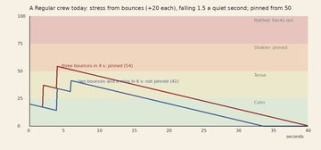
A Regular crew's stress today: three bounces in four seconds pin it (54), two bounces and a miss over six seconds do not (41); the stress falls 1.5 a quiet second. 0.58.0 Related
Open, kept as a thought: the ground may want more grit than the clean ink and wash of today, worn, muddy, marked by use and by the war, still in the game's own style. What grit means here, and how much, is not settled. A first answer (2026-11-16): the grit may belong to the replay rather than to the game (gui-replay-immersion).
The window and replay › Question › Open · horizon: latergui-ground-grit
Open, kept as a thought: the ground may want more grit than the clean ink and wash of today, worn, muddy, marked by use and by the war, still in the game's own style. What grit means here, and how much, is not settled. A first answer (2026-11-16): the grit may belong to the replay rather than to the game (gui-replay-immersion).
Related
Decision · Built · Zoom from the map sheet down to the ground
If each decision in the log carries its reason, the AAR's why line comes almost for free.
After-action report › Question › Open · horizon: nextreport-thought-log-explains
If each decision in the log carries its reason, the AAR's why line comes almost for free.
The source's example is a tank backing up with the reason written in the log, e.g. 'Backs: #3 penetrates our front at 900 m, we do not penetrate his.' The same log would feed the after-action report and the why line in the gui.
Facts
stated Each decision is an event with its reason. That makes the after-action report nearly free, and gives a why line in the gui. docs/archive/tacai.md, section 6 Related
A source question for H2, half answered from the war diary (2026-11-24): B Squadron's tank of Captain R.H. Harrison on 11 June was a diesel M4A2 (Sherman III), by the account of its operator, Trooper Dodds, filed with the war diary; A Squadron's report on its DD tanks of D-Day prefers the diesel to the Chrysler, which points to Chrysler-engined Sherman V DDs there; C Squadron had Fireflies. So the squadrons were mixed, and the scenario's Sherman V for B Squadron (from a photograph caption) is in doubt. The marks of each troop on 11 June are not in the diary.
Maps and scenarios › Question › Open · horizon: nextmaps-thought-h2-hussars-marks
A source question for H2, half answered from the war diary (2026-11-24): B Squadron's tank of Captain R.H. Harrison on 11 June was a diesel M4A2 (Sherman III), by the account of its operator, Trooper Dodds, filed with the war diary; A Squadron's report on its DD tanks of D-Day prefers the diesel to the Chrysler, which points to Chrysler-engined Sherman V DDs there; C Squadron had Fireflies. So the squadrons were mixed, and the scenario's Sherman V for B Squadron (from a photograph caption) is in doubt. The marks of each troop on 11 June are not in the diary.
Facts
secondhand "Knocked Out "B" Sqn Sherman V of the 1st Hussars" (a photograph caption). Steel Chariots, Le Mesnil-Patry part IV (losthistory.net/steelchariots/le-m-p4.htm) secondhand Which Sherman marks the 1st Hussars had on 11 June 1944 is not established: their 'Holy Roller' was an M4A2 (Sherman III) issued in May 1944 by a Veterans Affairs Canada page; a wargame site gives A and B Squadrons Sherman V DD and C Squadron Sherman III and Firefly. Neither is a primary source. veterans.gc.ca/en/node/153803; flamesofwar.com (art_id 590), web research 2026-11-22 secondhand "At 07:15, 19 tanks of 'B' Squadron launched their Sherman V DDs from their landing-craft"; "'C' Squadron's Sherman Vc Fireflies and Sherman IIIs were landed directly onto Mike Red beach" (D-Day, 6 June; no citation beside the lines). No source found gives the marks per squadron on 11 June; the war diary (LAC RG 24, Project '44) was not reached. en.wikipedia.org/wiki/1st_Hussars, web research 2026-11-22 stated "Our tank was a Sherman 4A2 diesel with armour plating on some of the ammo racks." (Captain R.H. Harrison's tank; Dodds was "Sqn Control Op"); "There were 21 tanks altogether on the netting." "Five troops of three each with six in HQF". Tpr A.O. Dodds, 'Account of Personal Experiences in Action on Sunday 11 June 44', DHH 141.4A 6013 (D3), on junobeach.org; listed in the June 1944 appendices of the war diary (War diary, 6th Canadian Armoured Regiment (1st Hussars), June 1944, LAC RG24-C-3 vol. 14213, microfilm T-12657 (heritage.canadiana.ca/view/oocihm.lac_reel_t12657), image 162) stated "Not one of "B" Sqn Officers returned to the Unit"; "the last report we had of CAPTAIN R.H.HARRISON he had bailed out of his disabled tank" (so Harrison, and Dodds's M4A2, were B Squadron's). War diary, 6th Canadian Armoured Regiment (1st Hussars), June 1944, LAC RG24-C-3 vol. 14213, microfilm T-12657 (heritage.canadiana.ca/view/oocihm.lac_reel_t12657), 11 Jun 44, page seven (image 155, read by OCR) stated "Diesel motor preferable to Chrysler" (OCR: "Chrysie"), in A Squadron's report on its DD tanks on D-Day, signed by Major W.D. Brooks, OC "A" Sqn. The Chrysler multibank engine was the M4A4's (Sherman V), the diesel the M4A2's (our reading). War diary, 6th Canadian Armoured Regiment (1st Hussars), June 1944, LAC RG24-C-3 vol. 14213, microfilm T-12657 (heritage.canadiana.ca/view/oocihm.lac_reel_t12657), appendix 'Report on D.D. Tanks A Sqn' (image 175, read by OCR) Related
A source question for H2. The war diary has C Squadron's Fireflies in action: on 8 June Trooper A. Chapman, a gunner in a Firefly in Lieutenant Henry's tank of C Squadron, knocked out five Panthers, and on 11 June he "scored three enemy tanks". How many Fireflies the regiment had on 11 June, and Sergeant Boyle's tank, are not in the June diary.
Maps and scenarios › Question › Open · horizon: nextmaps-thought-h2-hussars-fireflies
A source question for H2. The war diary has C Squadron's Fireflies in action: on 8 June Trooper A. Chapman, a gunner in a Firefly in Lieutenant Henry's tank of C Squadron, knocked out five Panthers, and on 11 June he "scored three enemy tanks". How many Fireflies the regiment had on 11 June, and Sergeant Boyle's tank, are not in the June diary.
Facts
secondhand "A duel began which was won with a shot from a 17 pounder Sherman commanded by Sergeant Arthur Boyle of 'C' Squadron." Steel Chariots, Le Mesnil-Patry part III-A (losthistory.net/steelchariots/le-m-p3.htm) secondhand "34 of the 75mm marks and 3 of the 17 pounders" (the Hussars' tanks destroyed on the day). Steel Chariots, Le Mesnil-Patry part V (losthistory.net/steelchariots/le-m-p5.htm) stated "In this action Tpr A. CHAPMAN gunner in a Firefly knocked out FIVE PANTHERS with five shots, a record up to the present for the Regt. TPR. CHAPMAN IS in LIEUT HENRY's tank of "C" Sqn." (8 Jun 44; OCR corrected: "LIVET HK HENRY"). War diary, 6th Canadian Armoured Regiment (1st Hussars), June 1944, LAC RG24-C-3 vol. 14213, microfilm T-12657 (heritage.canadiana.ca/view/oocihm.lac_reel_t12657), 8 Jun 44 (image 153, read by OCR) stated "Tpr A. CHAPMAN the gunner who knocked out five panthers two days previous, scored three enemy tanks today." (11 Jun 44; OCR: "thgee"). War diary, 6th Canadian Armoured Regiment (1st Hussars), June 1944, LAC RG24-C-3 vol. 14213, microfilm T-12657 (heritage.canadiana.ca/view/oocihm.lac_reel_t12657), 11 Jun 44 (image 156, read by OCR) Related
As we see it now: from 1.0 vehicles are only added or corrected, never removed, so an old game never names a vehicle that is gone. Changed if it proves untenable.
The engine and determinism › Decision › Decidedno-vehicle-removed-after-1-0
As we see it now: from 1.0 vehicles are only added or corrected, never removed, so an old game never names a vehicle that is gone. Changed if it proves untenable.
Question: May a vehicle be removed after 1.0?
Options
✓No, only added or corrected
Why: Chosen on 2026-11-12; corrections are caught by the hashes (f7-input-hashes).
A new vehicle starts as a copy (vehicles new <name> --from <vehicle>), with every copied value marked copied until it has a source of its own; the count of copied values per vehicle is the work list, on the codex page. Missing data falls back as the vehicle-data principle says (one plate per zone, rolled plate, Average), marked as the class standard.
The engine and determinism › Plan › Decided · horizon: nextf7-data-intake
A new vehicle starts as a copy (vehicles new <name> --from <vehicle>), with every copied value marked copied until it has a source of its own; the count of copied values per vehicle is the work list, on the codex page. Missing data falls back as the vehicle-data principle says (one plate per zone, rolled plate, Average), marked as the class standard.
Verification in layers. Form (unknown fields, wrong types, the fixed form) and links (ids that exist) are hard: a file that fails them is not loaded. Sources (every value has a kind, and a src unless MOCK) and plausibility (mass 5 to 80 t, armour 0 to 250 mm, a penetration table that falls with range) are checked by a vehicles check command; plausibility only warns, silenced by a reason written in the file. Behaviour: the test track against the answer key, and the sensitivity run with both ends of the uncertainty, for a new or changed vehicle. Data taken from a book or a pdf goes in as the site does: one agent enters the values with the page, another checks each figure against the source. Built so far (0.20.3): vehicles new <id> --from <vehicle> writes the copy with every sourced value copied, src and at dropped, the old kind and note kept in the note, and refuses to overwrite. Not built: vehicles check (sources and plausibility).
Related
Decision · Built · The program writes the vehicle files and their formDecision · Built · Each value carries its source inline
A way to mark the steps of the simulation: a generation is a capability the simulation did not have, built on toward a better historical engagement. It gets a name, not a number, and shows only in the change it brings. The first generation, everything up to H1 (release 0.37.0), is called Flat (a flat, and the world flat under the hull). The second, Globb (a globe, and a funny Swedish word for a lump), is the engine as it stands when H2 is run: the road there may take anything already decided or thought of, one new thing at a time, each chosen when the one before is done.
The engine and determinism › Plan › Decided · horizon: nextengine-thought-engine-generations
A way to mark the steps of the simulation: a generation is a capability the simulation did not have, built on toward a better historical engagement. It gets a name, not a number, and shows only in the change it brings. The first generation, everything up to H1 (release 0.37.0), is called Flat (a flat, and the world flat under the hull). The second, Globb (a globe, and a funny Swedish word for a lump), is the engine as it stands when H2 is run: the road there may take anything already decided or thought of, one new thing at a time, each chosen when the one before is done.
The road to a 3D world drawn in 2D (2.5D), drawn in the picture: the ground (the height raster, built; drawn ground, the earth's curvature and objects on more levels, ideas; a finer raster, parked), things on it (hedges and forests with height, built; low walls and map items, decided; the band of cover and buildings, ideas), the tank (the gun's own height, built; the hull's tilt, decided and the key; the gun's elevation limits, parked; the belly in a hedge crossing, an idea), sight (the sight line from eye height, built; hull down when spotting, decided; the sight pyramid, an idea for speed), the shot (the shot in 3D, an idea; whether the round's path can strike a crest, not checked) and views that explain, with the window kept 2D (gui-3d-window). The critical line is the hull's tilt, then the gun's limits, then the shot in 3D. Proposed order, not decided: 1 the hull's tilt, step 1 (compute and show); 2 the gun's elevation limits; 3 drawn ground, first kind (banks and ditches), which gives the tilt real angles; 4 hull down when spotting; 5 the shot in 3D; 6 views that explain; walls, the band of cover and the curvature between the steps. Le Mesnil-Patry is gentle ground (63 to 94 m over the map, 68 to 76 m round the village and the fields), so the 3D steps alone may move H2's numbers little; what H1 showed apart from that is the hunt that stops at the first threat (tacai-thought-hunt-stops-at-first-threat) and the missing infantry and anti-tank guns.
Facts
observed The ground of the Le Mesnil-Patry map lies between 63.3 and 93.9 m. maps/le_mesnil_patry/elevation.asc, min and max, 2026-11-21 Pictures
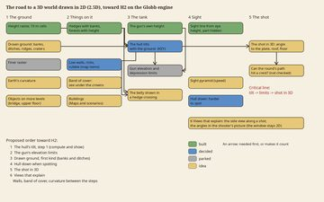
The road to a 3D world drawn in 2D toward H2 on the Globb engine: what is built, decided, parked and only an idea, what needs what (the hull's tilt is the key), and the proposed order. 0.37.0 Decided 2026-11-16, not built: a tank crosses a low stone wall, slowly, as it breaks through a hedge without a bank; a wall higher than about 1.5 m (MOCK) stops it. A wall blocks sight up to its height. The figures are MOCK until a source is found.
Terrain and movement › Decision › Decidedterrain-low-wall-crossing
Decided 2026-11-16, not built: a tank crosses a low stone wall, slowly, as it breaks through a hedge without a bank; a wall higher than about 1.5 m (MOCK) stops it. A wall blocks sight up to its height. The figures are MOCK until a source is found.
Question: Can a Sherman drive through a low stone wall?
Options
✓Yes, slowly; a high wall stops it
Why: Chosen 2026-11-16, the recommendation.
Open
- The height between a low and a high wall, and how long a crossing takes.
Related
Plan · Decided · Things on the map in the engine first, then drawn
The things that make the ground alive exist in the engine before they are drawn, so the picture shows what the engine knows. Two sorts: obstacles and cover with rules (low walls, haystacks and ricks, rubble, fences: sight up to their height, slowing or stopping, cover) and objects without rules for now (a cart, a well, a manure heap, a kitchen garden), kept in the map's data all the same. Each carries its source (the 1947 photograph, the region's standard kit, drawn by hand) and its time (a rick only from July to September; a ruin on the 1947 photograph likely stood in 1944). Lines (walls, fences) become terrain kinds like the hedges, so sight lines and routes handle them at once; points (a rick, a cart) a new kind of object with a place, a size and a heading. The editor gets them in its palette; the gates tools/map/fields.py found come in as proposals. Order: 1 walls and gates, 2 haystacks and ricks, 3 the objects.
Terrain and movement › Plan › Decided · horizon: nextterrain-map-items
The things that make the ground alive exist in the engine before they are drawn, so the picture shows what the engine knows. Two sorts: obstacles and cover with rules (low walls, haystacks and ricks, rubble, fences: sight up to their height, slowing or stopping, cover) and objects without rules for now (a cart, a well, a manure heap, a kitchen garden), kept in the map's data all the same. Each carries its source (the 1947 photograph, the region's standard kit, drawn by hand) and its time (a rick only from July to September; a ruin on the 1947 photograph likely stood in 1944). Lines (walls, fences) become terrain kinds like the hedges, so sight lines and routes handle them at once; points (a rick, a cart) a new kind of object with a place, a size and a heading. The editor gets them in its palette; the gates tools/map/fields.py found come in as proposals. Order: 1 walls and gates, 2 haystacks and ricks, 3 the objects.
Related in Maps and scenarios: terrain-field-outlines-from-hedges.
Facts
observed tools/map/fields.py found 42 gates (gaps up to 6 m between two edges) on Le Mesnil-Patry. tools/map/fields.py on maps/le_mesnil_patry, 2026-11-16 Related
Decision · Decided · A Sherman crosses a low stone wall, slowly; a high wall stops it
After GB12: the guns fire more than their armour-piercing round. Today HE and smoke rounds are carried but never fired (src/engine.rs: not until there are soft targets). First the smoke rounds (the M64 and M89 for the Sherman's 75 mm, the Nebelgranate for the 7.5 cm), fired by a section or platoon to screen a target at range, as FM 17-30 describes; then the other kinds as the targets that call for them come in.
The shot and ballistics › Plan › Decided · horizon: nextshot-thought-more-round-types
After GB12: the guns fire more than their armour-piercing round. Today HE and smoke rounds are carried but never fired (src/engine.rs: not until there are soft targets). First the smoke rounds (the M64 and M89 for the Sherman's 75 mm, the Nebelgranate for the 7.5 cm), fired by a section or platoon to screen a target at range, as FM 17-30 describes; then the other kinds as the targets that call for them come in.
Facts
stated "Base emission smoke shell M89 is a blunt-nose projectile with a maximum effective range of 1,600 yards. ... Each round burns about 3 minutes. A platoon can screen a 400-yard frontage of average terrain within the effective range of the shell." "It is not effective when fired by a single tank." FM 17-30 (1942), change of 22 October 1942, par. 10.d(3) Decided: the crew values get sources in this order: the reload and the reaction times first, since they decide every duel; then the stress values; then the rest. Every value stays MOCK until then.
Crew and stress › Plan › Decided · horizon: latercrew-mock-values
Decided: the crew values get sources in this order: the reload and the reaction times first, since they decide every duel; then the stress values; then the rest. Every value stays MOCK until then.
The reaction ticks, the reload factors and the range errors per crew level are MOCK or a link of ours; the stress factors, the stressor amounts, the recovery and the four effects are MOCK. The range error has the book's curves but not the link to the levels. A question for the next session: which of these should be sourced first, and whether any of them should be measured in a test range instead.
Facts
secondhand The book names "morale under stress" only as part of the ceiling; no source gives the stress numbers. B&L p. 97, as quoted in SESSION.md 2026-11-01 Related
Decision · Built · Reaction time per crew levelDecision · Built · Reload time is one place: gun, turret, crew, stressDecision · Built · Range error follows the crew levelDecision · Built · What raises the stressDecision · Built · Four effects of stress
Decided, not built: the window starts at a size taken from the display (about four fifths of it) and remembers the size it was closed at. Today it starts at 1280 by 800, small on a 2560 by 1440 display.
The window and replay › Decision › Decidedgui-window-size
Decided, not built: the window starts at a size taken from the display (about four fifths of it) and remembers the size it was closed at. Today it starts at 1280 by 800, small on a 2560 by 1440 display.
Question: Should the window start bigger, or remember the size it was last closed at?
Options
✓Start bigger
About four fifths of the display, instead of a fixed 1280 by 800.
Why: Chosen on 2026-11-11, the recommendation.
✓Remember the size
The window opens at the size it was last closed at.
Why: Chosen on 2026-11-11, the recommendation.
Facts
stated The window starts at 1280 by 800. src/gui.rs window_width, window_height Code
src/gui.rs: run
Open
- Where the remembered size is kept (a file beside the program or in the user's config directory).
After GB12 step d: inside the ring that marks the cloud's 15 m, a softer, cloud-like fill rather than a flat disc, with the ring kept as the edge where sight is stopped; and the moment a crew lays smoke shown as an effect from the tank to where the cloud stands, the way a shot is shown, since the engine knows it (SmokeLaid: the unit, the means, where, the tick). Picture only: the ring stays exact, the softness does not suggest the cloud thins.
The window and replay › Plan › Decided · horizon: nextgui-thought-smoke-look-and-throw
After GB12 step d: inside the ring that marks the cloud's 15 m, a softer, cloud-like fill rather than a flat disc, with the ring kept as the edge where sight is stopped; and the moment a crew lays smoke shown as an effect from the tank to where the cloud stands, the way a shot is shown, since the engine knows it (SmokeLaid: the unit, the means, where, the tick). Picture only: the ring stays exact, the softness does not suggest the cloud thins.
For F6 the LLM player is the model working in the session, which reads the sitrep and sends orders with the sitrep and turn commands. No program of its own is written for it.
Players and multiplayer › Decision › Decidedplayers-llm-player-in-session
For F6 the LLM player is the model working in the session, which reads the sitrep and sends orders with the sitrep and turn commands. No program of its own is written for it.
Question: Who is the LLM player in F6?
Options
✓The model in the session
The model uses the sitrep and turn commands; no program calls a model.
Why: Decided: the LLM player is the model in the session.
Related
Idea · Idea · An LLM that plays a side on its ownIdea · Idea · A small local language model as an opponent or a narratorIdea · Idea · Which level of command the player has
Decided, not built: the game record gets one optional field per side naming its player. It does not change the battle, only makes games easier to compare afterwards. Settled 2026-11-13: the field holds both a free name and the kind of player (human, script or LLM); the kind is what lets the report say who was in command.
Players and multiplayer › Decision › Decidedplayers-who-played-each-side
Decided, not built: the game record gets one optional field per side naming its player. It does not change the battle, only makes games easier to compare afterwards. Settled 2026-11-13: the field holds both a free name and the kind of player (human, script or LLM); the kind is what lets the report say who was in command.
Question: Should the game record save who played each side?
Options
✓Record the player of each side
One optional field per side in the game record.
Why: Chosen on 2026-11-11, the recommendation.
Facts
stated The question was left open at F5 and remains open. SESSION.md, Decision F5 and the status for F6 Decided, not built: a comrade's loss or muzzle flash counts as the crew's own knowledge only when it is in sight; no telepathy and no sharing by radio between single tanks. An enemy seen firing at a comrade counts as a threat in target choice (the manuals: tank No. 2 supports tank No. 1, and other tanks help destroy an antitank gun that endangers one). US drill; the German side is to be checked (crew-drill-per-nation).
TacAI › Decision › Decidedcomrades-knowledge
Decided, not built: a comrade's loss or muzzle flash counts as the crew's own knowledge only when it is in sight; no telepathy and no sharing by radio between single tanks. An enemy seen firing at a comrade counts as a threat in target choice (the manuals: tank No. 2 supports tank No. 1, and other tanks help destroy an antitank gun that endangers one). US drill; the German side is to be checked (crew-drill-per-nation).
Question: Do comrades' fire and losses count as the tank's own knowledge? (docs/archive/tacai.md 5, question 5)
Options
✓Counts as own knowledge
Only what the tank sees: a comrade hit, or an enemy firing at one.
Why: Chosen on 2026-11-11: only when in sight, and an enemy seen firing at a comrade ranks as a threat.
Does not count
The principle of own knowledge stands.
Facts
stated "When tank No. 1 becomes immovable and its crew is endangered by attack of the enemy, tank No. 2 must support and assist tank No. 1." facts/manuals/FM17-30_1942.pdf, fig. 114 (printed p. 131) stated "When one or more tanks are endangered by a hostile antitank weapon, other tanks in the vicinity must assist in destroying it." facts/manuals/FM17-10_1942.pdf, par. 136 h(3) (printed p. 204) stated "Radio silence is maintained when in the presence of the enemy and as otherwise ordered." The platoon leader reports to the company commander, not each tank. facts/manuals/FM17-30_1942.pdf, march, c. (pdf p. 69), and the report questions (pdf p. 67) Open
- How long a seen hit on a comrade counts.
- Whether radio sharing differs by nation (crew-drill-per-nation).
Decided: crews show what WW2 crews did, not what we would do today. Their own reflexes follow US drill for now (FM 17-10, 17-12, 17-30). They are thought to be much alike across nations, but where a nation's doctrine differs, that doctrine applies to its crews. The German side is to be gone through next; a first search of German sources (the Tigerfibel and US intelligence on German tactics) was made on 2026-11-11 and is saved in out/search.
TacAI › Decision › Decidedcrew-drill-per-nation
Decided: crews show what WW2 crews did, not what we would do today. Their own reflexes follow US drill for now (FM 17-10, 17-12, 17-30). They are thought to be much alike across nations, but where a nation's doctrine differs, that doctrine applies to its crews. The German side is to be gone through next; a first search of German sources (the Tigerfibel and US intelligence on German tactics) was made on 2026-11-11 and is saved in out/search.
Question: Do German, Soviet and British crews follow the same drill as the US one?
Options
✓US now, a nation's own doctrine where it differs
One drill now; differences per nation once checked.
Why: Chosen on 2026-11-11.
Facts
stated German: "The tank is not to be employed as artillery, which fights the enemy for an extended period from one position. The tank fights while moving with short halts for firing." (Panzer Army High Command order No. 14, 1943) Tactical and Technical Trends No. 28, via lonesentry.com german-tank-panzer-rules stated Soviet: "2-3 rounds within the span of 10-15 seconds are fired, then the tank changes position again." (229th Tank Regiment report, 1945) tankarchives.com 2021/08 t-34-experience secondhand Soviet radio: "Only command tanks had radios and radio men" (postwar recollection of the wartime battalion); a 1942 US report: "Inter-tank communication is by visual signal". By 1945: "The main method of commanding a platoon or company is by radio." CIA information report 1953 (archive.org); Tactical and Technical Trends Nos. 1-20 (archive.org); tankarchives.com 2021/08 t-34-experience secondhand Training: British conscripts about 21 weeks through every crew job; Soviet 1941 crews "often drivers had fewer than five hours of driving experience"; German crews trained with live fire and in each other's jobs, poorly by 1944-45. out/search/2026-11-11_british_crew_training_answers.md, _soviet_, _german_ (not in git) secondhand T-34/76 (two-man turret, 1940-early 1944): the commander also served as the gunner ("In the T-34's two-man turret, the tank commander also served as the gunner."); a 1942 US report says loader instead. The T-34-85 with the three-man turret (1944) has a separate gunner: "During the battle, the commander looks through the commander's cupola, the gunner through the gun sight." stalin-line.by tankovye-asy; tankarchives.com 2019/05 t-34-85-review (a brigade report, 1944); Tactical and Technical Trends Nos. 1-20 stated Soviet radio: "Presently, only 50% of T-34 tanks are equipped with radio receivers and transmitters." (order No. 447, 28 July 1943, requiring 9-R sets on all T-34s from 20 August 1943) tankarchives.com 2020/09 radios-for-all (RGAE F.8752 Op.4 D.303) Open
- Moving after a few rounds, per nation (crew-move-after-firing).
- Where a crew's nation is read from (the vehicle, the side, the scenario).
- Soviet radio by year: command tanks only in 1941-42, half of the T-34s by July 1943, all from August 1943 (order No. 447); ties to comrades-knowledge.
- The T-34/76's commander laying the gun: a commander who is also the gunner sees less and fires slower (not modelled).
Decided, not built: German and Soviet crews move to a new position after 2-3 rounds (MOCK figure), US and British crews stay until the target is beaten. Built with crew-drill-per-nation.
TacAI › Decision › Decidedcrew-move-after-firing
Decided, not built: German and Soviet crews move to a new position after 2-3 rounds (MOCK figure), US and British crews stay until the target is beaten. Built with crew-drill-per-nation.
Question: Does a crew move to a new position after a few rounds, and does it differ by nation?
Options
✓Per nation
German and Soviet move after 2-3 rounds; US and British stay.
Why: Chosen on 2026-11-11, the recommendation.
Facts
stated "The tank fights while moving with short halts for firing." (German order, 1943) Tactical and Technical Trends No. 28, via lonesentry.com german-tank-panzer-rules stated "2-3 rounds within the span of 10-15 seconds are fired, then the tank changes position again." (Soviet regiment report, 1945) tankarchives.com 2021/08 t-34-experience stated US: changing position because of the muzzle blast is written for assault guns only. facts/manuals/FM17-10_1942.pdf, assault guns, (3) Positions Open
- How many rounds, and how far it moves (MOCK).
- Whether US and British crews did it in practice despite the manuals.
Related
The operative AI stays a player outside the engine. TacAI is a swappable step connected at each tick start: it runs in phase 1 against the same world state as decide(), answers with events that are applied in phase 2, and so takes effect from the next tick. Written as a direction on 2026-10-25, with no code yet at that time.
TacAI › Decision › Decidedtacai-ai-is-a-player-outside-the-engine
The operative AI stays a player outside the engine. TacAI is a swappable step connected at each tick start: it runs in phase 1 against the same world state as decide(), answers with events that are applied in phase 2, and so takes effect from the next tick. Written as a direction on 2026-10-25, with no code yet at that time.
Question: How do the player and TacAI feed orders into the engine?
Open
- Not checked against the code here: whether TacAI is connected at the tick start in phase 1 as the source describes.
Every real map is made in the same layers, each with a source per front: 1 the engagement and the box (map.json); 2 the ground's shape, the densest height data there is, LiDAR where it exists and otherwise the global Copernicus GLO-30 (30 m); 3 the picture of the time, the earliest air photograph or map, traced in the editor; 4 proposals from today's vector data (a national topography, or OpenStreetMap as the global fallback), checked against 3; 5 detail, banks and ditches proposed from LiDAR where there is some (maps-thought-banks-from-lidar), otherwise drawn by hand; 6 the front's kit, the terrain kinds and buildings it needs; 7 the same checks for every map (the map sheet, a sight check, a test scenario). The engine, the editor and the export are already general; what is tied to France today is the fetching (tools/map/fetch.py: IGN) and the bocage knowledge (the hedge rule, the strip fields).
Maps and scenarios › Plan › Decided · horizon: latermaps-plan-map-process
Every real map is made in the same layers, each with a source per front: 1 the engagement and the box (map.json); 2 the ground's shape, the densest height data there is, LiDAR where it exists and otherwise the global Copernicus GLO-30 (30 m); 3 the picture of the time, the earliest air photograph or map, traced in the editor; 4 proposals from today's vector data (a national topography, or OpenStreetMap as the global fallback), checked against 3; 5 detail, banks and ditches proposed from LiDAR where there is some (maps-thought-banks-from-lidar), otherwise drawn by hand; 6 the front's kit, the terrain kinds and buildings it needs; 7 the same checks for every map (the map sheet, a sight check, a test scenario). The engine, the editor and the export are already general; what is tied to France today is the fetching (tools/map/fetch.py: IGN) and the bocage knowledge (the hedge rule, the strip fields).
The sources become an interface with IGN as one source among several (maps-thought-sources-per-front). To hold larger maps (5 to 10 km in the desert or on the steppe) the engine needs exact sight with its pyramid (GB9, exact-sight-grid-traversal), recordings that do not carry the whole map, the window's finer relief over big areas, and the coordinate standard (terrain-map-coordinate-standard), all noted in maps-thought-larger-maps. Which front comes next is open; North Africa is the one nearest the heart (terrain-thought-afrika-korps): weaker armour and guns, closer fights. Outside the milestones: H2 is Le Mesnil-Patry; the next chapter after H2 could be the second map on another front, to try the process for real.
Pictures
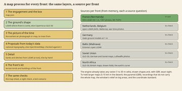
The seven layers of a map, and the sources per front from memory, each a question to check. 0.39.0 Related
Decision · Built · The first real map is Le Mesnil-Patry, 11 June 1944Decision · Built · The tracing tool grows into a map editorDecision · Built · Maps carry a version and a changelog, like the code
Decided 2026-11-24: the H2 scenario has no Jagdpanzer IV. The sources that follow the 12th SS's units put SS-Panzerjäger-Abteilung 12's first action on 19 July 1944 (its 1st company joined the division in mid-July), and the Abteilung was not ready for combat in June; only TracesOfWar places Jagdpanzer IVs at Le Mesnil-Patry, perhaps taking the 12th SS's Pz IV or anti-tank guns for them. Taken up again if Számvéber's or Meyer's June pages say otherwise.
Maps and scenarios › Plan › Decided · horizon: nextmaps-thought-h2-jagdpanzer-present
Decided 2026-11-24: the H2 scenario has no Jagdpanzer IV. The sources that follow the 12th SS's units put SS-Panzerjäger-Abteilung 12's first action on 19 July 1944 (its 1st company joined the division in mid-July), and the Abteilung was not ready for combat in June; only TracesOfWar places Jagdpanzer IVs at Le Mesnil-Patry, perhaps taking the 12th SS's Pz IV or anti-tank guns for them. Taken up again if Számvéber's or Meyer's June pages say otherwise.
Facts
secondhand Számvéber's history of the 12th SS's armour, from the units' war diaries, has the Abteilung's combat in the chapter "Combat of SS-Panzerjäger Abteilung 12 in the Battle for Normandy, 10 July–26 August 1944"; "on 12 July SS-Panzerjäger Abteilung 12 ... received the news that another 11 Jagdpanzer IVs had arrived for them at Versailles". Számvéber, Waffen-SS Armour in Normandy (Helion 2012), search excerpts (erenow.org refused reading); facts/research/h2_sources_2026-11-24.md secondhand Ten Jagdpanzer IV received 26 April 1944 and eleven more 22 June; the Abteilung was in Normandy from the start but lacked equipment and was not combat ready; its 1st company joined the division on 19 July (15 July after Meyer), its first enemy tank knocked out at Frénouville on the morning of 19 July. Axis History Forum, 'SS Panzerjager Abteilung 12' (quoting Zetterling); Missing-Lynx forum (citing Herbert Meyer); facts/research/h2_sources_2026-11-24.md secondhand Canadian tanks approaching Le Mesnil-Patry were hit by camouflaged Jagdpanzer IVs of SS-Panzerjägerabteilung 12 (the one source for). TracesOfWar, 'Battle for Le Mesnil Patry, 11 June 1944' (search summary only; the page refused reading) At the end of a larger session a sub-agent writes the new items and the journal draft, on trial; continued on 2026-11-24 after the first round. Every quote is checked verbatim against its source by the main session, and the diff of data/ is reviewed.
The project site › Decision › Decidedsite-sub-agent-writes-items-trial
At the end of a larger session a sub-agent writes the new items and the journal draft, on trial; continued on 2026-11-24 after the first round. Every quote is checked verbatim against its source by the main session, and the diff of data/ is reviewed.
Question: Who writes the items and the journal draft after a large session?
Options
✓A sub-agent, checked by the main session
The sub-agent writes, the checker verifies each quote against the sources, and the diff of data/ is reviewed.
Why: Chosen: on trial until the next session; continued on 2026-11-24.
Open
- Still on trial: to be judged again, made a rule or stopped.
Related
Idea · Idea · A tool that checks quotes against their sources, instead of a modelIdea · Idea · A blind review of the code by an agent that knows little of the work
Parked on 2026-11-11: open ground keeps one pace (0.6) and one softness everywhere. Grass and other surfaces inside open ground wait for real maps, when the ground type comes from data (terrain-real-map-data). No scenario needs them yet.
Terrain and movement › Decision › Parkedterrain-open-surfaces
Parked on 2026-11-11: open ground keeps one pace (0.6) and one softness everywhere. Grass and other surfaces inside open ground wait for real maps, when the ground type comes from data (terrain-real-map-data). No scenario needs them yet.
Question: Are the surfaces inside open ground to be modelled?
Code
src/terrain.rs: OPEN_GROUND_SOFTNESS
Open
- Taken up with real maps: which surfaces, and with which figures.
A vehicle's width (the clearance to obstacles), its ground pressure in soft ground, the load limit of bridges and the fording depth are parked for F7, the vehicle data.
Terrain and movement › Decision › Parkedterrain-vehicle-width-and-ground-pressure
A vehicle's width (the clearance to obstacles), its ground pressure in soft ground, the load limit of bridges and the fording depth are parked for F7, the vehicle data.
Question: Which vehicle properties does the route and the bogging use?
Code
src/route.rs: CLEARANCE_M
Open
- Each figure needs a source when F7 brings the vehicle data.
Related
Parked · Parked · Vehicle data in F7: width, ground pressure, bridges, fording
A maximum elevation per vehicle, and a hill crest that depends on the direction, are parked as a future idea.
Terrain and movement › Decision › Parkedterrain-elevation-max
A maximum elevation per vehicle, and a hill crest that depends on the direction, are parked as a future idea.
Question: Should a vehicle have a maximum elevation besides its maximum slope?
Code
src/terrain.rs: slope_factor
Related
Width, ground pressure, the load limit of bridges and the fording depth come with the vehicle data in F7.
Terrain and movement › Parked › Parked · horizon: laterterrain-thought-vehicle-data-f7
Width, ground pressure, the load limit of bridges and the fording depth come with the vehicle data in F7.
Each figure is needed by the route (clearance per vehicle), the bogging (ground pressure) and the water (fording depth). Until F7 the clearance is the same for every vehicle and the other figures are not in the model.
Related
Decision · Parked · Width, ground pressure, bridges and fording depthDecision · Built · Bogging down on soft ground
A depth for shallow water (the fording depth) can be added later without anything breaking; it belongs to F7.
Terrain and movement › Parked › Parked · horizon: laterterrain-thought-water-depth
A depth for shallow water (the fording depth) can be added later without anything breaking; it belongs to F7.
Deep water stays impassable. Shallow water has a pace and a softness today, and the fording depth of each vehicle would be part of the vehicle data.
Related
A maximum elevation per vehicle and a direction-dependent hill crest are parked.
Terrain and movement › Parked › Parked · horizon: maybeterrain-thought-elevation-max
A maximum elevation per vehicle and a direction-dependent hill crest are parked.
A flat ridge of 0.9 m in the test valley sits between two contour lines and is not seen on the map, though it hides a vehicle; the side view shows it, the map does not.
Related
Decision · Parked · Maximum elevation per vehicle and the direction of a hill crestDecision · Built · Ground height from a height raster
The engine's 10 m cells shave a crest: a ridge of 1:10 loses 0.25-0.5 m at its top, one of 1:5 loses 0.5-1.0 m, and the crest can move up to 5 m sideways; that is as large as the window between hull down and showing the hull. Parked: no front needs a fine raster everywhere, and where detail counts it is drawn (terrain-thought-drawn-ground) or gone since the war.
Terrain and movement › Parked › Parked · horizon: laterterrain-thought-finer-raster
The engine's 10 m cells shave a crest: a ridge of 1:10 loses 0.25-0.5 m at its top, one of 1:5 loses 0.5-1.0 m, and the crest can move up to 5 m sideways; that is as large as the window between hull down and showing the hull. Parked: no front needs a fine raster everywhere, and where detail counts it is drawn (terrain-thought-drawn-ground) or gone since the war.
The engine is not tied to 10 m: the raster file names its own cell size. tools/map/fetch.py already fetches LiDAR HD at 2 m and averages it to 10 m, so a 2 m file is almost free to make; the cost would be in the sight lines (about five times the samples per line) and the file (about 25 times the cells). A pyramid of maximum heights (spotting-thought-sight-pyramid) would make a fine raster much cheaper in the sight lines. To take it up: make a 2 m file for one map and measure time and outcome. Related in Maps and scenarios: terrain-real-map-data.
Facts
observed A symmetric ridge, cell averages and the line between cell centres: 1:10 loses 0.25 m (top at a cell centre) to 0.5 m (top on a cell boundary); 1:5 loses 0.5 to 1.0 m. worked by hand 2026-11-21 observed A Sherman's gun is at 2.20 m and its top at 2.74 m. spotting-gun-height observed The raster's cell size is read from the file's header. src/ground.rs Pictures
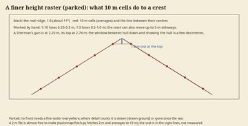
Sketch: a 1:5 ridge and what 10 m cell averages make of it, the top a metre too low, against a hull-down window of a few decimetres. 0.36.0 Related
A model in which forest lowers the chance to detect a tank is parked. It would change spotting. The sight depth rule is built and is not affected.
Spotting and sight › Decision › Parkedspotting-forest-chance-parked
A model in which forest lowers the chance to detect a tank is parked. It would change spotting. The sight depth rule is built and is not affected.
Question: Should forest also lower the chance to spot, and not only block sight?
Open
- Whether to build it, and how, is not decided.
A contact knows which enemy it is, but not what kind of tank it is. Identification, telling that something seen is a Pz IV, is parked and belongs to later work.
Spotting and sight › Decision › Parkedspotting-identification
A contact knows which enemy it is, but not what kind of tank it is. Identification, telling that something seen is a Pz IV, is parked and belongs to later work.
Question: Does a unit know what kind of enemy it sees?
Facts
stated A wrong identification ("Tiger!") gives a wrong threat picture and more stress. The closer and the longer the crew sees, the surer the identification. docs/archive/tacai.md section 6, line 377 Code
src/models.rs: Contact
Sharing a contact between units, by radio or the like, is parked. It would be an event of its own with a delay and a chance of its own.
Spotting and sight › Parked › Parked · horizon: laterspotting-thought-sharing
Sharing a contact between units, by radio or the like, is parked. It would be an event of its own with a delay and a chance of its own.
The notes decide that nothing in the engine shares memory now, and that the structure must not block sharing later. A shared contact would come as its own event, with its own delay and its own chance, and would be counted in the same way as sight.
Related
Decision · Built · Contacts are kept per unit, nothing is shared
Firing at a suspected position, or at the last known position of an enemy not seen now, is parked. It goes together with infantry and HE.
Spotting and sight › Parked › Parked · horizon: laterspotting-thought-fire-on-suspected-place
Firing at a suspected position, or at the last known position of an enemy not seen now, is parked. It goes together with infantry and HE.
Today a unit fires only at an enemy it sees now. Firing at a place where the enemy was, or is suspected to be, would need its own rule for the shot and for the hit. The notes tie it to infantry and HE.
Related
Decision · Built · Only an enemy seen now may be chosen as target
The chain's shares are all MOCK. The planned calibration is against ORO-T-117 (7.6): one or two men hit per penetration, most often a bail-out. It is not done.
The shot and ballistics › Decision › Parkedcrew-fate-calibration
The chain's shares are all MOCK. The planned calibration is against ORO-T-117 (7.6): one or two men hit per penetration, most often a bail-out. It is not done.
Question: How are the shares of the crew-fate chain set?
Options
Calibrate against ORO-T-117
Tune the shares so the outcome matches the report.
Keep the MOCK shares
Leave the shares as starting guesses.
Facts
MOCK Killed share 40 %; bail-out 60 % with one man hit and no fire, 40 % with none hit. src/rules.rs: KILLED_SHARE, BAIL_ONE_HIT, BAIL_NONE_HIT stated Share of the crew's casualties outside the tank: 40 % in a British sample of 333 tanks, 64 % in a small American sample of about 300. ORO-T-117, as cited in docs/archive/tacai.md 7.6 stated "about two casualties, one killed and one wounded" per penetration (US unit reports); unofficial estimates "about 1.5 to 2.0 per tank"; First Army: "about 2,5 men per medium tank became casualtiess" [OCR]. ORO-T-117, Survey of Allied Tank Casualties in World War II (archive.org oro-t-117), Personnel Casualties secondhand British: "Two hundred and forty tanks had been damaged by enemy Armor Piercing and Hollow Charge shells and had caused 326 men to be killed or wounded" (about 1.4 per tank); 38 % of those hit killed. Wright and Harkness, 21 Army Group ORS survey (1946), as quoted by tanks-encyclopedia.com observed Compared on 2026-11-11: our chain hits about 1.3 men per Sherman penetration (at the low end of the sources) and kills 40 % of those hit (the British 38 %, the US one in two); the bail-out (60 % and 40 %) is far below the sources (bail-out-almost-always). src/rules.rs casualty_chance, KILLED_SHARE Code
src/rules.rs: penetration_chain
Open
- Taken up after face-hardened-plate is built, when the shot part is stable (2026-11-11).
HE, smoke, APDS and the rest of the stock are parked. A type changes penetration, spread and effect, and the choice of round would become an order.
The shot and ballistics › Parked › Parked · horizon: laterammunition-types-later
HE, smoke, APDS and the rest of the stock are parked. A type changes penetration, spread and effect, and the choice of round would become an order.
Each type changes the penetration (AP, APC, APCBC, APCR, APDS), the spread (B&L p. 100: APDS with bad ammunition has several times the spread) and the effect (HE against soft targets and infantry, smoke against sight). Parked until the rules and the mechanics are in place. Choosing a round becomes an order, and the stock of each type is part of the ammunition.
Facts
stated The Pz IV H carries 87 rounds: "87 Pzgr, Sprgr + Nebel" (armour-piercing, high explosive and smoke). C&D, the Pz IV H data block (SESSION.md, parked ideas) Related
B&L p. 97 suggests that only Elite and Veteran get the full gain of a second shot. No source says how well crews read where their shots fell.
The shot and ballistics › Parked › Parked · horizon: maybereading-error-per-crew
B&L p. 97 suggests that only Elite and Veteran get the full gain of a second shot. No source says how well crews read where their shots fell.
Parked: the rule is B&L's suggestion, not a figure. Would need a source on how well crews read the fall of shots before any number is set.
Facts
stated B&L p. 97 suggests that only Elite and Veteran crews get the full gain of the second shot. B&L p. 97 (SESSION.md, open points) Related
With B&L's double spread, our expected hits lie 3 to 7 units under the book's curves at 500 to 1 000 m for all three crews. Parked 2026-11-13 as a known deviation without an explanation: the gap is 3.3 to 6.8 units in the cells test_range/reference.json gives, and the book explains no short-range excess (its bunched-hit table, p. 96, and hit caps, p. 97, stop at 300 m). The curves (the unnumbered chart pages after p. 100, facts/ocr/bl/pg-173 to pg-175) are computed with doubled dispersion: p. 100, "double dispersion data results in the first shot hit probability curves that follow gun elevation graphs". No value is changed to meet the curve.
The shot and ballistics › Parked › Parked · horizon: nextunder-the-book-short-range
With B&L's double spread, our expected hits lie 3 to 7 units under the book's curves at 500 to 1 000 m for all three crews. Parked 2026-11-13 as a known deviation without an explanation: the gap is 3.3 to 6.8 units in the cells test_range/reference.json gives, and the book explains no short-range excess (its bunched-hit table, p. 96, and hit caps, p. 97, stop at 300 m). The curves (the unnumbered chart pages after p. 100, facts/ocr/bl/pg-173 to pg-175) are computed with doubled dispersion: p. 100, "double dispersion data results in the first shot hit probability curves that follow gun elevation graphs". No value is changed to meet the curve.
A factor of 1.75 would fit, but the book does not say so. Candidate: the Average curve's values at short range (the bump at 500 m). Open.
Related
Decision · Built · The battlefield spread is double the proving ground's
British O.B. Investigation No. 659 (28 December 1944, at Bovington) is an estimate of hit chances, not a firing trial, and its follow-up shots are a ceiling: the best accuracy after several shots, with the errors of range and target speed set to zero (B&L p. 121). So our 44.5 % at 2 000 yd under its 54 % is as it should be; our 92.6 % at 1 200 yd above its 87 % is the one to look at. Parked 2026-11-13 as a known deviation: recomputed, our follow-up head-on figures are 92.6 % at 1 200 yd and 44.5 % at 2 000 yd against the report's 87 % and 54 % (B&L p. 120, read from the page). Target size does not explain it (both ends move the same way with width), nor does a missing error term (it would lower both ends): the report's spread grows less with range than B&L's curves, a difference of shape. The report gives hit percentages, not spreads, so following it would be fitting to a result.
The shot and ballistics › Parked › Parked · horizon: maybeob-659-against-us
British O.B. Investigation No. 659 (28 December 1944, at Bovington) is an estimate of hit chances, not a firing trial, and its follow-up shots are a ceiling: the best accuracy after several shots, with the errors of range and target speed set to zero (B&L p. 121). So our 44.5 % at 2 000 yd under its 54 % is as it should be; our 92.6 % at 1 200 yd above its 87 % is the one to look at. Parked 2026-11-13 as a known deviation: recomputed, our follow-up head-on figures are 92.6 % at 1 200 yd and 44.5 % at 2 000 yd against the report's 87 % and 54 % (B&L p. 120, read from the page). Target size does not explain it (both ends move the same way with width), nor does a missing error term (it would lower both ends): the report's spread grows less with range than B&L's curves, a difference of shape. The report gives hit percentages, not spreads, so following it would be fitting to a result.
Unexplained. Open: whether the spread should follow the report's figures, which grow less with range than B&L's curves.
Facts
stated At 2 000 yd the report's following shots are higher (54 against our 44.5); at 1 200 yd lower (87 against our 92.6). O.B. 659 as compared in SESSION.md (open points, 2026-11-05) stated "British O.B. Investigation No. 659, Dated 28 Dec.'44, which is currently held by the Bovington Tank Museum, provides several valuable insights into the factors that influence hit probability against moving targets" facts/World War II Ballistics_ Armor and Gunnery.pdf (B&L) App. 17 p. 119 (facts/ocr/bl/pg-200.txt) stated "Follow-up Shots probability appears to be maximum obtainable accuracy after several shots at target, with errors in range estimation and target speed reduced to zero, mean jump and throw-off adjusted for." facts/World War II Ballistics_ Armor and Gunnery.pdf (B&L) p. 121 (facts/ocr/bl/pg-202.txt) stated 75 mm APCBC, follow-up shots, head-on target: 100 / 99 / 87 / 69 / 54 % at 400 / 800 / 1 200 / 1 600 / 2 000 yd; direct crosser 99 / 79 / 53 / 36 / 25 % (read from the page images; the OCR misreads 79 as 19). facts/World War II Ballistics_ Armor and Gunnery.pdf (B&L) p. 120 (facts/ocr/bl/pg-201.jpg) Related
Decision · Built · The battlefield spread is double the proving ground's
The spread graphs on pages 101 to 102 have four curves and three names. The book's hit curves support our reading, but the flat fourth curve is not explained. Parked 2026-11-13 as a known uncertainty: the charts (the unnumbered pages after p. 100, facts/ocr/bl/pg-168 and pg-169) have four curves and a legend of three names with the same marker, so which curve carries which name is read from position only; the book (p. 100) says only that the graphs "depict actual dispersion data for WW II weapons". The game uses three curves and not the flat one (src/rules.rs DISPERSION_*), so it does not change a shot.
The shot and ballistics › Parked › Parked · horizon: nextdispersion-fourth-curve
The spread graphs on pages 101 to 102 have four curves and three names. The book's hit curves support our reading, but the flat fourth curve is not explained. Parked 2026-11-13 as a known uncertainty: the charts (the unnumbered pages after p. 100, facts/ocr/bl/pg-168 and pg-169) have four curves and a legend of three names with the same marker, so which curve carries which name is read from position only; the book (p. 100) says only that the graphs "depict actual dispersion data for WW II weapons". The game uses three curves and not the flat one (src/rules.rs DISPERSION_*), so it does not change a shot.
Our reading from the top: Poor, Average, an unnamed third, Good. The flat fourth curve is about 1.16 to 1.25 minutes vertical and 0.82 to 0.92 minutes lateral. What it is, the book does not say.
Facts
stated The flat fourth curve: about 1.16 to 1.25 minutes vertical and 0.82 to 0.92 minutes lateral. B&L p. 101-102, read from the graph (SESSION.md, open points) Related
Morale, the crew's long-term state, and abandoning a whole vehicle were moved out of the stress step on 2026-11-01. Stress is built; morale is not. Abandoning a vehicle is a reaction and so belongs to TacAI.
Crew and stress › Decision › Parkedmorale-later
Morale, the crew's long-term state, and abandoning a whole vehicle were moved out of the stress step on 2026-11-01. Stress is built; morale is not. Abandoning a vehicle is a reaction and so belongs to TacAI.
Question: Is morale built with stress?
Options
✓Stress now, morale later
Stress as the vehicle's acute state; morale the crew's long-term state, to a later milestone.
Why: Chosen: stress is the vehicle's acute state, morale is the crew's long-term state, and abandoning a vehicle is a reaction.
Morale with stress
Both built in the same step.
Why: Not chosen: the stress step was set to stress alone.
Open
- The note moved morale to F9, as F9 was numbered on 2026-11-01; the milestones have since been renumbered, so the target needs checking.
- SESSION.md lists this with the other modifiers beyond B&L (crew, optics, TacAI, weather, morale), whose text is cut and whose titles are kept. Optics and weather are in no item.
Related
Open: British crews sometimes abandoned a tank that was hit but not penetrated, expecting the next shot to go through. Today only a penetration makes a crew bail out. It ties into stress: a rattled crew under accurate fire. More sources since 2026-11-27: experienced German crews stayed in their tanks under air attack where the inexperienced bailed out (Gooderson); crew quality may matter more than the hit.
Crew and stress › Decision › Parkedbail-out-without-penetration
Open: British crews sometimes abandoned a tank that was hit but not penetrated, expecting the next shot to go through. Today only a penetration makes a crew bail out. It ties into stress: a rattled crew under accurate fire. More sources since 2026-11-27: experienced German crews stayed in their tanks under air attack where the inexperienced bailed out (Gooderson); crew quality may matter more than the hit.
Question: Should a crew sometimes bail out after a hit that did not penetrate?
Facts
secondhand "It was noted that some even abandoned them when a penetration did not occur, as the follow up shot stood a high chance of doing so." Wright and Harkness, 21 Army Group ORS survey (1946), as quoted by tanks-encyclopedia.com secondhand A British Sherman III: "The crew only bailed out after the third penetrating hit was received." (two non-penetrating hits came first) Wright and Harkness, 21 Army Group ORS survey (1946), as quoted by tanks-encyclopedia.com secondhand "The experienced crews stated that when attacked from the air they remained in their tanks which had no more than superficial damage (cannon strikes or near misses from bombs). They had a great difficulty in preventing the in- experienced men from baling out when our aircraft attacked." German tank crewmen, Mortain, August 1944. Gooderson, Air Power at the Battlefront (1998), citing a joint RAF/British Army study of Typhoon effectiveness; warhistory.org/2015/09/21/air-power-at-the-battlefront/, checked verbatim secondhand Mortain, 12-20 August 1944: "no fewer than ten of the 33 Panthers found, or 30 per cent, had been abandoned or destroyed by their own crews". Falaise pocket: of 133 armoured vehicles "only 33 had been the victim of any form of air attack. The remaining hundred had been destroyed by their crews or simply abandoned" (a retreat: fuel, breakdowns and encirclement, not only fear). Gooderson (1998), citing No. 2 ORS and ORS 2nd TAF; same page, checked verbatim stated US First Army, 274 medium tanks: the commander 57 per cent casualties, the driver 47, 51 per cent of all crewmen, about 2.5 men a tank; "it was frequently necessary for them to expose themselves, either partially or wholly, in fighting their vehicles". The report calls its casualty data "incidental and subject to inaccuracies". ORO-T-117, Survey of Allied Tank Casualties in World War II (1951), p. 33; read on the page image secondhand 747th Tank Battalion, 13 July 1944: the crew was ordered to abandon the tank after an anti-tank hit; the assistant driver went back in and was killed. 747th Tank Battalion AAR, July 1944, as transcribed at eucmh.com/2023/07/02/747th-tank-battalion-aar-july-1944-france/ (transcription not checked against the original) Open
- Taken up when a second source with a figure turns up (2026-11-11).
Orders would take time to reach the units: longer through a headquarters chain, shorter with a smaller command distance. It needs a parent and a command distance on units, which do not exist yet, and a layer of its own next to crew and stress. Parked.
Orders › Decision › Parkedorders-command-delay
Orders would take time to reach the units: longer through a headquarters chain, shorter with a smaller command distance. It needs a parent and a command distance on units, which do not exist yet, and a layer of its own next to crew and stress. Parked.
Question: Should orders take time to reach the units through the chain of command?
Options
Model command delay
Orders take time down the headquarters chain.
Why: Parked: not in the first cut, and not needed yet.
Facts
stated Combat Mission models command delay (manual p. 131, cited as CM s.131 in the notes). SESSION.md, M9 (2026-10-27) stated Named for later, with more vehicles: radio with delay and errors, flags without radio, and a knocked-out command tank that makes the platoon slower. docs/archive/tacai.md section 6, 'Senare, med fler vagnar', line 389 Open
- How an order to the group leader is translated down the chain of leaders is not decided; it needs a group, a leader and a channel between the vehicles, and its own milestone after the first TacAI (docs/archive/tacai.md section 7.4).
Related
Idea · Idea · Time for starting, stopping and turningIdea · Idea · A platoon in ambush holds its fire until its commander decides
egui-macroquad lags behind the newest egui release. If it becomes a hindrance, eframe, egui's own window shell, is the reserve path. Nothing is decided.
The window and replay › Decision › Parkedgui-eframe-reserve
egui-macroquad lags behind the newest egui release. If it becomes a hindrance, eframe, egui's own window shell, is the reserve path. Nothing is decided.
Code
src/gui.rs: run
Parked on 2026-11-11: --png works for single runs only, not for run_all or seed sweeps. Nothing needs it yet.
The window and replay › Decision › Parkedgui-png-for-all-and-sweeps
Parked on 2026-11-11: --png works for single runs only, not for run_all or seed sweeps. Nothing needs it yet.
Question: Should --png work for 'all' scenarios and for seed sweeps?
Open
- Taken up when a sweep's pictures are wanted.
Parked on 2026-11-11: a program that gives the sitrep to a model and sends its answer as orders through the referee is not built now. The model in the session is enough. Taken up when games should run on their own, for example overnight.
Players and multiplayer › Decision › Parkedplayers-llm-own-program
Parked on 2026-11-11: a program that gives the sitrep to a model and sends its answer as orders through the referee is not built now. The model in the session is enough. Taken up when games should run on their own, for example overnight.
Question: Should a program that calls an LLM play a side on its own?
Options
A program that calls an LLM
The program gives the sitrep to a model and submits the answer through the referee.
Why: Not now (2026-11-11).
Facts
stated The milestone F6 names it: an LLM that plays on its own, through the referee. docs/archive/MILESTONES.md, F6 Open
- Taken up when games should run on their own.
Related
Idea · Idea · An LLM that plays a side on its ownIdea · Idea · A small local language model as an opponent or a narrator
A player cannot yet give up through the turn command. The gui has End game, and the question is parked until it is needed.
Players and multiplayer › Decision › Parkedplayers-give-up-through-turn
A player cannot yet give up through the turn command. The gui has End game, and the question is parked until it is needed.
Question: Can a player give up through the turn command?
Options
Later
Parked: the gui has End game for now.
Why: Parked: put off deliberately, to come later.
Facts
stated The turn command is to get giving up later; the gui has End game. SESSION.md, Decision F5 Infantry will later be fully program-controlled, like background scenery, and then has only TacAI as its producer. Until then, TacAI must not assume there is a player order to question.
TacAI › Decision › Parkedinfantry
Infantry will later be fully program-controlled, like background scenery, and then has only TacAI as its producer. Until then, TacAI must not assume there is a player order to question.
Question: How is infantry controlled, and what should TacAI assume about it?
Options
Fully program-controlled, background scenery
The infantry has only TacAI as producer. The machine gun and HE get their target then.
Player-controlled
Infantry with its own orders. Not chosen.
Open
- When the infantry arrives, with the machine gun and HE.
- Taken up again 2026-11-19, not settled: perhaps not program-controlled background after all, but groups ordered by the player with every man taking cover on his own (tacai-thought-every-man-modelled).
Related
Parked · Parked · The machine gunner as a weaponParked · Parked · Infantry fully program-controlledIdea · Idea · Infantry as men, every one of them, not a squad of three figures
Parked on 2026-11-11: conditional orders ('when contact', 'after the first shot', shoot and scoot). Taken up after crew drill per nation is built; they need the settings per tank.
TacAI › Decision › Parkedconditional-orders
Parked on 2026-11-11: conditional orders ('when contact', 'after the first shot', shoot and scoot). Taken up after crew drill per nation is built; they need the settings per tank.
Question: Conditional orders: now, later, or as part of the settings? (docs/archive/tacai.md 5, question 3)
Options
Now
Conditional orders are built now.
Later
After TacAI's first round.
Part of the settings
The same settings per tank that govern how TacAI weighs threat against mission.
Facts
secondhand Shoot & Scoot (forward, fire, back to the second point) docs/archive/tacai.md 7.1, CMx1 manual Open
- Taken up after crew-drill-per-nation is built.
Related
A crew may in the future fire the main gun while driving, but only in an emergency. Today a tank fires only when it stands still: a short halt first, and no halt at Fast. Parked as a future decision.
TacAI › Decision › Parkedemergency-fire-on-the-move
A crew may in the future fire the main gun while driving, but only in an emergency. Today a tank fires only when it stands still: a short halt first, and no halt at Fast. Parked as a future decision.
Question: Should a crew fire the main gun on the move in an emergency, and what is an emergency?
Facts
stated "only in an emergency and at ranges of 600 yards or under" (FM 17-12, par. 55). FM 17-12 § 55, checked, quoted in SESSION.md, Framtida idéer (Eld under färd i nödfall) Open
- What an emergency is: the range, the threat and the stress of the crew are for later.
- How much the hit chance falls when the tank is moving.
The machine gunner is a position in the crew now, but not a weapon in the fight. The machine gun gets its target when the infantry arrives.
TacAI › Parked › Parked · horizon: maybemachine-gun-as-weapon
The machine gunner is a position in the crew now, but not a weapon in the fight. The machine gun gets its target when the infantry arrives.
docs/archive/tacai.md 1.2 point 2: the machine gunner as a position now, the weapon later. Under 'Can wait' it says the machine gun and HE get their target when the infantry arrives. Connected with the infantry possibly becoming program-controlled as background.
Related
Decision · Built · The penetration as a chain (the crew's fate)Decision · Parked · Infantry controlled by the program (parked)
The infantry becomes background scenery that only TacAI controls. Parked. TacAI must not assume that a player order exists.
TacAI › Parked › Parked · horizon: maybeinfantry-program-control
The infantry becomes background scenery that only TacAI controls. Parked. TacAI must not assume that a player order exists.
docs/archive/tacai.md 1.2 (Infantry, parked) and SESSION.md 2026-11-07. It fits the principle of one order type with two producers: the player before the round and TacAI during the round. The infantry then has only TacAI as producer. The machine gun and HE get their target when the infantry arrives.
Related
Decision · Parked · Infantry controlled by the program (parked)
A campaign level that takes the tank between battles, with the same crew in the next battle, and a ready export of the final data. Not a goal now.
TacAI › Parked › Parked · horizon: maybestrategic-layer
A campaign level that takes the tank between battles, with the same crew in the next battle, and a ready export of the final data. Not a goal now.
docs/archive/tacai.md 1.1 and SESSION.md 2026-11-07: loss and location statistics are campaign level, and a strategic layer is not a goal now. The final data should be a finished export that someone can build a strategic layer on later.
Related
Decision · Built · The penetration as a chain (the crew's fate)
Parked on 2026-11-11: exporting the AAR to a web service. Nothing to send before the report exists, and the HTML report is a file that can be put anywhere.
After-action report › Decision › Parkedreport-web-export
Parked on 2026-11-11: exporting the AAR to a web service. Nothing to send before the report exists, and the HTML report is a file that can be put anywhere.
Question: Which web service is the AAR sent to, and how?
Options
From the gui
Send the AAR to a service from the window.
From the CLI
Send the AAR to a service from the command line.
Facts
stated Noted in the source, not decided: which service, and how. docs/archive/tacai.md 1.1 (note) Open
- Taken up when the report exists and there is somewhere to send it.
A strategic layer, which is campaign level, is not a goal now. The finished export is what would let someone build it later.
After-action report › Decision › Parkedreport-strategic-layer
A strategic layer, which is campaign level, is not a goal now. The finished export is what would let someone build it later.
Facts
stated Crew losses and location statistics are campaign level. docs/archive/tacai.md 1.1 (background) stated A strategic layer is not a goal now. docs/archive/tacai.md 1.1 (background) Today a new game without a given seed always gets the same seed, so every new game has the same randomness. The idea: draw a seed from the operating system and save it in the game, so the replay stays exact.
The engine and determinism › Idea › Idea · horizon: maybeengine-seed-for-new-games
Today a new game without a given seed always gets the same seed, so every new game has the same randomness. The idea: draw a seed from the operating system and save it in the game, so the replay stays exact.
The seed is the only way the chance of reality enters the engine, and it has to be traceable. The game record already stores its seed, so a replay stays exact once the seed is saved. The idea is not decided, and it lies outside the engine itself, like the tokens.
Facts
observed Without a given seed a new game uses the seed 99. SESSION.md, RNG decision (2026-08-23), src/main.rs Related
A build flag (cargo run --features private) that builds the page of each source (at) in, so the in-game vehicle database shows it to the one who plays from the repo; the shipped game is built without it by default. The game record's hashes are taken without at either way.
The engine and determinism › Idea › Idea · horizon: laterprivate-build-feature
A build flag (cargo run --features private) that builds the page of each source (at) in, so the in-game vehicle database shows it to the one who plays from the repo; the shipped game is built without it by default. The game record's hashes are taken without at either way.
Related
The terrain is measured where the unit stands at the tick's start, so a unit can step into other terrain before it is slowed. This is a known limit since M6.
Terrain and movement › Idea › Idea · horizon: maybeterrain-thought-measure-at-tick-start
The terrain is measured where the unit stands at the tick's start, so a unit can step into other terrain before it is slowed. This is a known limit since M6.
Measuring at the position reached within the step would remove the limit. No decision has been made; it is listed so that it is not forgotten.
Related
Decision · Built · Movement types: Fast, Normal and SlowDecision · Built · Speed builds up and brakes; a gear change costs the tick
A route choice that understands danger instead of the shortest way. Careful, Quick and Direct count only time and soft ground; a route that avoids danger, or changes under heavy fire, is in no item.
Terrain and movement › Idea › Idea · horizon: laterroute-avoiding-danger
A route choice that understands danger instead of the shortest way. Careful, Quick and Direct count only time and soft ground; a route that avoids danger, or changes under heavy fire, is in no item.
Facts
secondhand Listed as a Gemini summary, not checked against the source: route choice that understands danger instead of the shortest path. docs/archive/tacai.md 7.5 (line 523) North Africa 1941-42 as a new front: Pz III and the short-gun Pz IV against Matilda, Crusader, Stuart and Grant. The desert has hardly changed since, so the map would be easy.
Terrain and movement › Idea › Idea · horizon: laterterrain-thought-afrika-korps
North Africa 1941-42 as a new front: Pz III and the short-gun Pz IV against Matilda, Crusader, Stuart and Grant. The desert has hardly changed since, so the map would be easy.
The vehicles come over time anyway. What holds it back is the ballistics source: of its guns only the 50 mm L/60 and the Grant's 75 mm M3 are named in it by the archive's notes (not checked against the book); the 2-pdr, the 37 mm and the short 75 mm would need sources of their own. Related in Maps and scenarios: terrain-real-map-le-mesnil-patry. The front nearest the heart for the next map (maps-plan-map-process): weaker armour and guns make the fights closer.
Facts
secondhand KwK 39 L/60 50 mm is named on B&L p. 99; the KwK 37 L/24, the KwK 38 L/42, the 2-pdr and the 37 mm M6 are not listed. docs/archive/dispersion_categories.md, Weapon Assignments A bank beside a road could block sight up to its height, so a tank in a sunken lane shows only its turret, as a hedge bank does today. Left out of terrain-road-banks, which only stops the driving.
Terrain and movement › Idea › Idea · horizon: laterterrain-bank-hides-a-tank
A bank beside a road could block sight up to its height, so a tank in a sunken lane shows only its turret, as a hedge bank does today. Left out of terrain-road-banks, which only stops the driving.
Related
How soft the ground off the roads is follows the season and the weather, not the kind of ground alone: in autumn and early spring a field is heavy going, in summer under crops and in a hard winter it is firm. A scenario states the ground's state (dry, wet, frozen, thaw), by default from its month, and the state sets how soft fields, ploughed ground, open ground and the forest floor are; roads are not touched. The weather of the day can beat the season (the storm over Normandy of 19-22 June 1944), so a scenario can set it from the sources for its day. The picture would read the same state: the dust behind a moving tank full on dry ground, little or none and a muddy track on wet, a little on frozen ground or snow thrown up where snow lies, none in a thaw (gui-dust-behind-a-moving-tank); until then the ground counts as dry everywhere. Not from the month alone: June 1944 in Normandy was wet.
Terrain and movement › Idea › Idea · horizon: laterterrain-ground-state-per-scenario
How soft the ground off the roads is follows the season and the weather, not the kind of ground alone: in autumn and early spring a field is heavy going, in summer under crops and in a hard winter it is firm. A scenario states the ground's state (dry, wet, frozen, thaw), by default from its month, and the state sets how soft fields, ploughed ground, open ground and the forest floor are; roads are not touched. The weather of the day can beat the season (the storm over Normandy of 19-22 June 1944), so a scenario can set it from the sources for its day. The picture would read the same state: the dust behind a moving tank full on dry ground, little or none and a muddy track on wet, a little on frozen ground or snow thrown up where snow lies, none in a thaw (gui-dust-behind-a-moving-tank); until then the ground counts as dry everywhere. Not from the month alone: June 1944 in Normandy was wet.
A rule change that needs sources, not part of G6. The engine has the bogging dice already (Purpose::Bogging) and the scenario has a month (the ground's palette). The western front had its mud too, by season: Lorraine in the autumn of 1944, the Ardennes in December 1944, where keeping to the roads mattered because the woods around were hard not to get stuck in. To be sourced before any figure is set.
Facts
stated Normandy: "The hedgerows' earthen embankments and heavy vegetation were almost impassable obstacles for the M-4 Shermans." The bocage's obstacle was the banks, whatever the weather. Doubler, Busting the Bocage (Combat Studies Institute, 1988), ch. I, https://www.ibiblio.org/hyperwar/USA/CSI/CSI-Bocage/, checked 2026-11-16 stated Normandy: "The early summer of 1944 was the wettest since 1900." "Extended periods of rainy weather turned the marshlands west of Carentan into a bottomless morass, making cross-country movement impossible." Doubler, Busting the Bocage (Combat Studies Institute, 1988), ch. I, https://www.ibiblio.org/hyperwar/USA/CSI/CSI-Bocage/, checked 2026-11-16 stated Normandy: "a major channel storm ravaged the invasion beaches during 19-23 June" (its effect on the going inland is not stated). Doubler, Busting the Bocage (Combat Studies Institute, 1988), ch. I, https://www.ibiblio.org/hyperwar/USA/CSI/CSI-Bocage/, checked 2026-11-16 stated Lorraine, November 1944: "Of greater immediate concern was the problem of tank going in the November mud." "Tanks and trucks that went off the black-top surface of the main highway had to be winched out of the quagmire." "The rains resumed, the armor was road-bound". Cole, The Lorraine Campaign (US Army in WWII, 1950), ch. VII, https://www.ibiblio.org/hyperwar/USA/USA-E-Lorraine/USA-E-Lorraine-7.html, checked 2026-11-16 stated Lorraine: "Since the ground was too soft to allow movement across country" the tanks kept to the main highway; "cross-country movement ended in the mud." Cole, The Lorraine Campaign (US Army in WWII, 1950), ch. XII and XIV, https://www.ibiblio.org/hyperwar/USA/USA-E-Lorraine/USA-E-Lorraine-12.html, https://www.ibiblio.org/hyperwar/USA/USA-E-Lorraine/USA-E-Lorraine-14.html, checked 2026-11-16 stated Ardennes, December 1944: "A thaw set in which slowed his tanks"; "the Sixth Panzer Army was bogged by rain and mud"; "On the 20th and 21st the higher ground began to freeze in patches, leaving stretches of the Ardennes roads slippery and muddy." "the Americans benefited more than the Germans from the sure footing the big freeze provided for armor." Cole, The Ardennes: Battle of the Bulge (US Army in WWII, 1965), ch. XXV, https://www.ibiblio.org/hyperwar/USA/USA-E-Ardennes/USA-E-Ardennes-25.html, checked 2026-11-16 stated Hürtgen, November 1944: light tanks on the firebreaks "bogged helplessly in the mud"; "Every day since 20 November had brought some measure of sleet or rain to augment the mud on the floor of the forest." MacDonald, The Siegfried Line Campaign (US Army in WWII, 1963), ch. XIX and XX, https://www.ibiblio.org/hyperwar/USA/USA-E-Siegfried/USA-E-Siegfried-19.html, https://www.ibiblio.org/hyperwar/USA/USA-E-Siegfried/USA-E-Siegfried-20.html, checked 2026-11-16 Related
Decision · Built · A field has the rules of open ground; the field is for the picture
An idea from a friend: the first tank through light forest is slowed by it, while a tank following in the same track is slowed less. In mud the opposite: each tank deepens the ruts and the later ones bog where the first got through.
Terrain and movement › Idea › Idea · horizon: laterterrain-thought-broken-trail
An idea from a friend: the first tank through light forest is slowed by it, while a tank following in the same track is slowed less. In mud the opposite: each tank deepens the ruts and the later ones bog where the first got through.
Today the ground does not change during a game: the ruts behind a tank are drawn only, gone after four minutes, and the engine knows nothing of them; light forest is 0.4 of the pace for every tank. The idea makes the ground a state that changes from the events, still deterministic, since the same orders leave the same trails. It touches the hedges (a tank that broke through leaves a gap the next ones take), the state of the ground (wet ground gets worse with every tank, dry or frozen ground does not), the route planner (does a route prefer a trail, and only one the side has driven or seen?) and the fog (a trail shows where tanks have driven, also to the enemy).
Facts
secondhand Columns followed the lead tank in its track, and breaking the way through scrub, young forest or snow was the lead's slow and exposed job; in the bocage a gap once made was used by the following vehicles. From memory, no source yet; war diaries or after-action reports would settle it and give figures. none yet secondhand In soft ground the ruts deepen with each vehicle, so the later ones bog where the first got through. From memory, no source yet; trafficability studies would settle it. none yet observed The ruts behind a tank are only drawn and gone after four minutes of game time; the speed factor of a kind of ground is fixed (light forest 0.4). src/draw.rs (the ruts), src/terrain.rs: terrain_speed_factor Pictures

Sketch of the idea: the first tank breaks the way through light forest at 0.4 of the pace, the next one in the same track goes faster, and in mud each tank deepens the ruts until the fifth bogs. 0.31.1 Related
Decision · Built · Breaking through a hedge costs time, and routes prefer the gapsDecision · Built · Three forest kinds
Pace and sight that depend on the angle to rows, not only on the kind of ground: along the rows of a vineyard the going is easy and the sight long down the row, across them slow and every row hides.
Terrain and movement › Idea › Idea · horizon: maybeterrain-thought-directional-terrain
Pace and sight that depend on the angle to rows, not only on the kind of ground: along the rows of a vineyard the going is easy and the sight long down the row, across them slow and every row hides.
A new idea for the engine, found when going through the fronts: vineyards in Italy first, perhaps furrows, drilled crops and terraces along a slope. Related in Maps and scenarios: terrain-fields-as-areas.
Pictures
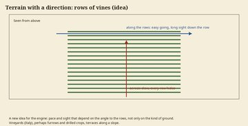
Sketch from above: rows of vines, easy going and long sight along them, slow and hidden across. 0.36.0 The simulation is 2.5D: one ground height per point, which holds on every front. What needs two heights at one point (a road on a bridge over a railway, a tunnel, a gun on an upper floor firing down onto a roof) becomes a special object with its own heights, not a new kind of ground.
Terrain and movement › Idea › Idea · horizon: maybeterrain-thought-multi-level-objects
The simulation is 2.5D: one ground height per point, which holds on every front. What needs two heights at one point (a road on a bridge over a railway, a tunnel, a gun on an upper floor firing down onto a roof) becomes a special object with its own heights, not a new kind of ground.
Found when going through the fronts: towns in Italy and Western Europe, bridges everywhere. A church tower or a loft as an observation post needs nothing new: it is an eye height above the ground. The window stays 2D (gui-3d-window).
Pictures
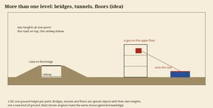
Sketch: two heights at one point, a road on a bridge over a railway, and a gun on an upper floor firing onto a roof. 0.36.0 Related
Maps of 5 to 10 km for the desert and the steppe: exact sight with a max-pyramid (GB9) so long lines over low ground are cheap; recordings that do not carry the whole map in every file; the window's finer relief over big areas (today capped at 4,000,000 cells); and coordinates checked at that size (local metres east and north of the corner, an equirectangular projection, fine at 2 km).
Terrain and movement › Idea › Idea · horizon: laterterrain-thought-larger-maps
Maps of 5 to 10 km for the desert and the steppe: exact sight with a max-pyramid (GB9) so long lines over low ground are cheap; recordings that do not carry the whole map in every file; the window's finer relief over big areas (today capped at 4,000,000 cells); and coordinates checked at that size (local metres east and north of the corner, an equirectangular projection, fine at 2 km).
A possible refinement: let the error of aim widen the spread of the shot, so a wider tolerance gives more shots that are worse.
Spotting and sight › Idea › Idea · horizon: maybespotting-thought-aim-spread
A possible refinement: let the error of aim widen the spread of the shot, so a wider tolerance gives more shots that are worse.
Today the tolerance is a gate only. The hit chance is worked out separately and does not depend on how close inside the tolerance the turret points. The refinement is noted and not built.
Related
Decision · Built · A shot needs the turret within 3 degrees of the target
Two known behaviours are not yet fixed: the turret can jump when the nearest target changes, and a unit that has not reacted to the nearest target does not fire, even when a farther one is ready.
Spotting and sight › Idea › Idea · horizon: nextspotting-thought-known-gaps
Two known behaviours are not yet fixed: the turret can jump when the nearest target changes, and a unit that has not reacted to the nearest target does not fire, even when a farther one is ready.
A target lock would keep the turret on one target. Choosing among the targets that are ready would let a unit fire at a farther one while the nearest is still in its reaction time. Neither is built.
Related
Decision · Built · The turret is its own axis, stored against the hullDecision · Built · Reaction time counts per contact
A test that compares how the speeds change the detection in sight is not made. It needs the line of sight outside the library.
Spotting and sight › Idea › Idea · horizon: maybespotting-thought-speed-test
A test that compares how the speeds change the detection in sight is not made. It needs the line of sight outside the library.
One measure exists, outside the repository: at about 1.7 km, the first tick the enemy saw a Fast Sherman moved from 26.2 to 24.9 when the Fast factor went from 1.5 to 2.0 (seeds 1 to 50). The effect is small at that distance. A test would need the line of sight to be part of the test setup.
Related
Decision · Built · A moving target is easier to spot, the faster the more
While placing a new move, a key shows the measuring cone (M) standing at the target and looking the way the tank drives there, so one sees what lies ahead of the place before choosing it, for example what can be seen over a hedge. The same cone and colours as the ruler; only where it stands and which way it looks are new. No new rule in the engine.
Spotting and sight › Idea › Idea · horizon: nextspotting-thought-cone-at-move-target
While placing a new move, a key shows the measuring cone (M) standing at the target and looking the way the tank drives there, so one sees what lies ahead of the place before choosing it, for example what can be seen over a hedge. The same cone and colours as the ruler; only where it stands and which way it looks are new. No new rule in the engine.
Facts
observed The cone is worked out again on every change of the drag: about 5 000 cells of 10 m for a cone of 1 000 m, each with several sight checks against every feature of the map. On Le Mesnil-Patry (about 360 features) its time is not measured yet; the LOS area had the same pattern and took 3.0 s from the village before the features were sifted per ray and the rays run in parallel (11 ms after). src/sight.rs sight_cone; src/terrain.rs viewshed, test the_viewshed_is_the_same_as_the_unsifted_on_le_mesnil_patry Pictures
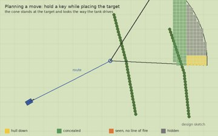
Design sketch: placing a move toward a hedge, the cone stands at the target and looks the way the tank drives; beyond the hedge the cells show what a tank there would make of one of ours. 0.26.0 Related
Decision · Built · A sight cone from a point, in the windowDecision · Built · The cone seen from the side
The measuring cone (M) standing at the selected tank and looking where it looks (the turret), following it in play, coloured as the ruler: hull down, concealed, seen without a line of fire, hidden. It overlaps the LOS area (L), which shows all round how far the tank sees, but tells the cone's finer kinds apart within the sector it watches.
Spotting and sight › Idea › Idea · horizon: laterspotting-thought-cone-from-the-tank
The measuring cone (M) standing at the selected tank and looking where it looks (the turret), following it in play, coloured as the ruler: hull down, concealed, seen without a line of fire, hidden. It overlaps the LOS area (L), which shows all round how far the tank sees, but tells the cone's finer kinds apart within the sector it watches.
Facts
observed The cone is worked out again on every change of the drag: about 5 000 cells of 10 m for a cone of 1 000 m, each with several sight checks against every feature of the map. On Le Mesnil-Patry (about 360 features) its time is not measured yet; the LOS area had the same pattern and took 3.0 s from the village before the features were sifted per ray and the rays run in parallel (11 ms after). src/sight.rs sight_cone; src/terrain.rs viewshed, test the_viewshed_is_the_same_as_the_unsifted_on_le_mesnil_patry Pictures
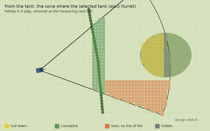
Design sketch: the cone from the selected tank, the way its turret points, following it in play and coloured as the measuring cone. 0.26.0 Related
Today a fire is seen only by those with a sight line to the tank itself, and then the tank is written off at once. A real column of smoke rises tens of metres and shows over a crest, a hedge or a wood from far off, so the side would learn that something burns there, and could write that tank off, without seeing the tank. The column could be a sight target of its own: a point high above the wreck, seen over what hides the hull, telling where and that it burns, not what it is.
Spotting and sight › Idea › Idea · horizon: laterspotting-thought-smoke-column-seen-afar
Today a fire is seen only by those with a sight line to the tank itself, and then the tank is written off at once. A real column of smoke rises tens of metres and shows over a crest, a hedge or a wood from far off, so the side would learn that something burns there, and could write that tank off, without seeing the tank. The column could be a sight target of its own: a point high above the wreck, seen over what hides the hull, telling where and that it burns, not what it is.
In the engine today: a burning sign makes anyone who sees the enemy take it as out at once; a crew bailing out only counts for one that already watched it; a silent wreck shows nothing until it has been quiet long enough after an own penetration. The picture of a burning wreck (gui-burning-wreck) shows the smoke only where the engine says the side saw the fire, so the two would grow together: when the column can be seen from afar, the picture shows it too.
Facts
observed Fire is seen by anyone who looks and makes the enemy Out at once; a crew bailing out only by one that had the enemy in sight already; a silent wreck not at all. src/engine.rs: assess Related
A scenario is set at a time of day, by default from its date, place and hour (the sun's height for that day in Normandy): dawn, full day, dusk or night, and the light holds for the whole scenario. It does not change during play: the scenarios are too short for the light to turn, so a cycle is not worth handling. But the light works on much else: how far and how surely a tank is seen, how far a muzzle flash and a burning wreck show (far further at night, when they give a tank away), tracers that show where the fire comes from, how fast and how safely a tank drives and finds its way, the crews' stress and how quickly they react, and the picture itself. Fighting at night was very limited: tanks mostly pulled back and laagered at dusk, and night actions were the exception (some planned night attacks with artificial moonlight in the summer of 1944), so dawn and dusk matter more than night, and a night scenario would be a rare special case.
Spotting and sight › Idea › Idea · horizon: laterspotting-thought-time-of-day
A scenario is set at a time of day, by default from its date, place and hour (the sun's height for that day in Normandy): dawn, full day, dusk or night, and the light holds for the whole scenario. It does not change during play: the scenarios are too short for the light to turn, so a cycle is not worth handling. But the light works on much else: how far and how surely a tank is seen, how far a muzzle flash and a burning wreck show (far further at night, when they give a tank away), tracers that show where the fire comes from, how fast and how safely a tank drives and finds its way, the crews' stress and how quickly they react, and the picture itself. Fighting at night was very limited: tanks mostly pulled back and laagered at dusk, and night actions were the exception (some planned night attacks with artificial moonlight in the summer of 1944), so dawn and dusk matter more than night, and a night scenario would be a rare special case.
In the engine today the light is always full day. The weather of the day (crew-thought-weather) and the ground's state (terrain-ground-state-per-scenario) would be read from the same date and place, so a scenario names one day, one hour and one place and the rest follows, each effect marked MOCK until a source gives it.
Facts
secondhand Tank units mostly pulled back and laagered for the night; night actions were the exception, among them planned night attacks with searchlights reflected off the clouds (artificial moonlight) in Normandy in August 1944. From memory, no source yet. none yet Related
The raster kept in levels where each coarse cell holds the highest of its fine cells. A sight line is tested against the coarse cells first; where it passes over a cell's maximum nothing inside can hide it and the piece is skipped. Only near a crest or the ground are the fine cells tested.
Spotting and sight › Idea › Idea · horizon: laterspotting-thought-sight-pyramid
The raster kept in levels where each coarse cell holds the highest of its fine cells. A sight line is tested against the coarse cells first; where it passes over a cell's maximum nothing inside can hide it and the piece is skipped. Only near a crest or the ground are the fine cells tested.
How others make terrain both detailed and fast, as far as general knowledge goes (not checked against a source): a coarse raster with objects on it (game engines, ArmA), varying resolution (TIN, quadtrees), this pyramid for sight lines (as hierarchical Z in graphics), and levels of detail for the picture only. Built once per map, since the ground does not change in a game. Not before measuring that sight lines are the cost.
Pictures
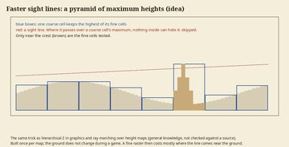
Sketch: coarse cells keep the highest of their fine cells; a sight line that passes over a coarse maximum skips it, and only near the crest are fine cells tested. 0.36.0 Related
A feature that hides only a band, from its elevation to its elevation plus height, so one sees under the crowns of an orchard grazed underneath, an olive grove, or a roof of leaves over a sunken lane. Today a forest hides from the ground up to its top.
Spotting and sight › Idea › Idea · horizon: laterspotting-thought-band-of-cover
A feature that hides only a band, from its elevation to its elevation plus height, so one sees under the crowns of an orchard grazed underneath, an olive grove, or a roof of leaves over a sunken lane. Today a forest hides from the ground up to its top.
Found when going through the fronts: orchards, olive groves in Italy, forests with or without undergrowth. The fields exist already; sight would have to respect the lower bound.
Facts
observed The forest's sight cost applies below ground + elevation + height, with no lower bound. src/terrain.rs (the forest sight) Pictures
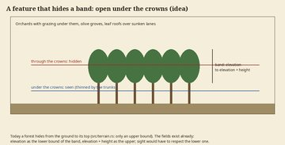
Sketch: an orchard hides a band between its crowns' bottom and top; under the crowns one sees. 0.36.0 Related
Decision · Built · Forest costs sight depth instead of blocking
The ground falls below a flat line by d²/2R: about 0.31 m at 2 km and 0.71 m at 3 km (0.27 and 0.61 m with ordinary refraction), the size of the hull-down window. It matters on the long ranges of the desert and the steppe. Today the sight line runs over a flat earth; the fix is small, lowering the far ground by the drop inside the sight line.
Spotting and sight › Idea › Idea · horizon: laterspotting-thought-earth-curvature
The ground falls below a flat line by d²/2R: about 0.31 m at 2 km and 0.71 m at 3 km (0.27 and 0.61 m with ordinary refraction), the size of the hull-down window. It matters on the long ranges of the desert and the steppe. Today the sight line runs over a flat earth; the fix is small, lowering the far ground by the drop inside the sight line.
Found when going through the fronts (North Africa, the steppe).
Facts
observed Drop d²/(2R) with R = 6371 km: 0.31 m at 2 km, 0.71 m at 3 km; with refraction (k about 0.13) 0.27 and 0.61 m. worked by hand 2026-11-21 Pictures
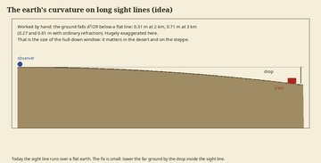
Sketch, much exaggerated: the ground falls below a flat sight line, 0.71 m at 3 km. 0.36.0 Related
Reload is reload_seconds times the crew factor, an even rate without breaks. In practice it breaks at turning, sight, smoke and finding the target again.
The shot and ballistics › Idea › Idea · horizon: latereven-rate-of-fire
Reload is reload_seconds times the crew factor, an even rate without breaks. In practice it breaks at turning, sight, smoke and finding the target again.
A possible step: the rate of fire follows the situation, not just the crew. Not started; the reload factor for the crew is MOCK. The source also names stress. It also gives a second cause of the many shots in an engagement: the tank fires at every reload while it has an active target, even when the shot cannot penetrate (a TacAI question, F9). The list is to be tested against historical engagements once the rules and the mechanics are in place.
Facts
observed F6 match, seed 7: 233 shots, 18 hits; all Bounced at 1 300 to 1 500 m. SESSION.md, För många skott per engagemang (F6 match f5_meeting, seed 7) Related
The shot picture draws boxes. Later, real outlines traced from B&A's drawings. Two ways: the outline only in the picture, or the outline as the rule.
The shot and ballistics › Idea › Idea · horizon: latersilhouettes-in-gui
The shot picture draws boxes. Later, real outlines traced from B&A's drawings. Two ways: the outline only in the picture, or the outline as the rule.
In the first way, the boxes stay the rule and the outline is drawn over them to the same scale. In the second, the parts become polygons, the hit is a point in a polygon, and the hit chance is no longer exact with erf. Decided when the outlines exist. Today Silhouette is used only for the hit chance's dimensions (base_hit()) and is never joined with Position and heading to an area in the room; that would matter for aiming at a vehicle's edge, not its centre, or for collision detection.
Related
The shot picture draws the tracks as rectangles. Rounded ends and wheels would read better, drawn in the picture only.
The shot and ballistics › Idea › Idea · horizon: mayberounded-tracks-in-picture
The shot picture draws the tracks as rectangles. Rounded ends and wheels would read better, drawn in the picture only.
The outline of the tracks would be in the picture, so a corner hit that the rule counts does not look like a miss. Open: what is hard to read in the picture.
Related
Uncapped AP has its own, wider shatter band than the capped rounds. Not built.
The shot and ballistics › Idea › Idea · horizon: latershatter-gap-ap
Uncapped AP has its own, wider shatter band than the capped rounds. Not built.
The code marks it as a TODO in rules.rs (shatters). B&L gives its own figures for the uncapped band.
Facts
stated Uncapped AP: ratio 1.04 to 1.40 when T/D is large enough. B&L p. 31 Related
A source point from B&L Appendix 7, pp. 101-102, on trunnion cant (a tilted gun axis) that no item holds. Whether it is a to-do or only source material is not settled.
The shot and ballistics › Idea › Idea · horizon: maybetrunnion-cant
A source point from B&L Appendix 7, pp. 101-102, on trunnion cant (a tilted gun axis) that no item holds. Whether it is a to-do or only source material is not settled.
Facts
stated B&L Appendix 7, pp. 101-102, on trunnion cant. SESSION.md, Framtida idéer / parkerat: Trunnion cant Wind and drift from B&L Appendix 8, marked as not captured. Whether it is a to-do or only source material is not settled.
The shot and ballistics › Idea › Idea · horizon: maybewind-and-drift
Wind and drift from B&L Appendix 8, marked as not captured. Whether it is a to-do or only source material is not settled.
Facts
stated B&L Appendix 8 covers wind and drift; marked as not captured. SESSION.md, Framtida idéer / parkerat: Appendix 8 (vind och drift) The crew shares morale, stress and training; the number of men is shown in the unit information, and the losses are a counter in the after-action report. The end data of a destroyed vehicle keeps the fate of each place, as a finished export for a later strategic layer.
Crew and stress › Idea › Idea · horizon: latercrew-strategic-layer
The crew shares morale, stress and training; the number of men is shown in the unit information, and the losses are a counter in the after-action report. The end data of a destroyed vehicle keeps the fate of each place, as a finished export for a later strategic layer.
Direction only, not code. The crew shares its morale, its stress and its training. The number of men is shown in the unit information. The losses are a counter per vehicle in the after-action report. When a vehicle is destroyed, the end data says what became of each place (for example the driver and the gunner dead and the rest bailed out), as a machine-readable export that a strategic layer could read later. What the report shows is the report part's concern. Built since (0.21.0): the losses counter (report-losses-counter) and the fate of each place (report-crew-fate) in the end data; the number of men in the unit information was built in F9. What is left as an idea is the strategic layer itself.
Related
Decision · Built · Crew quality is a field on the unitDecision · Built · Who is hit when a shot enters a part
Each tank commander could get a personality, bold or cautious, drawn from the seed, so that crews of the same level differ. The personality would hold for the whole battle.
Crew and stress › Idea › Idea · horizon: maybecommander-personality
Each tank commander could get a personality, bold or cautious, drawn from the seed, so that crews of the same level differ. The personality would hold for the whole battle.
A stressed crew could narrow its options and fixate on one target.
Crew and stress › Idea › Idea · horizon: maybetunnel-vision-under-stress
A stressed crew could narrow its options and fixate on one target.
The four stress effects today (reaction, reload, hit ceiling, spotting) do not include it. See stress-effects.
In the long run the engine models the men who bailed out: each with a place, running for cover, seen and shot at, reaching their own lines or missing. Then MIA in the report means something (it is always 0 today: a man cannot be lost outside his tank), and the picture of a crew bailing out shows the engine's own men instead of a seeded path.
Crew and stress › Idea › Idea · horizon: latercrew-thought-men-outside-the-tank
In the long run the engine models the men who bailed out: each with a place, running for cover, seen and shot at, reaching their own lines or missing. Then MIA in the report means something (it is always 0 today: a man cannot be lost outside his tank), and the picture of a crew bailing out shows the engine's own men instead of a seeded path.
Facts
observed MIA is always 0 so far: the engine cannot lose a man outside his tank. src/report.rs Related
A scenario gets its weather, by default from its date and place, for the day or changing during it: wind, rain or snow, heat or cold, the light. It works on the men and on what they see and drive through, not on the shot: rain and cold wear the crews down and raise stress, heat in a closed tank tires them, rain and mist shorten sight, wind carries the smoke of a burning wreck and the dust of a tank, and the ground grows soft or hard. The ballistics stay as they are.
Crew and stress › Idea › Idea · horizon: latercrew-thought-weather
A scenario gets its weather, by default from its date and place, for the day or changing during it: wind, rain or snow, heat or cold, the light. It works on the men and on what they see and drive through, not on the shot: rain and cold wear the crews down and raise stress, heat in a closed tank tires them, rain and mist shorten sight, wind carries the smoke of a burning wreck and the dust of a tank, and the ground grows soft or hard. The ballistics stay as they are.
Where it meets what exists: the ground's state per scenario (terrain-ground-state-per-scenario) already says the weather of the day can beat the season, and would read the same weather; the smoke of a burning wreck rises straight up today because the engine has no wind (gui-burning-wreck), and would drift with it; morale is parked (morale-later), and weather would be one of its causes. Wind and drift on the round (wind-and-drift, under the shot) is a separate idea and not part of this one. What the weather does to a crew needs sources (war diaries, after-action reports, the medical history of the campaigns), each effect marked MOCK until found.
Facts
observed The engine has no wind and no weather; the ground's softness follows its kind alone. src/terrain.rs: softness Related
Decision · Parked · Morale and abandoning the vehicle, later
An idea, not decided: each man in the crew carries his own stress instead of one figure for the whole tank, and each man's stress acts on his own work: the commander's on spotting, the choice of target and what the crew does of itself (pinned, backing out), the gunner's on laying and the ceiling of his accuracy, the loader's on the reload, the driver's on driving and backing. What happens to the tank reaches the men differently: a hit on the driver's compartment shakes the driver and the bow gunner most, a man wounded beside them shakes the ones in that compartment, and a steady commander may calm the others.
Crew and stress › Idea › Idea · horizon: latercrew-thought-stress-per-man
An idea, not decided: each man in the crew carries his own stress instead of one figure for the whole tank, and each man's stress acts on his own work: the commander's on spotting, the choice of target and what the crew does of itself (pinned, backing out), the gunner's on laying and the ceiling of his accuracy, the loader's on the reload, the driver's on driving and backing. What happens to the tank reaches the men differently: a hit on the driver's compartment shakes the driver and the bow gunner most, a man wounded beside them shakes the ones in that compartment, and a steady commander may calm the others.
Open questions it would raise: whose stress decides what the tank does of itself (the commander's, as he gives the orders, or the worst man's); whether a man's stress spreads to the others in the turret; how a commander lost changes the crew (today the tank sees as buttoned up, commander-hatch). Related thoughts: commander-personality (bold or cautious), tunnel-vision-under-stress, morale-later.
Facts
observed Today stress is one figure per unit (Unit::stress, 0 to 100) read as four levels by rules::stress_level; every effect (reaction, reload, the accuracy ceiling, spotting, pinned, backing out) reads the one level. The crew already has places and health per man (crew-places, crew-health) and hits by compartment (crew-hit-by-compartment). src/rules.rs: stress_level, stress_reaction_s, stress_reload_factor, stress_cap_factor, stress_spotting_factor; src/tacai.rs: next_behaviour_and_why Pictures
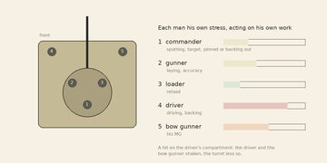
A sketch of stress for each man: the five places in the tank, each with his own stress and the work it would act on; a hit on the driver's compartment shakes the driver and the bow gunner most. 0.58.0 Related
Decision · Built · The places in the crewDecision · Built · Each man is fit, wounded or killedDecision · Built · Who is hit when a shot enters a part
If the rules change, an old game record may play out another battle. The record already stores the engine version; a checksum of the outcome would show the difference at once.
The gui does not yet stop at the scenario's round count or at a decided battle; it runs rounds until the player stops.
Orders › Idea › Idea · horizon: nextorders-thought-gui-rounds
The gui does not yet stop at the scenario's round count or at a decided battle; it runs rounds until the player stops.
Related
Decision · Built · How a game endsDecision · Built · The scenario sets the game's length in rounds
Opening a saved game record in the gui (gui --game <file>) to play on from it. Not done.
Time for starting, stopping and turning between orders, for the vehicle and the crew. It is not the headquarters chain, but related to command delay.
Orders › Idea › Idea · horizon: laterorders-thought-start-stop-turn-times
Time for starting, stopping and turning between orders, for the vehicle and the crew. It is not the headquarters chain, but related to command delay.
Related
Decision · Parked · Command delay through the chain of command
Orders could also be written into the scenario file, not only in their own file. It is a possibility, not a requirement.
Vehicles are named in the file and looked up in code. The notes expect a unittype_id or similar once vehicle data becomes files (M12, Datadrivet).
The orders design rests on the CMBB manual, Appendix B. The CMBO manual has not been read.
Combat Mission has quick commands such as Halt, Resume, Cancel and Evade (seek cover and pop smoke). Only the order steps Move, Hunt, Wait and SetHatch exist here.
Orders › Idea › Idea · horizon: maybequick-commands
Combat Mission has quick commands such as Halt, Resume, Cancel and Evade (seek cover and pop smoke). Only the order steps Move, Hunt, Wait and SetHatch exist here.
Facts
secondhand The Combat Mission manual lists the quick commands Halt, Resume, Cancel and Evade; Evade means seeking immediate cover and perhaps popping smoke. docs/archive/tacai.md section 7.2 (Combat Mission: Battle for Normandy, Game Manual), line 468 Players of Combat Mission complain that the AI cannot manage a reverse order. Here there is no player-issued Reverse step; TacAI backs out on its own (withdrawal).
Orders › Idea › Idea · horizon: laterplayer-reverse-order
Players of Combat Mission complain that the AI cannot manage a reverse order. Here there is no player-issued Reverse step; TacAI backs out on its own (withdrawal).
Facts
secondhand A 2015 forum post in the archived copy says: In the game we use the reverse order a lot. But the AI is incapable of managing it.. docs/archive/tacai.md section 7.3, 'Tanks and reversing (2015)' An Attack order that advances, engages what it spots, continues when the spot is lost, and repeats until pinned or at the end.
Orders › Idea › Idea · horizon: laterattack-order
An Attack order that advances, engages what it spots, continues when the spot is lost, and repeats until pinned or at the end.
Facts
secondhand A 2022 forum post, pasted in unchecked, describes the steps: Spots the target / Engages / Loses the spot / Continues moving toward the location you set, then repeats until the unit is pinned or reaches the end. docs/archive/tacai.md section 7.4, '"Attack"-order (2022)' Beyond one tank's ambush: a platoon or company in ambush holds its fire until its commander, the leader of the whole group in the ambush, decides, or until it is discovered (shot at, or enemy turrets turning toward it), and then all open at once. With each tank on its own, the first to reach its threshold fires and the column is warned before the others are ready; on the commander's word the column can be let deep into the wedges first. It needs a commander and a chain of command, which do not exist yet (orders-command-delay is parked), and ties to the level of command the player has. The tank's own ambush (wedge-limits-target-choice) is the building block. Anti-tank guns, when they come, are the other user: lying hidden and opening together at close range was their way of fighting, and they have no turret, as the Jagdpanzer IV's gun in the hull already does not. Infantry ambushes too, when infantry comes: the same hold until the leader decides, for men rather than tanks.
Orders › Idea › Idea · horizon: laterorders-thought-company-holds-fire
Beyond one tank's ambush: a platoon or company in ambush holds its fire until its commander, the leader of the whole group in the ambush, decides, or until it is discovered (shot at, or enemy turrets turning toward it), and then all open at once. With each tank on its own, the first to reach its threshold fires and the column is warned before the others are ready; on the commander's word the column can be let deep into the wedges first. It needs a commander and a chain of command, which do not exist yet (orders-command-delay is parked), and ties to the level of command the player has. The tank's own ambush (wedge-limits-target-choice) is the building block. Anti-tank guns, when they come, are the other user: lying hidden and opening together at close range was their way of fighting, and they have no turret, as the Jagdpanzer IV's gun in the hull already does not. Infantry ambushes too, when infantry comes: the same hold until the leader decides, for men rather than tanks.
Pictures
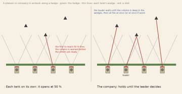
Each tank on its own opens at its own 50 % and warns the column; a platoon on its commander's word lets the column deep into the wedges and all open at once. 0.60.0 Related
Decision · Parked · Command delay through the chain of command
The picture's style is semantic, so a pixel-style renderer could come later without the draw list changing.
The window and replay › Idea › Idea · horizon: maybegui-thought-pixel-style
The picture's style is semantic, so a pixel-style renderer could come later without the draw list changing.
Noted for the future as the look of the window. Nothing is planned for it yet.
Related
Decision · Built · The picture is a list of shapes made from dataDecision · Built · The PNG is drawn by tiny-skia, without a window
Starting the window means typing a long cargo command. A cargo alias or cargo install would make it shorter; neither is done.
The window and replay › Idea › Idea · horizon: maybegui-thought-faster-start
Starting the window means typing a long cargo command. A cargo alias or cargo install would make it shorter; neither is done.
The options noted are a cargo alias in .cargo/config.toml, or cargo install --path .
Facts
stated Not done: the cargo alias and cargo install. SESSION.md, F3 Related
Decision · Built · macroquad for the window, egui for the panels
Combine the sight area with the vision wedges into a perception map, and show how an enemy sees the selected unit.
The window and replay › Idea › Idea · horizon: maybegui-perception-map
Combine the sight area with the vision wedges into a perception map, and show how an enemy sees the selected unit.
Not built. The idea also covers showing where units are seen from the point of view of a selected enemy, that is how one's own units are seen by it.
Related
Decision · Built · The sight area is drawn for the selected unit only
The vehicle data, which the binary already carries, shown in the game: a Vehicles button in the start menu with a page per vehicle (armour plate by plate, the gun's rounds and its penetration as a curve, mobility, the top view), and the same page from a selected unit in battle. A Sources toggle shows the kind, source and note beside each value, never the page. Later a comparison: can this round go through that plate at this range, computed by the engine's own rules. After F7.
The window and replay › Idea › Idea · horizon: latergui-vehicle-database
The vehicle data, which the binary already carries, shown in the game: a Vehicles button in the start menu with a page per vehicle (armour plate by plate, the gun's rounds and its penetration as a curve, mobility, the top view), and the same page from a selected unit in battle. A Sources toggle shows the kind, source and note beside each value, never the page. Later a comparison: can this round go through that plate at this range, computed by the engine's own rules. After F7.
Selecting an enemy shows his status not as the truth and not as nothing, but as the own tank with the surest or freshest picture of him knows it: seen or remembered, how long ago, the damage signs seen, the assessment. The engine already keeps this per tank (the contacts and the assessment); the window would pick the tank that knows best and say which one it is.
The window and replay › Idea › Idea · horizon: latergui-enemy-status-from-the-surest-tank
Selecting an enemy shows his status not as the truth and not as nothing, but as the own tank with the surest or freshest picture of him knows it: seen or remembered, how long ago, the damage signs seen, the assessment. The engine already keeps this per tank (the contacts and the assessment); the window would pick the tank that knows best and say which one it is.
The rule: every effect shows something the engine knows, so the picture never lies about the battle. The ground: forest as tree crowns with small shadows (placed from a seed, the same every time), fields with furrows, roads with verges, shorelines, one sun for the relief and the shadows of forest, houses and tanks. The tanks: track marks that stay and fade (deeper in mud), dust behind a fast tank (the spotting rule already counts it), burning wrecks with smoke, the crew bailing out. The shots: tracers with the round's own flight time, sparks and ricochets on a bounce, the hit marked on its part, drifting smoke once smoke is fired. The fog of war: what no own tank sees is paler, last-known enemies as fading ghosts. The frame: a scale bar, a north arrow, a staff-map border. Built so far: the ground in ink and wash with tree crowns, shadows from the relief's sun, roads with verges and fading ruts (gui-ground-ink-and-wash, 0.25.0, G3), each field its own tone, pattern and direction (gui-field-look, 0.31.0, G6), on the GPU (gui-gpu-map-rendering, 0.29.1). What is left, the battle's effects, the fog and the frame, is G7.
The window and replay › Idea › Idea · horizon: nextgui-more-graphic-2d
The rule: every effect shows something the engine knows, so the picture never lies about the battle. The ground: forest as tree crowns with small shadows (placed from a seed, the same every time), fields with furrows, roads with verges, shorelines, one sun for the relief and the shadows of forest, houses and tanks. The tanks: track marks that stay and fade (deeper in mud), dust behind a fast tank (the spotting rule already counts it), burning wrecks with smoke, the crew bailing out. The shots: tracers with the round's own flight time, sparks and ricochets on a bounce, the hit marked on its part, drifting smoke once smoke is fired. The fog of war: what no own tank sees is paler, last-known enemies as fading ghosts. The frame: a scale bar, a north arrow, a staff-map border. Built so far: the ground in ink and wash with tree crowns, shadows from the relief's sun, roads with verges and fading ruts (gui-ground-ink-and-wash, 0.25.0, G3), each field its own tone, pattern and direction (gui-field-look, 0.31.0, G6), on the GPU (gui-gpu-map-rendering, 0.29.1). What is left, the battle's effects, the fog and the frame, is G7.
Facts
DESIGN_CHOICE Style chosen 2026-11-14 from a proposal sheet (_tmp/g3_proposal_ground.png): 'hand-drawn' ink and wash, crowns as uneven ink-outlined blobs with a wash and a little hatching on the shadow side, verges with grass ticks, slightly wavering furrows, matching the briefing sheet; drawn as SVG/procedural strokes by us, no bought art. Over a clean generated style. chat 2026-11-14 DESIGN_CHOICE Fields vary so the patchwork looks alive, not to match the air photograph: per field, seeded by its id, a tone a little lighter or darker, yellower or greener within a narrow band, one of a few patterns (plain, drilled rows, stubble, mown bands) in the ink-and-wash style, and a direction along the field's longest edge with a little randomness. The variation stays clearly inside 'field' and never resembles mud, marsh or ploughed ground, which the engine treats differently. No engine change. chat 2026-11-14 DESIGN_CHOICE Zoomed in, a tank's trail is drawn as in panel 3 of the goal sketch (docs/tacai_img/goal-zoom-sheet-to-ground__0.20.7.jpg): two faint parallel ruts in the ground at the vehicle's track width, dotted like pressed earth, fading with age, instead of today's coloured trail line. The trail stays what the engine recorded (the positions), only its look changes. chat 2026-11-14 DESIGN_CHOICE Style confirmed 2026-11-14 after mock-ups of four styles (painted, ink and wash, watercolour, engraving) in four months around Le Mesnil-Patry (_tmp/g3_mock_styles_months.png): ink and wash. It is the cheapest on the CPU (flat fills, ink lines, no blur), it passes naturally into the paper-and-ink map sheet in G4, and the tanks stand out on the pale ground. chat 2026-11-14 DESIGN_CHOICE The detail shows from the zoom where the tanks switch from badge to model (3 px/m), is in the PNG from the same draw list, and dense forest and forest are filled completely by crowns; only light forest is sparse. chat 2026-11-14 DESIGN_CHOICE The ground's colour shows what the engine knows: each surface kind (open ground, field, ploughed, mud, marsh, sand, gravel) has its own colour range that does not overlap the others; the scenario's month (its date, June when it has none) moves the whole palette, a little more clearly than in the first mock-up (_tmp/g3_mock_ink_months.png, lower row); deciduous trees and hedges follow the month and are bare in winter. The ground has a fine mottle fixed to the world and seeded. Variation per field is G6. chat 2026-11-14 observed The ground's part was built in G3 (gui-ground-ink-and-wash, 0.25.0): ink and wash, the palette per surface kind and month, crowns, hedges, roofs, verges and ruts. The fields stay for G6 and the battle's effects for G7. data/milestones.json G3 Related
Decision · Built · Zoomed in, the ground is drawn in ink and washDecision · Built · Each field its own tone, pattern and directionDecision · Built · The map drawn on the GPU with macroquad meshes
A test of whether a generated 3D model can give the vehicles' top view. Meshy (an AI service) was asked for a Sherman M4A3 from June 1942 to September 1943. It first made a concept picture of its own, three quarters from the front, and then built a textured 3D model from that one picture (about 4.4 million triangles). What the picture does not show (the engine deck, the rear, the turret roof, exactly what a view from above shows most of) the model guesses, and its measures have no source. Two ways from 3D to 2D: render it from straight above and trace the outlines into polygons in today's format (gui-topview-models, checked against the vehicle's measures as now), or render it from above with light and shade into pictures, the hull and the turret apart (a new format and a decision of its own, close to gui-more-graphic-2d; the turret must first be cut from the hull, since the model is one piece). A second service, Ludo, was tried next: its picture was not a Sherman but a made-up tank (large road wheels of different sizes without the VVSS bogies, a low hull with sloped sides, a small conical turret too far forward), again seen three quarters from the front. Meshy came much closer. A third, Recraft, makes only 2D (pictures and vector graphics, no meshes): its pictures three quarters from the front and from the side were the closest to a Sherman so far (three VVSS bogies a side, the sprocket at the front, a rounded turret), and the side view could serve as a drawing. Asked for a flat view from straight above it gave one, but with the proportions wrong; asked for the turret alone it drew whole tanks again. A view from above in vector form would lie close to today's polygon format, scaled to the measures and checked by TopView::fit. A question raised by the test: whether the source should be a 3D model edited by hand in Blender rather than a generated picture. A model scaled to the vehicle's measures, with the turret as an object of its own, gives every view from one source (the top view, a side view for the codex), can be corrected where the generator guessed, and is rendered from straight above with orthographic camera, no shadow and no marks. Against: a generated mesh is one fused piece with millions of triangles, so it must be reduced and the turret cut free by hand, and the guessed details still need drawings. The recommendation: 3D in Blender as the source, traced to polygons in today's format first, so the program does not change until pictures are decided. The test ended on 2026-11-13: none of the three services gave a model good enough to use, and they are not used further. The question of Blender as the source stays open.
The window and replay › Idea › Idea · horizon: maybegui-meshy-3d-to-2d-test
A test of whether a generated 3D model can give the vehicles' top view. Meshy (an AI service) was asked for a Sherman M4A3 from June 1942 to September 1943. It first made a concept picture of its own, three quarters from the front, and then built a textured 3D model from that one picture (about 4.4 million triangles). What the picture does not show (the engine deck, the rear, the turret roof, exactly what a view from above shows most of) the model guesses, and its measures have no source. Two ways from 3D to 2D: render it from straight above and trace the outlines into polygons in today's format (gui-topview-models, checked against the vehicle's measures as now), or render it from above with light and shade into pictures, the hull and the turret apart (a new format and a decision of its own, close to gui-more-graphic-2d; the turret must first be cut from the hull, since the model is one piece). A second service, Ludo, was tried next: its picture was not a Sherman but a made-up tank (large road wheels of different sizes without the VVSS bogies, a low hull with sloped sides, a small conical turret too far forward), again seen three quarters from the front. Meshy came much closer. A third, Recraft, makes only 2D (pictures and vector graphics, no meshes): its pictures three quarters from the front and from the side were the closest to a Sherman so far (three VVSS bogies a side, the sprocket at the front, a rounded turret), and the side view could serve as a drawing. Asked for a flat view from straight above it gave one, but with the proportions wrong; asked for the turret alone it drew whole tanks again. A view from above in vector form would lie close to today's polygon format, scaled to the measures and checked by TopView::fit. A question raised by the test: whether the source should be a 3D model edited by hand in Blender rather than a generated picture. A model scaled to the vehicle's measures, with the turret as an object of its own, gives every view from one source (the top view, a side view for the codex), can be corrected where the generator guessed, and is rendered from straight above with orthographic camera, no shadow and no marks. Against: a generated mesh is one fused piece with millions of triangles, so it must be reduced and the turret cut free by hand, and the guessed details still need drawings. The recommendation: 3D in Blender as the source, traced to polygons in today's format first, so the program does not change until pictures are decided. The test ended on 2026-11-13: none of the three services gave a model good enough to use, and they are not used further. The question of Blender as the source stays open.
Facts
observed The 3D model was built from one generated picture, seen three quarters from the front; the parts it does not show are guessed. Meshy's own steps in its chat (picture, then picture to 3D), screenshots 2026-11-13 observed The model has about 4.4 million triangles and 2.4 million vertices. Meshy's viewer, screenshot 2026-11-13 secondhand The round part on the turret looks like a vision cupola, which as far as known came later than the period asked for (the early M4A3 had a split hatch). Not checked against a source. by eye from the screenshot; to be checked observed The markings (U.S.A. and the registration number) are invented by the service. screenshot 2026-11-13 observed Ludo's picture shows no Sherman: five to six large road wheels of different sizes instead of three VVSS bogies per side, a low hull with sloped sides, a small conical turret placed far forward, seen three quarters from the front. The prompt used is not noted. screenshot of Ludo 2026-11-13 observed Recraft's first view from above, measured by eye in pixels: the tracks about 16 per cent of the width (the vehicle: 0.41 of 2.62 m, also about 16), length about 2.0 times the width (the vehicle: 2.25), the turret about 2.1 m wide (the data: 1.85, MOCK) and about 2.5 m back from the nose (the data: 2.9), the gun reaching far past the nose (the vehicle's file: the 75 mm gun does not reach past the nose). screenshot of Recraft 2026-11-13; vehicles/sherman_m4a3_75mm.toml observed Asked for the turret alone, Recraft drew a whole tank, then the turret from the side and from above turned sideways; its own reasoning noted the gun too long and the hull too narrow. screenshots of Recraft 2026-11-13 Related
Decision · Built · Vehicle models are data files checked against the vehicle
Looked at for G4 and kept for later, not rejected: Skia through skia-safe (one canvas for the window on GL and the PNGs on raster), eframe (egui's own window, the map as a GPU paint callback on wgpu or glow) and Bevy as a draw layer only, with the engine kept as a library. Vello's GPU renderer (vello_gpu) was early and needs wgpu, which macroquad does not use.
The window and replay › Idea › Idea · horizon: maybegui-other-window-shells
Looked at for G4 and kept for later, not rejected: Skia through skia-safe (one canvas for the window on GL and the PNGs on raster), eframe (egui's own window, the map as a GPU paint callback on wgpu or glow) and Bevy as a draw layer only, with the engine kept as a library. Vello's GPU renderer (vello_gpu) was early and needs wgpu, which macroquad does not use.
Taken up again if macroquad's meshes or egui-macroquad hold G4 back, or if the game wants 3D or far larger maps.
Facts
observed Skia spike on the same ground: skia-safe 0.157 with prebuilt binaries, 5 MB larger program; Skia drew with GL in macroquad's window with the GL state saved and restored by hand; on raster the same drawing code differed from tiny-skia in 0.14 % of the pixels and took 2.8 ms against 5.4 ms. Measured only on software GL. src/gui/skia_spike.rs on the branch g4-gpu-spike, 2026-11-15 secondhand Vello CPU 0.4.0 is called broadly usable; Vello GPU 0.4.0 (formerly vello_hybrid) is in its early stages without API stability and needs wgpu. github.com/linebender/vello/releases, docs.rs/vello_cpu, 2026-11-15 Pictures

The same corner of Le Mesnil-Patry at 2.5 px/m drawn three ways in the spikes: tiny-skia on the CPU, macroquad meshes on the GPU and Skia with GL. The pictures differ only at the edges. 0.27.1 Related
Decision · Rejected · Bevy rejected as the frameworkDecision · Rejected · No web page as the window
Once the ground's detail is drawn as sprites on the GPU, the pictures behind the sprites can come from files instead of being drawn by the program: free sets (CC0, such as Kenney's or OpenGameArt's) would give several kinds of trees, bushes, houses and other things. To weigh then: the licence (CC0 is simplest, CC-BY needs a credit) and the style (the window's ink and wash; ready-made pictures have a style of their own and may need choosing or tinting).
The window and replay › Idea › Idea · horizon: latergui-free-sprite-assets
Once the ground's detail is drawn as sprites on the GPU, the pictures behind the sprites can come from files instead of being drawn by the program: free sets (CC0, such as Kenney's or OpenGameArt's) would give several kinds of trees, bushes, houses and other things. To weigh then: the licence (CC0 is simplest, CC-BY needs a credit) and the style (the window's ink and wash; ready-made pictures have a style of their own and may need choosing or tinting).
A way of working: the mesh is made or adjusted in Blender (or a free CC0 model is taken); a script reads the window's palette (src/detail.rs: every colour once, by month), gives the parts their colours, puts the sun in the north-west as the relief's, draws ink outlines with Freestyle and renders from straight above to PNGs with a transparent background, in several sizes and seasons; the game reads them through the sprite atlas. First trial: one tree beside today's crowns. A third way: sprites drawn as design sketches in the window's own style and palette, seen from straight above by construction and free of licences, as the goal sketch's panel 3 already shows (crowns, hedge bushes, a gravel road). Trial: a sprite sheet of six crowns, two hedge bushes and two roofs, beside one tree rendered in Blender.
Facts
secondhand Kenney Nature Kit: "Creative Commons CC0", 330 files of trees, rocks and foliage, 3D, to render from above. https://kenney.nl/assets/nature-kit, read 2026-11-15 secondhand Quaternius Textured LowPoly Trees: "Creative Commons Zero v1.0 Universal", 45 trees and 18 leaf and bark textures, FBX, OBJ and Blend. https://quaternius.itch.io/textured-lowpoly-trees, read 2026-11-15 secondhand KayKit Forest Nature Pack calls itself CC0 but adds "please don't resell unmodified copies or claim them as your own"; Quaternius' Stylized Nature MegaKit is CC0 for its free part only (about 60-70 %). https://kaylousberg.itch.io/kaykit-forest, https://quaternius.com/packs/stylizednaturemegakit.html, read 2026-11-15 secondhand No CC0 farmhouse or barn was found; the oaks seen on Sketchfab were CC BY. Kenney's 2D sprites seen were side-on or pixel tiles, not seen from straight above. a search of the sources, 2026-11-15 stated Poly Haven: "Our assets are all licensed as CC0"; "You do not need to give credit or attribution when using them"; "You can redistribute them, share them around, include them when sharing your own work". Not CC0: the site's logos, text and "Asset example renders". The site's terms forbid "Web scraping or data mining without express permission"; the public API has its own terms. https://polyhaven.com/license, read 2026-11-15 secondhand ambientCG: "All ambientCG assets are provided under the Creative Commons CC0 1.0 Universal License." https://docs.ambientcg.com/license, read 2026-11-15 secondhand Quixel announced on 5 November 2026 that the whole Megascans library (about 23 000 scanned models, surfaces and plants) is free on Fab, under the Fab Standard License, not CC0. Several outlets call it permanent; Quixel's own post does not say so. https://quixel.com/news/update-megascans-are-going-free-again; https://80.lv/articles/entire-quixel-megascans-library-now-available-for-free, read 2026-11-15 Related
Zoomed in, the ground looks more alive without leaving the game's style (the map sheet fading into ink and wash): the hand's traces (a grain in the wash, edges where the wash gathers, lines a little uneven), small signs rather than detail (a few tufts at the hedges' feet, a dot for a stone, posts for a gate), the story in the ground (trodden yards, a path across a field to the gate, worn ground at a gateway), and the light (shadows the same way everywhere, a little clearer). Low limestone walls round yards and gardens, fences, gravel drives, roofs of the time and place. Drawn from the map's own sources it becomes less straight and less clean than any mock. The rules: vector at every zoom, never a pixel style; every mark shows something true, from the engine or from a source (the gates fields.py found, the farms, the month); the map stays readable for the battle (hedges, woods and open ground at a glance). The battle's own traces (craters, smoke, ruins, wrecks) belong to G7.
The window and replay › Idea › Idea · horizon: nextgui-ground-alive
Zoomed in, the ground looks more alive without leaving the game's style (the map sheet fading into ink and wash): the hand's traces (a grain in the wash, edges where the wash gathers, lines a little uneven), small signs rather than detail (a few tufts at the hedges' feet, a dot for a stone, posts for a gate), the story in the ground (trodden yards, a path across a field to the gate, worn ground at a gateway), and the light (shadows the same way everywhere, a little clearer). Low limestone walls round yards and gardens, fences, gravel drives, roofs of the time and place. Drawn from the map's own sources it becomes less straight and less clean than any mock. The rules: vector at every zoom, never a pixel style; every mark shows something true, from the engine or from a source (the gates fields.py found, the farms, the month); the map stays readable for the battle (hedges, woods and open ground at a glance). The battle's own traces (craters, smoke, ruins, wrecks) belong to G7.
Next step: the grain and the tufts first (the most life for the least work, and true everywhere), then the yards and the paths from the farms and the gates; each tried as a sketch before it is built.
Pictures

A sketch, not the game: a corner of Le Mesnil-Patry as the window draws it (left) and with a grain in the wash, tufts gathered at the hedges' feet, a trodden yard and a path (right), drawn over the screenshot by hand. 0.31.1 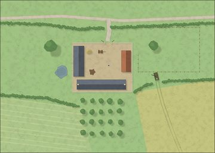
A mock, not the map: a courtyard farm of the Bessin in the game's style, with slate roofs, a limestone yard wall and gate, a gravel drive, a pond, an orchard, a paddock fence, mown and drilled fields, and a tank come up out of the corn through a gap in the hedge, its tracks fading behind it. 0.31.1 Related
Decision · Built · Each field its own tone, pattern and directionDecision · Built · Zoom from the map sheet down to the ground
The orders and routes on the map drawn as arrows a hand would draw, as in the first goal sketch: a solid stroke in chinagraph or grease pencil, a little uneven in width, curved, with a drawn arrowhead, instead of the thin dashed lines of today. On the sheet the pencil of the briefing; zoomed in the same stroke, fainter, so it reads over the ground.
The window and replay › Idea › Idea · horizon: nextgui-drawn-arrows
The orders and routes on the map drawn as arrows a hand would draw, as in the first goal sketch: a solid stroke in chinagraph or grease pencil, a little uneven in width, curved, with a drawn arrowhead, instead of the thin dashed lines of today. On the sheet the pencil of the briefing; zoomed in the same stroke, fainter, so it reads over the ground.
Facts
observed Today a route is a thin line (Style::Route, 1.5 px, muted). src/draw.rs paint, 2026-11-16 Pictures

From the first goal sketch: on the sheet a curved arrow in chinagraph from the platoon to its objective, and between sheet and ground a broad soft stroke of grease pencil; drawn by a hand, not the thin dashed lines of today. 0.31.1 Related
Decision · Built · Zoom from the map sheet down to the ground
Two presentations of the same battle: while playing, the ground stays at the calm, readable level of the living ground (gui-ground-alive), since the game is a simulation and the player decides from the map; a loaded replay is for watching and may be grittier and dirtier, closer to how it was: the screen shaking at a hit near the view, smoke and dust that linger, a dirtier tone. Every effect still comes from the engine (a shake from a real hit, smoke from a real wreck); only the presentation differs. Thoughts for now.
The window and replay › Idea › Idea · horizon: latergui-replay-immersion
Two presentations of the same battle: while playing, the ground stays at the calm, readable level of the living ground (gui-ground-alive), since the game is a simulation and the player decides from the map; a loaded replay is for watching and may be grittier and dirtier, closer to how it was: the screen shaking at a hit near the view, smoke and dust that linger, a dirtier tone. Every effect still comes from the engine (a shake from a real hit, smoke from a real wreck); only the presentation differs. Thoughts for now.
Related
Decision · Built · Zoom from the map sheet down to the ground
Today a tank's symbol or badge tells only alive from wreck (grey). The engine knows far more about what each side believes, so the badge could carry small marks in a corner: burning (seen), out, probably out (the crew seen bailing out), the crew out, immobilized or bogged, and last known (not seen now, faded). In a side's view the marks show what the side believes, not the truth: an enemy taken for out but alive still gets the out mark; the truth view shows what really is.
The window and replay › Idea › Idea · horizon: nextgui-thought-status-marks-on-the-badge
Today a tank's symbol or badge tells only alive from wreck (grey). The engine knows far more about what each side believes, so the badge could carry small marks in a corner: burning (seen), out, probably out (the crew seen bailing out), the crew out, immobilized or bogged, and last known (not seen now, faded). In a side's view the marks show what the side believes, not the truth: an enemy taken for out but alive still gets the out mark; the truth view shows what really is.
The engine keeps it already: the contacts' assessment (operational, probably out, out) and the signs seen (burning, crew bailed out), the own units' mobility (immobilized, bogged) and condition. The panel idea gui-enemy-status-from-the-surest-tank picks the own tank with the surest picture of an enemy; the marks could follow the same rule, so the badge and the panel never disagree.
Facts
observed The badge's look is chosen from the condition alone: a wreck is grey, a unit not seen directly is faded. src/draw.rs: Showing Related
Decision · Built · A burning wreck: flames and a thin column of smoke that does not hideDecision · Built · A wreck's panel shows what became of it and the men
A bug in the replay: a shot, its picture, plate line and side view show only in the events panel at its own tick, a tenth of a second; the tracer on the map lingers about half a second. Agreed fix: the shots of interest held in a history (below) and the shot lines on the map fading over about 3 s.
The window and replay › Idea › Idea · horizon: latergui-thought-shot-shown-one-tick
A bug in the replay: a shot, its picture, plate line and side view show only in the events panel at its own tick, a tenth of a second; the tracer on the map lingers about half a second. Agreed fix: the shots of interest held in a history (below) and the shot lines on the map fading over about 3 s.
Found 2026-11-22 in the testing ground.
A window of its own (egui::Window: moved, resized, folded, hidden) with play, pause, step, jump to the previous/next event of interest and speed from x0.5 (a logarithmic slider, today 1 to 30); the time line marked at every round (60 s) with its number, and the events of interest as marks along it (seen, shot, penetrated, knocked out), hovered for what they were and clicked to jump there, also ahead. A second window lists the same events as rows, a shot unfolding into its picture, plate line and side view. As each side may see.
The window and replay › Idea › Idea · horizon: latergui-thought-timeline-widget
A window of its own (egui::Window: moved, resized, folded, hidden) with play, pause, step, jump to the previous/next event of interest and speed from x0.5 (a logarithmic slider, today 1 to 30); the time line marked at every round (60 s) with its number, and the events of interest as marks along it (seen, shot, penetrated, knocked out), hovered for what they were and clicked to jump there, also ahead. A second window lists the same events as rows, a shot unfolding into its picture, plate line and side view. As each side may see.
Today everything sits in a fixed side panel. egui's windows can be moved, resized, folded and hidden; the panels (units, selected unit, events, layers) moved out one at a time, their places remembered while the program runs and, later, between runs.
The window and replay › Idea › Idea · horizon: latergui-thought-movable-panels
Today everything sits in a fixed side panel. egui's windows can be moved, resized, folded and hidden; the panels (units, selected unit, events, layers) moved out one at a time, their places remembered while the program runs and, later, between runs.
In a side's view, an enemy clicked shows which own tanks see it now and which have seen it and when, where it was last seen, what the side believes (type, knocked out, the sign seen) and the threat as the TacAI reckons it (his and our chance to get through); in the truth view who on both sides sees it. Nothing the side does not know.
The window and replay › Idea › Idea · horizon: latergui-thought-enemy-knowledge-click
In a side's view, an enemy clicked shows which own tanks see it now and which have seen it and when, where it was last seen, what the side believes (type, knocked out, the sign seen) and the threat as the TacAI reckons it (his and our chance to get through); in the truth view who on both sides sees it. Nothing the side does not know.
The window holds every tick of a game; a Le Mesnil-Patry recording is 175-195 MB as text, and H2 will be larger. Idea: keep only the last 60 s per round in the window while the record file holds all. Measure the window's memory with a large recording first; if it is no problem, keep everything and mark the rounds on the timeline instead.
The window and replay › Idea › Idea · horizon: latergui-thought-replay-memory
The window holds every tick of a game; a Le Mesnil-Patry recording is 175-195 MB as text, and H2 will be larger. Idea: keep only the last 60 s per round in the window while the record file holds all. Measure the window's memory with a large recording first; if it is no problem, keep everything and mark the rounds on the timeline instead.
A program would give the sitrep to a model and send the model's answer back as orders through the referee. Nothing is built for it yet.
Players and multiplayer › Idea › Idea · horizon: laterplayers-thought-llm-own-program
A program would give the sitrep to a model and send the model's answer back as orders through the referee. Nothing is built for it yet.
Today the model in the session plays by running the sitrep and turn commands. The session notes describe the program version as one that calls a model with the sitrep and sends the answer as the order file. The game record keeps the orders as they were submitted, so a replay does not ask the model again.
Facts
stated The milestone F6 names an LLM that plays on its own, through the referee. docs/archive/MILESTONES.md, F6 Related
Decision · Parked · A program that calls an LLM and plays on its ownDecision · Decided · The LLM player in F6 is the model in the session
Two platoons per side with four players in all. A seat would become a command, and the view would be shared per side until orders and radio delay exist.
Players and multiplayer › Idea › Idea · horizon: laterplayers-thought-several-per-side
Two platoons per side with four players in all. A seat would become a command, and the view would be shared per side until orders and radio delay exist.
Today a seat is a side. With commands, a seat would stand for a command (side and command); join and sitrep would stay as they are, and 'not yours' would become 'not in my command'. Until order and radio delay exist, the view would be shared per side ('Borg'). Command delay is a separate idea in the notes.
Facts
stated The side is hard-coded to two in Seats, Pending and waiting_for, and in the token files. SESSION.md, Framtida idéer (coop) stated A section: one vehicle moves and one overwatches; it sees the neighbour's fire and dust; the platoon leader assigns the task. Later, with more vehicles. docs/archive/tacai.md, section 6, 'Senare, med fler vagnar' Related
Decision · Built · A seat is a side, not a parameterDecision · Built · The side is named on the command, not in the order file
Intelligence such as 'about a platoon' is a thing in the scenario (data), not something the engine leaks.
Players and multiplayer › Idea › Idea · horizon: laterplayers-intelligence-in-scenario
Intelligence such as 'about a platoon' is a thing in the scenario (data), not something the engine leaks.
An enemy never seen is not in the side view, not even the number of enemies. Identifying a contact at range ('a wagon' until its type is known) needs rules we do not have yet, later (F8/F9).
Facts
stated An enemy never seen is not in the side view, not even the number of them. SESSION.md, Beslut och skälen, Sidvyns innehåll A very small open model run locally (Raon-1 nano, 1.5B effective parameters, Apache 2.0, November 2026, is the example) could play a side once per round or tell the story afterwards, offline and at no cost. Not inside TacAI.
Players and multiplayer › Idea › Idea · horizon: maybeplayers-thought-small-local-model
A very small open model run locally (Raon-1 nano, 1.5B effective parameters, Apache 2.0, November 2026, is the example) could play a side once per round or tell the story afterwards, offline and at no cost. Not inside TacAI.
As an opponent it reads the sitrep and writes the order file once per round, through the referee like any player; the game record keeps the orders, so a replay never asks the model again and the engine stays deterministic, and an invalid order is already 'nothing happened'. Run locally it could play whole nights, the case the parked program waits for. A model this small is likely a weak tactician, but an unpredictable one. As a narrator it reads the logs after the game and writes a short after-action story, outside the simulation altogether. Not inside TacAI: the tank's reflexes run at every tick start, where a model would make the same game differ between runs, be slow for every tank at every tick, and keep the tests from running the game's own rules. The crew's voice in the logs was meant without a language model at runtime, so a narrator there would be a choice of its own.
Facts
secondhand Raon-1 nano: a dense model from KRAFTON AI with 1.5B effective parameters (3.1B with a per-layer embedding table), Korean and English, tool calling, runs with Ollama and llama.cpp; released 2026-11-11 under Apache 2.0. No independent benchmarks found. huggingface.co/KRAFTON/Raon-1-nano; llmreference.com/model/raon-1-nano Pictures
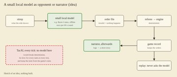
Sketch of the idea: the sitrep to a small local model once per round, its order file through the referee, the game record keeping the orders so a replay never asks the model, a narrator afterwards from the logs, and no model inside TacAI. 0.31.1 Related
Decision · Parked · A program that calls an LLM and plays on its ownDecision · Decided · The LLM player in F6 is the model in the session
The window draws a side's view from the whole recording, so an own tank shot by an unseen enemy shows the tracer's last stretch from where the crew reckons the shot came from. A side's own recording (what the referee hands a player, the multiplayer path) keeps only events whose units the side sees, so the shot of an unseen shooter is not in it, and the tracer does not show there. Putting it in as it is would carry the shooter's id, and the log would then tell who shot. A shot seen from the receiving end without the shooter, matched to the crew's reckoning, would carry what the side knows and no more.
Players and multiplayer › Idea › Idea · horizon: laterplayers-thought-side-recording-unseen-shot
The window draws a side's view from the whole recording, so an own tank shot by an unseen enemy shows the tracer's last stretch from where the crew reckons the shot came from. A side's own recording (what the referee hands a player, the multiplayer path) keeps only events whose units the side sees, so the shot of an unseen shooter is not in it, and the tracer does not show there. Putting it in as it is would carry the shooter's id, and the log would then tell who shot. A shot seen from the receiving end without the shooter, matched to the crew's reckoning, would carry what the side knows and no more.
Facts
observed side_recording keeps an event only when every unit it names is the side's own or visible to it; UnderFire reaches the own side, the Shot of an unseen shooter does not. src/side_recording.rs: side_recording Related
Decision · Built · Each side gets its own recording of the game
The player is a commander, never a single soldier: no first-person view, no jumping into a tank. Open is which level: every tank's orders (exact routes, pauses, arcs, where the smoke lands), troops and companies acting within an order given as an area, a task and a phase, or intent given as arrows, a plan that subordinates turn into orders with delay and friction. Today the player orders each tank and the crews act on their own (fire, cover, pinned, withdraw, smoke); the operative AI is already decided to be a player outside the engine giving orders through the same door, so a layer that turns intent into tank orders fits there, and the simulation is the same whichever level sits on top. A thought: layers, troop orders the AI carries out, with a cost (delay) to reach down to one tank.
Players and multiplayer › Idea › Idea · horizon: latert-players-thought-level-of-command
The player is a commander, never a single soldier: no first-person view, no jumping into a tank. Open is which level: every tank's orders (exact routes, pauses, arcs, where the smoke lands), troops and companies acting within an order given as an area, a task and a phase, or intent given as arrows, a plan that subordinates turn into orders with delay and friction. Today the player orders each tank and the crews act on their own (fire, cover, pinned, withdraw, smoke); the operative AI is already decided to be a player outside the engine giving orders through the same door, so a layer that turns intent into tank orders fits there, and the simulation is the same whichever level sits on top. A thought: layers, troop orders the AI carries out, with a cost (delay) to reach down to one tank.
For the higher levels: the goal is historical outcomes, and a player who coordinates every tank with full overview and no delay can do what no commander could, moving the outcome away from history for reasons outside the tanks. At Le Mesnil-Patry there are about twenty tanks a side. For staying close to every tank's orders: it is clear why that tank died, which the window and replay are built to show, and it is simpler to build. Every tank is likely the most liked, with the charm of outwitting the enemy by placing a tank and its smoke just so, but 60 s rounds may be too long for it (the round length is decided at 60 s); timed orders within the minute (wait, smoke at 0:10) are the other way, and exact smoke needs smoke the player can order. Troops within their orders is tempting and abstract, as it should be. Intent as arrows is hard to feel one did something, except as the maker; a replay showing how the plan was read is the one known remedy. The games behind the models are not named on the pages: the models stand on what they do.
Pictures
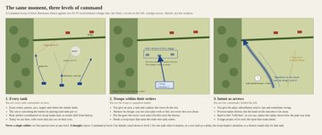
The same moment at three levels of command: every tank (routes, pauses, arcs, smoke), a troop within its order (an area and a task, the crews pick the rest), and intent as an arrow read late and sometimes wrong. A sketch, not the window. 0.52.0 Related
Decision · Decided · The LLM player in F6 is the model in the session
Candidate 8: smoke, offensive and defensive, fire at a suspected position, small movements and hull down, comrades' fire and the command chain. Smoke is built with GB12 (0.51.0-0.55.0): laid when withdrawing and when clearly outmatched (engine-smoke-when-withdrawing); smoke rounds fired from the gun are not (shot-thought-more-round-types). Fire at a suspected position, comrades' fire (comrades-knowledge) and the command chain are not built. Small movements and hull down are built (see halt-in-cover, 0.17.3). Since 0.20.0 the smoke rounds are real rounds in the load (the Sherman's M64 WP, the Pz IV's Nebelgranate), counted but not fired.
TacAI › Idea › Idea · horizon: latersmoke-and-later
Candidate 8: smoke, offensive and defensive, fire at a suspected position, small movements and hull down, comrades' fire and the command chain. Smoke is built with GB12 (0.51.0-0.55.0): laid when withdrawing and when clearly outmatched (engine-smoke-when-withdrawing); smoke rounds fired from the gun are not (shot-thought-more-round-types). Fire at a suspected position, comrades' fire (comrades-knowledge) and the command chain are not built. Small movements and hull down are built (see halt-in-cover, 0.17.3). Since 0.20.0 the smoke rounds are real rounds in the load (the Sherman's M64 WP, the Pz IV's Nebelgranate), counted but not fired.
Gathers candidate 8 in docs/archive/tacai.md 3 and the loose notes under 6 (The tank uses terrain; Later with more tanks). The CMBN manual has the tank pop smoke and back away as self-preservation (7.2). In CM1, medium tanks fired smoke at a Tiger they could not penetrate, and in CM2 only 'pop smoke and reverse' (7.4). TacAI never fires at a suspected position in CM (7.4); with us there is the ghost (last_known). The command chain requires a group, a leader and a channel between the tanks, and its own milestone after the first TacAI (7.4).
Facts
secondhand popping smoke, rotating to face the threat and retreating away from threats docs/archive/tacai.md 7.2, CMBN manual p. 76 Related
Decision · Built · Self-preservation after stress (step 3)Decision · Built · Front toward the threat when stopped
The story in the log: the crew says what it does, from the events and the situation. No language model at runtime; the content is written once, and the variants are governed by the situation.
TacAI › Idea › Idea · horizon: latercrew-voice-in-logs
The story in the log: the crew says what it does, from the events and the situation. No language model at runtime; the content is written once, and the variants are governed by the situation.
The loose note in docs/archive/tacai.md 6, 'The crew talks', is not top priority. A grammar with variants driven by the events, gaps filled from the situation ({target}, {distance}, {clock direction}, {ammunition}, {who}), and variation by stress and training (a calm crew short and correct, a stressed one interrupted, Green forgets steps). Separate from the simulation: it reads the events afterwards with its own random stream, so the fight is never affected and the same seed gives the same story. The fire command in FM 17-12 gives the template, but the wording is not checked. Work: a few hundred lines of Rust and a data file with the phrases. To do before it is written in: check the wording of the fire command with source_search. Variation also by commander: a personality per tank commander, drawn from the seed, and a memory, so the same line is not used twice within a short time. The phrases (a few hundred per situation, role and stress level) are where one-off writing help does the most good.
HE is counted in the stock but not fired until there are soft targets. Smoke is not fired either. Not built.
TacAI › Idea › Idea · horizon: laterhe-against-soft-targets
HE is counted in the stock but not fired until there are soft targets. Smoke is not fired either. Not built.
docs/archive/tacai.md 1.2 point 1: HE is counted but not fired until there are soft targets; smoke is counted but not fired. The basis is FM 17-12 (7.8): the gun should be saved, and the machine gun is used against what it can handle. FM 17-12 also says that HE at over 2,000 yards against a tank hits the track, which gives a possible choice of shell for TacAI.
Facts
stated Conserve the 75-mm ... ammunition. Do not use the tank gun against a target when the machine guns can handle it. FM 17-12 (22 Apr 1943), docs/archive/tacai.md 7.8 stated "Use armor-piercing ... against medium and heavy tanks. Do not use it at ranges over ... 2,000 yards for 75-mm." FM 17-12 (22 Apr 1943), docs/archive/tacai.md 7.8 stated "At ranges over 2,000 yards, use 75-mm HE shell against tanks; a hit on the track will disable the tank." FM 17-12 (22 Apr 1943), docs/archive/tacai.md 7.8 Related
A tank could hold its fire and wait for a closer or side-on target, as in an ambush, instead of firing at a shot that is only worth a round. HoldFire exists in the code for a shot that is not worth a round, but nothing decides to wait for a better one.
TacAI › Idea › Idea · horizon: maybehold-fire-to-wait-for-a-better-shot
A tank could hold its fire and wait for a closer or side-on target, as in an ambush, instead of firing at a shot that is only worth a round. HoldFire exists in the code for a shot that is not worth a round, but nothing decides to wait for a better one.
Idea 2 under 'duellen' in docs/archive/tacai.md 6. In an ambush the chance rises when the enemy comes nearer or shows his side. The idea is a fire discipline that can be calculated.
Related
Whether the enemy's turret points at us could be a threat signal, so that he becomes the priority. Target choice today uses only the time he needs to get through us.
TacAI › Idea › Idea · horizon: maybeenemy-gun-direction-as-threat
Whether the enemy's turret points at us could be a threat signal, so that he becomes the priority. Target choice today uses only the time he needs to get through us.
Idea 3 under 'duellen' in docs/archive/tacai.md 6: the source says that he lays on us gives stress and makes him target one. The source marks the turret direction in contact as already in the engine.
Related
Decision · Built · Target choice by threat (step 2)Decision · Built · Threat assessment (step 1)
Angling the hull toward the main threat would raise the effective slope of the front armour. Front-to-threat turns the front toward the threat, which is a different idea.
TacAI › Idea › Idea · horizon: maybeangle-the-hull-to-the-threat
Angling the hull toward the main threat would raise the effective slope of the front armour. Front-to-threat turns the front toward the threat, which is a different idea.
Idea 1 under 'terräng' in docs/archive/tacai.md 6, and one of the five ideas ranked in its conclusion. The slope factor is already in the engine, per the same section. The Tigerfibel recommendation for a hull angle has not been checked.
Related
A proposal for a command line flag about visibility. The proposal was not understood at first; it was made clearer and is still open.
TacAI › Idea › Idea · horizon: maybevisibility-cli-flag
A proposal for a command line flag about visibility. The proposal was not understood at first; it was made clearer and is still open.
Point (d), 'synlighet', under question 1 in docs/archive/tacai.md 5, which is about the threat assessment.
Related
Hunt stops for a target that is harmless and far away. It needs a better test of what is relevant before it stops.
TacAI › Idea › Idea · horizon: laterhunt-relevance-for-distant-harmless-targets
Hunt stops for a target that is harmless and far away. It needs a better test of what is relevant before it stops.
From the loose notes in docs/archive/tacai.md 7.5. Hunt stops at a real threat (an enemy that gets through us in less than a set time); a distant target that cannot hurt us can still make it stop. A better relevance test is wanted; nothing is decided. Seen again in H1 light: tacai-thought-hunt-stops-at-first-threat.
Facts
stated Hunt stops for harmless targets far away; it needs better relevance. docs/archive/tacai.md 7.5, the list of loose notes (around line 522) Related
Decision · Built · Hunt with observation halts and a stop at a real threat (step 4)
An idea, not decided: a tank with flat, upright plates stands angled to a dangerous enemy, about 45 degrees (10½ or 1½ o'clock), so that front and side are both sloped to him, instead of square to him. The front rule (cover-keeps-the-front-to-the-threat) keeps the hull within 30 degrees of the threat for every vehicle; this would be a posture per vehicle on top of it, for the ones whose plates gain by it. The Pantherfibel says the opposite for the Panther, whose front is already sloped: square on, 11 to 1 o'clock.
TacAI › Idea › Idea · horizon: latertacai-thought-angled-hull
An idea, not decided: a tank with flat, upright plates stands angled to a dangerous enemy, about 45 degrees (10½ or 1½ o'clock), so that front and side are both sloped to him, instead of square to him. The front rule (cover-keeps-the-front-to-the-threat) keeps the hull within 30 degrees of the threat for every vehicle; this would be a posture per vehicle on top of it, for the ones whose plates gain by it. The Pantherfibel says the opposite for the Panther, whose front is already sloped: square on, 11 to 1 o'clock.
Which of our vehicles would gain: the Pz IV and the Sherman have flat upright side plates and a front that is partly upright; the Jagdpanzer IV and the Panther have sloped fronts. The engine already computes the plate and the angle each round strikes, so the gain could be measured on the testing ground before anything is decided. No Tiger in the game yet.
Facts
stated "Die günstigsten Stellungen zum Feind liegen bei 10½, 1½, 4½ und 7½ Uhr." "Pz-Führer! Gefährlichen Feind schräg anfahren. Stellung über Eck befehlen, so daß Feind in Richtung der Mahlzeiten steht." Tigerfibel (D 656/27, 1943), printed p. 85; facts/research/fibel_2026-11-27/tigerfibel_p81-81.png stated "Von 11 bis 1, zur Mittagsstunde, Da schlägt Dir keiner eine Wunde." "Sicher ist Deine Front, drum kämpfe frontal!" Pantherfibel (D 655/27, 1944), scan p. 8; facts/research/fibel_2026-11-27/pantherfibel_p8-008.png Pictures
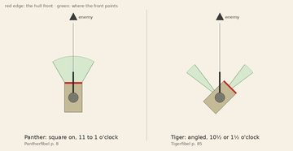
Two readings of keeping the front: the Panther square on to the enemy, its front within 11 to 1 o'clock (Pantherfibel), and the Tiger angled at 10½ or 1½ o'clock so front and side are both sloped to him (Tigerfibel). The turret is on the enemy in both. 0.58.0 Related
Now the computer places at random inside its squares. Better: TacAI looks for cover when it places, at a wood's edge, behind a crest or hull down, facing where the enemy is expected, as the short halt already looks for cover.
If infantry comes, every man is modelled: his own place, his own sight and cover, his health, what he carries, where he runs, rather than the usual abstraction of a squad as a few figures that always stand the same way. The engine already thinks this way about the crews (one man per place, each with his own health), and the men who bail out of a tank (crew-thought-men-outside-the-tank) would be the first men outside a vehicle, so they are the step towards it. The player does not order each soldier: orders go to the group, and the men carry them out together while each takes cover and moves on his own, as in Combat Mission 2.
TacAI › Idea › Idea · horizon: maybetacai-thought-every-man-modelled
If infantry comes, every man is modelled: his own place, his own sight and cover, his health, what he carries, where he runs, rather than the usual abstraction of a squad as a few figures that always stand the same way. The engine already thinks this way about the crews (one man per place, each with his own health), and the men who bail out of a tank (crew-thought-men-outside-the-tank) would be the first men outside a vehicle, so they are the step towards it. The player does not order each soldier: orders go to the group, and the men carry them out together while each takes cover and moves on his own, as in Combat Mission 2.
The parked decision said infantry would be program-controlled background with only TacAI as its producer; this idea leans away from it: the player orders groups, TacAI runs each man inside the group's order, so how much the player micromanages decides how much is his and how much the men's own. What it would cost: a platoon is some thirty men, each needing sight lines and a TacAI of his own every tick, so the engine's per-unit work multiplies; the sight and route code would have to hold that. A model to try (2026-11-19): every man his own unit, with a place, sight, health and what he carries (a rifle, the BAR, ammunition), and a TacAI of his own each tick that, inside the group's order, finds the nearest cover, lies, crawls or fires. Above the men a group, not a unit: the order (move, hold, fire at an area), a formation (column, line, wedge) and the leader as its reference; each man gets his slot in the formation from the leader's place and then looks for cover near it. The player orders the group, never a man. Stress shared by the group as a crew shares it today, with room for a man's own later (the one who just saw his comrade fall). Already there for a man: sight, routes, the ground's cover, stress and TacAI behaviours such as taking cover and pinned. New: the group as a layer between player and man, a man being far smaller than a tank (seen, seeing and covered behind a hedge or a bank), small arms, and high explosive against men rather than armour. The example: a US rifle squad of 1944, twelve men (a squad leader and his assistant, a BAR team of three, seven riflemen of whom two scouts and one with a rifle grenade launcher), from memory; the TO&E 7-17 of 1944 would settle it. How the men are seen (2026-11-19): a man is half a metre across, so he reads as a figure only from about 15-20 px/m, which is today's furthest zoom (20 px/m; a double click on a tank gives 10, where a man is 5 px); and at 20 px/m the view holds only some 50 by 35 m, too little to see a squad and its fight together. So the men get zoom bands, as the tanks have (a symbol with its badge far out, a model zoomed in): far out the squad's badge; in the middle, about 3-10 px/m, every man as a dot drawn a little larger than life (at least 3-4 px) with the squad's area as a faint wash, enough to see the formation, who lies where and whether the squad has scattered; close in, about 10-30 px/m, the men as figures to scale, lying, crawling, firing, with the furthest zoom raised for it. Every dot is a real man in his own place, drawn larger only to be seen. The middle band can come first for the men who bail out of a tank, and the infantry gets it for free.
Facts
observed A crew is one man per place, each with his own health (fit, wounded, killed). src/models.rs: CrewMember secondhand A US rifle squad of 1944: twelve men, a squad leader (staff sergeant), an assistant (sergeant), a BAR team of three and seven riflemen with the M1, two of them scouts. From memory, no source yet; TO&E 7-17 (1944) would settle it. none yet observed The furthest zoom is 20 px/m and a double click on a tank zooms to 10 px/m; the tanks become models from 3 px/m. src/gui/camera.rs: MAX_PX_PER_M; src/gui.rs: FOCUS_PX_PER_M; src/draw.rs: DETAIL_FROM_PX_PER_M Related
Decision · Parked · Infantry controlled by the program (parked)
A crew firing from hull down gives itself away with its flash and dust; after a few shots it would back out of sight and come up again in another place, not the same one. Needs research (how many shots, how far, doctrine or practice) and a thought on how to handle it in the game: of the crew's own accord, as an order, or both.
TacAI › Idea › Idea · horizon: latertacai-thought-shift-after-shots
A crew firing from hull down gives itself away with its flash and dust; after a few shots it would back out of sight and come up again in another place, not the same one. Needs research (how many shots, how far, doctrine or practice) and a thought on how to handle it in the game: of the crew's own accord, as an order, or both.
The chain in the manuals: look from turret defilade, move up to hull down and fire, then move to an alternate position by a covered route. The engine already lets the muzzle flash be seen for a second (FIRED_SEEN_S). Against: a gun without a stabiliser has to be laid again from each new place, so the first shot from there is the worst, and reversing is slow and blind. Not checked: whether a crew keeps its laying when it moves.
Facts
stated "The tank does its most deadly firing from a "hull down" position in which the mass of the tank is concealed from the enemy and the tank commander observes from the turret" FM 17-12 (1943), § 46b stated "choosing, while in turret defilade, a route to a new position" FM 17-30 (1942), § 8a(2) stated "The muzzle blast will quickly disclose its position. Because of this, alternate positions must be selected and routes thereto reconnoitered." (of assault guns) FM 17-10 (1942), p. 229, assault guns stated "An alternate position must always be selected so that after any action the platoon may be moved rapidly to escape hostile retaliatory fire." (of mortars fired from their vehicles) FM 17-10 (1942), pp. 238-239, mortars stated "To delay the New Zealand infantry and to pick off tanks, the Tigers were used in hull-down positions. Another enemy method was to send Tigers by covered routes to previously selected positions. From these positions the Germans would fire a few harassing rounds, withdraw, and move to alternate positions." US Intelligence Bulletin, January 1945, "Notes on Tiger Tanks in the Battle for Florence"; read as transcribed at lonesentry.com/tigerflorence, not checked against the original stated "When a single tank runs into an antitank position, it likewise fires only smoke shells, usually two or three rounds, to cover its movements." Smoke to cover a move, not a position given away by its own flash. US Intelligence Bulletin, August 1944, "Smoke-Shell Tactics Used by German Tanks"; read as transcribed at lonesentry.com, not checked against the original Pictures
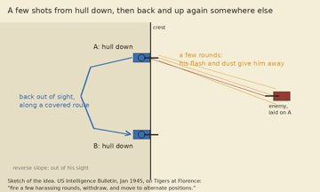
Sketch, from above: a tank fires a few rounds from hull down at A, backs out of sight behind the crest, goes along a covered route and comes up hull down again at B, while the enemy is still laid on A. 0.35.0 Related
Decision · Built · Hunt with observation halts and a stop at a real threat (step 4)Decision · Decided · Moving after a few rounds
In H1 light a hunting tank stops at the first threat seen, even at 800 m across an open field, and duels there, while Siegel in the source drove on behind a hedge to 100-200 m.
TacAI › Idea › Idea · horizon: latertacai-thought-hunt-stops-at-first-threat
In H1 light a hunting tank stops at the first threat seen, even at 800 m across an open field, and duels there, while Siegel in the source drove on behind a hedge to 100-200 m.
A question for H2: when should a hunting tank go on toward cover or its goal instead of stopping? Related to tacai-thought-hunter-fires-early, which answered when a hunter opens fire. Seen in the scenario of orders-h1-light-scenario. The same fault as hunt-relevance-for-distant-harmless-targets (docs/archive/tacai.md 7.5), seen again in H1 light.
Facts
observed Observed in the 80 runs (0.37.0): the wheat tanks east of the chateau see Siegel across the open field at about 800 m from the first second, and he stops the hunt at that threat and duels at range instead of driving along the hedge to the 200 m of Jeran's account. tankzim2000 scenarios/le_mesnil_patry.json --seeds 1..80 --until-decided, out/runs/ secondhand The enemy was still obscured by a hedge. Steel Chariots, Le Mesnil-Patry part III-A (losthistory.net/steelchariots/le-m-p3.htm), Jeran's account Pictures
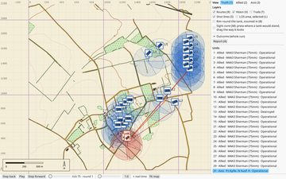
Seed 1 at 7.5 s: Siegel's three have stopped their hunt behind the hedge and duel the wheat tanks some 800 m away across the open field; Sherman 13 is already out. 0.37.0 The illusion of individuals in a group: the order goes to the group, and each man picks a free cover slot near the ordered point, facing the threat. Cover slots are worked out from the map (walls, banks and ditches, hedges, buildings, craters), each with the direction it protects against and a quality; a wall shot away changes its slots. Movement is the group finding its way, each man keeping his place in it and stepping round the others. Small rules per man (take cover, return fire, go down when pinned), morale and suppression per group. No spectacle: no explosions throwing men about.
TacAI › Idea › Idea · horizon: latertacai-thought-infantry-groups
The illusion of individuals in a group: the order goes to the group, and each man picks a free cover slot near the ordered point, facing the threat. Cover slots are worked out from the map (walls, banks and ditches, hedges, buildings, craters), each with the direction it protects against and a quality; a wall shot away changes its slots. Movement is the group finding its way, each man keeping his place in it and stepping round the others. Small rules per man (take cover, return fire, go down when pinned), morale and suppression per group. No spectacle: no explosions throwing men about.
Seen in a promotional video of a coming RTS (Defilade), not checked how it is built; the usual ways: Company of Heroes (squads ordered as one, men taking cover points), Combat Mission (an 8 by 8 m grid of action spots with their own terrain and cover, the men placed inside; from memory). For us: the drawn ground (GB3), low walls (terrain-low-wall-crossing), hedges and buildings give the slots; the cover's quality can be counted exactly as the share of a man that shows from the threat's side, the lowest visible height GB9 made exact to a centimetre (a man prone about 0.4 m, standing about 1.7 m, not checked); the threat's direction is the TacAI's (threat_from, the contacts). Deterministic if slots are handed out in a fixed order and the steering counted in the same steps every tick. It costs many more sight lines: the pyramid (GB9), an index of the shapes and keeping the whole state less often in recordings (engine-recordings-packed) come first.
Pictures
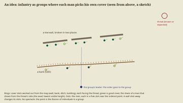
A sketch from above: cover slots along a broken wall and a bank, each facing the threat and shaded by how much of a man shows; the group's men each in a free slot near the ordered point. 0.40.0 TacAI's threat assessment (assess) reckons each known enemy with its exact vehicle data: the crew knows what it is and what its gun and armour give at that range, to the percent. A real commander had recognition cards and rules of thumb, and could take a Pz IV for a Tiger. The estimate should rest on what the crew believes the enemy is, with errors in type and range, rather than on the engine's own tables. It matters for target choice and, since GB12 step c2, for when a crew judges itself clearly outmatched and lays smoke and moves.
TacAI › Idea › Idea · horizon: latertacai-thought-rougher-threat-estimates
TacAI's threat assessment (assess) reckons each known enemy with its exact vehicle data: the crew knows what it is and what its gun and armour give at that range, to the percent. A real commander had recognition cards and rules of thumb, and could take a Pz IV for a Tiger. The estimate should rest on what the crew believes the enemy is, with errors in type and range, rather than on the engine's own tables. It matters for target choice and, since GB12 step c2, for when a crew judges itself clearly outmatched and lays smoke and moves.
Two parts could carry the error. Crew quality, which already sets reaction, aim, reload, range estimate and stress recovery (src/rules.rs): a green crew takes the type wrong more often and over-estimates the threat, an elite one judges near the truth; so green crews would lay smoke and pull back without need, as the over-estimates of the time suggest, and experienced ones would hold where they can win. And how well known the threat is: a type the side had met for years (the Pz IV in 1944) is judged right, a rare or new one (an early Panther, a Jagdpanzer IV) worse, even by a good crew; a figure per side and type at the scenario's date. The quality part can start as MOCK with the right direction, like the rest of the quality table; the familiarity part needs a historical source, the same question as the over-estimates. The contact could climb a ladder over time: something (movement, a flash, dust), a tank, a type perhaps wrong ("Tiger?"), a sure type after watching it a while, at close range, or when it fires (the flash and the round tell the calibre). The threat estimate then reckons with what the crew believes at its rung; quality and familiarity set how fast it climbs and how often it guesses wrong. Today the contact already grows in reaction (ticks_active), assessment (alive, probably out, out), the gun's laying and suspicion (shot at unseen), but the type is known at once and exactly. The window's idea of clicking an enemy for what the side knows (gui-thought-enemy-knowledge-click) would show the rung. The briefing sets the expectation: it already carries the enemy's expected quality (expected_enemy, used by the threat estimate) and where he is expected (threat_from); it could also name the types expected. An expected type is recognised sooner and surer; an unexpected one takes longer and is misjudged more often toward the dangerous; a briefing that over-warns gives more "Tiger?", one that under-warns ("lightly held") gives crews that take a real threat for less until they have seen more. For H2, what the 1st Hussars were told before Le Mesnil-Patry is a source question (the war diary).
Optional, later: a language model writes an after-action narrative from the logs, as an addition to the report.
After-action report › Idea › Idea · horizon: laterreport-thought-prose-summary
Optional, later: a language model writes an after-action narrative from the logs, as an addition to the report.
Not part of the first version of F10. The source calls it optional and for later, and it would read the machine-readable logs.
Facts
stated Later and voluntary, as an addition to F10. docs/archive/tacai.md, section 6 The map can sit in the HTML page as SVG, as the range output already does.
After-action report › Idea › Idea · horizon: laterreport-thought-map-svg
The map can sit in the HTML page as SVG, as the range output already does.
The range output in out/range/ is already SVG, so the same format would fit the AAR page. Not chosen for G5 (2026-11-14): the map is the sheet's PNG embedded (report-page-map-png).
Facts
stated The map can sit in the page as SVG. The project already makes SVG, e.g. out/range/. docs/archive/tacai.md 1.1 Related
Decision · Built · The report page's map is the map sheet as an embedded PNG
Fog could be chosen when a scenario starts, and the end data would then show the true state or what the side saw.
After-action report › Idea › Idea · horizon: maybereport-thought-fog-setting
Fog could be chosen when a scenario starts, and the end data would then show the true state or what the side saw.
Not in scope now. Whichever view the end data shows is the open question in the decision on the end data's view.
Facts
stated Fog may in the future be chosen when a scenario starts. docs/archive/tacai.md 1.1 Related
Save as HTML writes out/report/<scenario>__seed_<seed>.html relative to the folder the program was started from; started by a double click it may land in the home folder or elsewhere. Save it beside the program, as the replays are found there, or at least show the whole path in the window.
After-action report › Idea › Idea · horizon: laterreport-save-beside-program
Save as HTML writes out/report/<scenario>__seed_<seed>.html relative to the folder the program was started from; started by a double click it may land in the home folder or elsewhere. Save it beside the program, as the replays are found there, or at least show the whole path in the window.
Facts
observed The window writes the report to out/report/<scenario>__seed_<seed>.html, with __allied or __axis for one side's view, relative to the working directory, and says "Saved to" with that relative path. src/gui.rs save_report_page; src/report.rs report_name Pictures
After Save as HTML a button opens the page in the system's browser, as the menu's Docs links do (egui hands a link to the browser, no new library).
After-action report › Idea › Idea · horizon: laterreport-open-after-save
After Save as HTML a button opens the page in the system's browser, as the menu's Docs links do (egui hands a link to the browser, no new library).
Facts
observed The menu's Manual and Changelog links open in the system's browser through egui's hyperlink. src/gui.rs CHANGELOG_URL Pictures
Every real map is brought to one standard: the world's (0, 0) is the sheet's south-west corner, so the grid's 00 lines, the edge numbers, the mouse position, the order files and the sitrep all read the same metres. The real maps made by the map tools already do (tools/map/fetch.py: local metres east and north of the box's south-west corner; Le Mesnil-Patry's height raster starts at 0, 0). The other maps are test maps for the engine and need not follow it; on hill_assault the kilometre lines stand at world 700.
Maps and scenarios › Idea › Idea · horizon: laterterrain-map-coordinate-standard
Every real map is brought to one standard: the world's (0, 0) is the sheet's south-west corner, so the grid's 00 lines, the edge numbers, the mouse position, the order files and the sitrep all read the same metres. The real maps made by the map tools already do (tools/map/fetch.py: local metres east and north of the box's south-west corner; Le Mesnil-Patry's height raster starts at 0, 0). The other maps are test maps for the engine and need not follow it; on hill_assault the kilometre lines stand at world 700.
Until then the window's edge numbers stay in world metres, so they agree with the mouse position, the order files and the sitrep, though on some maps they do not start at 0. Related in Terrain and movement: terrain-map-file.
Facts
stated The sheet's origin (its 00 grid lines) is the ground raster's south-west corner, or without a raster the features' corner rounded down to 100 m. src/sheet.rs sheet_origin observed On hill_assault the sheet's kilometre lines stand at world 700, so the edge numbers read 100, 300, 500, 700; on Le Mesnil-Patry the origin is world 0. the G4 step 2 screenshots, 2026-11-15 stated The real maps are made in local metres east and north of the map box's south-west corner; Le Mesnil-Patry's height raster has its lower left corner at 0, 0. tools/map/fetch.py; maps/le_mesnil_patry/elevation.asc Pictures

Sketch: today a map's sheet grid may start at another world coordinate than 0 (hill_assault: 700); with the standard the sheet's south-west corner is world (0, 0), so the edge numbers, the mouse, the order files and the sitrep all read the same metres. 0.28.0 A kit of building parts for a region and a time (first: Bessin and the Caen plain, 1944): roofs (slate, flat tile, thatch; gable, hipped, lean-to), limestone walls, gable chimneys, dormers, lean-tos, courtyard walls with a gate. Rules pick the parts from each real footprint: long and narrow a longère or barn, small a lean-to or bakehouse, several round an open yard a courtyard farm with its wall and gate, near the road in the village core a village house with its ridge along the street; materials as the sources say, with a seeded spread so a village is not uniform. Every building on a map gets a fitting look at once, and the same kit serves the next real map in the region. Each region and time a map is set in needs its own kit.
Maps and scenarios › Idea › Idea · horizon: laterterrain-buildings-standard-kit
A kit of building parts for a region and a time (first: Bessin and the Caen plain, 1944): roofs (slate, flat tile, thatch; gable, hipped, lean-to), limestone walls, gable chimneys, dormers, lean-tos, courtyard walls with a gate. Rules pick the parts from each real footprint: long and narrow a longère or barn, small a lean-to or bakehouse, several round an open yard a courtyard farm with its wall and gate, near the road in the village core a village house with its ridge along the street; materials as the sources say, with a seeded spread so a village is not uniform. Every building on a map gets a fitting look at once, and the same kit serves the next real map in the region. Each region and time a map is set in needs its own kit.
A way to render them, worked out from each real footprint rather than drawn as whole houses: (1) the ridge splits the roof into two planes, the one facing the sun (north-west, 45 degrees, as the relief) lighter and the other darker; (2) the roof's shape by rule (gable, hipped, lean-to against a wall), L and U footprints split into rectangles or a straight skeleton; (3) the material as a tiling texture laid along the slope (slate, flat tile, thatch), drawn by us or taken from CC0 sets; (4) chimneys, dormers and hatches as sprites from the atlas, placed by the rule; (5) around it: courtyard walls as narrow strips with a shadow as long as they are high, the gate, the yard, pond, well and orchard; (6) shadows as long as the eaves are high. Blender is for the parts and the roof textures, not whole houses. First trial: step 1 alone, two-toned roof planes on Le Mesnil-Patry's real houses. Related in Terrain and movement: terrain-hedge-bank-rule.
Facts
stated The Bessin is linked to the Caen plain; its walls are of limestone, rendered or not, and its roofs are covered with slate. UDAP du Calvados, fiche Bessin, https://www.calvados.gouv.fr/contenu/telechargement/6925/84013/file/fiche_bessin.pdf secondhand Brier and Brunet, L'architecture rurale française: Normandie (Berger-Levrault, 1984, 403 pages) exists and is the standard work on the region's rural houses; not read yet. library record, https://www.cca.qc.ca/en/search/details/library/publication/11630668 secondhand An outside language model proposed eight building types (enclosed courtyard farm, longère, village house, church, barn and byre, cider press house, cart shed, lean-to) with roofs, sizes and how they show on the 1947 photograph; of its four sources, two exist (Brier and Brunet; Caumont), one is half-confirmed (Musset) and one was not found (a CAUE guide), and nearly every value cites one book without a page. A list of hypotheses, not facts. a check of the answer's sources, 2026-11-15 Pictures
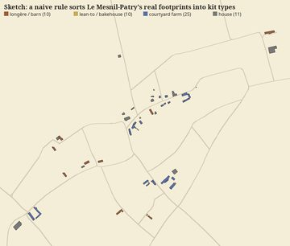
Sketch: Le Mesnil-Patry's 56 real building footprints sorted by a naive rule (size, length against width, neighbours within 35 m) into the kit's types; the real rule comes from the sources. 0.30.1 Where a source tells more than the rule, a building is given its own look: on Le Mesnil-Patry the church, farms named in the war diaries (1st Hussars, Queen's Own Rifles) or plain on the 1947 air photograph, and what stood or burned on 11 June 1944. Stored as an optional field on the building in the map's source (type, roof, its source); without it the standard kit's rule applies. Each map has its own.
Maps and scenarios › Idea › Idea · horizon: laterterrain-buildings-specific
Where a source tells more than the rule, a building is given its own look: on Le Mesnil-Patry the church, farms named in the war diaries (1st Hussars, Queen's Own Rifles) or plain on the 1947 air photograph, and what stood or burned on 11 June 1944. Stored as an optional field on the building in the map's source (type, roof, its source); without it the standard kit's rule applies. Each map has its own.
Facts
secondhand Caumont's Statistique monumentale du Calvados (from 1846) covers the canton of Tilly-sur-Seulles in its first volume; no passage on Le Mesnil-Patry was found yet. https://archive.org/details/statistiquemonum01caum; https://mondes-normands.caen.fr/angleterre/patrimoine_architectural/normandie/bessin/tilly_sur_seulles/audrieu/index.htm Related
For a real map, show what we built it from beside how we read it: the 1947 air photograph (and the other backgrounds) against the map's hedges, fields, roads and buildings, so it is plain what is source and what is interpretation. In the map editor and on the map's page on the site, side by side or with a slider. A source that may not be reproduced (a hand-drawn plan in a book, say) is not shown but cited: the book, the appendix, the page.
Maps and scenarios › Idea › Idea · horizon: nextterrain-map-source-and-reading
For a real map, show what we built it from beside how we read it: the 1947 air photograph (and the other backgrounds) against the map's hedges, fields, roads and buildings, so it is plain what is source and what is interpretation. In the map editor and on the map's page on the site, side by side or with a slider. A source that may not be reproduced (a hand-drawn plan in a book, say) is not shown but cited: the book, the appendix, the page.
Fits the rule that every effect shows something the engine knows, applied to the map: the reader can check the reading. The proposals already carry their source and a note on why (tools/map/proposals.py); this shows it. Walls: none in BD TOPO for Le Mesnil-Patry (construction_lineaire holds one bridge), so low walls would come from the photograph or from other sources, read and marked as such.
Facts
observed BD TOPO's linear structures (construction_lineaire) in the map's box hold one feature, a bridge, and no walls. maps/le_mesnil_patry/bdtopo/construction_lineaire.geojson, fetched 2026-11-16 Related
On the open plain round Le Mesnil-Patry the fields are long narrow strips (lanieres) with no hedges: a boundary is only a change of tone on the 1947 photograph, so the hedges cannot find them and a frame between the roads holds ten or twenty strips. The way to try: a script does the geometry, a judge per frame (an agent, all with the same rules) says which lines are real, and the hand checks the drafts in the editor. Next try: split each frame step by step at its strongest long boundary, so the result is fields rather than lines and a bent or turning block is cut into short straight pieces. Built 2026-11-19 as tools/map/split_strips.py (terrain-strip-drafts-split-and-merge); the strips themselves are G8, by hand over the drafts.
Maps and scenarios › Idea › Idea · horizon: laterterrain-strip-fields-from-photo
On the open plain round Le Mesnil-Patry the fields are long narrow strips (lanieres) with no hedges: a boundary is only a change of tone on the 1947 photograph, so the hedges cannot find them and a frame between the roads holds ten or twenty strips. The way to try: a script does the geometry, a judge per frame (an agent, all with the same rules) says which lines are real, and the hand checks the drafts in the editor. Next try: split each frame step by step at its strongest long boundary, so the result is fields rather than lines and a bent or turning block is cut into short straight pieces. Built 2026-11-19 as tools/map/split_strips.py (terrain-strip-drafts-split-and-merge); the strips themselves are G8, by hand over the drafts.
A pilot on 2026-11-16 (tools/map/strips.py): a Hough transform proposed straight candidate lines per frame; three agents judged the frames field-3, field-7 and field-16 with one set of rules (boundary, partial, hedge, track, noise, frame) and kept 19 of 32, 15 of 52 and 20 of 73. What they kept lies on real edges, and they told a tree row from a crop edge; what the script proposed was too little in the big frames (a 118 ha frame with some twenty strips got a handful of real lines) and a curved band gave a dozen duplicates. The judging works; the candidates are the bottleneck.
Facts
observed In the pilot (the frames then numbered field-3, field-7 and field-16, before the 10 ha limit) the agents kept 19 of 32, 15 of 52 and 20 of 73 candidate lines; the kept ones lie on real edges of the photograph, but the big frames have many strips no candidate covers. tools/map/strips.py on maps/le_mesnil_patry, frames field-3, field-7, field-16, 2026-11-16 Pictures

The pilot on one frame north of the village: the August 1947 photograph (left), and the candidate lines a judge kept as real field edges (right): strip edges, and a row of trees told apart as a hedge. 0.30.3 Related
Decision · Built · The fields' outlines proposed from the hedges, checked against the 1947 photographDecision · Built · The strips proposed by cutting each frame at its strongest boundary, and a Merge to take a cut back
Historical scenarios keep fixed values; a skirmish mode lets the player choose randomisation at the start, for example crew levels spread by the seed, perhaps with commanders' tanks weighted higher.
Maps and scenarios › Idea › Idea · horizon: laterorders-thought-skirmish-random-crews
Historical scenarios keep fixed values; a skirmish mode lets the player choose randomisation at the start, for example crew levels spread by the seed, perhaps with commanders' tanks weighted higher.
The weighting has a counter-question: some troop leaders were the newest men, so a commander's tank may not be the better crew. To be settled from a source.
Facts
secondhand Among the replacements were three lieutenants joining the regiment for the first time Steel Chariots, Le Mesnil-Patry part I (losthistory.net/steelchariots/le-m-p1.htm) Related
A base prompt the player gives to the language model of their choice, carrying what is needed to write a scenario: the scenario format, the maps with their places and coordinates, the vehicles with their dates, and the rules. The player asks for, say, an Axis defence with the upper hand and a believable briefing, and gets back a scenario file to play; a skirmish made by a model, next to the historical scenarios with fixed values.
Maps and scenarios › Idea › Idea · horizon: latermaps-thought-llm-made-scenarios
A base prompt the player gives to the language model of their choice, carrying what is needed to write a scenario: the scenario format, the maps with their places and coordinates, the vehicles with their dates, and the rules. The player asks for, say, an Axis defence with the upper hand and a believable briefing, and gets back a scenario file to play; a skirmish made by a model, next to the historical scenarios with fixed values.
What helps: the scenario file already refuses unknown fields (deny_unknown_fields in src/scenario.rs), so a wrong file gives a clear error a model can mend in a loop, and a vehicle not yet built at the scenario's date gives a warning (ScenarioFile::out_of_time). What is hard: a model does not see the map, so the prompt needs the map described (places, coordinates, terrain) or the map sheet as a picture; and a check that says whether a file is playable (a tank inside a building or off the map, forces out of their time) before it is offered in the menu. Related: the skirmish with random crews (orders-thought-skirmish-random-crews) and the LLM player (players-llm-player-in-session).
Pictures
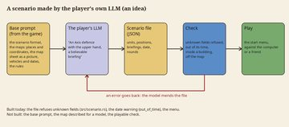
The idea in a sketch: a base prompt from the game, the player's own LLM, the scenario file, the check that sends errors back, and play. 0.37.0 Related
Where each front's map layers would come from, written from memory and each one a source question to check: France, IGN LiDAR HD at 1 m, BD ORTHO Historique from 1945 and BD TOPO (in use); the Netherlands and Belgium, open LiDAR (AHN, Wallonia) and war-time photographs in archives; Germany, ground models at 1 m from several states; the Baltic (Carius at Malinava), Estonia's open LiDAR; the Soviet Union, GLO-30 with German and Soviet maps and Luftwaffe photographs (NARA); North Africa, GLO-30, British maps, folds drawn by hand and the earth's curvature on the long ranges.
Maps and scenarios › Idea › Idea · horizon: latermaps-thought-sources-per-front
Where each front's map layers would come from, written from memory and each one a source question to check: France, IGN LiDAR HD at 1 m, BD ORTHO Historique from 1945 and BD TOPO (in use); the Netherlands and Belgium, open LiDAR (AHN, Wallonia) and war-time photographs in archives; Germany, ground models at 1 m from several states; the Baltic (Carius at Malinava), Estonia's open LiDAR; the Soviet Union, GLO-30 with German and Soviet maps and Luftwaffe photographs (NARA); North Africa, GLO-30, British maps, folds drawn by hand and the earth's curvature on the long ranges.
A tool, like tools/map/banks.py for the banks beside the roads, that walks every hedge, takes the mean of cross-sections from LiDAR at 1 m, and proposes a bank (height, half width) or a ditch beside it where the profile shows one, as drafts for the editor to accept or delete. Per map it is one command and a review; where there is no LiDAR, or the ground has changed since the war, they are drawn by hand from photographs and maps.
Maps and scenarios › Idea › Idea · horizon: nextmaps-thought-banks-from-lidar
A tool, like tools/map/banks.py for the banks beside the roads, that walks every hedge, takes the mean of cross-sections from LiDAR at 1 m, and proposes a bank (height, half width) or a ditch beside it where the profile shows one, as drafts for the editor to accept or delete. Per map it is one command and a review; where there is no LiDAR, or the ground has changed since the war, they are drawn by hand from photographs and maps.
Measured by hand on 2026-11-21 at Le Mesnil-Patry: under the 41 hedges marked as on a bank today's median rise is 0.19 m; the clearest bank rises 0.55 m with a half width of about 2.75 m (drawn, map 0.3.0); several hedges have a ditch of about 1.3 m 4 to 6 m beside them. Today's ground, not 1944: each draft is checked against the 1947 photograph. Related in Terrain and movement: terrain-thought-drawn-ground.
Facts
observed Under the 41 hedges marked as on a bank, the median rise is 0.19 m; the clearest bank 0.55 m; ditches of about 1.3 m beside several hedges. IGN, MNT LiDAR HD at 1 m, Géoplateforme WMS, fetched 2026-11-21 Pictures
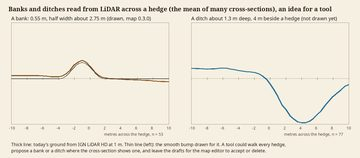
Mean cross-sections from LiDAR HD across two hedges at Le Mesnil-Patry: a bank of 0.55 m with the smooth bump drawn for it, and a ditch of about 1.3 m beside another. 0.39.0 For building maps only, nothing to do with the simulation or the battle: a 3D view in the map editor where one flies about the ground, or stands at a commander's eye height, to see how the map looks from the ground. The engine works out the shape and the browser only draws it: a command in the program (map-mesh, say) reads the map with the engine's own code (the height raster, the drawn banks and ditches, hedges and railway banks at their height, woods and buildings) and writes the triangles to a file; the editor shows them with three.js, kept as a local file so the tool works without a network. When the map is saved, the editor's server asks the engine for a new mesh and the view follows. No tanks, no lines of sight, no fighting.
Maps and scenarios › Idea › Idea · horizon: latermaps-thought-3d-fly-view
For building maps only, nothing to do with the simulation or the battle: a 3D view in the map editor where one flies about the ground, or stands at a commander's eye height, to see how the map looks from the ground. The engine works out the shape and the browser only draws it: a command in the program (map-mesh, say) reads the map with the engine's own code (the height raster, the drawn banks and ditches, hedges and railway banks at their height, woods and buildings) and writes the triangles to a file; the editor shows them with three.js, kept as a local file so the tool works without a network. When the map is saved, the editor's server asks the engine for a new mesh and the view follows. No tanks, no lines of sight, no fighting.
The point is to see the ground as the engine believes it is, so a hedge that is too low, a crest in the wrong place or a wood that hides too little shows at once from eye height; it suits terrain-map-source-and-reading (the source beside our reading). Weighed and not chosen: a 3D reader of its own in JavaScript (it reads the map its own way and can drift from the engine unnoticed); the view as a mode of the Rust program beside the browser editor (two tools, and one keeps asking whether the editor could not move there too); the editor moved into macroquad and egui (the layers, placing a photograph by hand and drawing polygons would be built again, and the Python preprocessing stays Python anyway); an Electron app (a packed browser, which the editor already runs in, and the 3D would still be read in JavaScript). Not in conflict with gui-3d-window: that is the game's window, this is a tool for checking a map. three.js would be the editor's first dependency outside Python's standard library, a choice of its own.
Facts
observed The ground is a height field: one height per place, read from an ESRI ASCII grid and interpolated bilinearly, with drawn banks and ditches added (Map::ground_at). No overhangs, bridges to drive under or tunnels. src/ground.rs (header), src/map.rs: ground_at, 2026-11-23 observed The map editor is a local web page (tools/map/trace.html, about 950 lines) served by tools/map/trace.py with Python's standard library; it saves the engine's .geojson and lets the engine read it. tools/map/trace.html, tools/map/trace.py, 2026-11-23 observed The map's features carry the heights the view would draw: hedges 3 m, light woods 6 m, woods and dense woods 15 m, buildings 6.2 m (Le Mesnil-Patry). maps/le_mesnil_patry/terrain.geojson, 2026-11-23 Pictures
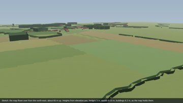
A sketch of the view: Le Mesnil-Patry from the north-east, about 60 m up, drawn from the map's own height raster and features (hedges 3 m, woods 6 to 15 m, buildings 6.2 m), nothing added. 0.48.1 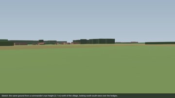
The same ground from a commander's eye height (2.7 m) north of the village: the nearest field, then hedges, woods and houses as a wall. What the view is for: seeing the map as the engine holds it, from the ground. 0.48.1 Related
A side view per vehicle in the codex as SVG, computed from the vehicle file (length, heights, ground clearance, track top, turret place and size, gun height, each plate's height and slope), so the picture is exactly what the engine counts with and changes when a number does. Details (road wheels, hatches, skirts, tools) read from a scale drawing; the base colour from a source and a camouflage pattern marked as a type pattern unless a photograph shows that vehicle. Our own drawing, not traced from anyone's artwork.
The project site › Idea › Idea · horizon: latersite-thought-codex-side-views
A side view per vehicle in the codex as SVG, computed from the vehicle file (length, heights, ground clearance, track top, turret place and size, gun height, each plate's height and slope), so the picture is exactly what the engine counts with and changes when a number does. Details (road wheels, hatches, skirts, tools) read from a scale drawing; the base colour from a source and a camouflage pattern marked as a type pattern unless a photograph shows that vehicle. Our own drawing, not traced from anyone's artwork.
A tool, not simulation code. Clean vector with simple shading, not a painted look. First a trial sketch of the Jagdpanzer IV in _tmp once its measures are read on the page image (GB10).
A script that takes a research report or an item, finds each quote with its source (a PDF and page, an OCR text, a file in facts/, a saved search passage) and answers per quote: found word for word, found with only line breaks or OCR noise between, or not found. Deterministic, nothing made up, almost no tokens: it does what a small model does today when it checks a quote, and does it better. Line breaks, hyphenation and columns are evened out before the comparison; a quote not found is shown with the nearest passage, for a person to judge.
The project site › Idea › Idea · horizon: nextsite-thought-quote-check-tool
A script that takes a research report or an item, finds each quote with its source (a PDF and page, an OCR text, a file in facts/, a saved search passage) and answers per quote: found word for word, found with only line breaks or OCR noise between, or not found. Deterministic, nothing made up, almost no tokens: it does what a small model does today when it checks a quote, and does it better. Line breaks, hyphenation and columns are evened out before the comparison; a quote not found is shown with the nearest passage, for a person to judge.
Came up when asking whether a local model could take over the small model's work to save tokens. The answer: the cost is mostly the main model's own reading, and much of the small model's work should be a script, not a model; a local model would also invent more, which is the worst fault in source work. Tried by hand the same day: the three smoke reports' quotes were checked with pdftotext and grep in seconds, matching apart from line breaks and a quote split across two columns. Related: site-sub-agent-writes-items-trial (the small model checks quotes today), tools/source_search/search.py (saves verbatim passages with their URL).
Facts
observed The quotes in the smoke reports on the M4A3, the Sherman V and the Firefly were found in Chamberlain & Ellis, TM 9-759 (1944) and FM 17-30 with pdftotext and grep; the differences were line breaks and one quote across two columns. facts/British and American tanks of world war ii.pdf, facts/manuals/TM9-759_1944.pdf, facts/manuals/FM17-30_1942.pdf, 2026-11-23 Related
Decision · Decided · A sub-agent writes items and the journal draft, on trial
An agent given only the code and one sentence on what the program is, not SESSION.md, the items or the specs, reads a branch's diff for faults, contradictions and untested cases; it reads what is written, not what was meant, where the main session shares the spec's assumptions (GB12 step c2's first form followed a faulty spec faithfully). First on the branch of 2026-11-23 (main..gb11-nations). Later forms: a tester writing tests from a spec without seeing the code, and a player using only the manual and the command line. Every finding is checked against the code before anything is done.
The project site › Idea › Idea · horizon: nextsite-thought-blind-code-review
An agent given only the code and one sentence on what the program is, not SESSION.md, the items or the specs, reads a branch's diff for faults, contradictions and untested cases; it reads what is written, not what was meant, where the main session shares the spec's assumptions (GB12 step c2's first form followed a faulty spec faithfully). First on the branch of 2026-11-23 (main..gb11-nations). Later forms: a tester writing tests from a spec without seeing the code, and a player using only the manual and the command line. Every finding is checked against the code before anything is done.
Another model family may see other things. A local model on the home machine (a Qwen coder of about 14B) costs nothing and keeps the code at home; a review is only text in and out (the diff in, the findings out), so a small script is enough, but such a model takes one file or step at a time and reads Rust less well, so many findings will be false. A model behind an API (DeepSeek, Qwen) is stronger and cheap but sends the code to a third party, a decision of its own. Checking findings costs the main session's tokens, so try small first: one step's diff (GB12 step c2 in src/tacai.rs), locally, and count how many findings held.
Related
Decision · Decided · A sub-agent writes items and the journal draft, on trial
Built 2026-11-28 (0.60.0) with the ambush (wedge-limits-target-choice): while an ambush is set the turret is laid on the target if there is one, otherwise on the freshest remembered contact inside the wedge, otherwise on the wedge's centre; contacts outside and the briefing's expected threat do not pull it. Spotting follows the turret, so a crew given a wedge watches it. Without an ambush the turret rests as before.
Orders › Decision › Built › 0.60.0orders-setarc-open
Built 2026-11-28 (0.60.0) with the ambush (wedge-limits-target-choice): while an ambush is set the turret is laid on the target if there is one, otherwise on the freshest remembered contact inside the wedge, otherwise on the wedge's centre; contacts outside and the briefing's expected threat do not pull it. Spotting follows the turret, so a crew given a wedge watches it. Without an ambush the turret rests as before.
Question: Should an arc also say where the turret points while the unit stands still, or only limit what it may fire at?
Options
The arc only limits fire
As in Combat Mission: the arc only limits which targets may be chosen.
✓The arc also turns the turret at rest
With no contact remembered the turret rests on the arc's centre, in place of the briefing's expected threat.
Why: Chosen on 2026-11-11: spotting follows the turret, so a crew given a sector should look into it.
Code
src/engine.rs: desired_turret_heading_deg
Built 2026-11-28 (0.60.0) as an ambush, reframed from the general wedge of 2026-11-11. The order {"ambush": {"bearing": 90, "width": 60, "through": 0.5}} (bearing in the world, the full width, through optional, 0.5 by default, MOCK) sets it on the unit until "clear_ambush" or until it is sprung. While it is set only seen enemies inside the wedge may be chosen, the gun is laid on them, and the shot is refused while the chance that it gets through (hit times penetration) is under through; enemies outside are still spotted, assessed, felt as stress and reported. It is sprung, and then gone, by the opening shot, by any shot at the unit, or when the crew's suspicion that it has been found reaches 1.0: a sum of what a commander lying in ambush sees of an enemy in sight, a gun swinging onto us 0.6, a stop with the gun on us 0.4, a hatch closing 0.2, a turn toward us 0.2, held 3 s after a sign and then falling by 0.05 a second (all MOCK, meant to be re-weighed). The real-threat override of the 2026-11-11 decision does not apply, and a crew in an unsprung ambush does not move away when outmatched; the rules of a crew under stress still do. The turret rests on the wedge (orders-setarc-open). The enemy side learns nothing of the ambush, its signs or the suspicion. The window draws the selected own unit's wedge; it is not yet set with the mouse.
TacAI › Decision › Built › 0.60.0wedge-limits-target-choice
Built 2026-11-28 (0.60.0) as an ambush, reframed from the general wedge of 2026-11-11. The order {"ambush": {"bearing": 90, "width": 60, "through": 0.5}} (bearing in the world, the full width, through optional, 0.5 by default, MOCK) sets it on the unit until "clear_ambush" or until it is sprung. While it is set only seen enemies inside the wedge may be chosen, the gun is laid on them, and the shot is refused while the chance that it gets through (hit times penetration) is under through; enemies outside are still spotted, assessed, felt as stress and reported. It is sprung, and then gone, by the opening shot, by any shot at the unit, or when the crew's suspicion that it has been found reaches 1.0: a sum of what a commander lying in ambush sees of an enemy in sight, a gun swinging onto us 0.6, a stop with the gun on us 0.4, a hatch closing 0.2, a turn toward us 0.2, held 3 s after a sign and then falling by 0.05 a second (all MOCK, meant to be re-weighed). The real-threat override of the 2026-11-11 decision does not apply, and a crew in an unsprung ambush does not move away when outmatched; the rules of a crew under stress still do. The turret rests on the wedge (orders-setarc-open). The enemy side learns nothing of the ambush, its signs or the suspicion. The window draws the selected own unit's wedge; it is not yet set with the mouse.
Question: Should a wedge limit which enemy a crew fires at, and should self-preservation override it?
Options
✓Wedge limits the choice
Outside the wedge the enemy is ignored until self-preservation takes over, as in CMx1 and CMx2.
Why: Chosen on 2026-11-11, the recommendation.
✓Override: fired on, or a real threat
An enemy outside the wedge that has fired at us, or gets through us within REAL_THREAT_S.
Why: Chosen on 2026-11-11, the recommendation.
✓Optional range
Bearing, width and an optional maximum range (an ambush).
Why: Chosen on 2026-11-11, the recommendation.
Facts
stated Candidate 7 (Kilen, Defend/arc) in docs/archive/tacai.md 3, not built: "Begränsar målvalet, gör inte att man skjuter på allt i den." docs/archive/tacai.md, 3 (candidate 7) secondhand Cover Arc (CMx1): "a way to limit a unit's targeting options. A unit will not automatically fire upon every enemy unit which enters its covered arc." docs/archive/tacai.md, 7.1 secondhand Target Arc (CMx2): the enemy outside the arc is ignored "until self-preservation takes over". docs/archive/tacai.md, 7.2 observed test_scenarios/ambush.json, 50 seeds at 0.60.0: the Pz IV in the edge of the wood is spotted by both Shermans at about 1000 m and the ambush is sprung as found in most runs; allied wins 49, axis 1. Seed 1: a gun swung onto it (0.6) at 2.8 s, a Sherman stopped with its gun on it (1.0) at 4.3 s, sprung, knocked out at 5.2 s before it fired. test_scenarios/facit/scenarios.json (ambush); cargo run -- ambush --seed 1, 2026-11-28 observed A Pz IV against a Sherman driving at it head-on reaches a 50 % chance of getting through at about 600 m (58 % at 612 m), so the default opens there with these two vehicles. cargo run -- ambush, the scenario's first layout (612 m), 2026-11-28 Code
src/tacai.rs: choose_targetsrc/tacai.rs: ambush_holds_firesrc/engine.rs: ambush_watchsrc/engine.rs: after_firesrc/orders.rs: AmbushSpecsrc/draw.rs: ambush_wedge
Open
- A comrade's shot springs it only when comrades-knowledge is built.
- Sound (engines heard before they are seen, a shot cracking overhead) is not modelled; it would add signs.
- A hunting enemy coming head-on gains 0.05 per halt, since the suspicion falls by a fixed amount, and springs it after about 13 halts (130 s); accepted (2026-11-28, "2, ja").
- Setting the ambush with the mouse in the order editor.
- In the ambush scenario the Pz IV at the edge of a light wood is seen at about 1000 m: whether a wood's edge should hide a tank better is a question for spotting, not the ambush.
- A platoon that holds its fire until its commander decides: orders-thought-company-holds-fire.
Pictures
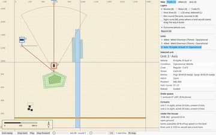
A Pz IV in ambush at the edge of a wood, its wedge to the north out to 1000 m: one Sherman comes at it inside the wedge, another from the west outside it. A moment later the second swings its gun onto it and the first stops with its gun on it, and the ambush is sprung as found. 0.60.0 Built 2026-11-28 (0.59.1): every recording written to disk is packed with gzip at its default level, the format inside unchanged: out/runs/<scenario>__<orders>__seed_<n>.jsonl.gz, a game's run.jsonl.gz from the window and from game, and the server's store. The HTTP wire still carries the text. A packed recording may unpack to at most 2 GiB (was 256 MiB), since a plain-text recording has no limit and our own runs must not be refused. Old run.jsonl files in game folders are not read; a plain .jsonl given by name still is. The duel, seed 1: 12,857 bytes packed, 1,146,718 unpacked. Keeping the whole state less often (B) is the next step, before infantry or other large scenarios.
The engine and determinism › Decision › Built › 0.59.1engine-recordings-packed
Built 2026-11-28 (0.59.1): every recording written to disk is packed with gzip at its default level, the format inside unchanged: out/runs/<scenario>__<orders>__seed_<n>.jsonl.gz, a game's run.jsonl.gz from the window and from game, and the server's store. The HTTP wire still carries the text. A packed recording may unpack to at most 2 GiB (was 256 MiB), since a plain-text recording has no limit and our own runs must not be refused. Old run.jsonl files in game folders are not read; a plain .jsonl given by name still is. The duel, seed 1: 12,857 bytes packed, 1,146,718 unpacked. Keeping the whole state less often (B) is the next step, before infantry or other large scenarios.
Question: How do recordings stay small enough for larger scenarios?
Options
✓A. Pack the file (gzip or zstd)
The same format inside, packed on disk.
Why: Chosen: cheap to build and takes away most of the size.
B. The whole state only now and then, the changes in between
Step 3 of the tick (engine-tick-length-parked).
Why: Not now: more work; when the scenarios grow.
C. Only the inputs (scenario, orders, seed, version), replayed by running again
A few kB, since the engine is deterministic.
Why: Not as the only format: it needs the exact version, as H1 does, which is why recordings carry everything themselves; perhaps an addition for sharing.
Facts
observed H1 light seed 7: the recording is 192,103,720 bytes; packed with gzip at its default level 6,562,543 bytes, 29 times smaller. out/runs/le_mesnil_patry__le_mesnil_patry__seed_7.jsonl, gzip -c | wc -c, 2026-11-21 observed The 80 runs of H1 light with Siegel behind the hedge: recordings 3.1 GB together, 38.6 MB on average, at most 194.5 MB. out/runs/le_mesnil_patry__le_mesnil_patry__seed_1..80.jsonl, 2026-11-21 observed Each line after the head holds one tick with every unit's whole state: position, route, headings, hatch, vision, cooldown, crew quality, stress, ammunition, crew. the recording's second line (tick 0) observed Reading a packed recording is built: a file starting with the gzip bytes is unpacked (flate2) and read as text; the start menu lists .jsonl and .jsonl.gz. src/recording.rs: from_bytes_within; src/main.rs: replays_in observed A packed recording may unpack to at most 256 MiB (DESIGN_CHOICE, so a small file from a friend cannot fill the memory); the comment's 'about 3 MB' for a 10-round game is from before ten ticks a second. H1 light's largest run, 194.5 MB, is under it; a scenario five times larger would be refused. src/recording.rs: MAX_UNPACKED_BYTES observed The replay reads the whole recording into memory, first as text and then as every tick's snapshot, so memory grows with the unpacked size, not the packed one. src/recording.rs: Recording (ticks: Vec<TickSnapshot>), from_bytes_within, from_jsonl DESIGN_CHOICE Estimate, not measured: with today's format the size grows with units times ticks; 150 units (a company of infantry in sections plus tanks) for 10 minutes would be about 1 GB unpacked, some 35 MB packed. scaled from H1 light seed 7 (27 units, 192 MB), 2026-11-21 observed The duel, seed 1, at 0.59.1: the recording is 12,857 bytes packed and 1,146,718 bytes unpacked, 89 times smaller. out/runs/duel__duel__seed_1.jsonl.gz, ls -l and zcat | wc -c, 2026-11-28 Code
src/recording.rs: to_gzsrc/recording.rs: MAX_UNPACKED_BYTESsrc/disk_store.rs: write_atomicsrc/main.rs: run_game
Open
- Memory in the replay grows with the unpacked size (the whole recording is held); B helps there too.
- Keeping the whole state less often (B) is the next step after this, before infantry or other large scenarios (engine-tick-length-parked, step 3).
- Step 3 of the tick (moved here from engine-tick-length-parked 2026-11-27): keep the whole state less often, the changes in between. Recordings at ten ticks a second are about ten times larger (the built-in replay 814 kB packed, 47 MB unpacked); with many units most of them change little from tick to tick. After packing, before infantry or other large scenarios.
- A binary format (faster and more compact) is a possibility after B, not before it: packed JSON is already about thirty times smaller, and a binary format packed would land near it, since gzip already takes what repeats in JSON. A binary format wins on reading speed and memory; B wins on size and memory, and works under either. Order: packed (built), then B when scenarios grow, then binary only if reading or memory still hurts.
- A reading tool (a recording shown by tick, unit or event, the same command for people and for analysis) is built together with the first format that is not one line of JSON per tick, B or binary, since then the file cannot be read line by line even unpacked. Not before: today zcat, zgrep and jq are enough.
Pictures
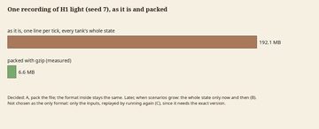
One recording of H1 light, seed 7: 192.1 MB as it is, 6.6 MB packed with gzip. 0.37.0 Built 2026-11-28 (0.59.1): a test runs two_vs_two with seeds 1 to 5 and, for both sides after every tick, checks that each enemy in the sitrep was once a contact of one of the side's own units, with the set walked from the snapshots and not from the knowledge code under test. It also checks that it is not vacuous: each side lists an enemy at some point, and at some tick has seen some but not all enemies, so a sitrep listing every enemy once the first was seen would fail.
Players and multiplayer › Decision › Built › 0.59.1players-sitrep-leak-test
Built 2026-11-28 (0.59.1): a test runs two_vs_two with seeds 1 to 5 and, for both sides after every tick, checks that each enemy in the sitrep was once a contact of one of the side's own units, with the set walked from the snapshots and not from the knowledge code under test. It also checks that it is not vacuous: each side lists an enemy at some point, and at some tick has seen some but not all enemies, so a sitrep listing every enemy once the first was seen would fail.
Question: Should a test check that every enemy in a sitrep was once a contact of an own unit?
Code
src/sitrep.rs: each_enemy_in_a_sitrep_was_once_a_contact_of_an_own_unit
Open
- The side recording (src/side_recording.rs) is the other door a side gets: its test that a never-met enemy is not there (an_enemy_the_side_never_met_is_not_there) uses one hand-made tick; a like test over a real run is not written.
Built in 0.59.0: a crew that backs out of the fight (rattled, outmatched, without a gunner) lays its smoke as before and backs straight back along its own hull, the way it came, when the enemy is in its front half (within 90 degrees of the hull front): no turn on the spot first. With the enemy behind or to the side it turns its front to him first, then backs away from him. A tank still going forward faster than it can reverse brakes first. Not a rule for every move: cover to the side is fire and manoeuvre and stays allowed for the hunt and the pinned or outmatched crew; the short halt keeps its 30 degrees. H2 over 80 runs: 3.36 Shermans lost a run and the day's result in 13 (0.58.0: 3.3 and 11).
TacAI › Decision › Built › 0.59.0cover-keeps-the-front-to-the-threat
Built in 0.59.0: a crew that backs out of the fight (rattled, outmatched, without a gunner) lays its smoke as before and backs straight back along its own hull, the way it came, when the enemy is in its front half (within 90 degrees of the hull front): no turn on the spot first. With the enemy behind or to the side it turns its front to him first, then backs away from him. A tank still going forward faster than it can reverse brakes first. Not a rule for every move: cover to the side is fire and manoeuvre and stays allowed for the hunt and the pinned or outmatched crew; the short halt keeps its 30 degrees. H2 over 80 runs: 3.36 Shermans lost a run and the day's result in 13 (0.58.0: 3.3 and 11).
Question: How does a crew back out of the fight without showing its side?
Options
✓Back straight out when the enemy is in front
No turn on the spot first with the threat in the front half; turn to him first only when he is behind or to the side.
Why: Chosen 2026-11-27 ("1. ja ... 5, ja"), after a first try with the front kept on every move to cover was dropped: it took the hunt's cover along the hedges away.
Facts
stated "Von 11 bis 1, zur Mittagsstunde, Da schlägt Dir keiner eine Wunde. Zu andern Stunden gibt's ein Loch Auch auf 3000 Meter noch." "Du, Fahrer: merkst Du, daß man schießt, Dreh schnell zum Feind das ganze Biest!" "Sicher ist Deine Front, drum kämpfe frontal! ... drehe den ganzen Wagen, bis Dein Gegner draußen ist." Pantherfibel (D 655/27, 1944), scan p. 8 (no folio printed); facts/research/fibel_2026-11-27/pantherfibel_p8-008.png stated "Die günstigsten Stellungen zum Feind liegen bei 10½, 1½, 4½ und 7½ Uhr." "Pz-Führer! Gefährlichen Feind schräg anfahren. Stellung über Eck befehlen, so daß Feind in Richtung der Mahlzeiten steht." The Tiger is angled about 45 degrees, so front and side are both sloped to the enemy. Tigerfibel (D 656/27, 1943), printed p. 85; facts/research/fibel_2026-11-27/tigerfibel_p81-81.png observed A first try (2026-11-27, not kept): the front within 30 degrees for every move to cover. H2 over 80 runs went from 3.3 Shermans lost a run and the day's result in 11 to 1.56 and 1; crest_cover Allied wins 30 to 40. Cover to the side is how the hunt fights along the hedges. out/summaries/h2_2026-11-27/h2_front_kept.jsonl against h2_short_halt_cover.jsonl; the scenario facit diff observed valley, hill_assault, crest_cover and hunt_forest (50 seeds each): backing moves with the side shown 0/2, 4/20, 2/57, 0/0; the side shown elsewhere comes from moves to cover, left as they are. H2 (80 runs): 3.36 Shermans lost a run, 6 or more in 13, Allied 72 (0.58.0: 3.3, 11, 75). side_split.py on the 0.59.0 release build; out/summaries/h2_2026-11-27/h2_back_straight.jsonl Code
src/tacai.rs: withdrawingsrc/engine.rs: backing_out
Open
- Whether a rattled crew (stress 75 and over, the level that backs out) fires a ready, laid round before it backs out (proposed: no, it backs at once; the outmatched crew smokes first by FM 17-30 fig. 44; a shaken crew is pinned and stays, and shoot first holds for it).
- How wide the front arc is per vehicle when it stands to fire (tacai-thought-angled-hull): 30 degrees is MOCK, the Pantherfibel's 11 to 1 o'clock.
- The ±90 degree split: an enemy 80 degrees off is backed from straight, with the side nearly square to him; a narrower split (e.g. 60) is one constant.
Pictures
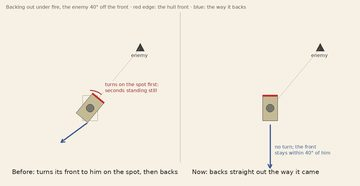
Backing out under fire with the enemy 40 degrees off the front: before, the tank turned its front to him on the spot and stood still for seconds; now it backs straight out the way it came, the front kept within 40 degrees of him. 0.59.0 Built in 0.58.0: a tank on a Move that brakes to fire looks for hull-down or concealed ground close by and stops and fires from there. The places tried are 16 bearings at 5, 10 and 15 m; one is taken only if the tank gets there within 5 s by the game's own turning and speed, and only straight toward the enemy or straight back from him, the hull front within 30 degrees of the threat. Better cover first, then the shortest trip. Nothing that qualifies: it halts where it is, as before. Not when driving Fast, not when hunting (the hunt has its own cover), only while it still moves. On its way there it does not fire; once there the short halt stands it. In valley over 50 seeds the six trips all arrived, median 4.7 s; with 15 m and no time limit 8 of 15 were knocked out on the way.
TacAI › Decision › Built › 0.58.0short-halt-in-cover
Built in 0.58.0: a tank on a Move that brakes to fire looks for hull-down or concealed ground close by and stops and fires from there. The places tried are 16 bearings at 5, 10 and 15 m; one is taken only if the tank gets there within 5 s by the game's own turning and speed, and only straight toward the enemy or straight back from him, the hull front within 30 degrees of the threat. Better cover first, then the shortest trip. Nothing that qualifies: it halts where it is, as before. Not when driving Fast, not when hunting (the hunt has its own cover), only while it still moves. On its way there it does not fire; once there the short halt stands it. In valley over 50 seeds the six trips all arrived, median 4.7 s; with 15 m and no time limit 8 of 15 were knocked out on the way.
Question: Should the short halt on a Move prefer cover close by?
Options
✓Cover close by
Hull down or concealed within a few metres, if there is one.
Why: Chosen on 2026-11-11, the recommendation. 2026-11-27: the first shot from the cover, not from where it brakes (option A), with the rings, the 5 s and the front kept.
Facts
stated "When halting to deliver accurate fire on enemy targets, he should always endeavor to halt his tank in such a position that it has hull down or is concealed." facts/manuals/FM17-10_1942.pdf, tank commander, (2)(a) During combat (printed p. 201) stated "Fire from a stationary tank is more effective than fire from a moving tank." facts/manuals/FM17-10_1942.pdf, par. 136 h(5)(a) (printed p. 204) observed valley, 50 seeds: with cover within 15 m (only the 15 m ring) and no time limit, 15 trips, 8 knocked out on the way, 3 pinned, 4 arrived, median 14.5 s; with the rings 5/10/15 m, 5 s and the front kept, 6 trips, all arrived, median 4.7 s. tankzim2000 valley --seed 1..50 --until-decided, trips counted from the Behaviour events, 2026-11-27 observed H2 (80 seeds) unchanged by it: the German tanks hunt and the Shermans have no Move, so no tank there halts on a Move. out/summaries/h2_2026-11-27/h2_short_halt_cover.jsonl against out/summaries/h2_2026-11-24/map_0.3.6/h2_holdfire_route.jsonl Code
src/tacai.rs: find_cover_short_haltsrc/tacai.rs: short_halt_trip_ssrc/tacai.rs: SHORT_HALT_RINGS_Msrc/tacai.rs: SHORT_HALT_COVER_Ssrc/tacai.rs: FRONT_KEPT_DEGsrc/engine.rs: decide
Open
- How far in time a shot is worth the delay: 5 s is MOCK.
- The front arc per vehicle (cover-keeps-the-front-to-the-threat): 30 degrees is MOCK, the Pantherfibel's 11 to 1 o'clock.
Pictures
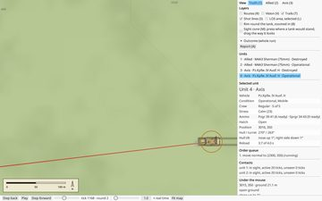
A Pz IV halting to fire on a Move backs 5 m into hull down behind it, front to the enemy, and fires from there (valley, seed 3). 0.58.0 Related
Idea · Idea · An angled hull for a flat-sided tank (the Tigerfibel's "Mahlzeit")Idea · Idea · The computer places its tanks in cover
Built in 0.57.0: a step in the order queue, { "hold_fire": 120 } in the orders file, counted down as a wait. While it is the current step the main gun fires no round; spotting, contacts, laying the turret, stress and TacAI go on as without it, and then the queue goes on. No exception for self-defence, as the war diary has C Squadron holding while the fire on it grew. Made for H2, where brigade ordered C Squadron to hold its fire, taking Siegel's tanks for friendly ones; the window shows it as "hold fire N s" but has no way to give it yet.
Orders › Decision › Built › 0.57.0orders-hold-fire-step
Built in 0.57.0: a step in the order queue, { "hold_fire": 120 } in the orders file, counted down as a wait. While it is the current step the main gun fires no round; spotting, contacts, laying the turret, stress and TacAI go on as without it, and then the queue goes on. No exception for self-defence, as the war diary has C Squadron holding while the fire on it grew. Made for H2, where brigade ordered C Squadron to hold its fire, taking Siegel's tanks for friendly ones; the window shows it as "hold fire N s" but has no way to give it yet.
Question: How does a scenario say that a squadron held its fire for a while?
Options
✓An order step, hold_fire with seconds
Like wait, and the main gun silent while it runs; no self-defence exception.
Why: Chosen 2026-11-24: an order is what C Squadron got, and a player can use it too.
Facts
stated "This information was passed on to our Bde who in turn ordered our men not to fire on them as they were friendly tanks. They ordered MAJOR AD'A MARKS "C" Sqn to hold his fire and fly his recognition flags." ... "then the CO gave "C" Sqn permission to fire" (OCR: "6" Sqn). War diary, 6th Canadian Armoured Regiment (1st Hussars), 11 Jun 44, LAC RG24-C-3 vol. 14213, microfilm T-12657, image 155 (heritage.canadiana.ca) Code
src/engine.rs: holding_fire_by_ordersrc/orders.rs: StepSpec
Open
- A way to give the order in the window.
- How long C Squadron held: the diary gives no time; 120 s is a design choice ("a couple of minutes").
Pictures

What the hold-fire order does in H2: C Squadron silent for 120 s takes the Allied losses from 0.85 to 3.3 a run, 6 or more in a quarter of the runs. 0.57.0 Built in 0.56.0-0.57.0: scenarios/le_mesnil_patry_h2.json beside H1 light. The Allied units Canadian; B Squadron's 15 in M4A2s; C Squadron's six Sherman Vs and three Fireflies (26, 28, 29); no Jagdpanzer IV. Step 2 (0.57.0), after looking at why Siegel died in seconds: C Squadron holds its fire for the first 120 s (the war diary), Siegel's first leg goes along the hedges to the orchard's southern edge instead of across the open (the source), and the map has the copses and tree rows of map 0.3.6. Over 80 seeds the Allies lose 3.3 Shermans on average, and 11 runs reach 6 or more, the day's result; the source's about 8 also counts infantry, anti-tank guns and Panzerfausts, which the engine has none of. H2 closed on 2026-11-24 with its limits: the test is the course of the day and how often the day's result comes, not the number 8.
Maps and scenarios › Decision › Built › 0.57.0maps-h2-scenario
Built in 0.56.0-0.57.0: scenarios/le_mesnil_patry_h2.json beside H1 light. The Allied units Canadian; B Squadron's 15 in M4A2s; C Squadron's six Sherman Vs and three Fireflies (26, 28, 29); no Jagdpanzer IV. Step 2 (0.57.0), after looking at why Siegel died in seconds: C Squadron holds its fire for the first 120 s (the war diary), Siegel's first leg goes along the hedges to the orchard's southern edge instead of across the open (the source), and the map has the copses and tree rows of map 0.3.6. Over 80 seeds the Allies lose 3.3 Shermans on average, and 11 runs reach 6 or more, the day's result; the source's about 8 also counts infantry, anti-tank guns and Panzerfausts, which the engine has none of. H2 closed on 2026-11-24 with its limits: the test is the course of the day and how often the day's result comes, not the number 8.
Question: How is H2's scenario built, and what does its first step hold?
Options
✓One Firefly per troop
C's nine in three troops give three Fireflies; the usual British and Canadian allotment in June 1944 (secondhand, marked so).
Why: Chosen 2026-11-24.
Only the two known Fireflies
Lieutenant Henry's (Chapman gunner) and Sergeant Boyle's.
✓The scenario and 80 runs as step 1
Then the numbers beside H1's.
Why: Chosen 2026-11-24.
Facts
observed H2, 80 seeds until decided (0.56.0 engine as 0.55.2): Allied 77, undecided 3; Pz IV out 3 in 77 runs, 2 in 3; Shermans out mean 1.31 (0: 27, 1: 33, 2: 10, 3: 5, 4: 2, 5: 1, 12: 2); decided at tick 470 on average (47 s). tankzim2000 scenarios/le_mesnil_patry_h2.json --seeds 1..80 --until-decided; losses counted per seed from the Destroyed events; out/summaries/h2_2026-11-24/ observed H1 light on the same engine, 80 seeds: Allied 79, undecided 1; Pz IV out 3 in 79; Shermans out mean 1.06 (0: 30, 1: 36, 2: 6, 3: 6, 4: 1, 15: 1); decided at tick 341 on average. On 0.37.0 the same file gave Shermans out mean 2.55. tankzim2000 scenarios/le_mesnil_patry.json --seeds 1..80 --until-decided; out/summaries/h2_2026-11-24/ secondhand Within a good minute four or five Shermans were on fire. Steel Chariots, Le Mesnil-Patry (losthistory.net), as in orders-h1-light-scenario secondhand "The three German tanks approached the southern edge of the orchard and here Siegel encountered Harrison." Jeran: "The enemy was still obscured by a hedge. When the hedge ended abruptly and the lead panzer fortuitously found himself among our infantry, several Shermans could be seen in dangerous proximity...Enemy tanks on the left at 9 o'clock - 200 - engage!....Within a good minute four or five Shermans were on fire." Steel Chariots, Le Mesnil-Patry part III-A (losthistory.net/steelchariots/le-m-p3.htm) observed Map 0.3.6, 80 seeds each, Shermans out mean (6 or more): H1 light 0.61 (0); H2 0.85 (0); H2 with C Squadron holding fire 120 s 3.29 (22); with the hold and Siegel's route along the hedges 3.30 (11), Siegel's tanks then knocked out by the wheat 148, C Squadron 46, the orchard 37; on map 0.3.5 Siegel's tanks died in about 10 s, on 0.3.6 in about 40 s without the hold. tankzim2000 --seed 1..80 --until-decided per variant, losses from the Destroyed events; out/summaries/h2_2026-11-24/map_0.3.6/ Code
src/files.rs: play_scenarios
Open
- How long C Squadron held its fire: 120 s is a design choice.
- No infantry, anti-tank guns or Panzerfausts: much of B Squadron's loss came from them.
- Which of B's placed tanks were HQ and which troops.
Map version 0.3.6
0.3.62026-11-24 moar forest 0.3.52026-11-24 d1 0.3.42026-11-24 drafts done 0.3.32026-11-24 moar field 0.3.22026-11-24 moaaaar fields 0.3.12026-11-24 some moar fields 0.3.02026-11-21 The first ground shape (GB3): the earth bank under a hedge east of the village, 0.55 m high and 5.5 m wide, measured from LiDAR HD. 0.2.72026-11-16 all_field_drafts accepted 0.2.62026-11-16 fields saved 0.2.52026-11-15 Bank review (2026-11-15): 23 of the 55 bank drafts accepted as steep banks beside the roads; two hedges marked on a bank where LiDAR HD shows one (draft1947-137, bdtopo-HAIELINE0000002229417559), in place of 9 short drafts along them; 14 drafts left out as already covered by a hedge on a bank, 9 as later or too weak. 0.2.42026-11-14 moar hedges 0.2.32026-11-14 hedges 0.2.22026-11-14 hedges 0.2.12026-11-14 hedges fixes 0.2.02026-11-14 The height layer: IGN's LiDAR HD ground model averaged into 10 m cells (elevation.asc, 63-94 m), today's bare ground without trees and buildings (tools/map/fetch.py). 0.1.02026-11-14 The first whole map, from the editor's proposals (tools/map/proposals.py): today's roads, hedges, woods, the railway and the buildings with a roof on the 1947 air photograph from IGN's BD TOPO, judged against that photograph; the first hedges and orchards traced by hand. No heights yet. Pictures
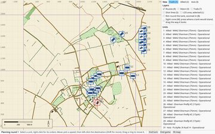
H2 at the start: B Squadron's 15 M4A2s in and east of the village, C Squadron's six Sherman Vs and three Fireflies at the east edge, Siegel's three Pz IV H behind the hedge east of the orchard. 0.56.0 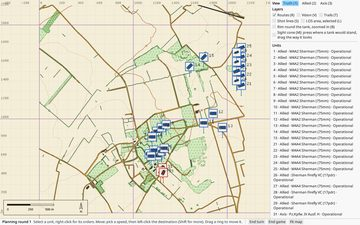
H2 on map 0.3.6, with the copses and tree rows added between the wheat, C Squadron and Siegel's route. 0.57.0 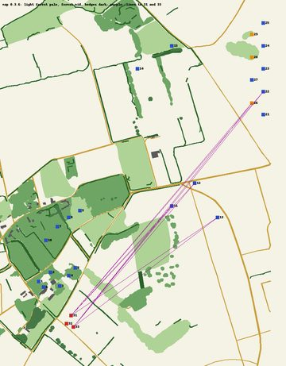
The ground round Siegel's start on map 0.3.6, drawn from the map file: hedges dark, woods mid, light woods pale; the purple lines run from the wheat and from C Squadron to Siegel's tanks 31 and 33. 0.57.0 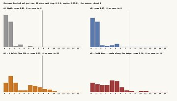
Shermans knocked out per run, 80 runs each on map 0.3.6 and engine 0.57.0: H1 light, H2, H2 with C Squadron holding fire 120 s, and with the hold and Siegel's route along the hedges; the line is the source's about 8. 0.57.0 Built in 0.56.0: vehicles/sherman_iii_m4a2_75mm.toml, started as a copy of the Sherman V. From TM 9-731B (13 January 1943, archive.org), read by eye on the page images: 65,476 lb fully equipped (29.7 t), twin General Motors 6-71 diesels of 375 hp together, 25 mph sustained (30 for short periods), five forward gears, 60 per cent grade, 19 ft 5 7/16 in long (the standard hull, not the M4A4's longer rear), 8 ft 7 in wide, 8 ft 11 3/4 in to the turret top, 97 rounds of 75 mm (50 % HE, 40 % AP, 10 % WP), armour hull 2/1.5/1.5/0.75 in and turret 3/2/2/1 in; the glacis 51 mm at 56 degrees from Bird & Livingston's early welded hull row, which names the M4A2; built 1942-04 to 1944-05 (C&E p. 116). Its top view is the M4A3's standard hull with the Sherman V's three-piece bolted nose; on the testing grounds as unit 7.
The engine and determinism › Decision › Built › 0.56.0engine-vehicle-sherman-iii
Built in 0.56.0: vehicles/sherman_iii_m4a2_75mm.toml, started as a copy of the Sherman V. From TM 9-731B (13 January 1943, archive.org), read by eye on the page images: 65,476 lb fully equipped (29.7 t), twin General Motors 6-71 diesels of 375 hp together, 25 mph sustained (30 for short periods), five forward gears, 60 per cent grade, 19 ft 5 7/16 in long (the standard hull, not the M4A4's longer rear), 8 ft 7 in wide, 8 ft 11 3/4 in to the turret top, 97 rounds of 75 mm (50 % HE, 40 % AP, 10 % WP), armour hull 2/1.5/1.5/0.75 in and turret 3/2/2/1 in; the glacis 51 mm at 56 degrees from Bird & Livingston's early welded hull row, which names the M4A2; built 1942-04 to 1944-05 (C&E p. 116). Its top view is the M4A3's standard hull with the Sherman V's three-piece bolted nose; on the testing grounds as unit 7.
Question: B Squadron drove M4A2s, and there is no M4A2 file: a new vehicle first, or the Sherman V standing in?
Options
✓A new vehicle M4A2 first
The vehicle file from the sources, the top view, the testing grounds, shown first; then the scenario.
Why: Chosen 2026-11-24: H2 should not be compared on a vehicle known to be wrong.
The Sherman V standing in
B in Sherman Vs marked as a stand-in; the M4A2 later.
Code
vehicles/sherman_iii_m4a2_75mm.toml: mass_tvehicles/sherman_iii_m4a2_75mm.toml: engine_kwsrc/topview.rs: SHIPPED
Open
- 68 values still copied from the Sherman V (the nose's angles, the floor, the smoke, the MOCK figures): the work list.
- TM 9-731B prints the track shoe width as 12 1/16 in., which does not fit its own ground contact (about 16.4 in. per track); 16 in. kept.
- The engine deck is the M4A3's, not drawn from an M4A2; the twin-diesel deck to be checked against a drawing or photograph (being looked for offline).
- The 25 mm applique at the ammunition racks (B&L; Dodds: "armour plating on some of the ammo racks") is not modelled: one plate per zone.
- Which nose the 1st Hussars' M4A2s had in June 1944 (three-piece bolted or one-piece cast) is not known; bolted is the file's choice.
Pictures
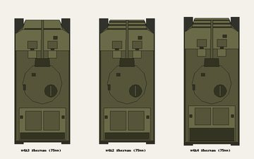
The top views side by side: the M4A3, the M4A2 (the standard hull with the Sherman V's three-piece bolted nose) and the M4A4 with its longer rear. 0.56.0 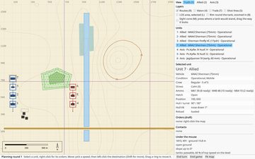
The M4A2 as unit 7 on the testing grounds, selected: 97 rounds, 39 M61, 48 M48, 10 M64. 0.56.0 Built in 0.55.2: an outmatched crew advancing under a Fast order lays no smoke and keeps its order; a stuck crew and a crew that withdraws or moves on to cover still lay toward the threat. Before, the screen stood 60 m toward the threat and the tank drove into it, blind for about ten seconds. The manuals forbid smoke where one's own tanks must pass, and place it so the wind carries it between the enemy and the tank; without wind in the engine there is no such place, so none is laid. Taken up again when the engine has wind.
TacAI › Decision › Built › 0.55.2tacai-thought-smoke-while-advancing
Built in 0.55.2: an outmatched crew advancing under a Fast order lays no smoke and keeps its order; a stuck crew and a crew that withdraws or moves on to cover still lay toward the threat. Before, the screen stood 60 m toward the threat and the tank drove into it, blind for about ten seconds. The manuals forbid smoke where one's own tanks must pass, and place it so the wind carries it between the enemy and the tank; without wind in the engine there is no such place, so none is laid. Taken up again when the engine has wind.
Question: When a tank under a Fast order is outmatched and lays smoke while it drives on, where should the screen stand?
Facts
stated "Partial loss of control and disorganization may result from tanks passing through smoke. It must not be placed on tank objectives or on areas where tanks will be requited [required] to pass in the assault unless the wind conditions are such that it will be dissipated before the arrival of the tanks." FM 17-10 (7 March 1942), par. 46 o (2), facts/manuals/FM17-10_1942.pdf stated "When firing smoke for screening purposes, the burst must be placed so that the wind carries the smoke between the enemy and the tank." FM 17-12, par. 52 (4), facts/manuals/FM17-12.pdf Code
src/tacai.rs: smoke_when_withdrawingsrc/tacai.rs: driving_fast
Open
- Smoke while advancing again when there is wind (shot: wind-and-drift; crew: crew-thought-weather): between the enemy and the tank, off the line of advance.
Pictures
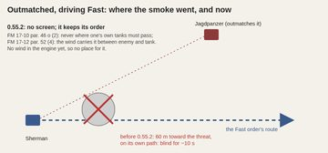
A sketch: an outmatched tank on a Fast order laid its screen 60 m toward the threat on its own path and drove blind through it; from 0.55.2 it lays none and keeps its order, until the engine has wind. 0.55.2 Built in 0.55.1: the PNG export (--png) draws the tanks as the window does at the image's scale, the vehicle from above in its own paint with the badge over it when it is too small to see. The choice of look by zoom (look_at) moved from the window into the library, so both ask the same place. Before, the export drew the old triangles (UnitLook::Symbol); the map sheet keeps its own symbols.
The window and replay › Decision › Built › 0.55.1gui-thought-png-export-old-triangles
Built in 0.55.1: the PNG export (--png) draws the tanks as the window does at the image's scale, the vehicle from above in its own paint with the badge over it when it is too small to see. The choice of look by zoom (look_at) moved from the window into the library, so both ask the same place. Before, the export drew the old triangles (UnitLook::Symbol); the map sheet keeps its own symbols.
Code
src/draw.rs: look_atsrc/draw.rs: BADGE_PXsrc/main.rs: png_optionssrc/main.rs: write_pngs
Pictures
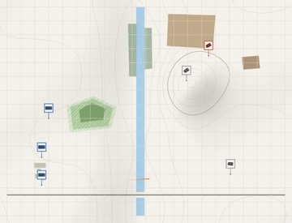
hill_assault at tick 300 from --png: every tank from above in its own paint, with the badge over it, as the window draws it zoomed out (before 0.55.1 they were triangles). 0.55.1 ./editor.sh in the repository's root starts the map editor (tools/map/trace.py) on 127.0.0.1, waits until it answers and opens it in the web browser; Ctrl+C stops it. Without a name it takes the only map under maps/, or lists them when there are several; a taken port is reported with the next one to try.
Maps and scenarios › Decision › Built › 0.55.1maps-editor-script
./editor.sh in the repository's root starts the map editor (tools/map/trace.py) on 127.0.0.1, waits until it answers and opens it in the web browser; Ctrl+C stops it. Without a name it takes the only map under maps/, or lists them when there are several; a taken port is reported with the next one to try.
Question: How is the map editor started on one's own machine?
Options
✓A script that starts the server and opens the browser
editor.sh, with the map and the port as optional arguments.
Why: Chosen 2026-11-24; it worked on the first try on real hardware.
Code
tools/map/trace.py: main
Pictures
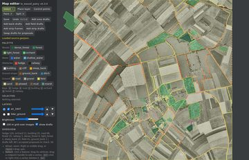
The map editor as ./editor.sh opens it: Le Mesnil-Patry 0.3.0 over the 1947 air photograph, the palette and the layers on the left. 0.55.1 Decided 2026-11-22, not built: before H2, smoke as each vehicle carried it (the Sherman's M64 WP round is already in its load; smoke mortars and grenade launchers by vehicle and series, from the sources), laid by a crew that withdraws. Smoke must hide sight in the spotting and line-of-sight rules. Milestone GB12. Decided 2026-11-23: first the means a crew screens itself with (turret dischargers, the roof mortar, the Nahverteidigungswaffe); smoke rounds from the gun come with more round types after GB12 (FM 17-30: smoke shell "is not effective when fired by a single tank"). Decided 2026-11-23: the cloud stops sight like dense forest when the line runs deep enough through it, no new rule; the Sherman V and Firefly get Chamberlain & Ellis's general British fit (4-inch dischargers on the turret, the 2-inch mortar), marked secondhand; the early M4A3 gets the 2-inch mortar as a retrofit, a reading; a crew lays smoke once per withdrawal, between itself and the threat it knows, while it has smoke left. Built in steps: a) the means in the vehicle files, b) the cloud stops sight, c) the crew lays it, d) the window draws it. Step a built in 0.51.0: every vehicle file lists its smoke means ([[smoke]]: name, kind, charges carried, charges per screen, distance toward the threat) or says no_smoke with a source; the Pz IV H has none (Panzer Tracts pp. 4-44, 4-50). Decided for step b 2026-11-23: smoke is a terrain kind with a sight depth of 10 m (MOCK, denser than dense forest's 25 m), in the map's features while the cloud lasts; it stops the gunner's aim as well, as forest does. Step b built in 0.52.0: a cloud (TerrainKind::Smoke, 32-corner circle) stands in the map's features while it lasts; the engine uses a map with the standing clouds, rebuilt when the set changes; a scenario may lay clouds by hand. TacAI's cover search sees a cloud as hiding, as it should. Decided for step c 2026-11-23: a crew lays smoke when it starts to withdraw, rattled or without a gunner, only if it knows a threat; the dischargers first, the other means on later withdrawals; the first fit crew member lays it and it takes no time (MOCK). Step c built in 0.53.0: a crew that starts to withdraw (rattled or without a gunner) and knows the threat lays one screen toward it, dischargers first; an event SmokeLaid in the recording and the account. It changes the outcomes little: in 50 runs of valley about 18 withdrawals, 5 smoke screens (all M4A3 mortars; the Pz IV H has none), valley 37-13 to 39-10. TM 9-759 (1944) p. 385 gives the mortar's use as "to lay a smoke screen while the tank is advancing", and FM 17-10 and FM 17-30 give smoke to blind a weapon one cannot beat and move: step c2. Step c2 built in 0.54.0: a crew clearly outmatched by a seen enemy lays smoke toward it and moves on (cover, else withdraw with the cause outmatched); a tank driving Fast only lays the smoke (TM 9-759: while advancing), an immobile one too. Outmatched = he is a real threat (through us within 60 s), he goes through us when he hits (50 % or more, MOCK) and we almost never go through him when we hit (under 10 %, MOCK); the penetration if hit is reckoned with the target standing, so a moving target is no reason. At most one such move per 120 s (MOCK), no new smoke while its cloud stands. Three earlier forms were tried and dropped: slower than him (every even duel became a withdrawal, duel 26-23 to 50-0), a real threat to us and none to him (a knife edge at 60 s), at least twice his time (a defender left its hill because a moving Sherman was hard to hit). Even duels are unchanged; in hill_assault a Pz IV H on the hill moves when the Sherman shows only plates it barely goes through at 1,350 m. Decided for step d 2026-11-23: both sides always see a cloud; it is drawn dense and white-grey with a thin edge at its 15 m, fainter and growing in its first 5 s, full until it is gone at 120 s, no thinning the engine does not have. Step d built in 0.55.0: the window draws each cloud as a dense white-grey disc with a thin edge at 15 m, smaller and with a dashed edge while it builds; both sides see every cloud, never who laid it; recordings carry the scenario's clouds; the sight ruler and the LOS layer are cut by standing clouds. GB12 done.
The engine and determinism › Decision › Built › 0.55.0engine-smoke-when-withdrawing
Decided 2026-11-22, not built: before H2, smoke as each vehicle carried it (the Sherman's M64 WP round is already in its load; smoke mortars and grenade launchers by vehicle and series, from the sources), laid by a crew that withdraws. Smoke must hide sight in the spotting and line-of-sight rules. Milestone GB12. Decided 2026-11-23: first the means a crew screens itself with (turret dischargers, the roof mortar, the Nahverteidigungswaffe); smoke rounds from the gun come with more round types after GB12 (FM 17-30: smoke shell "is not effective when fired by a single tank"). Decided 2026-11-23: the cloud stops sight like dense forest when the line runs deep enough through it, no new rule; the Sherman V and Firefly get Chamberlain & Ellis's general British fit (4-inch dischargers on the turret, the 2-inch mortar), marked secondhand; the early M4A3 gets the 2-inch mortar as a retrofit, a reading; a crew lays smoke once per withdrawal, between itself and the threat it knows, while it has smoke left. Built in steps: a) the means in the vehicle files, b) the cloud stops sight, c) the crew lays it, d) the window draws it. Step a built in 0.51.0: every vehicle file lists its smoke means ([[smoke]]: name, kind, charges carried, charges per screen, distance toward the threat) or says no_smoke with a source; the Pz IV H has none (Panzer Tracts pp. 4-44, 4-50). Decided for step b 2026-11-23: smoke is a terrain kind with a sight depth of 10 m (MOCK, denser than dense forest's 25 m), in the map's features while the cloud lasts; it stops the gunner's aim as well, as forest does. Step b built in 0.52.0: a cloud (TerrainKind::Smoke, 32-corner circle) stands in the map's features while it lasts; the engine uses a map with the standing clouds, rebuilt when the set changes; a scenario may lay clouds by hand. TacAI's cover search sees a cloud as hiding, as it should. Decided for step c 2026-11-23: a crew lays smoke when it starts to withdraw, rattled or without a gunner, only if it knows a threat; the dischargers first, the other means on later withdrawals; the first fit crew member lays it and it takes no time (MOCK). Step c built in 0.53.0: a crew that starts to withdraw (rattled or without a gunner) and knows the threat lays one screen toward it, dischargers first; an event SmokeLaid in the recording and the account. It changes the outcomes little: in 50 runs of valley about 18 withdrawals, 5 smoke screens (all M4A3 mortars; the Pz IV H has none), valley 37-13 to 39-10. TM 9-759 (1944) p. 385 gives the mortar's use as "to lay a smoke screen while the tank is advancing", and FM 17-10 and FM 17-30 give smoke to blind a weapon one cannot beat and move: step c2. Step c2 built in 0.54.0: a crew clearly outmatched by a seen enemy lays smoke toward it and moves on (cover, else withdraw with the cause outmatched); a tank driving Fast only lays the smoke (TM 9-759: while advancing), an immobile one too. Outmatched = he is a real threat (through us within 60 s), he goes through us when he hits (50 % or more, MOCK) and we almost never go through him when we hit (under 10 %, MOCK); the penetration if hit is reckoned with the target standing, so a moving target is no reason. At most one such move per 120 s (MOCK), no new smoke while its cloud stands. Three earlier forms were tried and dropped: slower than him (every even duel became a withdrawal, duel 26-23 to 50-0), a real threat to us and none to him (a knife edge at 60 s), at least twice his time (a defender left its hill because a moving Sherman was hard to hit). Even duels are unchanged; in hill_assault a Pz IV H on the hill moves when the Sherman shows only plates it barely goes through at 1,350 m. Decided for step d 2026-11-23: both sides always see a cloud; it is drawn dense and white-grey with a thin edge at its 15 m, fainter and growing in its first 5 s, full until it is gone at 120 s, no thinning the engine does not have. Step d built in 0.55.0: the window draws each cloud as a dense white-grey disc with a thin edge at 15 m, smaller and with a dashed edge while it builds; both sides see every cloud, never who laid it; recordings carry the scenario's clouds; the sight ruler and the LOS layer are cut by standing clouds. GB12 done.
Question: Which smoke, and when is it used?
Options
✓What each vehicle had, used when the crew withdraws
Why: Chosen 2026-11-22.
Facts
observed The M4A3 file loads 10 M64 WP (smoke) rounds of 97 (TM 9-731B figure 8A, 10 %). vehicles/sherman_m4a3_75mm.toml: load stated Jagdpanzer IV: secondary armament "Nahverteidigungswaffe"; ammunition "6 - Nebelkerzen and 10 - 2.6 cm Spgr." No smoke round for the 7.5 cm gun is listed. Panzer Tracts No. 9 (Jentz & Doyle) p. 9-16, data sheet stated Pz IV Ausf G: among the changes in production, "mounting smoke candle dischargers on the turret sides (dropped in May)", that is May 1943; production ran from March 1942 to June 1943. Panzer Tracts No. 4 p. 4-44 stated Pz IV Ausf H: no smoke dischargers among its changes; "bolting a cover over the Nahverteidigungswaffe hole in the turret roof in January 1944". Panzer Tracts No. 4 p. 4-50 stated Pz IV Ausf G and H ammunition: "87 - 7.5 cm Pzgr.39, Pzgr.40, Sprgr., and Nebel-Gr."; the split is not given. Panzer Tracts No. 4 pp. 4-48, 4-49 MOCK The cloud for step b, proposed and accepted with step a: a circle on the ground 15 m in radius and 8 m high, between the tank and the threat (dischargers 25 m out, the mortar 60 m, the Nahverteidigungswaffe 15 m), stopping sight 5 s after it is laid and gone after 120 s, no wind. M89 smoke shell burns about 3 minutes (FM 17-30); the rest has no source. design for GB12 step b, 2026-11-23 stated "Smoke is employed to screen troop movements from hostile observation, to reduce the effectiveness of hostile fire, to protect a flank exposed to enfilade fire, and-to blind anti-tank guns and machine gun nests. In defense it is employed to blind hostile observation, cover a withdrawal ..." FM 17-10 (1942), the paragraph on smoke (facts/manuals/FM17-10_1942.pdf) stated "Blind the antitank gun Immediately with smoke shell, proceed to the next position, and from there destroy the antitank gun with explosive shell." (Figure 44, Use of smoke shell to cover maneuver) FM 17-30 (1942), figure 44 (facts/manuals/FM17-30_1942.pdf) stated "The 2-inch mortar is used to lay a smoke screen while the tank is advancing." TM 9-759 (1944) p. 385, par. 166 Code
src/models.rs: SmokeMeanssrc/vehicle_file.rs: SmokeFilesrc/terrain.rs: SmokeCloudsrc/tacai.rs: smoke_when_withdrawingsrc/tacai.rs: outmatchingsrc/rules.rs: penetration_if_hitsrc/draw.rs: cloud_items
Open
- Which vehicles had which smoke means in June 1944 (Sherman 2-inch smoke mortar, Pz IV NbK 39 dischargers by series): from the sources. Found 2026-11-23 for the Jagdpanzer IV (Panzer Tracts); the other five researched the same day, mostly secondhand (the reports in facts/research/smoke_2026-11-23/, local, to be entered as facts).
- British fittings follow the user, not the maker: what smoke means the Sherman V and the Firefly had in British and Canadian service in June 1944 (the 2-inch bomb thrower in the turret, and whether anything more), which may differ from an American M4A4.
- When the TacAI lays smoke: withdrawing, and perhaps more.
- Whether the Pz IV H's crew carried hand-thrown smoke candles (a Nebelhandgranate 39 is described in Tactical and Technical Trends as burning 4-7 minutes); a stowage list in Panzer Tracts would settle it.
Pictures
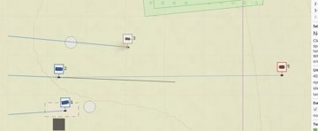
Two smoke clouds in the window: one laid by tank 1 toward the enemy on the right, one left behind by tank 3, which laid it while driving on under a Fast order and then drove through it (an open question: where such smoke should stand). 0.55.0 Built 2026-11-24 on the site, as phases rather than releases: the road at the top of the main page has one point per phase, P1 to P3 behind (the first engine; the game around it; the road to H2) and P4 to P6 ahead (Le Mesnil-Patry playable and defensible; the window and the command; crews that act on what they believe), each ahead with its goal, its milestones and the items they name. A release is only a build handed out to friends (a v tag), shown on the phase it was made in; no phase is ever 'done as a release'. The build versions keep their numbering, and the H milestones stay as the conditions of a phase: H2 is P4's.
The engine and determinism › Decision › Built › 0.55.0t-engine-thought-releases-as-goals
Built 2026-11-24 on the site, as phases rather than releases: the road at the top of the main page has one point per phase, P1 to P3 behind (the first engine; the game around it; the road to H2) and P4 to P6 ahead (Le Mesnil-Patry playable and defensible; the window and the command; crews that act on what they believe), each ahead with its goal, its milestones and the items they name. A release is only a build handed out to friends (a v tag), shown on the phase it was made in; no phase is ever 'done as a release'. The build versions keep their numbering, and the H milestones stay as the conditions of a phase: H2 is P4's.
Code
tools/site/build.py: render_roadtools/site/build.py: load_phases
Pictures
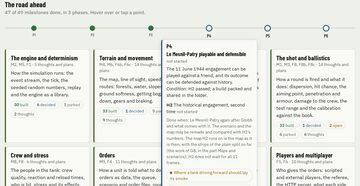
The road ahead: P1 to P3 done, then P4 to P6; P4's card shows its goal, H2 and the items H2 names. 0.55.0 docs/fronts.html shows every map under its front, with what is left to do on it first and what is built folded below; what holds for every map stands under All maps. The front is written in the map's map.json, and an item joins its map with the field map. The milestones stay on the road; the map work does not clutter it.
The project site › Decision › Built › 0.55.0site-fronts-and-maps
docs/fronts.html shows every map under its front, with what is left to do on it first and what is built folded below; what holds for every map stands under All maps. The front is written in the map's map.json, and an item joins its map with the field map. The milestones stay on the road; the map work does not clutter it.
Question: Where does the work on a single map stand, so that it does not clutter the milestones?
Options
✓A page of its own: front, map, the map's to-do
Built from maps/*/map.json and the items' map field.
Why: Chosen 2026-11-24.
Code
tools/site/build.py: render_frontstools/site/build.py: fronts_errorstools/site/build.py: map_folders
Pictures
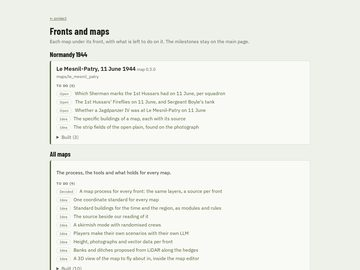
The fronts and maps page: Le Mesnil-Patry under Normandy 1944 with its five to-dos, and what holds for every map below. 0.55.0 Built in 0.50.0. Each round carries a factor, how many times its penetration against rolled plate it achieves against face-hardened plate (FM 17-12: the M61 1.19 ± 0.06; B&L p. 60: the 17-pounder's APCBC 1.07, its AP 0.82; the M72 0.82 taken over from the 17-pounder's AP as uncapped AP; the German rounds unknown, read as rolled), and face-hardened plate counts as rolled divided by it. The Pz IV G's and H's plates that Panzer Tracts stars are face-hardened: nose, driver's plate, turret front, turret sides, hull sides. It makes the H's front weaker against the M61, as B&L p. 22 says: the book test gives 176 m homogeneous and 1,086 m face-hardened against B&L's 150 and 940 m. With Panzer Tracts' plates in the same step, the M4A3's penetrations of the H's front at 500 m went from 35.5 to 64 % and the Sherman-Pz IV duels came out about even (duel 26-23, two_vs_two 26-24).
The shot and ballistics › Decision › Built › 0.50.0face-hardened-plate
Built in 0.50.0. Each round carries a factor, how many times its penetration against rolled plate it achieves against face-hardened plate (FM 17-12: the M61 1.19 ± 0.06; B&L p. 60: the 17-pounder's APCBC 1.07, its AP 0.82; the M72 0.82 taken over from the 17-pounder's AP as uncapped AP; the German rounds unknown, read as rolled), and face-hardened plate counts as rolled divided by it. The Pz IV G's and H's plates that Panzer Tracts stars are face-hardened: nose, driver's plate, turret front, turret sides, hull sides. It makes the H's front weaker against the M61, as B&L p. 22 says: the book test gives 176 m homogeneous and 1,086 m face-hardened against B&L's 150 and 940 m. With Panzer Tracts' plates in the same step, the M4A3's penetrations of the H's front at 500 m went from 35.5 to 64 % and the Sherman-Pz IV duels came out about even (duel 26-23, two_vs_two 26-24).
Question: How does face-hardened plate count against a round?
Options
✓FH per B&L p. 66, built later
Mark the plates and build the FH rule, the M61 from FM 17-12.
Why: Chosen on 2026-11-11, the recommendation.
Facts
stated British APCBC about 7 % more against face-hardened than against rolled plate; AP without cap about 20 % less. B&L p. 60 stated B&L's armour table, Pz IV H column: face-hardened (fh) mantlet 50, turret front 50 @ 10, driver plate 85 @ 10, upper nose 85 @ 14, lower nose 30 @ 64, upper and lower hull side 30 @ 0; homogeneous glacis 20 @ 72, turret side 30, rear plates. Note: "PzKpfw IVH has 30fh/50fh prior to 6/43". facts/World War II Ballistics_ Armor and Gunnery.pdf (B&L) p. 66 (facts/ocr/bl/pg-125.txt, checked on the page image) stated "If the PZKpfw IVH driver plate were homogeneous plate, the 85mm at 10° armor would limit Sherman 75mm penetration to 150m, whereas face-hardened armor could be penetrated at 940m." facts/World War II Ballistics_ Armor and Gunnery.pdf (B&L) p. 22 (facts/ocr/bl/pg-049.txt) stated "all German tanks were to carry face-hardened armor on hull front and side plates in the 30-50mm range, although thicker plates were face-hardened on Panther and PzKpfw IVH." facts/World War II Ballistics_ Armor and Gunnery.pdf (B&L) p. 22 (facts/ocr/bl/pg-049.txt) observed Read from FM 17-12's two charts (Penetration-Face Hardened Armor, Penetration-Homogeneous Armor Plate), 75 mm M3, APC M61, 2 030 f/s, about ±0.1 in: face-hardened 3.45 / 2.85 / 2.35 in, homogeneous 2.90 / 2.40 / 1.90 in at 0 / 1 000 / 2 000 yd, so 1.19 / 1.19 / 1.24 times more against FH. The homogeneous figures are about 0.8 of our 0° table, so the charts are probably at 30° (not stated). The 37 mm M51 goes the other way (about 2.35 against 2.6 in at 0 yd). FM 17-12 (July 1944) charts as reprinted on lonesentry.com/blog/armor-penetration-tables.html, read 2026-11-11 stated 17 Pdr APCBC 174/170/163 mm against rolled and 187/182/175 against face-hardened (1.07); 17 Pdr AP 200/190/175 against 164/156/144 (0.82). B&L p. 60 (facts/ocr/bl/pg-114.txt) stated Panzer Tracts' armour specifications mark "* Face Hardened Plates": on the Ausf H the nose *80/12, driver's plate *80/9, turret front *50/10, mantlet, turret sides *30/25, superstructure and hull sides *30/0; the same places on the Ausf G (with the 30+50 front). Panzer Tracts No. 4 pp. 4-48 and 4-49 Code
src/rules.rs: material_factorsrc/models.rs: Shellguns/m3_75mm.toml: face_hardened_factor
Open
- B&L's 940 m against our 1,086 m: FM 17-12's 1.19 against the 1.155 B&L's own figures give; both inside the reading's uncertainty.
- The German rounds against face-hardened plate (Pz IV against Pz IV) are read as rolled until a source.
- Whether FM 17-12's charts are at 30° (the ratio is used, not the millimetres).
Related
Question · Open · Spare track links on the front as added protectionQuestion · Open · Two plates in contact: the Pz IV G's 30 + 50 mm front
Built in 0.50.0 from Panzer Tracts No. 4: 20 mm at 72° on the Ausf G and 20 at 70° on the Ausf H (p. 4-48, 4-49), homogeneous, between the nose plate and the driver's plate, from 1.04 / 1.02 m to 1.31 / 1.27 m above the ground as measured on the scale drawings' front views (pp. 4-45, 4-51, ±0.05 m). Below the nose the lower nose plate, 30 at 61° / 60°, came in too. The M61 nearly always goes through the cover (about 64 mm effective by B&L's slope effect), so it is a weak band on the front; the spare track links carried over it are an open question (shot-thought-spare-track-links).
The shot and ballistics › Decision › Built › 0.50.0pz-iv-steering-brake-cover
Built in 0.50.0 from Panzer Tracts No. 4: 20 mm at 72° on the Ausf G and 20 at 70° on the Ausf H (p. 4-48, 4-49), homogeneous, between the nose plate and the driver's plate, from 1.04 / 1.02 m to 1.31 / 1.27 m above the ground as measured on the scale drawings' front views (pp. 4-45, 4-51, ±0.05 m). Below the nose the lower nose plate, 30 at 61° / 60°, came in too. The M61 nearly always goes through the cover (about 64 mm effective by B&L's slope effect), so it is a weak band on the front; the spare track links carried over it are an open question (shot-thought-spare-track-links).
Question: Is the cover over the steering brakes a plate to add to the Panzer IV's armour?
Options
✓Add the plate with its height from a drawing
Why: Chosen 2026-11-23: Panzer Tracts gave thickness, angle and the drawings the height.
Facts
secondhand About 20 mm at 72 degrees between the nose and the driver's plate; seen from the front, a band of a few cm. SESSION.md, Öppna punkter: Pz IV:s lock över styrbromsarna (source Panzer Tracts) stated B&L's armour table: "Glacis 20@72 25 @73 25 @73", the first column the Pz IV H (inferred: it holds "Driver Plate 85fh"); no fh mark on the glacis. facts/World War II Ballistics_ Armor and Gunnery.pdf (B&L) p. 66 (facts/ocr/bl/pg-125.txt) secondhand "For the lower hull, the upper glacis armor plate thickness was 20 mm at a 72° angle, and the lower front glacis was 30 mm placed at a 14° angle." (Ausf D) tanks-encyclopedia.com, Panzer IV Ausf D stated "Front nose plate . . . 60 mm. Front glacis plate . . . 25 mm. Driver's front plate . . . 60 mm." For the Model G, no angles; the Model H is said to differ only in the gun's length. The 60 mm front is an early G, so the table was not brought up to the H. TM-E 30-451, Handbook on German Military Forces (US War Department, March 1945), ch. VII sec. VI para 3a, read at lonesentry.com/manuals/tme30/ch7sec6sub3.html secondhand "20 mm at a 72° angle" for the upper glacis of the Ausf D (Tank Encyclopedia, citing Panzer Tracts 4 in general, not for this figure), and "20 mm at 72 degrees" in a 2007 Wikipedia talk-page post from a CompuServe spec page. No source for the Ausf H, the angle convention not stated. tanks-encyclopedia.com/ww2/germany/panzer_iv_ausfd/; en.wikipedia.org/wiki/Talk:Panzer_IV/Archive_1 Code
vehicles/panzer_iv_h.toml: armorvehicles/panzer_iv_g.toml: armor
Open
- The brake hatches' own thickness.
- The spare track links over the cover (shot-thought-spare-track-links).
Built in 0.49.0. Before, the engine knew only the USA and Germany, so the Sherman V and the Firefly, British tanks in Canadian hands at Le Mesnil-Patry, showed as American (today only the colour of the crew who bail out, the mark on the top view that no model now has, and the codex text). Decided 2026-11-23: the nation belongs to the crew and the formation, not the steel: each unit in a scenario names its nation, required, with no default from the vehicle; British and Canadian are two nations; the vehicle file describes the vehicle as fitted in its user's service (the Sherman V and the Firefly are British and Commonwealth forms, an American M4A4 would be a file of its own). The vehicle file's nation becomes users, the nations that drove this form (the Sherman V: British, Canadian); a scenario that puts a crew in a vehicle without its nation in the list gets a warning, not a refusal, since captured vehicles were used. Both wear British khaki (MOCK); the map's colours keep following the side. Milestone GB11. Named GB11: GB9 was taken and GB10 is the Jagdpanzer IV. The Le Mesnil-Patry scenarios still use the M4A3 with US crews; they become Canadian Sherman Vs when the scenario is remade for H2. Recordings went from version 5 to 7 (6 to 8 with drawn banks); older ones are refused.
The engine and determinism › Decision › Built › 0.49.0engine-nations-british-canadian
Built in 0.49.0. Before, the engine knew only the USA and Germany, so the Sherman V and the Firefly, British tanks in Canadian hands at Le Mesnil-Patry, showed as American (today only the colour of the crew who bail out, the mark on the top view that no model now has, and the codex text). Decided 2026-11-23: the nation belongs to the crew and the formation, not the steel: each unit in a scenario names its nation, required, with no default from the vehicle; British and Canadian are two nations; the vehicle file describes the vehicle as fitted in its user's service (the Sherman V and the Firefly are British and Commonwealth forms, an American M4A4 would be a file of its own). The vehicle file's nation becomes users, the nations that drove this form (the Sherman V: British, Canadian); a scenario that puts a crew in a vehicle without its nation in the list gets a warning, not a refusal, since captured vehicles were used. Both wear British khaki (MOCK); the map's colours keep following the side. Milestone GB11. Named GB11: GB9 was taken and GB10 is the Jagdpanzer IV. The Le Mesnil-Patry scenarios still use the M4A3 with US crews; they become Canadian Sherman Vs when the scenario is remade for H2. Recordings went from version 5 to 7 (6 to 8 with drawn banks); older ones are refused.
Question: How are British and Canadian tanks shown?
Options
✓A nation of their own for the British and the Canadians
Why: Chosen 2026-11-22: the 1st Hussars were Canadian, their tanks British marks.
Keep them as the USA
Why: Not chosen: wrong for H2.
✓The nation on the unit in the scenario, required
Why: Chosen 2026-11-23: a Sherman V was American-built and driven by British and Canadian crews alike; on the vehicle file it would need a British and a Canadian file with the same data. Drill per nation (crew-drill-per-nation) and the uniform then follow the men.
The nation on the vehicle file
Why: Not chosen 2026-11-23: one file per user nation with the same steel.
British and Canadian as one nation
Why: Not chosen 2026-11-23: alike in uniform and doctrine, but the 1st Hussars were Canadian and H2 should say so.
✓The vehicle file lists its users
Why: Chosen 2026-11-23: it fits the file describing the vehicle as its users fitted it, catches a slip without forbidding captured vehicles, and with the dates the file already has (built) lets a later line-up pick by nation and month.
The vehicle file's nation removed
Why: Not chosen 2026-11-23: the file would not know whose it is.
The vehicle file names its maker
Why: Not chosen 2026-11-23: true but changes nothing; the maker can stay in the file's source note.
Facts
observed Nation has four values (usa, germany, british, canadian); every unit in a scenario names one; the vehicle files list their users, the Sherman V and the Firefly british and canadian. src/models.rs: Nation; vehicles/*.toml: users Code
src/models.rs: Nationsrc/scenario.rs: foreign_crewssrc/vehicle_file.rs: NationFilesrc/recording.rs: UnitInfo
Open
- The khaki colour for the British and Canadian crews (MOCK until a source).
Built in 0.48.1: the play scenario testing_grounds on the test map with its ground heights, ten rounds: the M4A3, the Sherman V and the Firefly against the Pz IV H, the Pz IV G and the Jagdpanzer IV, about 700 m apart, to try every vehicle in the window. Offered under Test grounds in the menu; a new vehicle is added to it as part of the workflow for a new vehicle.
Maps and scenarios › Decision › Built › 0.48.1maps-testing-grounds-all-vehicles
Built in 0.48.1: the play scenario testing_grounds on the test map with its ground heights, ten rounds: the M4A3, the Sherman V and the Firefly against the Pz IV H, the Pz IV G and the Jagdpanzer IV, about 700 m apart, to try every vehicle in the window. Offered under Test grounds in the menu; a new vehicle is added to it as part of the workflow for a new vehicle.
Code
src/files.rs: the_play_scenarios_can_be_read
Pictures
Built in 0.48.0: every vehicle has a top view, redrawn in one style from its vehicle file: Pz IV H and G (late), Jagdpanzer IV early, M4A3, Sherman V, Firefly VC; a test fails when a vehicle file has none, and a new vehicle gets one as part of the workflow (SESSION.md). No national marking on the deck. The format gained side and turret skirts (checked against a width with skirts), a gun off the centre line (the Jagdpanzer's 0.24 m to the right) and room for 40 polygons. Measured on scale drawings: the Jagdpanzer's superstructure (2.8 m from 0.96 m behind the nose, not 4.2 m from a doubtful photo; the straight two-plate nose) and the Pz IV H's turret with skirts (3.1 m, not 2.9 m) and width with skirts (3.45 m); the drawing given for the Firefly shows an M4A2 with HVSS, so only its gun reach (2.0 m past the nose) was used. The Pz IV H's turret length moved the valley scenario by one win.
The window and replay › Decision › Built › 0.48.0gui-top-views-redrawn
Built in 0.48.0: every vehicle has a top view, redrawn in one style from its vehicle file: Pz IV H and G (late), Jagdpanzer IV early, M4A3, Sherman V, Firefly VC; a test fails when a vehicle file has none, and a new vehicle gets one as part of the workflow (SESSION.md). No national marking on the deck. The format gained side and turret skirts (checked against a width with skirts), a gun off the centre line (the Jagdpanzer's 0.24 m to the right) and room for 40 polygons. Measured on scale drawings: the Jagdpanzer's superstructure (2.8 m from 0.96 m behind the nose, not 4.2 m from a doubtful photo; the straight two-plate nose) and the Pz IV H's turret with skirts (3.1 m, not 2.9 m) and width with skirts (3.45 m); the drawing given for the Firefly shows an M4A2 with HVSS, so only its gun reach (2.0 m past the nose) was used. The Pz IV H's turret length moved the valley scenario by one win.
Question: Who draws the top views, and how?
Options
✓A new drawing in the trial's style, every vehicle
Why: Chosen 2026-11-22.
Facts
observed Only two top-view models exist: pz_iv_h.json and sherman_m4a3_75w.json (made with a Gemini prompt); a vehicle without one is drawn as a badge. src/topview.rs: SHIPPED observed Jagdpanzer IV scale drawing (Saranga): length with gun 6.79 m by its own scale against C&D's 6.85 m, height 1.81 m against 1.85 m; the superstructure 0.96 to 3.78 m behind the nose, 2.79 m across its base; the gun 0.24 m right of the centre line; the muzzle 0.97 m past the nose. sources.toml: blueprints_jagdpanzer_iv, measured 2026-11-22 observed Pz IV H scale drawing: width across the tops of the side skirts 3.45 m (3.14 m at their foot, 3.35 m from above), turret skirts about 2.5 m across, the turret with mantlet and skirts 1.51 to 4.64 m behind the front; scaled on 2.88 m over the tracks and the 5.89 m hull. sources.toml: blueprints_pz_iv_h, measured 2026-11-22 Code
src/topview.rs: SHIPPEDsrc/topview.rs: every_vehicle_has_a_top_viewsrc/topview.rs: fit
Open
- The Pz IV G as two vehicle files, early (no skirts) and late (skirts, and the thicker front where the sources give it), split by the month the sources give (decided 2026-11-22); the existing panzer_iv_g.toml is then one of them.
- The Pz IV G early (no skirts, L/43): a vehicle file, a gun file for the KwK 40 L/43 and its top view; the drawing ausfg-14 shows it.
- The Firefly VC's own scale drawing (M4A4, VVSS) to measure the hull and the turret box.
- The marking code in the drawing is untested while no model has a marking.
Pictures
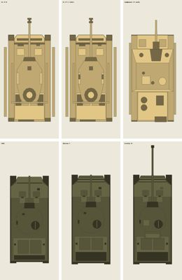
The six top views as drawn from the vehicle files: Pz IV H and G (late) with their skirts, the Jagdpanzer IV with its gun right of the centre line, the M4A3, the Sherman V with its bolted nose and longer rear, and the Firefly with the long 17-pounder and the box on the turret's rear. 0.48.0 Built in 0.47.0 (GB10): vehicles/jagdpanzer_iv_early.toml from Chamberlain & Doyle p. 102 read on the page image, the production before May 1944 with the 60 mm front (80 mm from May 1944 noted; units in June 1944 having the earlier production is a reading), and guns/pak39_l48.toml with the KwK 40 L/48's rounds (a reading until a source says the PaK 39 fires them). The engine now has a gun in the hull: a vehicle file may give the gun's traverse (here ±12° from Panzer Tracts since 0.49.1; before, ±10°, our split of C&D's 20° in all), the gun stays within it, and a vehicle standing still turns its hull toward a target outside the arc, with the pivot time, before it fires; under a move it fires only at what falls in the arc. Turreted vehicles behave exactly as before (the scenario facit unchanged). The superstructure takes the turret's place in the file, and the texts say superstructure. On the test track the Sherman's M61 gets through its sloped front 0.1 % at 500 m and 0.0 % at 1,000 m, against 40.9 % and 7.3 % on the Pz IV H: 60/45 and 60/50 are 85 and 93 mm effective. A calm Veteran or Elite crew then aims at the thin roof strip, hitting less and getting through more; the crew test compares penetrations for such crews. Corrected in 0.49.1 from Panzer Tracts No. 9 (Jentz & Doyle, pp. 9-13 to 9-19, read on page images): superstructure side 40 mm at 30° (C&D 30 mm before May 1944), superstructure rear 30 mm at 33° (C&D 20 at 35°), hull rear 10°, front floor 10+10 mm, gun ±12° and -8°/+15°, reverse 5.5 km/h, 24.0 t, 1.86 m high, 5.90 m long without the gun, 79 rounds without C&D's question mark. The test track's 56 cells against the Jagdpanzer moved, most at the oblique: the M4A3's penetrations at 750 m from 26.5 to 22.5 %.
The engine and determinism › Decision › Built › 0.47.0engine-vehicle-jagdpanzer-iv
Built in 0.47.0 (GB10): vehicles/jagdpanzer_iv_early.toml from Chamberlain & Doyle p. 102 read on the page image, the production before May 1944 with the 60 mm front (80 mm from May 1944 noted; units in June 1944 having the earlier production is a reading), and guns/pak39_l48.toml with the KwK 40 L/48's rounds (a reading until a source says the PaK 39 fires them). The engine now has a gun in the hull: a vehicle file may give the gun's traverse (here ±12° from Panzer Tracts since 0.49.1; before, ±10°, our split of C&D's 20° in all), the gun stays within it, and a vehicle standing still turns its hull toward a target outside the arc, with the pivot time, before it fires; under a move it fires only at what falls in the arc. Turreted vehicles behave exactly as before (the scenario facit unchanged). The superstructure takes the turret's place in the file, and the texts say superstructure. On the test track the Sherman's M61 gets through its sloped front 0.1 % at 500 m and 0.0 % at 1,000 m, against 40.9 % and 7.3 % on the Pz IV H: 60/45 and 60/50 are 85 and 93 mm effective. A calm Veteran or Elite crew then aims at the thin roof strip, hitting less and getting through more; the crew test compares penetrations for such crews. Corrected in 0.49.1 from Panzer Tracts No. 9 (Jentz & Doyle, pp. 9-13 to 9-19, read on page images): superstructure side 40 mm at 30° (C&D 30 mm before May 1944), superstructure rear 30 mm at 33° (C&D 20 at 35°), hull rear 10°, front floor 10+10 mm, gun ±12° and -8°/+15°, reverse 5.5 km/h, 24.0 t, 1.86 m high, 5.90 m long without the gun, 79 rounds without C&D's question mark. The test track's 56 cells against the Jagdpanzer moved, most at the oblique: the M4A3's penetrations at 750 m from 26.5 to 22.5 %.
Question: Which tank types of the engagement are added before H2?
Options
✓The Jagdpanzer IV
Named at Le Mesnil-Patry only secondhand (TracesOfWar).
Why: Chosen 2026-11-22 as GB10; built on the source there is, named as such.
Facts
stated "769 produced from January to November 1944, plus 26 chassis"; Crew 4; Weight (tons) 24-25; Height 1.85; One 7.5cm Pak39 L/48; Traverse 20° (hand); Elevation -5° +15°; Ammunition 79; Superstructure 60/50°, Hull (upper) 60/45°, (lower) 50/55°; "In May 1944, the armour thickness of the upper hull front and superstructure front was increased to 80mm and the side superstructure armour was increased from 30mm to 40mm." From the OCR, not yet read on the page image. Chamberlain & Doyle p. 102 (facts/ocr/cd/pg-103.txt) secondhand Variants as noted in the chat: a 0-Serie with the Pak 39 L/43 about December 1943; the Jagdpanzer IV with the Pak 39 L/48, about 769-784 built January to November 1944; the Panzer IV/70 (V), about 930-940 from August 1944; the Panzer IV/70 (A), about 278 from August 1944. Only the L/48 form is in time for June 1944. a note in the chat, 2026-11-22 (no source given) stated "...finally in France in June 1944, with the Panzerlehr Division, the 9th Panzer Division and the 12th SS Panzer Division". Chamberlain & Doyle p. 103 (facts/ocr/cd/pg-104.txt) observed Test track (0.47.0, seed 99, Regular): the Sherman's M61 at the Jagdpanzer's front 0.1 % through at 500 m, 0.0 % at 1,000 m (Pz IV H 40.9 %, 7.3 %). Veteran at 100 m: hits 53.8 %, through 14.1 %; Experienced: hits 81.3 %, through 0.0 %. tankzim2000 range --seed 99 --crew veteran|experienced stated Panzer Tracts p. 9-16, Armor Specifications for the Jagdpanzer IV (mm/angle from vertical): superstructure front *60/50, upper hull front *60/45, lower hull front 50/55, superstructure side 40/30, superstructure rear 30/33, hull side 30/0, rear 20/10, roof 20/90, engine deck 10/88, plate over the nose 20/86, floor 10+10/90 and 10/90; "*80 mm starting at Fgst.Nr.320301". Data sheet: "Traverse: 12° R, 12° L", "Elevation: -8°, +15°", "Reverse 5.5 km/hr", "Combat Loaded: 24.0 metric tons", "79 - 7.5 cm". Panzer Tracts No. 9 (Jentz & Doyle) p. 9-16, page image in facts/panzer_tracts_9/ Code
vehicles/jagdpanzer_iv_early.toml: armorguns/pak39_l48.toml: roundssrc/engine.rs: within_traversesrc/engine.rs: aim_turn
Open
- Whether the Jagdpanzer IV was at Le Mesnil-Patry on 11 June: C&D place it with the 12th SS Panzer Division in Normandy in June 1944, not at that village on that day.
- Heights from plate 323 with a doubtful calibration; the superstructure width 2.6 m is mock.
- The crew-compartment table counts the superstructure as the turret compartment.
- The late form with 80 mm on the superstructure front and upper hull front from chassis 320301 in May 1944 (Panzer Tracts p. 9-19; the sides were already 40 mm), as a file of its own.
- The plate over the nose, 20 mm at 86° (Panzer Tracts p. 9-16), is not in our zones.
- The engine: Panzer Tracts give 265 HP at 2600 rpm, our 300 PS is C&D's engine table (p. 256); both may be right at different revolutions.
Built in 0.46.1 (GB6): two views that show why a shot came out as it did. Every shot now keeps the plate it met and the angles the rules worked out (plate name, real thickness, slope, the 3D obliquity along the round's own path, the chord's vertical angle, the round's descent angle, the effective thickness, the round's penetration for that shot); nothing is computed again on the screen and no outcome changed. Under the shot picture in the replay: a line such as 'glacis 80 mm at 15°, obliquity 18°; effective 84 mm; round 76 mm -> bounced', for the truth and the side that was hit; and a side view along the shot with the ground, the sight line, the round's arc (height stretched, the stretch written) and where a round struck the crest, for the truth, the side that fired, and the side that was hit when it knew where the shooter was. The side that fired now sees where its round landed, as its gunner saw it: what showed above his crest and the dot, not the hidden part and never the plate; a round that landed below his crest reads 'landed out of sight below the crest'. Recordings without the new fields are not read.
The window and replay › Decision › Built › 0.46.1gui-thought-views-that-explain
Built in 0.46.1 (GB6): two views that show why a shot came out as it did. Every shot now keeps the plate it met and the angles the rules worked out (plate name, real thickness, slope, the 3D obliquity along the round's own path, the chord's vertical angle, the round's descent angle, the effective thickness, the round's penetration for that shot); nothing is computed again on the screen and no outcome changed. Under the shot picture in the replay: a line such as 'glacis 80 mm at 15°, obliquity 18°; effective 84 mm; round 76 mm -> bounced', for the truth and the side that was hit; and a side view along the shot with the ground, the sight line, the round's arc (height stretched, the stretch written) and where a round struck the crest, for the truth, the side that fired, and the side that was hit when it knew where the shooter was. The side that fired now sees where its round landed, as its gunner saw it: what showed above his crest and the dot, not the hidden part and never the plate; a round that landed below his crest reads 'landed out of sight below the crest'. Recordings without the new fields are not read.
Question: What should the views show, and to whom?
Options
✓Six points: side view along the shot, plate and angles kept in the shot (required), the plate lines, who sees them, who sees the side view, the firing side sees where it landed
Why: Chosen 2026-11-22.
Facts
observed The side view along the ruler's line exists (ground, both tanks, the commander's and the gun's lines), only for planning. src/gui/sight_ruler.rs; spotting-side-view observed The shot as the shooter saw it, with what the crest hid, exists in the replay. src/gui.rs: shot_picture Code
src/models.rs: PlateHitsrc/rules.rs: plate_of_partsrc/shot_views.rs: plate_textsrc/shot_views.rs: gunner_landingsrc/gui.rs: shot_side_view
Open
- The window's drawing of the side view and the gunner's picture has no automatic test; the screenshot recipe (views-that-explain-hill-assault) is not yet taken.
- The engine's gunner always sees the fall of shot (MOCK); smoke, dust and the commander observing are not modelled (reading-error-per-crew).
Pictures
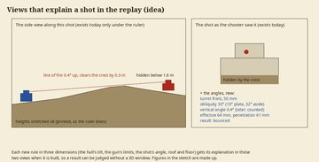
Sketch: the side view along a shot in the replay, and the shot as the shooter saw it with the angles added; the figures are made up. 0.36.0 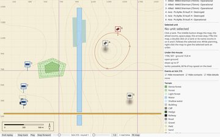
The events panel at a Sherman's shot that bounced off a Pz IV's nose plate: under the shot picture the plate with its thickness, slope and the angles of the round, and the side view along the shot with the sight line and the round's arc. 0.60.0earlier: 0.59.10.59.00.58.00.57.00.55.00.48.10.48.00.47.00.46.1 Related
Decision · Rejected · A 3D windowDecision · Built · A shot zoomed in: the vehicle rocks back, the gun recoils
Built in 0.46.0 (GB8): the QF 17-pounder has a gun file of its own, guns/qf_17pdr.toml, and the Sherman Firefly VC a vehicle file on the Sherman V's hull, vehicles/sherman_vc_firefly.toml. Two rounds from B&L p. 60 read on the page image, both 2900 fps: APCBC, the standard (K 1686, 174 mm at 100 m to 107 mm at 3,000 m) and AP (K 3414, 200 to 74 mm), the homogeneous-armour rows. No HE and no APDS for June 1944: C&E p. 204 'Discarding Sabot and HE shell for this weapon were developed in 1944', and HE 'only became available in late 1944' (Buckley via Wikipedia). The Firefly has four crew, the hull gunner deleted (C&E p. 131), 78 rounds all APCBC with 5 in the ready rack and 32.7 t combat loaded (historyofwar.org, uncited, named as such), and loads in 7.5 s, 8 rounds a minute for an average loader in the US test of the 17-pounder turret. On the test track the Firefly gets through the Pz IV H's front at 1,000 m 34.0 % of its shots against the Sherman V's 7.3 %, and hits twice as often for its flatter path. Mock: nose hardness (the American 54.5), dispersion (average). It shows as American until GB11.
The engine and determinism › Decision › Built › 0.46.0engine-vehicle-firefly
Built in 0.46.0 (GB8): the QF 17-pounder has a gun file of its own, guns/qf_17pdr.toml, and the Sherman Firefly VC a vehicle file on the Sherman V's hull, vehicles/sherman_vc_firefly.toml. Two rounds from B&L p. 60 read on the page image, both 2900 fps: APCBC, the standard (K 1686, 174 mm at 100 m to 107 mm at 3,000 m) and AP (K 3414, 200 to 74 mm), the homogeneous-armour rows. No HE and no APDS for June 1944: C&E p. 204 'Discarding Sabot and HE shell for this weapon were developed in 1944', and HE 'only became available in late 1944' (Buckley via Wikipedia). The Firefly has four crew, the hull gunner deleted (C&E p. 131), 78 rounds all APCBC with 5 in the ready rack and 32.7 t combat loaded (historyofwar.org, uncited, named as such), and loads in 7.5 s, 8 rounds a minute for an average loader in the US test of the 17-pounder turret. On the test track the Firefly gets through the Pz IV H's front at 1,000 m 34.0 % of its shots against the Sherman V's 7.3 %, and hits twice as often for its flatter path. Mock: nose hardness (the American 54.5), dispersion (average). It shows as American until GB11.
Question: Which tank types of the engagement are added before H2?
Options
✓The Sherman Firefly with the 17-pounder
A new gun and a vehicle on the Sherman V's hull.
Why: Chosen: it decided Siegel's duel; the gun is the work.
Facts
secondhand "A duel began which was won with a shot from a 17 pounder Sherman commanded by Sergeant Arthur Boyle of 'C' Squadron." Steel Chariots, Le Mesnil-Patry part III-A (losthistory.net/steelchariots/le-m-p3.htm) secondhand "34 of the 75mm marks and 3 of the 17 pounders" (the Hussars' tanks destroyed on the day). Steel Chariots, Le Mesnil-Patry part V (losthistory.net/steelchariots/le-m-p5.htm) observed B&L mention the 17-pounder on 19 pages, among them a penetration against Tiger armour (17 Pdr AP, 1600 yards, 102mm/25°) on p. 179 and APDS against face-hardened armour on p. 51; whether that is enough for a gun file is not checked. facts/ocr/bl, grep for 17 pdr, 2026-11-21 stated Ballistic K factors: "17 Pdr AP | 3414 | 2900", "17 PR APCBC | 1686 | 2900", "17Pdr APDS | 1705 | 3950" (projectile, K, muzzle velocity fps). Bird & Livingston, Ballistic K factors, unnumbered page after p. 83 (facts/ocr/bl/pg-149.jpg, read on the image) stated Penetration by range, U.K. projectiles: 17 Pdr APCBC (2900) 174, 170, 163, 156, 150, 143, 137, 132, 126, 116, 107; 17 Pdr APDS (3950) 275, 268, 256, 244, 233, 223, 213, 204, 194, 178, 162, at 100, 250, 500 ... 3000 (the same table as our other guns); AP and the FH rows too. Bird & Livingston p. 60 (facts/ocr/bl/pg-114.txt; values to be read on the image when built) stated "APDS has 70% higher shot-to-shot scatter than APCBC, on average" (WO 291/770); "17 pounder APCBC averaged ... 87% accuracy while 17 pounder APDS attained 53%" (Isigny, August 1944). Bird & Livingston pp. 91-92 (facts/ocr/bl/pg-158.txt, pg-159.txt) stated "Hull machine gun (and gunner) deleted in all Fireflies to increase ammunition stowage."; "42 rounds 17pdr were carried." (in the block for the 76 mm Shermans, as a remark on the British Firefly; the Challenger also has 42). Web sources give 77. Chamberlain & Ellis pp. 117, 131 stated No source here shows APDS in use in June 1944: B&L's APDS trials are dated August 1944 (Isigny); C&E: "Discarding Sabot and HE shell for this weapon were developed in 1944." Bird & Livingston p. 91; Chamberlain & Ellis p. 204 secondhand "The Firefly could carry 59 shells in three storage bins under the turret floor,14 in the space saved by removing the assistant driver, and five in a ready use rack on the turret basket floor, for a total of 78 rounds."; "Weight: 72,100lb combat loaded". Rickard, Cruiser Tank Sherman VC (Firefly), historyofwar.org, 2017 (no citation) secondhand "The 17-pounder gun rate of ten rounds per minute, computed from the actual firing of 8 rounds in 44 seconds, should be qualified by the understanding that this was done by a man of exceptional skill and that for the average man the rate will be nearer to 8 rounds per minute" (the US test report on the 17-pounder turret, as quoted). The Chieftain's Hatch: US Firefly, Part 1, worldoftanks.com secondhand "A good HE shell for the gun only became available in late 1944 and even then was not as potent as the standard Sherman 75 mm HE shell." (Buckley 2004, page needed); "the Firefly had a slower rate of fire than a standard M4 Sherman" (Hart 2007, page needed). en.wikipedia.org/wiki/Sherman_Firefly, checked 2026-11-22 secondhand "A company of Panther tanks raced towards Norrey, crossing in front of a 17-pounder “Firefly” tank of the First Hussars." (9 June 1944). Terry Copp, A Well-Entrenched Enemy, Legion Magazine 2011 (terrycopp.com) observed Test track (0.46.0, seed 99): at the Pz IV H's front the Firefly penetrates 73.7 % at 500 m, 34.0 % at 1,000 m, 10.7 % at 1,500 m; the Sherman V 40.9, 7.3 and 1.8 %. The range test goes red when the 17-pounder APCBC is given the M61's table, velocity and K. tankzim2000 range --seed 99; src/range.rs test Code
guns/qf_17pdr.toml: roundsvehicles/sherman_vc_firefly.toml: gunssrc/range.rs: the_firefly_penetrates_the_pz_iv_h_front_clearly_more_often_than_the_sherman_v
Open
- Rounds: 78 (historyofwar), 77 (Wikipedia), 42 (C&E p. 117); and the split by type (all APCBC is a design choice).
- The 17-pounder's dispersion in figures (a forum points to WO 291/238, not checked) and the British APCBC nose hardness: both mock.
- Which marks the 1st Hussars' Fireflies were on 11 June and Sergeant Boyle's tank: not found; Steel Chariots says 'a 17 pounder Sherman', not 'Firefly'. Built on that with the source named (decided 2026-11-22).
- APDS from the end of June or August 1944, by source: left out for 11 June.
- The Firefly's turret extension and longer gun are not in the silhouette.
- British and Canadian as nations: GB11 (engine-nations-british-canadian).
Built in 0.45.0 (GB7): the Sherman V (M4A4) has a vehicle file of its own, vehicles/sherman_v_m4a4_75mm.toml, beside the M4A3, with the same 75 mm gun. From TM 9-754 (1943), read on the page images: weight with armament about 66,000 lb, 445 hp gross, 20 mph sustained, 35 degrees ascending, length 238.5 in, height 107.5 in, 98 rounds, armour front 2 in, sides and rear 1 1/2 in. The real difference in armour is the three-piece bolted nose, its upper flat 51 mm cast at 45 degrees against the M4A3's 56 (B&L p. 75). Roof 19 mm as the M4A3; floor 25 mm front and rear, the lower bound of the manual's 'Bottom 1 in. - 1 1/2 in.', a reading. Built July 1942 to September 1943 by Detroit Arsenal (C&E p. 116). What has no M4A4 source is taken over from the M4A3 and says so in its note. On the test track the Pz IV H gets through the Sherman V's front more often at long range (1,500 m 3.6 % against 3.2 %, 2,000 m 1.1 % against 0.5 %); as a shooter it is the M4A3. Made for H2; H2 need not exist for GB7 to be done. B Squadron's Sherman V rests on Steel Chariots' photo caption and an uncited Wikipedia line, both secondhand, named as such.
The engine and determinism › Decision › Built › 0.45.0engine-vehicle-sherman-v
Built in 0.45.0 (GB7): the Sherman V (M4A4) has a vehicle file of its own, vehicles/sherman_v_m4a4_75mm.toml, beside the M4A3, with the same 75 mm gun. From TM 9-754 (1943), read on the page images: weight with armament about 66,000 lb, 445 hp gross, 20 mph sustained, 35 degrees ascending, length 238.5 in, height 107.5 in, 98 rounds, armour front 2 in, sides and rear 1 1/2 in. The real difference in armour is the three-piece bolted nose, its upper flat 51 mm cast at 45 degrees against the M4A3's 56 (B&L p. 75). Roof 19 mm as the M4A3; floor 25 mm front and rear, the lower bound of the manual's 'Bottom 1 in. - 1 1/2 in.', a reading. Built July 1942 to September 1943 by Detroit Arsenal (C&E p. 116). What has no M4A4 source is taken over from the M4A3 and says so in its note. On the test track the Pz IV H gets through the Sherman V's front more often at long range (1,500 m 3.6 % against 3.2 %, 2,000 m 1.1 % against 0.5 %); as a shooter it is the M4A3. Made for H2; H2 need not exist for GB7 to be done. B Squadron's Sherman V rests on Steel Chariots' photo caption and an uncited Wikipedia line, both secondhand, named as such.
Question: Which tank types of the engagement are added before H2?
Options
✓The Sherman V (M4A4)
The main Canadian tank; the same gun as the M4A3.
Why: Chosen: small, and it removes a known deviation of H1.
The Sherman III (M4A2)
In the brigade, hardly in this fight.
Why: Not now: low priority.
The Jagdpanzer IV
Named only secondhand (TracesOfWar).
Why: Not until a source shows it was there.
Facts
secondhand "Knocked Out "B" Sqn Sherman V of the 1st Hussars" (a photograph caption). Steel Chariots, Le Mesnil-Patry part IV (losthistory.net/steelchariots/le-m-p4.htm) stated B&L list the M4A4 among the early welded hulls with the M4, M4A2 and M4A3. Bird & Livingston, p. 135 (facts/ocr/bl/pg-135.txt) stated TM 9-754 (Medium Tank M4A4, 21 January 1943), stored in facts/tm9_754/: over-all length 238.5 in, width 103 in, height 107.5 in; Chrysler A57, rated gross 445 hp at 2,400 rpm (propeller shaft); maximum sustained speed 20 mph, 25 mph for short intervals; 35 degrees ascending; 98 rounds 75 mm; crew 5; armour front 2 in, sides and rear 1 1/2 in; 'The hull is of all-welded construction'. Read from archive.org's OCR, not yet on the page image. TM 9-754 (1943) § 2a, § 4 tabulated data, § 14a (facts/tm9_754/TM9_754_1943_archive_ocr.txt) stated "To hold this engine it was necessary to lengthen the rear hull to give an overall length of 19ft 10½in."; "This 370HP unit gave the vehicle a top speed of 25mph."; "All M4A4s had the three-piece bolted nose". Chamberlain & Ellis, British and American Tanks of World War II, p. 116 (read on the page image) stated The three-piece bolted nose: "Upper Flat 51c @45"; the early welded hull row names the M4A4 with "Glacis 51 @56 (see note)". Our M4A3 has a cast nose at 56 degrees (B&L p. 69): the M4A4's nose is a real difference. Bird & Livingston p. 75 (read on the page image) secondhand Which Sherman marks the 1st Hussars had on 11 June 1944 is not established: their 'Holy Roller' was an M4A2 (Sherman III) issued in May 1944 by a Veterans Affairs Canada page; a wargame site gives A and B Squadrons Sherman V DD and C Squadron Sherman III and Firefly. Neither is a primary source. veterans.gc.ca/en/node/153803; flamesofwar.com (art_id 590), web research 2026-11-22 secondhand "At 07:15, 19 tanks of 'B' Squadron launched their Sherman V DDs from their landing-craft"; "'C' Squadron's Sherman Vc Fireflies and Sherman IIIs were landed directly onto Mike Red beach" (D-Day, 6 June; no citation beside the lines). No source found gives the marks per squadron on 11 June; the war diary (LAC RG 24, Project '44) was not reached. en.wikipedia.org/wiki/1st_Hussars, web research 2026-11-22 observed Test track (0.45.0, seed 99, 1,000 shots per cell): the Pz IV H penetrates the Sherman V's front 16.7 % at 1,000 m (M4A3 16.0 %), 3.6 % at 1,500 m (3.2 %), 1.1 % at 2,000 m (0.5 %); at 500 m the two are within 0.2 points. A test at 1,500 m goes red when the upper nose is set back to 56 degrees. tankzim2000 range --seed 99; src/range.rs test Code
vehicles/sherman_v_m4a4_75mm.toml: armorsrc/range.rs: standardsrc/range.rs: the_sherman_v_front_is_penetrated_at_least_as_often_as_the_m4a3_frontsrc/vehicle_data.rs: the_sherman_v_upper_nose_is_45_degrees_and_the_rest_of_the_front_is_the_m4a3s
Open
- B Squadron's Sherman V on 11 June rests on Steel Chariots' photo caption ('B' Sqn Sherman V) and an uncited Wikipedia line for D-Day, both secondhand; built on that with the sources named (decided 2026-11-22). The war diary (LAC RG 24, Project '44) would settle it if found.
- The scenarios (H1 light at Le Mesnil-Patry among them) still use the M4A3; they are changed later, outside the milestones.
- Height: the manual's 107.5 in (2.73 m) is a centimetre below the hatches of the M4A3 drawing (2.74 m) the file takes over.
- Forward gears: 5 assumed from the M4A3; TM 9-754 fig. 12 (gearshift lever positions) could settle it.
- The floor's 1 in - 1 1/2 in: which part is which.
- The way in for new vehicle data with verification (f7-data-intake) is decided, not built; this vehicle went the usual way.
Decided as GB5 in three steps, each its own version. Step 1 built in 0.42.0: the angle between the round and the plate is counted in three dimensions. Each plate has a normal from its zone and slope, carried by the target hull's heading and tilt (GB1), the turret's plates by the turret's heading on the same tilted hull; the round's direction runs from the muzzle to the aim point, with the height difference. A level hull and a level shot give exactly the old formula (compound_obliquity_deg, kept as the tests' check). One aim point for all plates; a plate facing away counts as 90 degrees. Even on flat ground the gun sits above the aim point, so a back-sloped glacis is met a little more squarely: the test track's front cells moved by 1 to 1.5 points. Step 2 built in 0.43.0: the sight is coaxial, so the round's arc lies above the straight line and never strikes a crest that line clears; instead it falls more steeply than the sight line and reaches lower on a tank behind a crest. The arc's height over the chord is g/2 t (T - t) from the rules' flight time (B&L p. 83); the lowest height it reaches on the target is computed by GB9's exact walk with the arc taken off the ground (within 4 mm of a 0.1 m reference). The gunner still aims at the middle of what he sees, and the crew's own chances, spotting, 'hull down' and TacAI stay on the sight line; only the round itself hits what the arc reaches, and arrives at its descent angle, g T / (2 v), 0.41 degrees at 500 m and 0.93 at 1000 m for the M61. A hull-down position protects only when the crest is close: a crest 5 m before the tank still covers the hull, one 250 m before does not. A low round that falls into the crest is logged 'round struck the crest', on both sides. Step 3 built in 0.44.0: roof and floor are plates of their own, met at 90 degrees minus the angle from above or below. A roof shows as a strip the hull's depth times the sine of the angle to the roof's plane, so it matters from heights and little on flat ground. The floor shows only when the hull is nose up toward the shooter so far that the floor's nearest edge is seen from the muzzle; the floor plate is the front, rear or side floor by the aspect (M4A3 1 in front, 1/2 in rear). A trained gunner may aim at the roof or floor when the odds there are better; a gunner who aims normally does not. Plates: M4A3 hull roof 19 mm, turret roof 25 mm (TM 9-759); Pz IV H 12/15/10 and G 12/10/10 (C&D, the floor a reading of the Top/Bottom column). Facit: three test-track cells by one hit of 200, scenarios by one to fifteen hits, valley unchanged.
The shot and ballistics › Decision › Built › 0.44.0shot-thought-shot-in-3d
Decided as GB5 in three steps, each its own version. Step 1 built in 0.42.0: the angle between the round and the plate is counted in three dimensions. Each plate has a normal from its zone and slope, carried by the target hull's heading and tilt (GB1), the turret's plates by the turret's heading on the same tilted hull; the round's direction runs from the muzzle to the aim point, with the height difference. A level hull and a level shot give exactly the old formula (compound_obliquity_deg, kept as the tests' check). One aim point for all plates; a plate facing away counts as 90 degrees. Even on flat ground the gun sits above the aim point, so a back-sloped glacis is met a little more squarely: the test track's front cells moved by 1 to 1.5 points. Step 2 built in 0.43.0: the sight is coaxial, so the round's arc lies above the straight line and never strikes a crest that line clears; instead it falls more steeply than the sight line and reaches lower on a tank behind a crest. The arc's height over the chord is g/2 t (T - t) from the rules' flight time (B&L p. 83); the lowest height it reaches on the target is computed by GB9's exact walk with the arc taken off the ground (within 4 mm of a 0.1 m reference). The gunner still aims at the middle of what he sees, and the crew's own chances, spotting, 'hull down' and TacAI stay on the sight line; only the round itself hits what the arc reaches, and arrives at its descent angle, g T / (2 v), 0.41 degrees at 500 m and 0.93 at 1000 m for the M61. A hull-down position protects only when the crest is close: a crest 5 m before the tank still covers the hull, one 250 m before does not. A low round that falls into the crest is logged 'round struck the crest', on both sides. Step 3 built in 0.44.0: roof and floor are plates of their own, met at 90 degrees minus the angle from above or below. A roof shows as a strip the hull's depth times the sine of the angle to the roof's plane, so it matters from heights and little on flat ground. The floor shows only when the hull is nose up toward the shooter so far that the floor's nearest edge is seen from the muzzle; the floor plate is the front, rear or side floor by the aspect (M4A3 1 in front, 1/2 in rear). A trained gunner may aim at the roof or floor when the odds there are better; a gunner who aims normally does not. Plates: M4A3 hull roof 19 mm, turret roof 25 mm (TM 9-759); Pz IV H 12/15/10 and G 12/10/10 (C&D, the floor a reading of the Top/Bottom column). Facit: three test-track cells by one hit of 200, scenarios by one to fifteen hits, valley unchanged.
Question: How should the shot be counted in three dimensions?
Options
✓Three steps, a version each: 1 the angle in 3D, 2 the arc and the crest, 3 roof and floor
Roof and floor last: they wait on sources.
Why: Chosen 2026-11-22, the recommendation.
✓The round's descent angle in the angle on the plate, in step 2
Why: Chosen 2026-11-22: small at usual ranges, but real and cheap once the arc is there.
✓The crew does not know the arc: the round is fired and strikes the crest, logged
Why: Chosen 2026-11-22: likely as it was; costs a round and time.
The gunner holds fire when the arc would strike the crest
Why: Not chosen: gives the crew knowledge it did not have.
✓GB2's 'Sight line, no superelevation' stays
Superelevation past the gun's limit at long range is a decision of its own.
Why: Chosen 2026-11-22.
Facts
observed The target is a flat picture of boxes cut from below by what the ground hides; one of three views by the angle to the target (45 and 135 degrees). src/rules.rs: part_boxes observed Obliquity combines the plate's slope with the horizontal angle only. src/rules.rs: compound_obliquity_deg stated "several penetrations did occur through the hull MG port or when hits on the mantlet bottom were deflected onto the hull top and penetrated." Bird & Livingston, p. 87 (facts/ocr/bl/pg-087.txt) observed Step 1 tests worked by hand: the level case equals compound_obliquity_deg for every zone, slopes 0/14/56 and azimuths 0/20/44; a vertical plate shot from 10 m up at 100 m gives 5.71 degrees; a 56-degree glacis nose up 10 % gives 56 + 5.71, nose down 56 - 5.71; a side plate rolled toward the shooter by r gives r; a Sherman 75 mm at a Pz IV H front at 500 m gets through more often from 20 m higher ground (level 32.6 %). src/rules.rs tests plate_obliquity_*, evaluate_shot_from_higher_ground_meets_the_glacis_less_obliquely observed Facit after step 1 (0.42.0): test track Pz IV H at a Sherman front 100 m 75.0 -> 76.0 %, 500 m 57.5 -> 58.5 %; Sherman at a Pz IV H front 500 m 33.0 -> 34.5 %; scenarios: valley Allied wins 31 -> 35, undecided 7 -> 5, hits 219 -> 233; the others by one or two. tankzim2000 range facit, scenarios facit (0.42.0) stated Roof and floor for step 3: M4A3 hull top 3/4 in, turret top 1 in, bottom front 1 in, bottom rear 1/2 in (TM 9-759 1942 § 5h, fractions read on the page image). Pz IV H Top/Bottom column: hull 10/90°, superstructure 12/85°-90°, turret 15/84°-90°; Pz IV G: hull 10/90°, superstructure 12/85°-90°, turret 10/83°-90° (C&D pp. 97-98). C&D gives top and bottom in one column, so which is the floor is a reading. TM 9-759 (1942) p. 6; Chamberlain & Doyle pp. 97-98 (facts/ocr/cd/pg-098.txt, pg-099.txt) observed Step 2 tests: the arc is 0 at both ends and about g/8 T^2 in the middle (M61 at 1000 m); the descent angle 0.414 degrees at 500 m and 0.934 at 1000 m; what the arc reaches is never above what the sight line sees, and equal without a crest; a crest 250 m before a target at 700 m lets the hull be hit, one 5 m before does not; the crew's chances are the same with and without the arc. src/rules.rs tests (the_arc_is_*, the_round_falls_*, a_far_crest_*, the_crews_chances_ignore_the_arc), src/sight_reference.rs gb5_* observed After step 2 (0.43.0), seeds 1-50 per side against step 1: crest_cover Pz IV hits 54 -> 69 of 155 -> 130 shots, 9 rounds into the crest, Sherman hits 41 -> 35 (fewer shots, out sooner); valley Sherman hits 174 -> 265 but penetrations 129 -> 117 (now the Pz IV's 80 mm hull front, not only the turret), Pz IV hits 59 -> 102 and penetrations 41 -> 51. Scenario facit: valley Allied wins 35 -> 29, Axis 10 -> 18; crest_cover Allied 34 -> 30, Axis 15 -> 18; test track front cells +1 to +2 points from the descent angle. tankzim2000 crest_cover/valley seeds 1-50, scenarios facit, range facit (0.43.0) observed Step 3 tests: a roof is met at 90 degrees minus the angle from above; the floor shows only when the target is nose up toward the shooter; a Pz IV nose up 5.7 degrees on a bump at 100 m with its foot hidden shows a 0.52 m floor strip, gone behind a 1.5 m crest; a low-aimed round hits the floor 1480 of 2000 and sometimes gets through the 10 mm plate; a shot from a height hits the roof and gets through. src/rules.rs tests a_roof_is_met_*, the_floor_shows_only_*, a_shot_from_a_height_*, a_target_nose_up_*, a_nose_up_hull_on_a_bump_* observed Facit after step 3 (0.44.0): test track Sherman at a Sherman, three cells by one hit of 200; scenarios hill_assault hits 562 -> 547, two_vs_two Allied wins 12 -> 13 and hits 223 -> 226, crest_cover Allied 30 -> 29 and Axis 18 -> 19, crews and hatches by one; valley unchanged. tankzim2000 range facit, scenarios facit (0.44.0) Code
src/rules.rs: plate_obliquity_degsrc/rules.rs: evaluate_shotsrc/rules.rs: arc_height_msrc/rules.rs: arc_reach_belowsrc/terrain.rs: lowest_reachable_heightsrc/account.rs: shot_textsrc/rules.rs: roof_floor_boxessrc/rules.rs: floor_platesrc/rules.rs: floor_edge_seensrc/rules.rs: chosen_aim
Open
- Superelevation against the gun's limits at long range (GB2 kept 'Sight line, no superelevation').
- Later: a soft change between the front and side views; rounds deflected from the mantlet onto the roof (B&L p. 87).
- TacAI picks a crest by the sight line; a crest close to the tank (as real hull-down positions were) could be an idea of its own.
- The floor edge is counted with the hull's tilt in height, but the test bump is too gentle to prove it: removing the tilt did not turn the test red. Built, not proven on steep banks.
Pictures
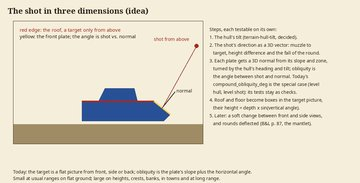
Sketch: a shot from above meets the roof and the front plate; the angle is counted between the shot and the plate's normal, in five steps. 0.36.0 Built in 0.41.0 (GB4): the chance per second to spot a tank is multiplied by the share of its silhouette's area that shows over the ground, from the commander's eye (the hatch sets its height) and for the aspect he sees it from: the boxes of the hull, the tracks, the turret and the cupola, cut at the lowest visible height. A share of its own area, not square metres, so a tank seen whole is exactly as before, and a Sherman with only the turret over a 2.1 m crest shows about a quarter of its area end-on. In the tick after it fires the share is not counted: the flash and the dust show whole. Linear, MOCK. The share decides how soon contact is gained; a contact already held is kept while the line holds, as before. The sight ruler's spot chance follows it, and when part of the tank is hidden the ruler says how much of the area the commander sees ('spot: 60 % of the area shows to the commander'), which can differ from what the gun sees.
Spotting and sight › Decision › Built › 0.41.0spotting-hull-down-detection
Built in 0.41.0 (GB4): the chance per second to spot a tank is multiplied by the share of its silhouette's area that shows over the ground, from the commander's eye (the hatch sets its height) and for the aspect he sees it from: the boxes of the hull, the tracks, the turret and the cupola, cut at the lowest visible height. A share of its own area, not square metres, so a tank seen whole is exactly as before, and a Sherman with only the turret over a 2.1 m crest shows about a quarter of its area end-on. In the tick after it fires the share is not counted: the flash and the dust show whole. Linear, MOCK. The share decides how soon contact is gained; a contact already held is kept while the line holds, as before. The sight ruler's spot chance follows it, and when part of the tank is hidden the ruler says how much of the area the commander sees ('spot: 60 % of the area shows to the commander'), which can differ from what the gun sees.
Question: Should the visible part of a tank weight its chance to be spotted, and how?
Options
✓By the share of the area that shows
The turret is narrower than the hull: a turret over a crest shows less of the area than of the height.
Why: Chosen 2026-11-22, the recommendation.
By the share of the height that shows
Why: Not chosen: overrates a tank showing only its turret.
✓A share of its own area
A tank seen whole stays as today, whatever its size.
Why: Chosen 2026-11-22: the facit of tanks seen whole stays; absolute size is a step of its own.
Square metres against a reference area
A Stuart harder to spot than a Tiger.
Why: Not now: needs a reference area (MOCK) and moves every outcome.
✓The flash shows whole
In the tick after firing the share is not counted.
Why: Chosen 2026-11-22.
✓From the commander's eye
Not from the gun; the hatch sets the height.
Why: Chosen 2026-11-22.
Facts
observed Tests: the share worked by hand from the Sherman's boxes end-on and side-on; behind a ridge p_spot equals flat ground's times the share, and not when it fired; over 200 seeds through the engine's own draws a Sherman with about a quarter of its area showing is first spotted about 7 times later (the chance per tick is not linear in the chance per second). src/rules.rs, src/engine.rs tests (a_target_behind_a_crest_*, the_visible_area_share_*, a_tank_behind_a_crest_is_spotted_later_*) observed The scenario facit moved: crest_cover Allied wins 35 -> 34, one draw, shots 264 -> 233, the Allied side fires first in 4 runs instead of 0; valley Allied wins 26 -> 31, undecided 12 -> 7 (the Shermans coming up out of the valley show only the turret at first); hill_assault a few shots fewer. tankzim2000 scenarios facit (0.41.0) observed H1, Le Mesnil-Patry, seeds 1-80 until decided, side by side: 0.40.0 Allied 77, undecided 3, decided at tick 925 on average, 40.5 shots and 16.2 hits a run; 0.41.0 Allied 75, undecided 5, tick 877, 40.2 shots and 16.2 hits. tankzim2000 scenarios/le_mesnil_patry.json --seeds 1..80 --until-decided (0.40.0 on main, 0.41.0 on the branch) Code
src/rules.rs: visible_area_sharesrc/rules.rs: evaluate_spottingsrc/engine.rs: observed_ofsrc/rules.rs: seen_area_sharesrc/gui/sight_ruler.rs: describe
Open
- Absolute size (square metres against a reference) as a step of its own, if a Stuart should be harder to spot than a Tiger.
- The curve is linear (MOCK); a source on how much of a tank must show to be seen would set it.
- The turret's turning is not counted in the boxes, as for the shot.
Pictures
Built in 0.40.0 (GB9), in five steps each its own commit: a safety net (a slow reference stepping 0.1 m, tests of symmetry and locality, a bench); one way in for every sight question (src/sight_line.rs); the exact grid walk over the raster's bilinear patches, where the ground along the line is a quadratic answered exactly; the drawn banks and ditches in the walk with a certified bound (within 1 cm, branch-and-bound) and no more global fine sampling; a max-pyramid that skips blocks the line passes over without changing one answer. Against the reference on 2000 lines: 0 disagreements, the lowest visible height within 0.012 m (was 0.296), symmetric, and a shape changes only the lines near it.
Spotting and sight › Decision › Built › 0.40.0exact-sight-grid-traversal
Built in 0.40.0 (GB9), in five steps each its own commit: a safety net (a slow reference stepping 0.1 m, tests of symmetry and locality, a bench); one way in for every sight question (src/sight_line.rs); the exact grid walk over the raster's bilinear patches, where the ground along the line is a quadratic answered exactly; the drawn banks and ditches in the walk with a certified bound (within 1 cm, branch-and-bound) and no more global fine sampling; a max-pyramid that skips blocks the line passes over without changing one answer. Against the reference on 2000 lines: 0 disagreements, the lowest visible height within 0.012 m (was 0.296), symmetric, and a shape changes only the lines near it.
Question: How should sight lines read the ground, now that it has detail finer than the raster?
Options
✓Exact grid walk and a max-pyramid (3+4), in safe steps
Why: Chosen 2026-11-21: the best result, no step size; done as its own milestone with a safety net first.
Finer sampling only inside the shapes' boxes (2)
Why: Not chosen: a patch that would be written again for 3.
A finer step everywhere (today's way with shapes)
Why: Kept until GB9 replaces it: it costs time and breaks locality.
Facts
observed The line of sight steps along the line at half the ground's step (has_line_of_sight); with a raster of 10 m cells that is 5 m. src/terrain.rs: has_line_of_sight observed Step 0 on 2000 lines at Le Mesnil-Patry: the old line of sight disagreed with the 0.1 m reference on 1 (no shapes); the lowest visible height erred up to 0.296 m (14 over 0.1 m); with the one bank 5 times the cost and 1 line far from it changed. It was already symmetric. src/sight_reference.rs reports, 2026-11-21 observed After GB9: 0 disagreements with and without the bank, the lowest visible height within 0.012 m, locality 0; a synthetic map with 16 shapes within 0.009 m, clear lines, slopes and routes bit-identical to the map without shapes; the viewshed agrees with the line of sight on every cell tried. src/sight_reference.rs tests and reports, 2026-11-21 observed Time per sight line: 75 to 22 µs on the raster; with the bank about 400 to 22.6 µs; the pyramid gives 5 to 8 times on open ground with long lines (steppe, 2.5 to 8 km: 13.5 to 2.4 µs), 1.6 to 2 times on rugged or shape-rich maps, little on Le Mesnil-Patry. H1 light seed 7 runs 4.3 s against 161 s. bench in src/sight_reference.rs; scenarios/le_mesnil_patry.json seed 7, 2026-11-21 observed The scenario facit moved in step 2 in three scenarios (crest_cover: shots 329 to 264, hits 85 to 95; valley: Allied 25 to 26, Axis 10 to 12; hill_assault small); H1 light's outcome moved in step 3 (its map has the bank). tankzim2000 scenarios diff, 2026-11-21 DESIGN_CHOICE The pyramid skips a block only with a margin of 0.05 m against floating-point rounding; a larger margin only skips less, so it cannot change an answer. src/sight_line.rs: PYRAMID_MARGIN_M Code
src/sight_line.rs: SightLinesrc/ground.rs: MaxPyramidsrc/ground.rs: GroundPartssrc/sight_reference.rs: reference_line_of_sight
Open
- An index for the drawn shapes: with many, working out where a line passes each shape sets the floor.
- The forest's sight depth and the viewshed's horizon are exact but not pyramided.
- The routes' locality test is weak (mostly straight routes).
- The viewshed horizon's error in a drawn piece is epsilon over the distance, noticeable only with a shape a metre or two from the eye.
Pictures
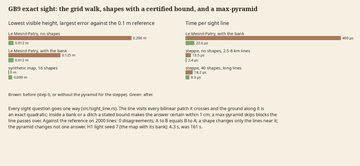
Accuracy and speed before and after GB9: the largest error of the lowest visible height against the reference, and the time per sight line. 0.40.0 Built in 0.39.0 (GB3): the ground is the base raster plus shapes a map maker draws where they count. The first kind is a line with a cross-section: a bank (+) or a ditch (-) with a height and a half width, a smooth bump H (1 + cos(pi d / w)) / 2 highest on the line and zero at the half width; overlapping shapes add. Map::ground_at adds them, so sight, slope, routes, hull down and the hull's tilt feel them; the window's relief and contours read the same heights, a bank drawn with hachures and a ditch dashed. The map editor draws them (G a bank, C a ditch) and exports them as LineStrings of kind bank or ditch. The recording carries them (version 6 only when a map has shapes). Le Mesnil-Patry has its first, measured from LiDAR HD (map 0.3.0). For now a map with shapes samples the ground finer everywhere; exact sight (GB9) replaces that.
Terrain and movement › Decision › Built › 0.39.0terrain-thought-drawn-ground
Built in 0.39.0 (GB3): the ground is the base raster plus shapes a map maker draws where they count. The first kind is a line with a cross-section: a bank (+) or a ditch (-) with a height and a half width, a smooth bump H (1 + cos(pi d / w)) / 2 highest on the line and zero at the half width; overlapping shapes add. Map::ground_at adds them, so sight, slope, routes, hull down and the hull's tilt feel them; the window's relief and contours read the same heights, a bank drawn with hachures and a ditch dashed. The map editor draws them (G a bank, C a ditch) and exports them as LineStrings of kind bank or ditch. The recording carries them (version 6 only when a map has shapes). Le Mesnil-Patry has its first, measured from LiDAR HD (map 0.3.0). For now a map with shapes samples the ground finer everywhere; exact sight (GB9) replaces that.
Question: How is detail smaller than the raster drawn into the ground?
Options
✓Lines with a cross-section first (bank, ditch)
Why: Chosen 2026-11-21: in the bocage nearly everything is a line.
✓A smooth bump as the cross-section
Why: Chosen 2026-11-21: no sharp edges that make the slope jump (DESIGN_CHOICE).
✓Added when the ground is read (B)
Why: Chosen 2026-11-21; baking into a finer raster (C) waits.
✓The old yes-or-no banks left as they are
Why: Chosen 2026-11-21: a hedge on a bank stays impassable by its rule; a drawn bank adds height.
Areas with a height (craters, raised ground)
Why: Later.
Facts
observed Every rule asks the ground's height in one place, ground_at, which today reads the raster only. src/map.rs: ground_at; src/terrain.rs: Land observed Features already carry elevation and height, used today only for sight. src/terrain.rs (the forest sight and the blocking kinds) observed Hand-worked tests: a bank of 1.5 m and half width 3 m reads 1.5, 0.75 and 0.375 m at 0, 1.5 and 2 m from its line; its steepest slope is atan(1.5 pi / 6) = 38.1 degrees (sampled 35.3), above the vehicles' 30; a bank and a ditch of 1.0 m crossing give 0.5 m. src/terrain.rs tests; src/ground.rs: GroundShape observed Under the 41 hedges marked as on a bank at Le Mesnil-Patry, today's LiDAR shows a median rise of 0.19 m; several have a ditch of about 1.3 m 4 to 6 m beside them; the hedge east of the orchard (Siegel's) shows a step of about 1.5 m, a terrace, and is gone today. The clearest bank, under a standing hedge east of the village, rises 0.55 m, about 2.75 m from crest to foot on each side (the mean of 53 cross-sections every 2 m). IGN, MNT LiDAR HD at 1 m, Géoplateforme WMS, fetched 2026-11-21; maps/le_mesnil_patry/source.geojson (lidar-bank-1) observed With that one bank on the map, H1 light seed 7 ran 162 s against 88 s and its outcome changed, because a map with shapes samples the ground finer everywhere; exact sight (GB9) is to restore locality. scenarios/le_mesnil_patry.json seed 7, 2026-11-21 Code
src/ground.rs: GroundShapesrc/map.rs: ground_atsrc/map.rs: sampling_stepsrc/terrain.rs: parse_terrain_maptools/map/map_export.py: _shape
Open
- Sampling: a map with shapes samples finer everywhere, which costs time and changes answers far from the shapes; exact sight (exact-sight-grid-traversal, GB9) replaces it.
- The engine's own pace probe reads the slope over 5 m ahead, so a bank 6 m wide is only partly felt in pace (routes close it).
- The ditches beside many hedges (about 1.3 m) are not drawn yet.
- Areas with a height (craters, raised ground) are later.
Map version 0.3.6
0.3.62026-11-24 moar forest 0.3.52026-11-24 d1 0.3.42026-11-24 drafts done 0.3.32026-11-24 moar field 0.3.22026-11-24 moaaaar fields 0.3.12026-11-24 some moar fields 0.3.02026-11-21 The first ground shape (GB3): the earth bank under a hedge east of the village, 0.55 m high and 5.5 m wide, measured from LiDAR HD. 0.2.72026-11-16 all_field_drafts accepted 0.2.62026-11-16 fields saved 0.2.52026-11-15 Bank review (2026-11-15): 23 of the 55 bank drafts accepted as steep banks beside the roads; two hedges marked on a bank where LiDAR HD shows one (draft1947-137, bdtopo-HAIELINE0000002229417559), in place of 9 short drafts along them; 14 drafts left out as already covered by a hedge on a bank, 9 as later or too weak. 0.2.42026-11-14 moar hedges 0.2.32026-11-14 hedges 0.2.22026-11-14 hedges 0.2.12026-11-14 hedges fixes 0.2.02026-11-14 The height layer: IGN's LiDAR HD ground model averaged into 10 m cells (elevation.asc, 63-94 m), today's bare ground without trees and buildings (tools/map/fetch.py). 0.1.02026-11-14 The first whole map, from the editor's proposals (tools/map/proposals.py): today's roads, hedges, woods, the railway and the buildings with a roof on the 1947 air photograph from IGN's BD TOPO, judged against that photograph; the first hedges and orchards traced by hand. No heights yet. Pictures
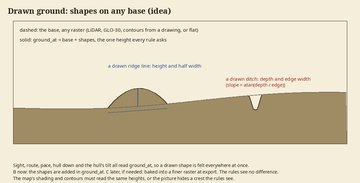
Sketch: the ground as a base raster of any kind plus drawn shapes, a ridge line with a cross-section and a ditch with depth and edge width; ground_at adds them for every rule. 0.36.0 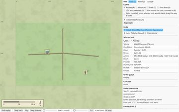
A small test map: a bank 1.5 m high with hachures, broken in the middle, and a ditch across; the Sherman on the bank's north flank reads 'Hull tilt: left side down 22°'. 0.39.0 Built in 0.38.0 (GB2): the gun has its elevation and depression limits from the sources (Sherman M4A3 +25 and -10 degrees, Pz IV H +20 and -8), counted against the hull: the straight line from the gun to the middle of the part of the target it can fire at, minus the hull's slope in the target's direction from its tilt (terrain-hull-tilt). Beyond a limit the gun cannot be laid: the target is not chosen while another can be, it is not fired at, the crew still sees it, and the account says 'gun cannot depress onto ...' or 'elevate'. A vehicle file without the limits has none. No test scenario and no run of H1 changed: none of them has a shot beyond a limit.
Spotting and sight › Decision › Built › 0.38.0gun-elevation-limits
Built in 0.38.0 (GB2): the gun has its elevation and depression limits from the sources (Sherman M4A3 +25 and -10 degrees, Pz IV H +20 and -8), counted against the hull: the straight line from the gun to the middle of the part of the target it can fire at, minus the hull's slope in the target's direction from its tilt (terrain-hull-tilt). Beyond a limit the gun cannot be laid: the target is not chosen while another can be, it is not fired at, the crew still sees it, and the account says 'gun cannot depress onto ...' or 'elevate'. A vehicle file without the limits has none. No test scenario and no run of H1 changed: none of them has a shot beyond a limit.
Question: How do the gun's limits work in the engine?
Options
✓Like no line of fire
The gun cannot be laid on that target; it is not chosen and not fired at; the crew still sees it; the log says why.
Why: Chosen 2026-11-21: moving to bring the gun to bear is a later step.
The crew moves to bring the gun to bear
Backs off or turns the hull.
Why: Not now: a TacAI step of its own.
✓The sight line, no superelevation
The straight line from the gun to the aim point against the hull's slope.
Why: Chosen 2026-11-21: the round's drop barely matters at tank ranges (DESIGN_CHOICE).
With superelevation
Add the elevation the round's drop needs.
Why: Not chosen: more work, little difference.
Facts
stated The gun can be elevated 25 degrees and depressed 10 degrees. TM 9-759 (1944), § 166, the M4A3 entry stated Elevation -8 to +20 degrees for the Pz IV H. Chamberlain & Doyle, page 98, Ausf H data block (facts/ocr/cd/pg-099.txt) observed The scenario facit shows no difference and H1 light's seed 7 gives the same summary: no shot in them lies beyond a limit. Seed 7 runs in 82 s against 78 s before (about 5 % slower). tankzim2000 scenarios diff; scenarios/le_mesnil_patry.json seed 7, 2026-11-21 stated Pz IV G: "(Ele)vation: -8° +20°" (the OCR lost the word's start); Tanks Encyclopedia gives -10° to +20°, a web page and weaker. Chamberlain & Doyle, p. 98, Ausf G data block (facts/ocr/cd/pg-098.txt) Code
src/sight.rs: gun_relative_angle_degsrc/sight.rs: gun_out_of_limitssrc/sight.rs: gun_limit_atsrc/models.rs: GunLimitsrc/engine.rs: worth_a_round
Open
- The TacAI's search for cover to fight from (tacai.rs, the gun's line of fire) does not count the limits yet.
- Moving to bring the gun to bear.
- The enemy's limits in the threat estimate (their_chance): his heading is not known.
- A crew already holding fire for another reason gets no 'gun cannot' line when the limit begins to apply.
Pictures
Sketch: a Sherman level at the edge of a hilltop, its gun's limits +25° and -10° drawn from the hull; the target at the foot of the drop lies far below -10°, out of its reach. 0.35.0 A side view, not to scale: a tank nose down on a slope, the hull's own level, the Sherman's -10 and the Pz IV H's -8 degree limits counted from it, and a target below both. 0.38.0 Built in 0.37.1 (step 1, GB1): the hull's pitch and roll come from the ground under the four ends of its tracks, pitch from the front pair against the rear pair over the hull's length, roll from the left pair against the right over its width; pitch positive nose up, roll positive right side down. A pure function, computed when needed and never stored, so no rule reads it and the outcome is unchanged (the facit identical). The panel shows it for the selected tank ('Hull tilt: nose down 1°'), live and in the replay; the recording's head carries each vehicle's length and width for it. On the 10 m raster it feels only the ground's slope; drawn ground (GB3) gives sharp angles. The gun's limits (GB2) and the shot in 3D (GB5) are the next uses.
Terrain and movement › Decision › Built › 0.37.1terrain-hull-tilt
Built in 0.37.1 (step 1, GB1): the hull's pitch and roll come from the ground under the four ends of its tracks, pitch from the front pair against the rear pair over the hull's length, roll from the left pair against the right over its width; pitch positive nose up, roll positive right side down. A pure function, computed when needed and never stored, so no rule reads it and the outcome is unchanged (the facit identical). The panel shows it for the selected tank ('Hull tilt: nose down 1°'), live and in the replay; the recording's head carries each vehicle's length and width for it. On the 10 m raster it feels only the ground's slope; drawn ground (GB3) gives sharp angles. The gun's limits (GB2) and the shot in 3D (GB5) are the next uses.
Question: Should the hull tilt with the ground, as the ground for the gun's limits and the shot's angle?
Options
✓Yes, as a step of its own, shown before any rule uses it
Why: Chosen 2026-11-21, the recommendation.
✓From the ground under the four ends of the tracks
Front against rear over the length, left against right over the width.
Why: Chosen 2026-11-21: later it feels a bank under the front alone.
From the slope at the centre
As the panel's slope, split along the heading.
Why: Not chosen: misses anything shorter than the tank.
✓A pure function, not stored
Computed when needed; not in the state or the per-tick recording.
Why: Chosen 2026-11-21: the outcome stays exactly as it is until a rule reads it.
Facts
observed The shot's obliquity combines the plate's own slope with the horizontal angle to the target only; the vertical angle of the line of fire and the hull's tilt are not counted. src/rules.rs: compound_obliquity_deg stated "several penetrations did occur through the hull MG port or when hits on the mantlet bottom were deflected onto the hull top and penetrated." Bird & Livingston, p. 87 (facts/ocr/bl/pg-087.txt) observed Tests worked by hand first: level ground 0 and 0; a plane rising 10 % to the north gives 5.71 degrees of pitch heading north and -5.71 heading south, and 5.71 of roll heading east; heading 45 on a plane rising 10 % to the east, 4.04 of pitch and -4.04 of roll. src/terrain.rs tests hull_tilt_* Code
src/terrain.rs: hull_tiltsrc/terrain.rs: HullTiltsrc/gui.rs: tilt_textsrc/recording.rs: UnitInfo
Open
- The gun's limits (GB2) and the shot's angle in three dimensions (GB5) are later steps, each a decision of its own.
- Sharp shapes smaller than a raster cell (a ditch, a bank, a fold) are not in the tilt unless drawn (terrain-thought-drawn-ground, GB3).
Pictures
Sketch: the hull tilts with the ground. Behind a crest the gun's depression limit counts against the hull; cresting a hedge bank the floor faces the far side. Today the hull stands level and the shot's angle is horizontal only. 0.37.1earlier: 0.36.0 The Pz IV H of test_le_mesnil_patry selected: the panel's new row 'Hull tilt: nose down 1°', from the ground under the four ends of its tracks. 0.37.1earlier: 0.36.0 Release 0.37.0 is named "h1". It is the engine H1 light was run with; later engines will not give the same outcome, and recordings carry their version (older ones are refused, see engine-tick-length-parked), so to test H1 one runs this release. ./release.sh --name h1 writes the name in the tag's message (tankzim2000 0.37.0 "h1").
The engine and determinism › Decision › Built › 0.37.0engine-release-h1
Release 0.37.0 is named "h1". It is the engine H1 light was run with; later engines will not give the same outcome, and recordings carry their version (older ones are refused, see engine-tick-length-parked), so to test H1 one runs this release. ./release.sh --name h1 writes the name in the tag's message (tankzim2000 0.37.0 "h1").
Question: How can H1 be tested later, when the engine has changed?
Options
✓A named release
Release 0.37.0 is named "h1" and is the version to run to test H1.
Why: Chosen: backwards compatibility and comparison across versions cannot be had in the future, so H1 stays with the version it was run with.
Keep every later engine compatible with H1
Later versions would have to play the scenario out the same way.
Why: Not chosen: it cannot be done while the rules keep changing.
Open
- The tag is made when release.sh is run.
The first historical scenario, scenarios/le_mesnil_patry.json, is offered in the start menu (Singleplayer > Scenario), so anyone can play either side against the computer ("holds its ground" or "advances"); it is the same file the 80 runs used. It starts when Hans Siegel's three Pz IV of 8 Company come up behind the hedge east of the orchard at the south-east corner of Le Mesnil-Patry, 11 June 1944. Allied: B Squadron 1st Hussars, 15 tanks placed (6 in the orchard, 4 at the east end of the village, 3 in the wheat east of the chateau, 2 farther north), 6 of its 21 already lost and not placed; hatches closed; crews drawn once, half Green (units 2, 4, 7, 9, 10, 11, 12), seed 19440611; C Squadron's 9 at the map's east edge, Regular. Axis: 3 Pz IV H, Regular, hunting along the hedge to its end, then north into the wheat (test_orders/le_mesnil_patry.json). 10 rounds. The Allied briefing is thin (advance west from Norrey, take the village, speed up the attack); the Axis one knows the attack comes from Norrey.
Maps and scenarios › Decision › Built › 0.37.0orders-h1-light-scenario
The first historical scenario, scenarios/le_mesnil_patry.json, is offered in the start menu (Singleplayer > Scenario), so anyone can play either side against the computer ("holds its ground" or "advances"); it is the same file the 80 runs used. It starts when Hans Siegel's three Pz IV of 8 Company come up behind the hedge east of the orchard at the south-east corner of Le Mesnil-Patry, 11 June 1944. Allied: B Squadron 1st Hussars, 15 tanks placed (6 in the orchard, 4 at the east end of the village, 3 in the wheat east of the chateau, 2 farther north), 6 of its 21 already lost and not placed; hatches closed; crews drawn once, half Green (units 2, 4, 7, 9, 10, 11, 12), seed 19440611; C Squadron's 9 at the map's east edge, Regular. Axis: 3 Pz IV H, Regular, hunting along the hedge to its end, then north into the wheat (test_orders/le_mesnil_patry.json). 10 rounds. The Allied briefing is thin (advance west from Norrey, take the village, speed up the attack); the Axis one knows the attack comes from Norrey.
Question: How is the first historical engagement built, light, on today's engine?
Options
✓Start at the moment Siegel arrives
The scenario begins when the three Pz IV come up behind the hedge, with B Squadron already shot up in the orchard.
Why: Chosen: the infantry, anti-tank guns and Panzerfausts did the first part of the fight and the engine has none; a start from Norrey would be a battle that never took place.
Start from Norrey with the whole of B Squadron
All 21 tanks of B Squadron advance from the start line.
Why: Not chosen: without the infantry, guns and Panzerfausts the first part of the real battle cannot be played.
✓Siegel behind the hedge, as the text says
The German tanks start hidden behind the hedge, as in Jeran's account, and the test is run again.
Why: Chosen: the source says the enemy was obscured by a hedge; the run with Siegel in sight at the orchard's edge is kept only as a comparison, not redone to make the outcome come out right.
✓Fixed crew levels drawn once, half Green
Each tank gets a fixed level drawn once from seed 19440611, about half Green and the rest Regular, not mixed within a tank.
Why: Chosen: a fixed scenario has fixed values; the source says only that the crew rosters were shuffled (DESIGN_CHOICE).
Facts
secondhand 'B' Squadron received 12 of the new tanks bringing their total number up to 21. Steel Chariots, Le Mesnil-Patry part I (losthistory.net/steelchariots/le-m-p1.htm) secondhand In an effort to ensure that each crew had at least some experienced members the crew rosters were shuffled. Steel Chariots, Le Mesnil-Patry part I (losthistory.net/steelchariots/le-m-p1.htm) secondhand The outline plan and the direction of advance was given to the troop leaders and platoon commanders, but that was all. Steel Chariots, Le Mesnil-Patry part I (losthistory.net/steelchariots/le-m-p1.htm) (the thin Allied briefing) secondhand These were now used to monitor the Hussars radio traffic. Steel Chariots, Le Mesnil-Patry part II (losthistory.net/steelchariots/le-m-p2.htm) (the basis of the Axis briefing) secondhand The turn in the centre of Norrey had caused the direction of advance to face west. Steel Chariots, Le Mesnil-Patry part II (losthistory.net/steelchariots/le-m-p2.htm) secondhand There were soon six destroyed Canadian tanks in the orchard Steel Chariots, Le Mesnil-Patry part III-A (losthistory.net/steelchariots/le-m-p3.htm) secondhand Three Mark IVs from 8 Company 2nd Battalion 12th SS Panzer Regiment had counter-attacked. Steel Chariots, Le Mesnil-Patry part III-A (losthistory.net/steelchariots/le-m-p3.htm) secondhand The enemy was still obscured by a hedge. Steel Chariots, Le Mesnil-Patry part III-A (losthistory.net/steelchariots/le-m-p3.htm), Jeran's account secondhand Within a good minute four or five Shermans were on fire. Steel Chariots, Le Mesnil-Patry part III-A (losthistory.net/steelchariots/le-m-p3.htm) secondhand He engaged two more Shermans at a range of 1,200 metres stopping both. Steel Chariots, Le Mesnil-Patry part III-A (losthistory.net/steelchariots/le-m-p3.htm) secondhand The other two tanks of 8 Company, commanded by Jeran and Private Konnte, were also destroyed. Steel Chariots, Le Mesnil-Patry part III-A (losthistory.net/steelchariots/le-m-p3.htm); against "Three panzers had been knocked out, one of which was later returned to action." in Steel Chariots, Le Mesnil-Patry part V (losthistory.net/steelchariots/le-m-p5.htm): the source disagrees with itself on the German losses secondhand He was now located 1,000 yards north of Norrey-en-Bessin with nine tanks, the remains of 'C' Squadron that he had retrieved from Norrey. Steel Chariots, Le Mesnil-Patry part IV (losthistory.net/steelchariots/le-m-p4.htm) DESIGN_CHOICE B Squadron's split 6/4/5 (only the orchard's six is in the source), the positions of the tanks, and the crew draw. scenarios/le_mesnil_patry.json observed Without the hedge (Siegel at the orchard's southern edge, in sight): the Allied side wins 80 of 80 runs, the Pz IV out is 3 in all 80, Shermans out mean 1.2 (0: 19, 1: 41, 2: 13, 3: 4, 4: 1, 6: 2), decided in about 28 s. tankzim2000 scenarios/le_mesnil_patry.json --seeds 1..80 --until-decided (0.37.0), out/summaries/h1_light_utan_hacken/ observed With Siegel behind the hedge (the frozen file): Allied 77, undecided 3; Pz IV out 3 in 77 runs, 2 in 3; Shermans out mean 2.55, spread 0-14 (0: 18, 1: 20, 2: 25, 3: 4, 5: 4, 6: 1, 8: 1, 9: 1, 10: 1, 13: 1, 14: 4); the source gives about 8. Recordings of all 80 runs are in out/runs/, 3.1 GB together. tankzim2000 scenarios/le_mesnil_patry.json --seeds 1..80 --until-decided (0.37.0, seeds 1-80), out/runs/ observed Observed in the 80 runs (0.37.0): the wheat tanks east of the chateau see Siegel across the open field at about 800 m from the first second, and he stops the hunt at that threat and duels at range instead of driving along the hedge to the 200 m of Jeran's account. tankzim2000 scenarios/le_mesnil_patry.json --seeds 1..80 --until-decided, out/runs/ Code
src/files.rs: the_play_scenarios_can_be_readsrc/scenario.rs: SideBriefingsrc/scenario.rs: UnitSpec
Open
- No infantry, anti-tank guns or Panzerfausts: the engine has none, and much of B Squadron's loss came from them.
- Norrey lies off the map's east edge: C Squadron stands at the edge, about 800 m from Siegel instead of 1,200.
- The Canadians' Sherman V and Sergeant Boyle's 17-pounder Firefly are M4A3 (75 mm).
- C Squadron's nine are those left after the battle; its strength at the time is not known.
- The German radio monitoring is not in the engine, only in the briefing.
- The replacements and the veterans' fatigue are not in the crew levels.
- The strip fields (G8) are not done; the plain has the rules of open ground, so they change the picture, not the outcome.
Pictures
H1 light at tick 0: B Squadron in the orchard, at the east end of the village and in the wheat, C Squadron's nine at the map's east edge, and Siegel's three Pz IV (red) behind the hedge south-east of the orchard. 0.37.0 The draft of the start drawn on the 1947 photograph before the file was written: our reading of where each group stood (Siegel later moved behind the hedge). 0.37.0 Related
Idea · Idea · A skirmish mode with randomised crewsIdea · Idea · Players make their own scenarios with their own LLMQuestion · Open · Which Sherman marks the 1st Hussars had on 11 June, per squadronQuestion · Open · The 1st Hussars' Fireflies on 11 June, and Sergeant Boyle's tank
Built 0.36.1 (G7, the last step): the battle map carries a small paper plate in its lower-left corner with the scale bar and the north arrow of the briefing sheet's margin. The bar follows the zoom: the longest of 100, 200, 500, 1000, 2000 and 5000 m that fits, in black and white halves with its figures. The sheet and the map share the drawing, so the two always look alike. The camera never turns, so north is always up. The plate is always shown and takes no mouse input: clicks and orders beneath it reach the map. The staff-map border along the edges is not part of this step; it stays an idea in gui-more-graphic-2d.
The window and replay › Decision › Built › 0.36.1gui-battle-frame
Built 0.36.1 (G7, the last step): the battle map carries a small paper plate in its lower-left corner with the scale bar and the north arrow of the briefing sheet's margin. The bar follows the zoom: the longest of 100, 200, 500, 1000, 2000 and 5000 m that fits, in black and white halves with its figures. The sheet and the map share the drawing, so the two always look alike. The camera never turns, so north is always up. The plate is always shown and takes no mouse input: clicks and orders beneath it reach the map. The staff-map border along the edges is not part of this step; it stays an idea in gui-more-graphic-2d.
Question: How does the battle map show its scale and where north is?
Options
✓A paper plate in the lower-left corner with the sheet's scale bar and north arrow, following the zoom
Why: The same signs as the briefing sheet, so the map and the sheet read alike; the bar always tells true distances at the current zoom.
Facts
DESIGN_CHOICE The plate's size (300 x 54 px), its 12 px inset and the paper at 90 % opacity are design choices. src/gui.rs: map_plate observed The plate is painted before the camera is settled in each frame, so the bar uses the last frame's scale: while zooming it trails by one frame, about 16 ms. src/gui.rs: map_plate Code
src/gui.rs: map_platesrc/gui.rs: paint_scale_barsrc/gui.rs: scale_bar_metres
Pictures
Built in 0.36.0: a tank breaking through a hedge without a bank brakes to a stop at its edge and stands 20 seconds (MOCK) at every pace, then drives through the strip at 0.3 of road pace; the next hedge costs a full halt again. It fires, spots and turns its turret as usual meanwhile. If it stops wanting to cross (pinned, backing out, bogged, immobilized, an order elsewhere) the time stood is lost. The route planner counts each crossing as 20 s, so a route takes gates, gaps and roads when going round is quicker; the planned travel time includes the halts. The panel shows the seconds left. Hedges on a bank stay impassable (June 1944, before the hedge cutters of late July). Later: a chance per crossing of throwing a track or bogging down, and the exposed belly while the nose points up (terrain-hull-tilt).
Terrain and movement › Decision › Built › 0.36.0terrain-hedge-crossing-cost
Built in 0.36.0: a tank breaking through a hedge without a bank brakes to a stop at its edge and stands 20 seconds (MOCK) at every pace, then drives through the strip at 0.3 of road pace; the next hedge costs a full halt again. It fires, spots and turns its turret as usual meanwhile. If it stops wanting to cross (pinned, backing out, bogged, immobilized, an order elsewhere) the time stood is lost. The route planner counts each crossing as 20 s, so a route takes gates, gaps and roads when going round is quicker; the planned travel time includes the halts. The panel shows the seconds left. Hedges on a bank stay impassable (June 1944, before the hedge cutters of late July). Later: a chance per crossing of throwing a track or bogging down, and the exposed belly while the nose points up (terrain-hull-tilt).
Question: How do we make crossing a hedge at full speed something one does not want to do, or cannot do so easily?
Options
✓Time: a crossing is a halt of 10-30 s
Why: Chosen 2026-11-15, the recommendation: the biggest difference, no new shot model.
✓Route choice: a crossing counts as a long detour
Why: Chosen 2026-11-15, the recommendation.
Risk: a thrown track or bogging per crossing
Why: Later; the dice for bogging exist already (Purpose::Bogging).
Exposure: no fire, poor sight and the belly shown while crossing
Why: Later: the belly needs the shot model.
Facts
observed Today a hedge without a bank is a strip about 4 m wide passed at 0.3 of road pace (MOCK), a second or two for a tank; a hedge on a bank is impassable. terrain-hedge; tools/map/map_export.py DEFAULT_WIDTH observed Le Mesnil-Patry is not deep bocage: the 1947 air photograph shows open fields north and west of the village and enclosed bocage round the village and the farms. terrain-hedge-bank-rule stated "The hedgerows are sturdy embankments, half earth, half hedge. At their base, they resemble dirt parapets and vary in thickness from one to four feet, with heights that range from three to fifteen feet." Doubler, Busting the Bocage (CSI, 1988), ch. I, The Operational Setting, p. 11 stated "Tank units discovered that Shermans could drive over the top of smaller hedgerows. Negotiating larger hedgerows was a hazardous, if not impossible, task and exposed the tanks' thin underbellies to antitank fire." Doubler, Busting the Bocage (CSI, 1988), ch. II, The Solution, p. 30 stated "Two 24-pound explosive charges placed eight feet apart and eighteen inches above ground level blew a sizable hole in a hedgerow." The study gives no time for a breach. Doubler, Busting the Bocage (CSI, 1988), ch. II, The Solution stated M4A3 armor: bottom, front 1 in; bottom, rear 1/2 in; hull top 3/4 in (read on the page image; the text layer garbles the fractions). TM 9-759 (4 August 1942), § 5h, p. 6 (facts/tm9_759/TM9_759_1942.pdf) stated Pz IV Ausf H armor, column Top/Bottom: hull 10/90°, superstructure 12/85°-90°, turret 15/84°-90°. Read as a floor of 10 mm (the hull's top is the superstructure's). Chamberlain & Doyle, p. 98, Ausf H data block (facts/ocr/cd/pg-099.txt) stated "Parts of the interior are padded with sponge rubber, to protect the tank crew from injury." The seats of the driver, assistant driver and gunner have safety belts. TM 9-759 (4 August 1942), § 5e-f, p. 6 MOCK The crossing takes 20 s at every pace (Fast, Normal, Slow); the tank fires and spots as usual meanwhile. No source gives a time; the 10-30 s range was a proposal without one. decided 2026-11-21 MOCK The route planner has no vehicle speed, so the 20 s become a detour at a fixed 10 m/s (about 200 m); the Sherman's top speed is 11.6 m/s, the Pz IV's 10.6. Direct counts distance only and does not weigh the halt. src/route.rs: ROUTE_TOP_SPEED_MPS Code
src/terrain.rs: HEDGE_CROSSING_Ssrc/engine.rs: hedge_stop_msrc/engine.rs: hedge_crossing_eventsrc/map.rs: hedge_entry_msrc/route.rs: HEDGE_COST_MMsrc/gui.rs: hedge_wait_left
Open
- The crossing time (20 s) and the detour's weight are MOCK; a source (war diaries, after-action reports from Normandy) would set them.
- A gap left by the first tank (terrain-thought-broken-trail): allowed for, 2026-11-21. The crossing is built so that it can later leave a gap the next tanks take; the first step does not.
- Firing and spotting during the crossing change later, with the hull's tilt (terrain-hull-tilt): the gun's angle while the nose points up.
- A road lane inside a hedge counts as no hedge; a tank that leaves the lane sideways into the strip does not halt.
- Not yet tried in a battle on Le Mesnil-Patry; that waits for the hull's tilt (terrain-hull-tilt).
Pictures

Sketch: today a tank drives straight through a hedge without a bank in a second or two; decided, the crossing is a halt of 10-30 s (MOCK) and the route planner takes the gate instead. 0.27.1 Related
Idea · Idea · A broken trail: the first tank breaks the way, the next drives easier, in mud harder
Every item of every part is in one list on the main page, and an item opens where it stands: a line at the top says what it is and where it belongs (part › decision or idea › status › version, each a link), then the summary, the choice, the pictures, the facts, the code and the ways on to related items, each saying what it leads to. The parts, the statuses (rejected too) and the type are filters with counts; the views at the top are What is built (by version, newest first, with the commit's line; locally a mark on each release), Releases (locally only: one heading per release with the versions in it, and what is not yet released), Waits for an answer, Next to build, Ideas, Not finished and Everything. The view and the opened item are the address, so every view is a link and the back button walks back; a link to an item hidden by the filter widens the view to the item's own part and scrolls to it. The part pages and the changelog only send their old links on; the TacAI page holds only the model and the graphs. The pillars are framed like the cards. The releases are not shown on the public page, since there is nothing there to download; the cards stay above the list.
The project site › Decision › Built › 0.36.0site-one-list
Every item of every part is in one list on the main page, and an item opens where it stands: a line at the top says what it is and where it belongs (part › decision or idea › status › version, each a link), then the summary, the choice, the pictures, the facts, the code and the ways on to related items, each saying what it leads to. The parts, the statuses (rejected too) and the type are filters with counts; the views at the top are What is built (by version, newest first, with the commit's line; locally a mark on each release), Releases (locally only: one heading per release with the versions in it, and what is not yet released), Waits for an answer, Next to build, Ideas, Not finished and Everything. The view and the opened item are the address, so every view is a link and the back button walks back; a link to an item hidden by the filter widens the view to the item's own part and scrolls to it. The part pages and the changelog only send their old links on; the TacAI page holds only the model and the graphs. The pillars are framed like the cards. The releases are not shown on the public page, since there is nothing there to download; the cards stay above the list.
Question: How does a visitor find what is built, decided or wondered about without getting lost among the part pages?
Options
✓One list, the parts as filters
Every item on one page from the data the build already has, opened in place; the part pages send their links on.
Why: Chosen 2026-11-21: one never leaves the page, so one never loses the way; plain script, no database, and the build keeps its checks.
Keep the part pages and mark the links better
Each link says where it leads, the arrival is marked, and a link leads back.
Why: Not chosen: it eases the jumps but keeps them; one still lands under a part's page.
One page per item
Each item its own small page with its own address.
Why: Not chosen: the most work, and the overview is still lost on every jump.
Facts
observed In a recording of the old site, a link from the changelog to an item gave an empty page: the script took the status group around the item for its tab, the group had no id, and every tab was hidden. _tmp/nav01, frame 429; docs/gui.html openHash, 2026-11-21 observed The public list has 443 rows and no private item; the quotes are left out there, as on the old part pages. _site/index.html, 2026-11-21 observed An old link (terrain.html#terrain-hedge-crossing-cost, gui.html#gui-3d-window, tacai.html#round-length, changelog.html) lands on the item opened at the top of the screen, and back returns to the view before. headless Chromium, 2026-11-21 observed The releases are the git tags v0.30.2, v0.31.1 and v0.32.3. git tag Code
tools/site/build.py: render_listtools/site/build.py: render_indextools/site/build.py: redirect_pagetools/site/build.py: releasestools/site/build.py: item_hreftools/site/build.py: render_pillars
Pictures
Built 2026-11-21: a small round button with an arrow up in the lower right corner of every page the build writes that scrolls (the list, the pillars, the TacAI model, and locally the manual, the codex and the decision page). It shows once the page is scrolled down 600 px and scrolls back to the top on a click, without touching the address, since on the main page the address is the list's view. Without smooth scrolling when the reader asks for reduced motion.
The project site › Decision › Built › 0.36.0site-thought-back-to-top
Built 2026-11-21: a small round button with an arrow up in the lower right corner of every page the build writes that scrolls (the list, the pillars, the TacAI model, and locally the manual, the codex and the decision page). It shows once the page is scrolled down 600 px and scrolls back to the top on a click, without touching the address, since on the main page the address is the list's view. Without smooth scrolling when the reader asks for reduced motion.
Question: How does one get back to the top of a long page?
Options
✓A button back to the top
A small fixed button that shows once the page is scrolled.
Why: Chosen 2026-11-21: a few lines of style and script in the pages already built, no library.
Facts
observed On the main page, the pillars and the TacAI model the button is hidden at the top, shows when scrolled down, and the click brings the page to the top with the address unchanged. headless Chromium, 2026-11-21 Code
tools/site/build.py: with_top
Pictures
Since 0.35.0 the gun has its own height, the bore's axis at the mantlet: Sherman 2.20 m, Pz IV H 1.98 m. A shot, the gunner's reckoning of a shot and the sight cone's line of fire leave from there; the commander still spots from his eyes, head out of the hatch. A vehicle file without the height keeps the gun at the full height, as before. The elevation and depression limits are a step of their own (gun-elevation-limits).
Spotting and sight › Decision › Built › 0.35.0spotting-gun-height
Since 0.35.0 the gun has its own height, the bore's axis at the mantlet: Sherman 2.20 m, Pz IV H 1.98 m. A shot, the gunner's reckoning of a shot and the sight cone's line of fire leave from there; the commander still spots from his eyes, head out of the hatch. A vehicle file without the height keeps the gun at the full height, as before. The elevation and depression limits are a step of their own (gun-elevation-limits).
Question: Which height is the gun at when a shot or the sight cone works out a line of fire?
Options
The full height, as before
The gun at the top of the silhouette (2.74 m Sherman, 2.68 m Pz IV).
Why: Chosen until 0.35.0: too generous; a tank showing 2-5 cm of its turret over a crest could fire, which with ten ticks a second it did again and again.
✓A gun height for each vehicle
Measured from the drawing and the photo, with its uncertainty.
Why: Measured twice, the scale checked against the hull top in the data.
Facts
stated The gun can be elevated 25 degrees and depressed 10 degrees. TM 9-759 (1944), § 166, the M4A3 entry, as quoted in SESSION.md stated Elevation -8 to +20 degrees for the Pz IV H. Chamberlain & Doyle, page 99 (pg-099), as in SESSION.md stated The Sherman's bore axis at the mantlet 2.20 m above the ground (2.21 in the first measurement, 2026-11-08), ±0.03 m; the scale from the height to the hatches, 2.74 m, gives the hull top 1.89 m against 1.90 in the data. Chamberlain & Ellis, Appendix 2, drawing 563 (M4A3), measured; vehicles/sherman_m4a3_75mm.toml stated The Pz IV H's bore axis at the mantlet 1.98 m, ±0.06 m (1.97 and 2.00 in two measurements); a side view slightly from above, the gun a little depressed, measured at the mantlet. Chamberlain & Doyle, plate 306, measured; vehicles/panzer_iv_h.toml observed crest_cover over 200 seeds: Allied wins 199 with the gun at the top, 0 of 50 with the gun height alone (the Shermans halted where the commander saw the Pz IV but the gun could not reach it), 124 against 76 once cover to fight from needs the gun's line of fire. src/tacai.rs: cover_of Code
src/engine.rs: firing_solutionsrc/sight.rs: view_atsrc/tacai.rs: cover_ofsrc/vehicle_file.rs: SilhouetteFile
Open
- The Pz IV G's file has no gun height and keeps its gun at the full height.
- The elevation and depression limits (gun-elevation-limits).
Related
Idea · Idea · Faster sight lines: a pyramid of maximum heightsIdea · Idea · The earth's curvature on long sight lines
Since 0.35.0 the reaction is set in tenths of a second: Elite 1.0, Veteran 1.3, Experienced 1.6, Regular 2.0, Green 2.8, Militia 4.0; the stress adds Calm 0, Tense 0.3, Shaken 1.0, Rattled 2.0. Regular and the two ends as before. A design choice, not sourced.
Crew and stress › Decision › Built › 0.35.0reaction-in-fractions
Since 0.35.0 the reaction is set in tenths of a second: Elite 1.0, Veteran 1.3, Experienced 1.6, Regular 2.0, Green 2.8, Militia 4.0; the stress adds Calm 0, Tense 0.3, Shaken 1.0, Rattled 2.0. Regular and the two ends as before. A design choice, not sourced.
Question: Should the reaction time be in fractions of a second?
Options
Keep one second per tick, fractions later
The tick stays at one second; a named constant and fractional reaction times come later.
Why: Chosen until the tick became 0.1 s (0.34.0).
✓Tenths per crew and stress level
Regular stays at 2 s so the middle crew's outcome is kept; Veteran told from Elite, Experienced from Regular, Tense from Calm.
Why: Possible since the tick is 0.1 s; the figures are a design choice.
Facts
DESIGN_CHOICE Reaction in seconds: Elite 1.0, Veteran 1.3, Experienced 1.6, Regular 2.0, Green 2.8, Militia 4.0; stress adds Calm 0, Tense 0.3, Shaken 1.0, Rattled 2.0. src/rules.rs: crew_reaction_s Code
src/rules.rs: crew_reaction_ssrc/rules.rs: stress_reaction_s
Open
- No source for any of the figures.
A place is hull down or concealed to fight from only when the tank's gun, at its own height, has a line of fire to the threat; a place where the threat sees only the turret but the gun cannot reach is no such place. When the search round the tank (15, 30 and 50 m) finds none, the crew creeps straight toward the threat, a metre at a time up to 50 m, to the first place where the gun bears and the hull is hidden; where the gun would bear only in the open it stays.
TacAI › Decision › Built › 0.35.0tacai-fight-cover-needs-the-gun
A place is hull down or concealed to fight from only when the tank's gun, at its own height, has a line of fire to the threat; a place where the threat sees only the turret but the gun cannot reach is no such place. When the search round the tank (15, 30 and 50 m) finds none, the crew creeps straight toward the threat, a metre at a time up to 50 m, to the first place where the gun bears and the hull is hidden; where the gun would bear only in the open it stays.
Question: What makes a place cover to fight from?
Options
What the threat sees of us
Hull hidden, turret seen, as before.
Why: With the gun at its own height, a Sherman halted in turret defilade, unable to fire, and was killed there: crest_cover 0 Allied wins of 50.
✓Hull hidden and our gun bears; else creep toward the threat until it does
Hull defilade as the manuals mean it.
Why: FM 17-12 § 46b and FM 17-30 § 8; on a crest the gun (2.20 m) clears before the hull top (1.90 m) shows, so the first place it bears is hull down.
Facts
stated "The tank does its most deadly firing from a "hull down" position in which the mass of the tank is concealed from the enemy and the tank commander observes from the turret" FM 17-12 (1943), § 46b stated "choosing, while in turret defilade, a route to a new position" FM 17-30 (1942), § 8a(2) stated "Do not place tanks on a reverse slope behind a crest. You may not be able to hit the target. Go a little farther back in order to get on a forward slope." FM 17-12 (1943), § 60, fig. 34 observed On maps/crest the band where the Sherman's gun bears and its hull is hidden is about 5.7 m wide (x 532.9 to 538.5); the ring finds it from 522-532, so in today's scenarios the creep never runs. src/tacai.rs: find_cover observed 200 seeds: crest_cover Allied 124, Axis 76 (before 199 and 1); valley Allied 118, Axis 36, undecided 46 (before 110, 73, 17), fewer shots and hits; a Pz IV that backs out shaken now often gets away. src/tacai.rs: cover_of Code
src/tacai.rs: cover_ofsrc/tacai.rs: find_coversrc/tacai.rs: CREEP_STEP_M
Open
- The creep is a safety net for other maps; it has not run in a scenario yet.
Pictures
The sight cone in crest_cover from where the Shermans halt (536, 461) to the Pz IV: hull down, the gun's line of fire reaching 0.4 m of its 2.7 m; in the side view the red line from the gun, now at its own height, just clears the crest, the purple one from the commander's eyes passes well above. 0.35.0 Related
Answered in 0.35.0: no rule of its own for the hunt. The low-chance shots came from the gun sitting at the top of the silhouette, so a Sherman showing a few centimetres of turret over a crest could fire. With the gun at its own height (spotting-gun-height) and cover to fight from needing the gun's line of fire (tacai-fight-cover-needs-the-gun), the hunter drives on to where its gun bears: in crest_cover 8.5 shots a game instead of 14.4, and more hits (3.1 against 2.7).
TacAI › Decision › Built › 0.35.0tacai-thought-hunter-fires-early
Answered in 0.35.0: no rule of its own for the hunt. The low-chance shots came from the gun sitting at the top of the silhouette, so a Sherman showing a few centimetres of turret over a crest could fire. With the gun at its own height (spotting-gun-height) and cover to fight from needing the gun's line of fire (tacai-fight-cover-needs-the-gun), the hunter drives on to where its gun bears: in crest_cover 8.5 shots a game instead of 14.4, and more hits (3.1 against 2.7).
Question: Should a hunting tank fire at a low chance as soon as a round is worth it, or drive on until the shot is better?
Options
A hunting rule: drive on until the shot is better
A higher chance before a hunting tank halts to fire.
Why: Not needed: the cause was the gun's height, not the hunt or worth_a_round.
✓No hunting rule; the gun's height and cover that needs the gun
The two changes of 0.35.0.
Why: The hunter halts where its gun bears and the hull is hidden.
Facts
observed A unit with a target worth a round, its crew reacted, makes a short halt and fires (F9); a hunting unit stops at a real threat (their time to get through under 60 s). src/tacai.rs: next_behaviour Code
src/tacai.rs: cover_ofsrc/engine.rs: firing_solution
Open
- hatches fires fewer rounds at wrecks, probably the same kind of finer moment, not followed.
Built in 0.34.0 (decided 2026-11-20): ten ticks a second. Steps 1 and 2: everything in seconds in 0.33.0 (the outcome unchanged at one tick a second), the tick 0.1 s in 0.34.0. Wait orders are in seconds; spotting is tried every tick (its rate a constant of its own, to lower when infantry comes); recordings carry their tick length and older ones are refused. Rules that cost one tick but were a second of something physical got their own times, 1 s each (MOCK): turning on the spot before driving, the hull settling before a shot, the muzzle flash seen, the grace after an own penetration, the gear change. The other one-tick rules (a queue step starting a tick late, the hatch closed from the next tick, at most one shot a tick) became a tenth as long. Step 3, smaller recordings, is left.
The engine and determinism › Decision › Built › 0.34.0engine-tick-length-parked
Built in 0.34.0 (decided 2026-11-20): ten ticks a second. Steps 1 and 2: everything in seconds in 0.33.0 (the outcome unchanged at one tick a second), the tick 0.1 s in 0.34.0. Wait orders are in seconds; spotting is tried every tick (its rate a constant of its own, to lower when infantry comes); recordings carry their tick length and older ones are refused. Rules that cost one tick but were a second of something physical got their own times, 1 s each (MOCK): turning on the spot before driving, the hull settling before a shot, the muzzle flash seen, the grace after an own penetration, the gear change. The other one-tick rules (a queue step starting a tick late, the hatch closed from the next tick, at most one shot a tick) became a tenth as long. Step 3, smaller recordings, is left.
Question: Should a tick be shorter than one second, and how?
Options
Keep one second for now
The tick stays at one second; the change is parked.
Why: Chosen until 2026-11-20, when the tracers took it up again: the change was put in the future. Every figure that counts ticks would have to be recounted.
✓Ten ticks a second, in three steps
0.1 s; Wait in seconds; spotting every tick; a switch time for turning on the spot; first everything in seconds at one tick a second, then the tick, then smaller recordings.
Why: Even tenths of a second, a pause that shows the engine's truth, and room for reaction times in fractions and for infantry.
Facts
stated The question of what depends on one second is listed in docs/archive/tacai.md, question 6. SESSION.md, parked ideas (2026-11-07) observed A tick is one second, and a round is 60 ticks. src/engine.rs: SECONDS_PER_TICK secondhand A running man covers about 5 m in a second, about the size of the cover he looks for; a rush, going prone and a grenade's fuse are counted in parts of a second. From memory, no source yet. none yet observed Inventory 2026-11-20, read from the code for ten ticks a second: (1) Already in seconds through SECONDS_PER_TICK, right at any tick length by themselves (their tests' figures change): speed, acceleration and braking (src/engine.rs: next_speed calls), hull and turret turning, the reload countdown, the loader restocking the ready rack, the account's clock. | (2) Counted in ticks, to become seconds: a round is 60 ticks (TICKS_PER_ROUND), a contact is forgotten after 30 (CONTACT_FORGET_TICKS), a silent wreck written off after 30 (QUIET_TICKS_TO_WRITE_OFF), reaction 2 ticks for a Regular crew plus stress (crew_reaction_ticks, stress_reaction_ticks), the contact's ticks_unseen and ticks_active, and a Wait order (Step::Wait counts ticks; test orders wait 5 and 20). With 0.1 s the reaction can at last be told apart in fractions of a second, the reason this item was parked with. | (3) A chance per tick, to be recounted as 1 - (1 - p)^dt and not divided: spotting (src/rules.rs: evaluate_spotting), bogging down (BOG_PER_TICK 0.08) and getting out (UNBOG_PER_TICK 0.05). | (4) A rate per tick without the tick length: a quiet tick takes stress away (src/rules.rs: stress_after_tick); at 10 ticks a second the crew would calm ten times as fast. | (5) Rules that cost one whole tick and become ten times shorter by themselves: turning on the spot one tick, driving the next; each step of a queue starting a tick late; a muzzle flash seen the next tick; a hatch closed from the next tick; at most one shot per tick; the turret on the bearing at the end of the tick. Each to be checked against what it should mean in seconds. | (6) Outside the engine: the picture treats a tick as a second in several places (src/draw.rs: the time since an event, TRACER_WINDOW_TICKS, RUT_FADE_TICKS, RUT_STEP_TICKS), the ghost's age in the window, the report's sentence 'one step, one second', the manual ('A round is 60 ticks, one tick a second', Left/Right a tick), the playback's ticks per second and steps, and the tick numbers in the referee's protocol and the sitrep (free to change). | (7) Recordings keep the whole state every tick: the built-in replay (6 tanks, 600 ticks) is 5.0 MB, 129 kB packed; ten ticks a second makes it about ten times that, unless the full state is kept once a second and the events in between. | (8) Untouched: the ballistics and the test track's facit (src/range.rs counts shots, not ticks), the flight time, the hit chance. The random draws are keyed by the tick, so every scenario's outcome changes, and about 95 test calls run a number of ticks. src/engine.rs: SECONDS_PER_TICK observed 200 seeds of every scenario before and after: draws in a duel fall from 32 to 1 (two tanks no longer fire in the same second); crest_cover fires 9.2 to 14.4 shots a game with fewer hits, because a hunting Sherman cresting a hill no longer jumps past the zone where it shows only a little: at one tick a second the threat went from 106 s to 47 s in one step and it hunt-stopped, at a tenth it engages early at an 8-11 % chance. With the tick set back to one second the 80 runs of every scenario are identical to 0.32.5. src/engine.rs: SECONDS_PER_TICK Code
src/engine.rs: FIRED_SEEN_Ssrc/engine.rs: HULL_SETTLE_Ssrc/engine.rs: PENETRATION_GRACE_Ssrc/engine.rs: PIVOT_SWITCH_Ssrc/engine.rs: SECONDS_PER_TICKsrc/engine.rs: chance_oversrc/engine.rs: ticks_forsrc/rules.rs: GEAR_CHANGE_S
Open
- The five one-second times are MOCK.
- Step 3, keeping the whole state less often, moved to engine-recordings-packed (2026-11-27).
Built 0.32.5 (G7 step 5): a hit shows what came of it. A bounce gives a small flash, a fan of warm-yellow sparks off the plate and the tracer glancing away a short way before it goes out, with no fire. A shattered round gives a small flash, sparks over the front of the plate, a few dark fragments and a small puff, and no tracer goes on. A penetration is as before: the flash over the fire and the puff. The glance is the line of fire mirrored about the plate it struck, the front, side or rear by the same split the rules use, read from the tracer's own line and the hull's heading, so a side's view shows nothing it does not know. The sparks are laid out from the shot itself, so a recording gives the same picture every time.
The window and replay › Decision › Built › 0.32.5gui-ricochet-sparks
Built 0.32.5 (G7 step 5): a hit shows what came of it. A bounce gives a small flash, a fan of warm-yellow sparks off the plate and the tracer glancing away a short way before it goes out, with no fire. A shattered round gives a small flash, sparks over the front of the plate, a few dark fragments and a small puff, and no tracer goes on. A penetration is as before: the flash over the fire and the puff. The glance is the line of fire mirrored about the plate it struck, the front, side or rear by the same split the rules use, read from the tracer's own line and the hull's heading, so a side's view shows nothing it does not know. The sparks are laid out from the shot itself, so a recording gives the same picture every time.
Question: How should a ricochet and a shattered round look?
Options
✓A small flash and warm-yellow sparks; a bounce glances off a short way, a shatter throws dark fragments
Why: It shows the outcome the engine resolved, in the direction the plate's facing gives.
Facts
observed In seed 2 of hill_assault a Sherman's tick-10 shot bounces off a Pz IV's front at about 1 300 m: the small flash, the glance back past the shooter's line, the sparks fading in about 0.3 s. gui hill_assault --seed 2 --tick 12, 2026-11-20 observed No shattered round turned up in 40 seeds of four scenarios: it needs a round that nearly gets through a plate and is too soft (the shatter gap). Its look is tested, not yet seen in a battle. src/draw.rs: a_shattered_round_gives_sparks_fragments_and_no_glancing_tracer DESIGN_CHOICE The turret's facing is not used: the part struck is only known to the side that was hit, so the hull's heading gives the plate for all. The counts, sizes, times, the 40 m glance and the colours are MOCK. src/draw.rs: burst_items Code
src/draw.rs: burst_itemssrc/rules.rs: classify_sector
Open
- The sparks and the glance are MOCK.
Pictures
Built 0.32.4 (G7 step 4): every armour-piercing shot draws a tracer, a fine orange-red streak with a pale core that narrows and fades behind it, from the muzzle to the target in the flight time the ballistics give for that range (B&L p. 83), carried on the shot. A hit goes out at its impact point with a white-yellow flash over the fire and a small grey puff; a miss passes the target at its lateral offset and flies on, a low shot goes out just short of it, and no ground strike is invented, as the engine does not know where a miss lands. A thin faint line lingers along the path for half a second, so the shot can be followed at one tick per second. The engine still resolves the shot in the tick it is fired; the picture shows what the hit does to the target (the wreck, the fire, the crew bailing out) when the round arrives. In a side's view a tracer shows where both ends are seen; at an own tank shot by an unseen enemy only the last stretch shows, from where the crew reckons the shot came from or where the team last knew the shooter, so the picture never shows where the shooter is. The shooting side sees where its own shot went. The old straight shot line is a layer, off by default.
The window and replay › Decision › Built › 0.32.4gui-tracers
Built 0.32.4 (G7 step 4): every armour-piercing shot draws a tracer, a fine orange-red streak with a pale core that narrows and fades behind it, from the muzzle to the target in the flight time the ballistics give for that range (B&L p. 83), carried on the shot. A hit goes out at its impact point with a white-yellow flash over the fire and a small grey puff; a miss passes the target at its lateral offset and flies on, a low shot goes out just short of it, and no ground strike is invented, as the engine does not know where a miss lands. A thin faint line lingers along the path for half a second, so the shot can be followed at one tick per second. The engine still resolves the shot in the tick it is fired; the picture shows what the hit does to the target (the wreck, the fire, the crew bailing out) when the round arrives. In a side's view a tracer shows where both ends are seen; at an own tank shot by an unseen enemy only the last stretch shows, from where the crew reckons the shot came from or where the team last knew the shooter, so the picture never shows where the shooter is. The shooting side sees where its own shot went. The old straight shot line is a layer, off by default.
Question: How should a shot look, and when should its hit show?
Options
✓A tracer with the round's own flight time; the hit's consequences shown when the round arrives, the engine unchanged
Why: Every effect shows something the engine knows: the flight time comes from the ballistics, and the target's fate shows when the round gets there.
Facts
stated The flight time is the range over the average speed (B&L's "more exact" form, p. 83): 1.07 s to 800 m and 1.35 s to 1 000 m for the Tiger's 88. src/rules.rs: flight_time observed In seed 99 of long_crossing the Pz IV's tick-39 shot penetrates at about 1 760 m with a flight of 2.7 s. Before this step the Sherman burned 2.7 s before its tracer arrived, and in the Allied view no tracer showed at all; the crew had seen the shooter before, so the engine reckoned no unseen shooter, and the team's memory of it was gone in the shot's tick, the tank being knocked out. gui long_crossing --orders test_orders/long_crossing.json --seed 99, screen recordings 2026-11-20 MOCK The colours, the sizes, the 40 m a miss flies on, the 300 m stretch seen from an unseen shooter, the half-second linger and the burst's times are MOCK. src/draw.rs: tracers Code
src/draw.rs: tracerssrc/draw.rs: tracer_pathsrc/draw.rs: burst_itemssrc/draw.rs: knock_out_timesrc/draw.rs: picture_timesrc/rules.rs: flight_timesrc/side_recording.rs: Observed
Open
- Whether the engine should get ticks shorter than a second: engine-tick-length-parked.
- A side's own recording does not yet carry the shot of an unseen shooter: players-thought-side-recording-unseen-shot.
Pictures
The Allied view, zoomed in on a Sherman as an unseen Pz IV's round arrives, frame by frame: the tank still whole, the last stretch of the tracer coming in from where the crew last knew the shooter, the fire starting the moment it strikes, the faint line along the path fading. 0.32.4 The knock-out in the truth view, frame by frame: the Sherman whole, a white-yellow flash over the turret as the round strikes, then the grey puff and the fire. 0.32.4 Zoomed out on the map sheet, eight frames apart: the tracer of a Pz IV's shot at about 1.7 km as a thin orange-red streak crossing towards the Sherman. 0.32.4 Built 0.32.3 (G7 step 3): a tank that drives raises dust behind it, more the faster it goes, on roads and open ground, and none in forest, marsh, mud or water. The dust stays a few seconds where the tank drove and fades, straight where it was raised, as the engine has no wind; the ground counts as dry everywhere until there is weather. It shows at every zoom, like the smoke, since dust was what gave a tank away from afar, and it shows what the spotting rule already counts: a faster tank is easier to see. In a side's view an enemy's dust shows when the enemy itself is seen.
The window and replay › Decision › Built › 0.32.3gui-dust-behind-a-moving-tank
Built 0.32.3 (G7 step 3): a tank that drives raises dust behind it, more the faster it goes, on roads and open ground, and none in forest, marsh, mud or water. The dust stays a few seconds where the tank drove and fades, straight where it was raised, as the engine has no wind; the ground counts as dry everywhere until there is weather. It shows at every zoom, like the smoke, since dust was what gave a tank away from afar, and it shows what the spotting rule already counts: a faster tank is easier to see. In a side's view an enemy's dust shows when the enemy itself is seen.
Question: How should a moving tank's dust look?
Options
✓Puffs behind the tank by its speed and the ground, a few seconds, at every zoom
Why: It shows what the engine already counts when a moving tank is spotted.
Facts
observed A moving target is easier to see, and a faster one more so (more dust and more noise): 1.2 Slow, 1.5 Normal, 2.0 Fast. src/rules.rs: target_motion_factor observed The speed is read from the tank's positions tick by tick, so the dust shows in a side's view too. At Normal pace (about 4 m/s) the first figures gave dust that could not be seen, zoomed in or out; raised in review, and zoomed out drawn as large as the fire's marker. gui --replay hill_assault_seed_7, tick 12, 2026-11-19 Code
src/draw.rs: dust_behindsrc/draw.rs: dust_itemssrc/draw.rs: dust_groundsrc/draw.rs: marker_reach_m
Open
- The amounts and times are MOCK.
- The dust follows the ground's state when it exists (terrain-ground-state-per-scenario): dry full, wet little and a muddy track, frozen a little or snow, thaw none; not from the month alone, as June 1944 in Normandy was wet.
Pictures
Built 0.32.2 (G7 step 2): from the tick a tank's sign is burning (when knocked out, or when a wreck is shot into burning later), flames flicker at the hull and smoke rises straight up from it, drawn from above as puffs that swell and thin out over the wreck. For the first minutes the fire is strong; then it settles to a glow and a thinner wisp that stays for the rest of the game, as a tank burned for hours. The smoke is thin and see-through, a mark that something burns there rather than a wall, because the engine does not let smoke hide anything; and it rises straight up, because the engine has no wind. It shows at every zoom, as smoke was what one saw from afar. In a side's view an enemy's fire shows once someone on the side saw it burn. Zoomed out, where a tank is a symbol or a badge far larger than the tank, a plume to scale was a few pixels and lost, so there the fire is drawn as a marker the size of the symbol or the badge, a little denser; zoomed in it is to scale.
The window and replay › Decision › Built › 0.32.2gui-burning-wreck
Built 0.32.2 (G7 step 2): from the tick a tank's sign is burning (when knocked out, or when a wreck is shot into burning later), flames flicker at the hull and smoke rises straight up from it, drawn from above as puffs that swell and thin out over the wreck. For the first minutes the fire is strong; then it settles to a glow and a thinner wisp that stays for the rest of the game, as a tank burned for hours. The smoke is thin and see-through, a mark that something burns there rather than a wall, because the engine does not let smoke hide anything; and it rises straight up, because the engine has no wind. It shows at every zoom, as smoke was what one saw from afar. In a side's view an enemy's fire shows once someone on the side saw it burn. Zoomed out, where a tank is a symbol or a badge far larger than the tank, a plume to scale was a few pixels and lost, so there the fire is drawn as a marker the size of the symbol or the badge, a little denser; zoomed in it is to scale.
Question: How should a burning wreck look, when the engine knows the fire but neither wind nor smoke that hides?
Options
✓A thin, see-through column straight up, strong at first, then a glow and a wisp for the rest of the game, at every zoom
Why: The picture must not tell the player he is hidden by smoke the engine sees through, nor invent a wind.
Thick smoke, and the engine learns that smoke hides
Why: A simulation change, for later; smoke shells would need it too.
A fixed wind per scenario for the picture only
Why: It would invent a wind the engine does not have.
Facts
observed The burning sign comes when a penetration sets the tank on fire at the knock-out, or later when a wreck is penetrated and catches fire. src/rules.rs: penetration_chain observed The engine has no wind, and nothing in it lets smoke block a sight line. src/sight.rs observed At the default zoom of hill_assault (about 0.27 px/m) a plume to scale was about 7 px wide and could not be seen; drawn the size of the badge it shows as a grey veil with an orange glow at the wreck. gui --replay hill_assault_seed_7, tick 20, 2026-11-19 observed Built in the commits of 0.31.3 to 0.31.5, then counted as the first two of 0.32: its pictures carry the version they were taken in. Cargo.toml, git log Code
src/draw.rs: burning_wrecksrc/draw.rs: burning_sincesrc/draw.rs: fire_itemssrc/draw.rs: fire_marker
Open
- The timings and the strength of the smoke (strong for about 3 minutes, the puffs, the cap on how opaque they get) are MOCK.
Pictures
The built-in replay eleven seconds after a Pz IV caught fire, zoomed in: flames on the engine deck, the smoke as thin rings that swell over the wreck and hide nothing, and the crew in black running off behind the turret. 0.31.5 The same moment zoomed out: the fire drawn as a marker the size of the badge, a grey veil with an orange glow at the foot of the badge's stem. 0.31.5 Related
Built 0.32.1 (G7 step 1): zoomed in, where the tanks are drawn as models, the men who got out of a knocked-out tank (the sign was crew bailed out or burning; every man not killed, the wounded too) climb out one after another, run a short way to the rear of the turret, the wounded crawling slower, and lie down; after about 20 seconds they fade. The killed stay inside and are not drawn. The paths come from a seed, the same every time; the engine knows when, how many, who is wounded and where the turret pointed, and the picture invents only where exactly the men run. In a side's view the own men always show, an enemy's only if someone on the side saw the crew bail out or the tank burn. The men wear their nation's uniform: the German crews the black Panzer uniform, the American olive drab.
The window and replay › Decision › Built › 0.32.1gui-crew-bails-out
Built 0.32.1 (G7 step 1): zoomed in, where the tanks are drawn as models, the men who got out of a knocked-out tank (the sign was crew bailed out or burning; every man not killed, the wounded too) climb out one after another, run a short way to the rear of the turret, the wounded crawling slower, and lie down; after about 20 seconds they fade. The killed stay inside and are not drawn. The paths come from a seed, the same every time; the engine knows when, how many, who is wounded and where the turret pointed, and the picture invents only where exactly the men run. In a side's view the own men always show, an enemy's only if someone on the side saw the crew bail out or the tank burn. The men wear their nation's uniform: the German crews the black Panzer uniform, the American olive drab.
Question: How far should the picture go in showing a crew that bails out?
Options
✓The men run a short way from a seed and lie down, then fade
Why: Everything they show is known to the engine but the exact path; they fade before they seem to do something the engine does not know.
The men only stand in the lee of the wreck and fade
Why: Stricter, but shows less than the engine knows (the wounded, the order they come out in).
The engine models the men outside the tank
Why: The way to go in the long run (crew-thought-men-outside-the-tank), but a simulation step, not G7.
Facts
observed The men not killed get out when the tank's first sign after the knock-out is crew bailed out or burning; a silent wreck keeps them inside. src/summary.rs: fates DESIGN_CHOICE The men run to the rear of the turret rather than away from the shooter: the turret's heading is seen by anyone who sees the tank, while the shooter's place may be unknown to the side that was hit, and the picture must not tell it. the chat, 2026-11-19 observed Only the first sign after the knock-out lets the men out: a silent wreck shot into burning later keeps them inside, and a crew that bailed out does not bail out again. Found in review, when a look at the last seconds only missed the knock-out; a test holds it. src/draw.rs: bailed_out_view observed At the zoom a double click on a tank gives, the men are a few pixels each: readable as men leaving the wreck, not as figures. gui two_vs_two --seed 1, tick 16, 2026-11-19 secondhand German tank crews wore the black Panzer uniform; by 1944 some wore green or camouflage drill over or instead of it. Black is kept as the rule. From memory, no source yet. none yet observed Built in the commits of 0.31.3 to 0.31.5, then counted as the first two of 0.32: its pictures carry the version they were taken in. Cargo.toml, git log Code
src/draw.rs: bailed_out_mensrc/draw.rs: bailed_out_viewsrc/draw.rs: picture_seedsrc/draw.rs: wreck_historysrc/draw.rs: man_items
Open
- The timings (one man about every second, run 3 m/s, crawl 0.5 m/s, 15-25 m, 20 s, fade over the last 4 s) are MOCK.
Pictures
Five seconds after a Sherman was knocked out with its crew bailing out, zoomed in and enlarged four times: two men run west, behind the turret that points east at the enemy; the wounded commander crawls by the hull and another climbs out. 0.31.3 The built-in replay, six seconds after a Pz IV was knocked out with its crew bailing out, enlarged three times: four men in the black Panzer uniform behind the turret, which points west; the loader was killed and stays inside. 0.31.4 Reported as a bug by a tester: a knocked-out tank showed Calm stress. Selecting a knocked-out tank shows Destroyed with the round and time and its knock-out sign (burning, crew bailed out, silent), and one line per man: killed, wounded or fit, bailed out or inside. The frozen combat values (stress, ammunition, hatch, reload, mobility, behaviour) are not shown on a wreck. An enemy in a side's view cannot be selected, so the side learns nothing more than its list and map show.
The window and replay › Decision › Built › 0.31.2gui-wreck-panel-crew-fate
Reported as a bug by a tester: a knocked-out tank showed Calm stress. Selecting a knocked-out tank shows Destroyed with the round and time and its knock-out sign (burning, crew bailed out, silent), and one line per man: killed, wounded or fit, bailed out or inside. The frozen combat values (stress, ammunition, hatch, reload, mobility, behaviour) are not shown on a wreck. An enemy in a side's view cannot be selected, so the side learns nothing more than its list and map show.
Question: What should the panel show for a knocked-out tank, whose stress and other values froze when it was hit?
Options
✓Destroyed and the crew's fate
The condition with when and how, and each man's fate as the report has it; the frozen rows hidden.
Why: The frozen stress read as the crew's mood now: a wreck shown as Calm.
Facts
stated Reported as a bug by a tester: the panel of a destroyed tank said Stress: Calm. the chat, 2026-11-19 observed A wreck's stress stops changing when it is knocked out, and the shot that knocks it out never raises it, since stress comes last in the tick: a tank knocked out by its first hit stays Calm. src/engine.rs: stress_after observed The men not killed bail out when the tank's first sign after the knock-out is crew bailed out or burning; a silent wreck keeps them inside. The report and the panel use the same rule. src/summary.rs: fates DESIGN_CHOICE A man who stayed in the tank now reads "fit, inside" or "wounded, inside", in the panel and in the report alike. src/report.rs: crew_fate_text Code
src/gui.rs: unit_panelsrc/draw.rs: wreck_historysrc/summary.rs: fatessrc/report.rs: crew_fate_text
Pictures
A knocked-out Pz IV selected: Destroyed in round 1 at 0:09, burning, and each man's fate, the loader wounded, all five bailed out. 0.60.0earlier: 0.59.10.59.00.58.00.57.00.55.00.48.10.48.00.47.00.46.10.46.00.45.00.44.00.41.00.40.00.37.00.36.10.36.00.35.00.32.30.31.2 Related
Built (tools, 2026-11-19): tools/map/split_strips.py cuts each frame of the plain the way the editor's Split cuts by hand, one straight cut from edge to edge at a time, at the strongest boundary there is, then each half again. A cut is scored by its weakest third, so a strip's edge is not carried on through the neighbouring block, and it must meet the frame's edge steeply, so no wedges are cut. The tool would rather cut too little than too much: the editor gets Add strip drafts to bring the proposals in, and Merge (M, then a click on the neighbour) to join two areas that share an edge, so a missing cut is one stroke of K and a cut too many one M. A frame already split by hand is left alone. All the figures are MOCK, tuned on the frame split by hand.
Maps and scenarios › Decision › Built › 0.31.2terrain-strip-drafts-split-and-merge
Built (tools, 2026-11-19): tools/map/split_strips.py cuts each frame of the plain the way the editor's Split cuts by hand, one straight cut from edge to edge at a time, at the strongest boundary there is, then each half again. A cut is scored by its weakest third, so a strip's edge is not carried on through the neighbouring block, and it must meet the frame's edge steeply, so no wedges are cut. The tool would rather cut too little than too much: the editor gets Add strip drafts to bring the proposals in, and Merge (M, then a click on the neighbour) to join two areas that share an edge, so a missing cut is one stroke of K and a cut too many one M. A frame already split by hand is left alone. All the figures are MOCK, tuned on the frame split by hand.
Question: How are the strips of the plain found, when the line candidates gave lines and not fields?
Options
✓Cut the frame step by step at its strongest straight boundary, cautiously, with a Merge in the editor
Why: The result is fields, not lines; cutting too little is cheap to mend by hand, cutting too much was not until Merge.
Every strip by hand with Split
Why: Right but some 120-180 cuts; the tool does the plain blocks first.
Strips read off the photograph by the session, without a tool
Why: Coordinates read off a picture are coarse.
Facts
observed On the frame split by hand (frame-6, 9 strips) the tool finds the boundary between the blocks, the broad dark strip and both cross boundaries of the right block where the hand drew them; it misses the narrow strips at the bottom left and cuts four slivers along the headland pattern in the top right. tools/map/split_strips.py on maps/le_mesnil_patry, 2026-11-19 observed Straight cuts cannot follow a curved band of strips; such a block stays one draft, to be split by hand. tools/map/split_strips.py on frame-3, 2026-11-19 Code
tools/map/split_strips.py: splittools/map/split_strips.py: cut_polygontools/map/trace.html: mergeRingstools/map/trace.html: doMerge
Open
- The figures (MOCK) were tuned on one frame; the hand checks every frame in G8.
Pictures

The frame split by hand (left, green) beside the tool's cautious proposal (right, blue) on the 1947 photograph: the block boundary, the broad dark strip and the right block's cross boundaries agree; the narrow strips at the bottom left are left to the hand, and four slivers along a headland are for Merge. 0.31.2 Related
Idea · Idea · The strip fields of the open plain, found on the photograph
The main page has one list of every part's decisions and thoughts under one filter bar: search, status (with counts, several at once), part, horizon and a sort (by status, newest built first, title, part). It opens on what is not finished; the choice is kept in the address, so a view can be sent as a link. The part pages' search now covers the thoughts too and hides the headings with nothing under them. Plain script on the pages the site already builds; the part about the site itself is public now. A link at the top of the main page, "Find an idea or decision", jumps to the list, which lies under the part cards.
The project site › Decision › Built › 0.31.2site-filter-and-sort
The main page has one list of every part's decisions and thoughts under one filter bar: search, status (with counts, several at once), part, horizon and a sort (by status, newest built first, title, part). It opens on what is not finished; the choice is kept in the address, so a view can be sent as a link. The part pages' search now covers the thoughts too and hides the headings with nothing under them. Plain script on the pages the site already builds; the part about the site itself is public now. A link at the top of the main page, "Find an idea or decision", jumps to the list, which lies under the part cards.
Question: How should a friend find the ideas and decisions on the site?
Options
✓A filter bar in plain script on the pages already built
The rows carry their status, part, horizon and version as attributes; a small script filters, sorts and keeps the choice in the address.
Why: Chosen: filtering and sorting need no site generator, and the pages keep their look, their tags and the checks of the build.
A static site generator (Hugo or the like)
The pages rebuilt from the items by a generator's templates.
Why: Not chosen: everything the build does (the checks, keeping private items off the public site, the pictures, the quotes) would have to be built again in its templates, a new tool chain for no new function.
Facts
DESIGN_CHOICE A static site generator was weighed and not chosen: the checks of the build, the rule that a private item never reaches the public site, the pictures and the quotes all live in the build, and a generator would need them again. tools/site/build.py: render_filter_bar observed The public page holds only what it held before: the rows come from the same items the public build lets through, so a private item is never in them. tools/site/build.py: index_rows observed Before, the part pages' search walked the thoughts and the model's steps too, which had no search text, and stopped with an error at the first, so the headings never hid; and the graph tab's buttons changed the status filter. tools/site/build.py: render_thoughts DESIGN_CHOICE The list opens without the built items, as the built list was folded before; Built or All shows them. tools/site/build.py: render_rows Code
tools/site/build.py: render_listtools/site/build.py: render_indextools/site/build.py: version_keytools/site/build.py: render_thoughts
Pictures

The main page's filter bar: searched for "hedge", Built and Thoughts on, the part Terrain and movement, sorted by title; 12 of 417 shown, and the link to the view. 0.31.2 Related
Built 0.31.1: zoomed in, from the detail zoom (3 px/m, where the ground's detail shows), thin 1 m contour lines come up under the 5 m and 25 m ones, a shade fainter, so a low ridge shows; zoomed out (the map sheet, the PNGs, the report) nothing changes. A level that is also a 5 m level is drawn once, as the 5 m line. Worked out once per map (14 ms on Le Mesnil-Patry). The CPU and the GPU draw the same lines. The style is MOCK.
The window and replay › Decision › Built › 0.31.1gui-thought-contour-lines
Built 0.31.1: zoomed in, from the detail zoom (3 px/m, where the ground's detail shows), thin 1 m contour lines come up under the 5 m and 25 m ones, a shade fainter, so a low ridge shows; zoomed out (the map sheet, the PNGs, the report) nothing changes. A level that is also a 5 m level is drawn once, as the 5 m line. Worked out once per map (14 ms on Le Mesnil-Patry). The CPU and the GPU draw the same lines. The style is MOCK.
Question: When do the 1 m contour lines show?
Options
✓Automatically from the detail zoom, no setting
Why: Chosen 2026-11-16, the recommendation: one zoom says "zoomed in", as for the ground's detail.
Facts
observed Today the contour lines are 5 m apart. A 0.9 m ridge in the valley scenario lies between two lines and is not seen on the map. SESSION.md, TODO on the contour lines (2026-11-08) Code
src/map.rs: fine_contourssrc/map.rs: FINE_CONTOUR_Msrc/draw.rs: draw_list
Pictures

Le Mesnil-Patry at 2.9 px/m (only the 5 m contours, as before), at 4 and at 8 px/m (the 1 m contours come up, a shade fainter than the 5 m ones), and the bocage by the village with its fields at 4 px/m. 0.31.1 Built 0.31.0 (decided 2026-11-16): a field has the same pace and softness as open ground, so drawing the fields of a map (G6) gives it its look and not new rules. Today the field kind is 0.5 of road pace and twice as soft as open ground (0.2 against 0.1), both MOCK; with fields over most of Le Mesnil-Patry that would slow every tank by a sixth and double the risk of bogging down. What makes a field soft is the season and the weather, not the field: that is terrain-ground-state-per-scenario.
Terrain and movement › Decision › Built › 0.31.0terrain-fields-rules-as-open-ground
Built 0.31.0 (decided 2026-11-16): a field has the same pace and softness as open ground, so drawing the fields of a map (G6) gives it its look and not new rules. Today the field kind is 0.5 of road pace and twice as soft as open ground (0.2 against 0.1), both MOCK; with fields over most of Le Mesnil-Patry that would slow every tank by a sixth and double the risk of bogging down. What makes a field soft is the season and the weather, not the field: that is terrain-ground-state-per-scenario.
Question: Do fields get rules of their own, or are they for the picture?
Options
✓For the picture: a field plays as open ground
Why: Chosen 2026-11-16, the recommendation: no map changes its rules because its fields are drawn; how wet the ground was on the day (the early summer of 1944 was the wettest since 1900) belongs to terrain-ground-state-per-scenario.
Facts
observed The field kind has 0.5 of road pace and softness 0.2; open ground has 0.6 and 0.1. All MOCK. No scenario or map uses the field kind yet. src/terrain.rs terrain_speed_factor, softness, OPEN_GROUND_SPEED_FACTOR, OPEN_GROUND_SOFTNESS; scenarios/, maps/, 2026-11-16 Code
src/terrain.rs: terrain_speed_factorsrc/terrain.rs: softness
Open
- The hedge's softness (0.2, MOCK) was the field's; since the field is open ground it is a figure of its own, still to be settled.
Related
Idea · Idea · The state of the ground per scenario: dry, wet, frozen, thaw
Built 0.31.0 (G6): zoomed in, every field area has a land use drawn once from a seed of its outline (pasture 50 %, meadow 20 %, arable 30 %, MOCK), and the scenario's month decides how it looks: pasture plain all year; meadow with mown swaths (uneven, soft) from April to July, plain after; arable as growing cereal with drilled rows from April to July, ripe or harvested in August, stubble from September to November, winter ground from December to March. The lines follow the field's longest side (80 %, else across it) within 5 degrees. Each field gets its own shade inside "field", and a test keeps every shade at least 12 apart from open ground, ploughed ground, mud, marsh, sand and gravel in every month, which also settles February's open ground and field being too close (G3). The CPU and the GPU draw from the same look and lines. All colours and figures MOCK.
The window and replay › Decision › Built › 0.31.0gui-field-look
Built 0.31.0 (G6): zoomed in, every field area has a land use drawn once from a seed of its outline (pasture 50 %, meadow 20 %, arable 30 %, MOCK), and the scenario's month decides how it looks: pasture plain all year; meadow with mown swaths (uneven, soft) from April to July, plain after; arable as growing cereal with drilled rows from April to July, ripe or harvested in August, stubble from September to November, winter ground from December to March. The lines follow the field's longest side (80 %, else across it) within 5 degrees. Each field gets its own shade inside "field", and a test keeps every shade at least 12 apart from open ground, ploughed ground, mud, marsh, sand and gravel in every month, which also settles February's open ground and field being too close (G3). The CPU and the GPU draw from the same look and lines. All colours and figures MOCK.
Question: How do the fields differ from each other?
Options
✓A land use per field from a seed, its look by the month; lines along the long side; a shade of its own
Why: Chosen 2026-11-16, points 1-5; the land use held through the months after the first screenshots.
Facts
observed The closest a field shade comes to another ground kind is stubble in October, 13.3 from open ground (limit 12). src/detail.rs every_shade_a_field_can_get_keeps_apart_from_the_other_ground_in_every_month, 2026-11-16 Code
src/detail.rs: field_looksrc/detail.rs: field_linessrc/detail.rs: LandUsesrc/ground_gpu.rs: DetailPlan
Open
- The crop shares and colours are MOCK until a source for the Bessin in 1944 is found.
Pictures
The same corner south-west of Le Mesnil-Patry at 3.2 px/m in June, August, October and February (field outlines from the drafts): arable with growing cereal, ripe cereal, stubble and winter ground; a meadow with mown swaths in June and plain after; a pasture plain all year. 0.31.0 Related
Idea · Idea · A more graphic picture, still from aboveIdea · Idea · The ground alive, in the game's own style
Built 0.31.0 (decided 2026-11-16), as tools/map/fields.py and the editor's Add field drafts: the outlines of the fields come from the hedge network, its gaps closed by a script and the areas proposed as drafts, then checked against the 1947 air photograph in the map editor. The first fields are an early draft of the map; what grows on them and how they look in June under normal weather comes as the map is worked on. Only areas up to 10 ha (MOCK) become fields; a larger one is a frame of strip fields on the open plain and stays open ground until its strips are found (terrain-strip-fields-from-photo).
Maps and scenarios › Decision › Built › 0.31.0terrain-field-outlines-from-hedges
Built 0.31.0 (decided 2026-11-16), as tools/map/fields.py and the editor's Add field drafts: the outlines of the fields come from the hedge network, its gaps closed by a script and the areas proposed as drafts, then checked against the 1947 air photograph in the map editor. The first fields are an early draft of the map; what grows on them and how they look in June under normal weather comes as the map is worked on. Only areas up to 10 ha (MOCK) become fields; a larger one is a frame of strip fields on the open plain and stays open ground until its strips are found (terrain-strip-fields-from-photo).
Question: Where do the outlines of the fields come from?
Options
✓Proposals from the hedge network, checked against the 1947 photograph
Why: Chosen 2026-11-16, the recommendation: the workflow of F12.
The cadastre
Why: Not chosen: modern, and fields were merged after the war.
Every field by hand over the photograph
Why: Not chosen: right but slow.
Facts
observed The hedges do not close the fields: the ground closed in by hedges, roads, woods and buildings falls into only 17 areas. maps/le_mesnil_patry/terrain.geojson, flood fill at 2 m 2026-11-14 observed On Le Mesnil-Patry after the hedges and roads drawn on 2026-11-16: 32 fields (87 ha), 14 hedges seen dark in a gap on the photograph but missing from the map, 42 gates and 21 open gaps; 12 frames of strip fields over 10 ha (352 ha, three quarters of the map). tools/map/fields.py on maps/le_mesnil_patry, 2026-11-16 Code
tools/map/fields.py: find_fieldstools/map/fields.py: judge_gaptools/map/fields.py: find_gaps
Open
- How wide a gap the script closes.
Related
Idea · Idea · The source beside our reading of itIdea · Idea · The strip fields of the open plain, found on the photograph
Built 0.31.0: the map editor has a brush and a knife for hand work over the photograph, made for a pen tablet. Paint (P): paint an area with a round brush like a highlighter (the pen's pressure widens it, [ and ] change its size); right button, the pen's eraser end or E rubs out; Enter turns each painted patch into one area of the chosen kind, its outline simplified within a metre; with an area selected, P repaints it. Split (K): a stroke across an area cuts it in two along the stroke, carried on to the area's edges; both halves keep the kind and count as checked, and Ctrl+Z undoes the cut. Add strip frames brings in the plain's big frames to split, coarse first (the blocks), fine after (the strips). The export now puts the ground's surfaces first, so a field drawn up to or under a hedge or a road never paints over it.
Maps and scenarios › Decision › Built › 0.31.0terrain-map-editor-paint-split
Built 0.31.0: the map editor has a brush and a knife for hand work over the photograph, made for a pen tablet. Paint (P): paint an area with a round brush like a highlighter (the pen's pressure widens it, [ and ] change its size); right button, the pen's eraser end or E rubs out; Enter turns each painted patch into one area of the chosen kind, its outline simplified within a metre; with an area selected, P repaints it. Split (K): a stroke across an area cuts it in two along the stroke, carried on to the area's edges; both halves keep the kind and count as checked, and Ctrl+Z undoes the cut. Add strip frames brings in the plain's big frames to split, coarse first (the blocks), fine after (the strips). The export now puts the ground's surfaces first, so a field drawn up to or under a hedge or a road never paints over it.
Question: How does one draw woods and strip fields by hand quickly?
Options
✓A brush for soft shapes, a knife for straight boundaries
Why: Chosen 2026-11-16: woods and orchards are painted; strips are cut, so neighbours share one edge.
Code
tools/map/trace.html: commitPainttools/map/trace.html: cutPolygontools/map/map_export.py: export
Open
- A cut that is not carried on past its ends, for a strip ending at a boundary not yet drawn (offered, not asked for).
Pictures
Built with map 0.2.7 (2026-11-16, engine 0.31.0): Le Mesnil-Patry has its fields as areas, 41 of them, each a Field feature: the 32 field drafts of tools/map/fields.py accepted in the editor and one frame of the plain split by hand into its 9 strips. They lie first in terrain.geojson, so a hedge or a road drawn over a field keeps its own rules. The strips of the rest of the plain come in G8.
Maps and scenarios › Decision › Built › 0.31.0terrain-fields-as-areas
Built with map 0.2.7 (2026-11-16, engine 0.31.0): Le Mesnil-Patry has its fields as areas, 41 of them, each a Field feature: the 32 field drafts of tools/map/fields.py accepted in the editor and one frame of the plain split by hand into its 9 strips. They lie first in terrain.geojson, so a hedge or a road drawn over a field keeps its own rules. The strips of the rest of the plain come in G8.
Question: How do the fields become areas of their own?
Options
✓Each field a Field feature in the map, from the drafts and by hand
Why: For the fields to vary (G6) they must exist as areas; the ground between the hedges was one open surface.
Facts
observed A terrain feature has no id, so a field's seed has to come from its corners. src/models.rs TerrainFeature observed The hedges do not close the fields: they have gaps, so the ground closed in by hedges, roads, woods and buildings falls into only 17 areas, most of them bounded by roads alone. The fields need outlines of their own (from the 1947 photograph or the cadastre), not only the gaps between the lines. maps/le_mesnil_patry/terrain.geojson, flood fill at 2 m 2026-11-14 observed Map 0.2.7 has 41 field areas in terrain.geojson (2026-11-19). maps/le_mesnil_patry/terrain.geojson Code
src/models.rs: TerrainKind
Open
- The strips of the rest of the plain (G8).
Map version 0.3.6
0.3.62026-11-24 moar forest 0.3.52026-11-24 d1 0.3.42026-11-24 drafts done 0.3.32026-11-24 moar field 0.3.22026-11-24 moaaaar fields 0.3.12026-11-24 some moar fields 0.3.02026-11-21 The first ground shape (GB3): the earth bank under a hedge east of the village, 0.55 m high and 5.5 m wide, measured from LiDAR HD. 0.2.72026-11-16 all_field_drafts accepted 0.2.62026-11-16 fields saved 0.2.52026-11-15 Bank review (2026-11-15): 23 of the 55 bank drafts accepted as steep banks beside the roads; two hedges marked on a bank where LiDAR HD shows one (draft1947-137, bdtopo-HAIELINE0000002229417559), in place of 9 short drafts along them; 14 drafts left out as already covered by a hedge on a bank, 9 as later or too weak. 0.2.42026-11-14 moar hedges 0.2.32026-11-14 hedges 0.2.22026-11-14 hedges 0.2.12026-11-14 hedges fixes 0.2.02026-11-14 The height layer: IGN's LiDAR HD ground model averaged into 10 m cells (elevation.asc, 63-94 m), today's bare ground without trees and buildings (tools/map/fetch.py). 0.1.02026-11-14 The first whole map, from the editor's proposals (tools/map/proposals.py): today's roads, hedges, woods, the railway and the buildings with a roof on the 1947 air photograph from IGN's BD TOPO, judged against that photograph; the first hedges and orchards traced by hand. No heights yet. Pictures

Sketch: Le Mesnil-Patry's ground filled area by area, as far as hedges, roads, woods and buildings close it in. The hedges have gaps, so there are only 17 areas, mostly bounded by roads: the fields will need outlines of their own. 0.25.0 Map 0.2.7 over the 1947 photograph: the fields as areas (green) in the village and the bocage, and the frames of strip fields on the plain still to split (orange, G8). 0.31.2 Built 0.30.0 (G4): the window's main view is the map sheet zoomed out (paper, conventional signs, contours with their figures, the grid) and the ground's detail zoomed in (washes, mottle, crowns, roofs, verges), both on the GPU. Between 1 and 3 px/m the sheet fades over the ground, evenly in the zoom (linear in its logarithm), as in the goal sketch. Both are built when the map is first drawn. The units keep their badge below 3 px/m and their model from 3. The topo look stays for the PNGs and --layers; with the key P tiny-skia draws it all with a hard switch at 3 px/m. From 0.30.1 the units follow the fade too: across the band a tank's badge glides down its stem onto the vehicle, and the frame, the stem and the small copy inside fade with the sheet, gone at 3 px/m where the badge used to vanish at once; the vehicle at true size stays. From 0.30.3 the vehicle is always in its own paint with its nation's mark, badge or not, so the badge alone carries the side's colour, and the unit's number glides with the fade from the badge's corner to beside the vehicle: nothing changes at once at 3 px/m.
The window and replay › Decision › Built › 0.30.3gui-zoom-sheet-to-ground
Built 0.30.0 (G4): the window's main view is the map sheet zoomed out (paper, conventional signs, contours with their figures, the grid) and the ground's detail zoomed in (washes, mottle, crowns, roofs, verges), both on the GPU. Between 1 and 3 px/m the sheet fades over the ground, evenly in the zoom (linear in its logarithm), as in the goal sketch. Both are built when the map is first drawn. The units keep their badge below 3 px/m and their model from 3. The topo look stays for the PNGs and --layers; with the key P tiny-skia draws it all with a hard switch at 3 px/m. From 0.30.1 the units follow the fade too: across the band a tank's badge glides down its stem onto the vehicle, and the frame, the stem and the small copy inside fade with the sheet, gone at 3 px/m where the badge used to vanish at once; the vehicle at true size stays. From 0.30.3 the vehicle is always in its own paint with its nation's mark, badge or not, so the badge alone carries the side's colour, and the unit's number glides with the fade from the badge's corner to beside the vehicle: nothing changes at once at 3 px/m.
Facts
observed The sheet's ground on the GPU against tiny-skia: 1.03 % of the pixels differ by more than 8 at 0.5 px/m on Le Mesnil-Patry, from strokes under 1 px drawn a shade darker as a 1 px strip than as tiny-skia's hairline; the test's limit for the sheet is 1.5 %. src/files.rs the_mesh_sheet_ground_is_the_same_picture_as_tiny_skias, 2026-11-15 Code
src/draw.rs: fadesrc/gui/gpu_map.rs: GpuMapsrc/gui.rs: number_at
Open
- The band's ends (1 and 3 px/m) are MOCK.
Pictures

The goal to strive for (a sketch, not the game): the sheet zoomed out, the sheet fading over the ground, and the ground zoomed in with tree crowns, a gravel road and two Shermans at true size. 0.20.7 The same corner of Le Mesnil-Patry at 0.9, 1.3, 1.73, 2.3, 2.9 and 3.1 px/m: the map sheet fades as the ground comes up, as in the goal sketch. 0.30.0 A Sherman on Le Mesnil-Patry at 0.9, 1.3, 1.73, 2.3, 2.9 and 3.1 px/m: the badge glides down its stem onto the vehicle and fades with the sheet; at 3 px/m only the vehicle is left. 0.30.1 The same Sherman at 0.9, 1.3, 1.73, 2.3, 2.9 and 3.1 px/m in 0.30.3: the vehicle is in its own paint all through the band, under the fading badge, and its number glides to beside it, so at 3 px/m nothing jumps. 0.30.3 Related
Decision · Built · The briefing is a map sheet in the style of the warDecision · Built · Vehicles drawn from above when zoomed in, a badge when zoomed outIdea · Idea · The ground alive, in the game's own styleQuestion · Open · More gritIdea · Idea · Drawn arrows on the map, as in the first sketchIdea · Idea · The replay grittier than the game
Built 2026-11-15: ./release.sh checks that the tracked tree is clean, that the tag v<version> (from Cargo.toml) does not exist, that the tests and build.py --check pass; asks, tags HEAD, builds Windows and Linux (glibc 2.28) with cargo-zigbuild from the tag in a temporary worktree, and packs each with the manual, the scenarios, the map files they use and their map.json, LICENSE, the fonts' OFL and THIRD_PARTY.txt with the Rust libraries' licences, plus sha256; last it asks whether to push the commit and the tag. --pack-only packs given binaries without a tag or a build.
The engine and determinism › Decision › Built › 0.30.2release-from-tag
Built 2026-11-15: ./release.sh checks that the tracked tree is clean, that the tag v<version> (from Cargo.toml) does not exist, that the tests and build.py --check pass; asks, tags HEAD, builds Windows and Linux (glibc 2.28) with cargo-zigbuild from the tag in a temporary worktree, and packs each with the manual, the scenarios, the map files they use and their map.json, LICENSE, the fonts' OFL and THIRD_PARTY.txt with the Rust libraries' licences, plus sha256; last it asks whether to push the commit and the tag. --pack-only packs given binaries without a tag or a build.
Question: How is a release made?
Options
✓One command that tags and builds from the tag
—
Code
release.sh: stage_dir
Built 0.30.2: under Singleplayer > Scenario the menu offers only scenarios marked "play": true, which must lie on a real map (one with a map.json), grouped by map under its name and version. The test scenarios sit in a collapsed row at the bottom, "Test grounds", for development; they stay reachable with gui <scenario>. Until the historical scenario exists, test_le_mesnil_patry is marked playable so the list is not empty.
The window and replay › Decision › Built › 0.30.2gui-menu-real-maps-only
Built 0.30.2: under Singleplayer > Scenario the menu offers only scenarios marked "play": true, which must lie on a real map (one with a map.json), grouped by map under its name and version. The test scenarios sit in a collapsed row at the bottom, "Test grounds", for development; they stay reachable with gui <scenario>. Until the historical scenario exists, test_le_mesnil_patry is marked playable so the list is not empty.
Question: How does the menu tell a played scenario from an engine test, and what does it show of a real map?
Options
✓A field "play": true in the scenario
Why: Chosen 2026-11-15: explicit, and a real map can carry test scenarios too.
Everything on a real map
Why: Not chosen: the test scenario on the real map would show.
Move the tests to test_scenarios/
Why: Not chosen: 39 references in the tests.
Facts
observed scenarios/ holds seven scenarios: crest_cover, duel, hill_assault, hunt_forest, test_le_mesnil_patry, two_vs_two and valley. scenarios/, 2026-11-15 Code
src/files.rs: offer_ofsrc/gui.rs: play_grid
Open
- A picture of the map's sheet in the menu.
Pictures

The start menu today: seven scenarios to play, most of them test grounds for the engine; only Le Mesnil-Patry is a real map. 0.29.0 Built 0.28.0 (G4 step 1): below the detail zoom (3 px/m) the window draws the whole background on the GPU: terrain, hatching, relief, contours and grid, tessellated once per map by lyon into GPU buffers, lines kept at their pixel width by a small shader. What moves (tanks, routes, LOS, shots) is drawn by tiny-skia on a transparent picture on top. Zoomed in, and with the key P, tiny-skia draws everything as before. The PNGs and the report keep tiny-skia, and a test keeps the two pictures alike. From 0.29.1 the ground's detail is on the GPU too: the washes, roads and roofs as meshes, the mottle as a texture fixed to the world, and the crowns and hedge bushes as sprites from an atlas drawn once by the program (a seam lets the pictures come from files later), placed by the same function as the CPU picture, so the same trees stand in the same places.
The window and replay › Decision › Built › 0.29.1gui-gpu-map-rendering
Built 0.28.0 (G4 step 1): below the detail zoom (3 px/m) the window draws the whole background on the GPU: terrain, hatching, relief, contours and grid, tessellated once per map by lyon into GPU buffers, lines kept at their pixel width by a small shader. What moves (tanks, routes, LOS, shots) is drawn by tiny-skia on a transparent picture on top. Zoomed in, and with the key P, tiny-skia draws everything as before. The PNGs and the report keep tiny-skia, and a test keeps the two pictures alike. From 0.29.1 the ground's detail is on the GPU too: the washes, roads and roofs as meshes, the mottle as a texture fixed to the world, and the crowns and hedge bushes as sprites from an atlas drawn once by the program (a seam lets the pictures come from files later), placed by the same function as the CPU picture, so the same trees stand in the same places.
Question: How does the window draw the map so the zoom from the sheet to the ground can be smooth?
Options
✓macroquad meshes
The draw list as GPU meshes and textures in today's window; tiny-skia stays for the PNGs and the report.
Why: Chosen 2026-11-15 after two spikes: about 50 times faster on the developer's GPU, nearly the same picture, one small new crate (earcutr), pure Rust, the same on Linux and Windows.
tiny-skia in tiles
Today's renderer in world tiles per zoom level, moved and scaled by the GPU.
Why: Not chosen: the pixels stay on the CPU, and two layers for the fade cost twice.
Skia (skia-safe) on GL and raster
One engine for window, PNG and report through Skia's canvas.
Why: Not chosen now: a C++ dependency, GL state shared by hand with miniquad, harder to build for Windows from Linux and its own code for Metal on macOS. Kept as a thought (gui-other-window-shells).
Bevy or eframe as the window
Another shell around the engine.
Why: Not chosen now; kept as a thought (gui-other-window-shells).
Facts
observed The first real map, Le Mesnil-Patry 0.2.0 (175 terrain features, 2 386 corners, a 218 by 221 height layer), was not heavy to draw in today's window on the developer's machine; the GPU is not needed for it yet. maps/le_mesnil_patry/view.json in the window, 2026-11-14 observed Spike on Le Mesnil-Patry, the ground only (287 terrain polygons and the relief), 300 frames panning and zooming from 0.5 to 2.5 px/m at 1280 by 800 on the developer's GPU: tiny-skia 9.9 ms of map drawing and 10.1 ms per whole frame (median); macroquad meshes 0.04 ms and 0.20 ms. Built once in 0.6 ms: 4 381 vertices, 3 803 triangles, the relief a 218 by 221 texture. TANKZIM_SPIKE bench, src/gui/gpu_spike.rs, 2026-11-15 observed The two pictures differ in about 1 % of the pixels by more than 8 of 255, at the edges (MSAA 4x against tiny-skia's anti-aliasing); the relief and the colours match. All 287 polygons keep their area when triangulated. the spike's screenshots and triangulation test, 2026-11-15 observed G4 step 1 on the developer's GPU, Le Mesnil-Patry with the whole draw list at 1280 by 800: 0.76 ms per whole frame (median, p95 0.81) against 11.6 ms for the tiny-skia path. The meshes: 13 803 vertices, 8 523 triangles, built in 1 ms. The parity test: 0.73, 0.51 and 0.20 % of the pixels differ by more than 8 at 0.5, 1 and 2.5 px/m (limit 1 %). TANKZIM_BENCH; src/files.rs the_mesh_background_is_the_same_picture_as_tiny_skias, 2026-11-15 observed The ground's detail of Le Mesnil-Patry on the GPU: 3 832 crowns, 9 986 bushes, 56 roofs and 24 880 verge ticks, 240 615 vertices, built in about 20 ms; zoomed in from 3.5 to 12 px/m on software GL 3.3 ms of map drawing against 29.8 ms for tiny-skia. src/ground_gpu.rs, TANKZIM_BENCH_ZOOM=detail, 2026-11-15 observed On the developer's GPU, zoomed in from 3.5 to 12 px/m on Le Mesnil-Patry: 0.89 ms per whole frame (median, p95 0.98) against 28.5 ms for tiny-skia. TANKZIM_BENCH_ZOOM=detail, 2026-11-15 Code
src/meshes.rs: buildsrc/gui/gpu_map.rs: GpuMapsrc/png.rs: Overlaysrc/ground_gpu.rs: DetailPlansrc/sprites.rs: Atlas
Open
- What moves on the GPU too: the transparent picture on top is most of the 0.57 ms left.
- Strokes with alpha blend twice where a strip overlaps itself at a join (tiny-skia does not); not visible on the maps so far.
- The crowns' and the verges' shadows use the depth buffer so they are laid once; without one (not tried on Windows) they would be laid twice, not crash.
Pictures

The spike: the ground of Le Mesnil-Patry drawn on the GPU as macroquad meshes and one relief texture, the window's panels on top. Only the ground; units, grid and contours were left out for the measurement. 0.27.1 The ground's detail at 6 px/m on Le Mesnil-Patry: on the GPU (left) and by tiny-skia (right). The same trees in the same places; the GPU's crowns are eight drawn variants per kind, so their outlines differ a little. 0.29.1 Related
Built 0.29.0 (G4 step 2): below the detail zoom the grid is a layer of its own, drawn by a small shader over the whole view, faint 100 m lines and violet kilometre lines aligned to the sheet's origin, so it goes on wherever the view is panned or zoomed. The edge numbers stand at its lines, in world metres. Zoomed in to the ground's detail the grid goes, as in the goal sketch.
The window and replay › Decision › Built › 0.29.0gui-grid-follows-the-view
Built 0.29.0 (G4 step 2): below the detail zoom the grid is a layer of its own, drawn by a small shader over the whole view, faint 100 m lines and violet kilometre lines aligned to the sheet's origin, so it goes on wherever the view is panned or zoomed. The edge numbers stand at its lines, in world metres. Zoomed in to the ground's detail the grid goes, as in the goal sketch.
Question: Does the grid follow the view, and does its spacing grow when zoomed out?
Facts
observed Reproduced under Xvfb on hill_assault: zoomed out, the grid covers about x 0-2000 and y 0-1700 m, the relief goes on to the window's edges. src/draw.rs grid; src/gui.rs bounds_of Code
src/gui/gpu_map.rs: GpuMapsrc/sheet.rs: grid_lines_in
Open
- The faint 100 m lines fade out below about 8 px apart (DESIGN_CHOICE).
The map on the report page (G5) is drawn by the map sheet's own renderer (G1) to PNG and embedded in the page, so the page is a single file that can be mailed or put anywhere, and the map looks exactly like the briefing's sheet. Chosen 2026-11-14, the recommendation. Built in 0.27.0: the sheet's renderer draws the map to a PNG 1280 px wide, embedded as base64; the page is one file of about 170 kB with no script and no outside resource.
After-action report › Decision › Built › 0.27.0report-page-map-png
The map on the report page (G5) is drawn by the map sheet's own renderer (G1) to PNG and embedded in the page, so the page is a single file that can be mailed or put anywhere, and the map looks exactly like the briefing's sheet. Chosen 2026-11-14, the recommendation. Built in 0.27.0: the sheet's renderer draws the map to a PNG 1280 px wide, embedded as base64; the page is one file of about 170 kB with no script and no outside resource.
Question: How does the map get onto the report page?
Options
✓The map sheet as an embedded PNG
The sheet's own renderer draws it; embedded in the page as data, one file.
Why: Chosen 2026-11-14, the recommendation: the same look as the briefing, no second renderer to keep alike.
SVG
Sharp at any size (report-thought-map-svg), but a second renderer beside the sheet's.
Why: Not chosen: two renderers to keep alike.
Code
src/report.rs: report_htmlsrc/report.rs: report_map_png
Pictures
The report page's map for valley seed 7 (truth): the sheet with each tank's name at its start, pencil tracks, a red cross and name where each Sherman was knocked out, and four rings holding the 14 key events, numbered as in the account. 0.27.0 Related
The report page's map sheet shows where each tank started, its track in pencil, a cross where a tank was knocked out, and numbered marks for the events, with the same numbers in the account's lines ("⑤ Pz IV H #3 penetrates Sherman #1 at 640 m"), so text and map point at each other. Chosen 2026-11-14, the recommendation. Built in 0.27.0, changed after the first look: only key events get numbers (a hit of any kind, knocked out, burning, crew losses, immobilized, backing out); misses, halts and the like stay in the account in grey without a number. Rings that land close together merge, are placed so no two overlap and none hides a cross or a name, and a moved ring has a dashed leader line to its place. The start signs and the crosses carry the tank's name; a legend under the map explains the signs and the terrain in its own colours. Shot lines carry the range ("at 1850 m"), from the tick's positions.
After-action report › Decision › Built › 0.27.0report-page-map-content
The report page's map sheet shows where each tank started, its track in pencil, a cross where a tank was knocked out, and numbered marks for the events, with the same numbers in the account's lines ("⑤ Pz IV H #3 penetrates Sherman #1 at 640 m"), so text and map point at each other. Chosen 2026-11-14, the recommendation. Built in 0.27.0, changed after the first look: only key events get numbers (a hit of any kind, knocked out, burning, crew losses, immobilized, backing out); misses, halts and the like stay in the account in grey without a number. Rings that land close together merge, are placed so no two overlap and none hides a cross or a name, and a moved ring has a dashed leader line to its place. The start signs and the crosses carry the tank's name; a legend under the map explains the signs and the terrain in its own colours. Shot lines carry the range ("at 1850 m"), from the tick's positions.
Question: What does the report page's map show?
Options
✓Starts, tracks in pencil, crosses where knocked out, numbered events as in the account
Text and map point at each other.
Why: Chosen 2026-11-14, the recommendation: without the numbers an outsider cannot follow the account on the map.
Facts
observed Valley seed 7: 78 lines in the account, 14 key lines in 4 rings on the map. out/report/valley__seed_7.html, src/report.rs key_line_count Code
src/account.rs: is_key_eventsrc/report.rs: merge_markssrc/sheet.rs: report_itemssrc/sheet.rs: ring_boxes
Pictures
The page is made both ways: `tankzim2000 report <game>` writes out/report/<name>.html, and a button in the window's report saves it as HTML. Chosen 2026-11-14, the recommendation. Built in 0.27.0: `tankzim2000 report [scenario [seed]] | --replay <file> | --game <id>` with `--side`, writing out/report/<name>.html; the window's report has the button Save as HTML.
After-action report › Decision › Built › 0.27.0report-page-how-made
The page is made both ways: `tankzim2000 report <game>` writes out/report/<name>.html, and a button in the window's report saves it as HTML. Chosen 2026-11-14, the recommendation. Built in 0.27.0: `tankzim2000 report [scenario [seed]] | --replay <file> | --game <id>` with `--side`, writing out/report/<name>.html; the window's report has the button Save as HTML.
Question: How is the report page made?
Options
✓Both: a report command and a button in the window's report
Why: Chosen 2026-11-14, the recommendation.
Code
src/main.rs: run_reportsrc/report.rs: report_name
By default the page shows the true state with what each side saw in sections of their own, as the window's report does; with --side allied|axis a player gets only their own side's view, through the same filter as the window. Chosen 2026-11-14, the recommendation. Built in 0.27.0: a side view shows only its own forces, its own tracks and knock-outs, and the enemies it saw where it last saw them; the outcome only once the game is over.
After-action report › Decision › Built › 0.27.0report-page-view
By default the page shows the true state with what each side saw in sections of their own, as the window's report does; with --side allied|axis a player gets only their own side's view, through the same filter as the window. Chosen 2026-11-14, the recommendation. Built in 0.27.0: a side view shows only its own forces, its own tracks and knock-outs, and the enemies it saw where it last saw them; the outcome only once the game is over.
Question: Whose view does the report page show?
Options
✓The truth by default, --side for one side's view
The same filter as the window.
Why: Chosen 2026-11-14, the recommendation.
Code
src/report.rs: report_htmlsrc/report.rs: side_forces
G5's test that someone who did not write the code understands what happened: a small language model sub-agent that has never seen the code gets only the HTML page and tells what happened; its account is compared with the recording. Chosen 2026-11-14, the recommendation. Built in 0.27.0: two blind readers read valley seed 7. The first told the story right but could not read the map or the terms; after a legend, names on the map, a glossary from the code, a Decided line and the round types, the second told it right with distances and times and was left unsure mainly of rules the page does not try to explain (why one shot penetrates and another does not).
After-action report › Decision › Built › 0.27.0report-page-blind-reader
G5's test that someone who did not write the code understands what happened: a small language model sub-agent that has never seen the code gets only the HTML page and tells what happened; its account is compared with the recording. Chosen 2026-11-14, the recommendation. Built in 0.27.0: two blind readers read valley seed 7. The first told the story right but could not read the map or the terms; after a legend, names on the map, a glossary from the code, a Decided line and the round types, the second told it right with distances and times and was left unsure mainly of rules the page does not try to explain (why one shot penetrates and another does not).
Question: How is it checked that someone who did not write the code understands the page?
Options
✓A blind reader (a sub-agent given only the page)
Its account compared with the recording.
Why: Chosen 2026-11-14, the recommendation.
Code
src/report.rs: legend_html
Along a road with a middle line the route follows the line, simplified within 0.5 m and with waypoints at least 2.5 m apart, instead of the 2.5 m grid's staircase; a road crossed for less than 10 m and everything off the road are pulled straight as before, with the slope and terrain checks, so no cut is taken where it is slower or impassable. The tank keeps its pace in gentle turns: full up to a 10 degree change of course, 0.7 up to 30, 0.4 in an arc over 30. A corner of 30 to 90 degrees is driven as an arc when the arc fits between the corners and the next point lies outside the turning circle; it turns on the spot over 90 degrees, when the arc does not fit, or from standstill. The map export keeps each road's middle line in terrain.geojson; a map without it routes as before.
Terrain and movement › Decision › Built › 0.26.0terrain-smooth-road-driving
Along a road with a middle line the route follows the line, simplified within 0.5 m and with waypoints at least 2.5 m apart, instead of the 2.5 m grid's staircase; a road crossed for less than 10 m and everything off the road are pulled straight as before, with the slope and terrain checks, so no cut is taken where it is slower or impassable. The tank keeps its pace in gentle turns: full up to a 10 degree change of course, 0.7 up to 30, 0.4 in an arc over 30. A corner of 30 to 90 degrees is driven as an arc when the arc fits between the corners and the next point lies outside the turning circle; it turns on the spot over 90 degrees, when the arc does not fit, or from standstill. The map export keeps each road's middle line in terrain.geojson; a map without it routes as before.
Question: How should a tank drive along a road that curves?
Options
✓a) On a road the route follows the road's middle line; where that does not work it may cut a corner, unless the road lies on a slope or in a ravine
—
✓b) The tank keeps its speed through gentle turns (full pace up to 10 degrees, 0.7 up to 30, 0.4 in an arc over 30), and a corner of 30 to 90 degrees is driven as an arc when the arc fits between the corners; it turns on the spot only over 90 degrees, when the arc does not fit, or from standstill
—
Facts
observed On Le Mesnil-Patry, the Pz IV from (1000, 700) with move fast to (972, 817), seed 99: the route has 9 waypoints in the first 33 m, 2.5 m apart in a staircase (1008.75, 1006.25, 1003.75 ...). The tank takes 36 ticks for those 33 m, standing still on 15 of them (one tick at each waypoint, then pivoting 20 degrees a tick), and 14 ticks for the last 80 m over open ground at 6 m/s. out/runs/view__film_orders__seed_99.jsonl observed The string pull only takes a straight leg that is not slower than the grid route, and a turn over 30 degrees is pivoted on the spot; both are built rules (terrain-string-pull, terrain-turn-in-motion), so the zigzag is their sum, not a fault in the drawing. src/route.rs; src/engine.rs PIVOT_ABOVE_DEG DESIGN_CHOICE The middle line first, cutting only where the middle line does not work, and not where the road lies on a slope or in a ravine. the chat 2026-11-14 observed The elevation grid of Le Mesnil-Patry has 10 m cells, so a slope or ravine narrower than about 20 m beside a road (a sunken lane) is not in the data; a hedge counts as passable at 0.3 of the pace. maps/le_mesnil_patry/elevation.asc; src/terrain.rs terrain_speed_factor observed The middle line is the road's line in the map source (IGN BD TOPO), kept by the export in terrain.geojson beside the road's polygon; a map without it routes as before. Of the 367 bends in the middle lines of Le Mesnil-Patry 85 per cent turn less than 10 degrees and 8 more than 30. maps/le_mesnil_patry/source.geojson MOCK The pace in a turn: full up to a 10 degree change of course, 0.7 up to 30, 0.4 in an arc over 30; a corner of up to 90 degrees is an arc when R·tan(Δ/2) fits on both legs. A road crossed for less than 10 m is pulled straight as before. All MOCK until the vehicle data (F7). the chat 2026-11-14 observed The film order on Le Mesnil-Patry (map 0.2.4, Pz IV from (1000, 700), move fast to (972, 817), seed 99): before, at the destination on tick 54 with 19 ticks standing; after, on tick 30 with 2 ticks standing, a pivot at the junction where a 70 degree turn has only 3.6 m to the next waypoint. out/runs/view__film_orders__seed_99.jsonl, 2026-11-14 observed The answer key was rewritten for the turn rule (the test maps have no middle lines): valley allied wins 33 to 26, axis wins 14 to 17, undecided 3 to 7; queue_los allied wins 49 to 48. The tanks lose less time in turns, so the fight's timing moves. test_scenarios/facit/scenarios.json Code
src/route.rs: follow_roadssrc/route.rs: ROAD_FOLLOW_MIN_Msrc/route.rs: LINE_TOLERANCE_Msrc/engine.rs: corner_kindsrc/engine.rs: turns_on_the_spotsrc/engine.rs: turn_pacesrc/engine.rs: SHARP_TURN_SPEED_FACTORtools/map/map_export.py: export
Open
- Narrow sunken lanes beside a road are not in the 10 m elevation grid, so a cut through such a bank is not stopped by the slope rule (only by a hedge on it).
Pictures
Sketch. Left, a real run today: the planned route (blue) along the curving road is a staircase of 2.5 m grid cells, and the Pz IV (a dot each tick) stops at each waypoint (red rings), 15 of its first 36 ticks. Right, drawn by hand, not a run: after a and b the route follows the road's middle line and the tank keeps its speed. 0.25.0 Before and after on Le Mesnil-Patry, the same order: left, the grid's staircase along the road and a stop and pivot at each jog (at the destination on tick 54, 19 ticks standing); right, the route along the road's middle line (thin brown) driven in arcs (tick 30, 2 ticks standing, at the junction where the turn has no room). 0.26.0 The 10 m elevation grid misses the steep banks beside the roads (sunken lanes, walls and terraces in the village), so a route could cut through a bank no tank climbs. A tool finds them in IGN's LiDAR HD at 1 m along each road and puts them into the map source as drafts; what is accepted in the map editor is exported as a narrow strip of cliff beside the road, which no tank can cross. Only the driving: whether a bank also hides a tank is a thought of its own. No engine change.
Terrain and movement › Decision › Built › 0.26.0terrain-road-banks
The 10 m elevation grid misses the steep banks beside the roads (sunken lanes, walls and terraces in the village), so a route could cut through a bank no tank climbs. A tool finds them in IGN's LiDAR HD at 1 m along each road and puts them into the map source as drafts; what is accepted in the map editor is exported as a narrow strip of cliff beside the road, which no tank can cross. Only the driving: whether a bank also hides a tank is a thought of its own. No engine change.
Question: How does the map get the banks the 10 m elevation grid cannot see?
Options
✓A) A tool finds the banks in the 1 m LiDAR as drafts, they are checked by hand in the editor, the export makes each a strip of cliff beside the road
—
Facts
observed Measured on Le Mesnil-Patry from LiDAR HD at 1 m (today's bare ground): of 10.8 km of road, 166 m lie at least 1 m below the ground on both sides (11 m at least 2 m), and 450 m have a bank steeper than 30 degrees within a few metres on one side, nearly all in the village. IGN MNT LiDAR HD via the Géoplateforme WMS, 2026-11-14 MOCK A bank counts where the ground beside the road rises or falls more steeply than 30 degrees (a tank of the war, the routes' default) within 4 m of the road's edge, over at least 4 m along the road; it is drawn as a strip 1 m wide just outside the road. All MOCK. the chat 2026-11-14 observed On Le Mesnil-Patry the tool finds 55 bank drafts, about 674 m, nearly all in the village. Tried in the engine on a copy of the map with all of them accepted: an order to a point behind a bank goes along the road and straight up the bank without it, and leaves the road before the bank and goes round it with it. tools/map/banks.py, maps/le_mesnil_patry/banks_draft.geojson, 2026-11-14 observed Checked 2026-11-15 on the shaded LiDAR and the 1947 photograph: 23 of the 55 drafts accepted, about 350 m, as cliff in map 0.2.5. 9 short drafts lie along two hedges where LiDAR shows one long bank, so those hedges were marked on a bank instead; 14 were already covered by a hedge on a bank within 8 m; 9 left out as later (beside a house not on the 1947 photograph) or too weak. maps/le_mesnil_patry/map.json changelog 0.2.5, 2026-11-15 Code
tools/map/banks.py: find_bankstools/map/map_export.py: export
Open
- Today's ground, not 1944: a bank or wall may be newer than the battle, which is why each one is checked by hand.
Pictures
Left: the 55 bank drafts (orange) the tool finds beside the roads of Le Mesnil-Patry in LiDAR HD at 1 m, shaded; nearly all in the village. Right: one bank tried in the engine on a copy of the map: without it the route cuts up the bank (red), with it the tank leaves the road before the bank and goes round (blue). 0.26.0 Related
From 3 px/m, the zoom where the tanks switch from badge to model, the background is drawn in ink and wash on the CPU from the same draw list as the PNG, only inside the view. Each surface kind has its own ground tone, and the scenario's month moves the whole palette (June without a date); a fine mottle is fixed to the world. Forest and dense forest are filled with tree crowns, light forest is sparse, hedges are bushes, buildings have roofs; crowns, bushes and roofs cast shadows from the relief's sun, and deciduous trees are bare in winter. Roads are gravel with an ink edge and a soft verge with grass ticks, drawn as one network so a junction is clean. A tank's trail is two soft ruts at its track width that fade with age. Every effect shows something the engine knows; the placement is seeded and fixed to the world, so nothing moves when the view moves.
The window and replay › Decision › Built › 0.25.0gui-ground-ink-and-wash
From 3 px/m, the zoom where the tanks switch from badge to model, the background is drawn in ink and wash on the CPU from the same draw list as the PNG, only inside the view. Each surface kind has its own ground tone, and the scenario's month moves the whole palette (June without a date); a fine mottle is fixed to the world. Forest and dense forest are filled with tree crowns, light forest is sparse, hedges are bushes, buildings have roofs; crowns, bushes and roofs cast shadows from the relief's sun, and deciduous trees are bare in winter. Roads are gravel with an ink edge and a soft verge with grass ticks, drawn as one network so a junction is clean. A tank's trail is two soft ruts at its track width that fade with age. Every effect shows something the engine knows; the placement is seeded and fixed to the world, so nothing moves when the view moves.
Question: How does the ground look zoomed in?
Options
✓Ink and wash, a palette per surface kind and month, crowns, verges and ruts, from 3 px/m and in the PNG
—
Facts
observed Time to draw a fresh background on Le Mesnil-Patry at 1600x1000: 15-21 ms before G3 at every zoom; after G3 about 18-22 ms under 3 px/m and 32-34 ms from 3 px/m. The kept background, which is what most frames use, is 0.1-0.2 ms before and after. src/files.rs background_draw_time_le_mesnil_patry, 2026-11-14 DESIGN_CHOICE The ruts are wider than the track: three stacked soft strokes, the outermost about 2.8 times the track width, so they read as pressed earth and not as pencil lines; the dark core lies where the tracks ran. src/detail.rs RUT_BAND MOCK The palette's anchors (February, June, August, October per surface kind, mixed toward the paper colour), the crown spacing, the verge's width and tint and the rut's strength and fading are tuned by eye on Le Mesnil-Patry, not taken from a source. src/detail.rs Code
src/detail.rs: Detailsrc/detail.rs: ground_coloursrc/detail.rs: plantssrc/detail.rs: roadssrc/detail.rs: draw_rutsrc/draw.rs: DETAIL_FROM_PX_PER_Msrc/draw.rs: rutssrc/map.rs: with_monthsrc/ground.rs: SUN_AZIMUTH_DEG
Open
- The month is not in --replay, in games over the referee or in the menu, which all show June: the recording's header has no date, and adding it changes the recording, which is a decision of its own.
- Open ground and field are close in February (colour distance 9 against a test threshold of 8); to be looked at with the fields in G6.
- The ruts are not darker in mud or marsh yet, and only the built-in vehicles get ruts; other vehicles keep the coloured trail line.
- The dark ground under a hedge may be too heavy.
Pictures

The ground in ink and wash on Le Mesnil-Patry, drawn by the PNG renderer from the same draw list as the window: tree crowns with shadows and a hedge in June; the same ground in February with bare deciduous trees; a Pz IV's ruts over grass, one minute old; and a road junction drawn as one network. 0.25.0 Related
The sheet's stroke font has the capitals A-Z and the hyphen, in the digits' style: straight strokes and cut corners. The first use is the SET-UP AREA label in blue in the north-west corner of the side's first placement area, as in the goal sketch; it shrinks to fit a narrow area and is left out of a tiny one. Later the letters can name villages and woods on the sheet.
The window and replay › Decision › Built › 0.24.3gui-sheet-letters
The sheet's stroke font has the capitals A-Z and the hyphen, in the digits' style: straight strokes and cut corners. The first use is the SET-UP AREA label in blue in the north-west corner of the side's first placement area, as in the goal sketch; it shrinks to fit a narrow area and is left out of a tiny one. Later the letters can name villages and woods on the sheet.
Question: How is the set-up area named on the sheet?
Options
✓Hand-lettered capitals in the sheet's own stroke font
Why: As in the goal sketch.
Code
src/sheet.rs: glyphsrc/sheet.rs: squares_label
Open
- Names of villages and woods on the sheet with the same letters.
Pictures
The SET-UP AREA label in the sheet's own stroke font, in the north-west corner of the allied set-up area on two_vs_two. 0.60.0earlier: 0.59.10.59.00.58.00.57.00.55.00.48.10.48.00.47.00.46.10.46.00.45.00.44.00.41.00.40.00.37.00.36.10.36.00.35.00.32.30.31.20.31.10.31.00.30.20.30.10.27.00.26.00.25.00.24.3 Every sitrep from the referee carries what the side was told: the sheet's title, the briefing's words and where the enemy was said to be, never the other side's and never the expected crew. The window builds the briefing sheet from it in every game with a side, so a game on disk or over HTTP opens on the sheet and can place, the same way as a game against the computer.
Players and multiplayer › Decision › Built › 0.24.2players-briefing-in-sitrep
Every sitrep from the referee carries what the side was told: the sheet's title, the briefing's words and where the enemy was said to be, never the other side's and never the expected crew. The window builds the briefing sheet from it in every game with a side, so a game on disk or over HTTP opens on the sheet and can place, the same way as a game against the computer.
Question: Where does the window get the briefing in a game over the network?
Options
✓From the referee's sitrep
Why: The client over HTTP has no scenario file; the referee holds what each side was told.
Code
src/sitrep.rs: briefing_ofsrc/referee.rs: sitrepsrc/gui.rs: from_sitrep
A placement closer than 25 m (MOCK: about three tank lengths, a least distance, not the drill's 50-100 m) to another own tank is struck with a warning that names the tank in the way, and the tank stays at the scenario's position. The distance is measured to where the other tanks will stand: their placement in the same file, else their start. So the window, which says "Too close to tank N." at the click, and the referee always agree whatever the order of the entries. Enemy tanks never count, their positions are hidden.
Orders › Decision › Built › 0.24.1orders-placement-min-spacing
A placement closer than 25 m (MOCK: about three tank lengths, a least distance, not the drill's 50-100 m) to another own tank is struck with a warning that names the tank in the way, and the tank stays at the scenario's position. The distance is measured to where the other tanks will stand: their placement in the same file, else their start. So the window, which says "Too close to tank N." at the click, and the referee always agree whatever the order of the entries. Enemy tanks never count, their positions are hidden.
Question: May two own tanks be placed on top of each other?
Options
✓No: at least 25 m apart (MOCK), struck with a warning
Why: About three tank lengths, until there is a source.
Code
src/orders.rs: PLACEMENT_MIN_SPACING_Msrc/orders.rs: apply_sidesrc/gui.rs: place_attests/placement_spacing.rs: a_tank_may_be_placed_onto_the_start_of_one_that_is_placed_away
Open
- A source for the least spacing, and whether it should depend on the vehicle or the nation's drill.
With squares to place in, the script player places each of its tanks before the first round: at random on passable ground inside its squares, at least 25 m apart, the randomness seeded by its own sitrep, so the same game gives the same set-up. It sees only its sitrep and the map, which is no secret. A tank that advances drives on from where it was placed.
Players and multiplayer › Decision › Built › 0.24.1players-computer-places-itself
With squares to place in, the script player places each of its tanks before the first round: at random on passable ground inside its squares, at least 25 m apart, the randomness seeded by its own sitrep, so the same game gives the same set-up. It sees only its sitrep and the map, which is no secret. A tank that advances drives on from where it was placed.
Question: Where does the computer stand before the first round?
Options
✓At random inside its squares, seeded by its sitrep
Why: Simple and fair now; looking for cover is an idea for TacAI.
Code
src/script.rs: playsrc/referee.rs: submit
Built in 0.24.0 (G2): before the first round each side places its tanks, hidden from the other, in the squares the scenario allows. The scenario gives the allowed area per side in a field of its own, placement (rules, not the briefing, which may be wrong), as rectangles in six-figure map references counted from the sheet's origin, both end squares included. The placement goes with the side's orders for the first round, in the same orders file, so a player submits once and plans the routes from where the tanks were placed; the game record keeps it in round 0's orders and replays byte for byte. A tank counts as inside when its centre is, the position is rounded to whole metres, and it keeps the scenario's heading. A placement outside the squares, in impassable ground, for a unit not one's own or in a later round is struck with a warning and the tank stays. The start sitrep tells each side its own squares. On the briefing sheet the side's own squares are drawn as in the goal sketch, a faint wash, blue chinagraph hatching and a hand-drawn outline; only the picture wobbles, the rule is the straight rectangle. In the window the player clicks a tank on the sheet and then the spot; a click that breaks the rules is not taken and the margin says why, and the margin lists each tank as placed or at start. The computer opponent keeps the scenario's positions. The tests of the library were written by a blind tester from the spec alone, before the code existed; four of the tests were wrong and were corrected in review. Follow-ups (0.24.1-0.24.3): own tanks at least 25 m apart, the computer places itself, the briefing comes from the referee so a game on disk or over HTTP can place, and the SET-UP AREA label on the sheet; each is an item of its own.
Orders › Decision › Built › 0.24.0orders-placement-in-grid-squares
Built in 0.24.0 (G2): before the first round each side places its tanks, hidden from the other, in the squares the scenario allows. The scenario gives the allowed area per side in a field of its own, placement (rules, not the briefing, which may be wrong), as rectangles in six-figure map references counted from the sheet's origin, both end squares included. The placement goes with the side's orders for the first round, in the same orders file, so a player submits once and plans the routes from where the tanks were placed; the game record keeps it in round 0's orders and replays byte for byte. A tank counts as inside when its centre is, the position is rounded to whole metres, and it keeps the scenario's heading. A placement outside the squares, in impassable ground, for a unit not one's own or in a later round is struck with a warning and the tank stays. The start sitrep tells each side its own squares. On the briefing sheet the side's own squares are drawn as in the goal sketch, a faint wash, blue chinagraph hatching and a hand-drawn outline; only the picture wobbles, the rule is the straight rectangle. In the window the player clicks a tank on the sheet and then the spot; a click that breaks the rules is not taken and the margin says why, and the margin lists each tank as placed or at start. The computer opponent keeps the scenario's positions. The tests of the library were written by a blind tester from the spec alone, before the code existed; four of the tests were wrong and were corrected in review. Follow-ups (0.24.1-0.24.3): own tanks at least 25 m apart, the computer places itself, the briefing comes from the referee so a game on disk or over HTTP can place, and the SET-UP AREA label on the sheet; each is an item of its own.
Question: How are the tanks placed before the first round?
Code
src/sheet.rs: parse_map_referencesrc/sheet.rs: square_range_boundssrc/sheet.rs: in_squaressrc/orders.rs: apply_sidesrc/battle.rs: placement_areassrc/sitrep.rs: sitrep_at_startsrc/sheet.rs: wobbly_outlinesrc/gui.rs: place_atsrc/gui.rs: orders_to_submittests/placement.rs: a_game_with_placement_replays_byte_for_byte_from_the_game_record
Pictures
The goal to strive for (a sketch, not the game): the set-up area as three grid squares, two tanks placed and a third dragged from the force list, the expected enemy only as a faded mark. 0.20.7 
Placing before round 1 on the briefing sheet of two_vs_two, the allied side: its own set-up area as in the goal sketch (a faint wash, blue chinagraph hatching, a hand-drawn outline) with the two Shermans inside. 0.60.0earlier: 0.59.10.59.00.58.00.57.00.55.00.48.10.48.00.47.00.46.10.46.00.45.00.44.00.41.00.40.00.37.00.36.10.36.00.35.00.32.30.31.20.31.10.31.00.30.20.30.10.27.00.26.00.25.00.24.30.24.0 Built: before the first round the window opens on the briefing as a map sheet in the manner of a British 1:25 000 sheet: paper, a neat line with a margin, the kilometre grid in violet numbered on all four edges outside the frame, faint 100 m squares, woods with tree signs, roads cased in yellow, contours with their heights, a scale bar and a north arrow. The side's overlay is drawn as on talc: its own tanks as blue upright signs with their numbers and a heading arrow, the enemy it was told to expect as a dashed red sign with a question mark. Beside it, on the same paper, the margin: the map's name as the title, the orders, the conventional signs, how to give a map reference (worked out for the side's first tank) and the overlay's signs. A button goes to the map, and Briefing in the plan bar brings the sheet back. The sheet takes no side and nothing of the enemy's real units, so it shows only what the side knows; a test moves the enemy and gets the same picture. The same scenario gives the same PNG (the sheet command writes it). Shown in a game against the computer and with --view allied|axis; not yet for a game on disk or a replay. One sheet style for both sides until a second exists.
The window and replay › Decision › Built › 0.23.0gui-briefing-map-sheet
Built: before the first round the window opens on the briefing as a map sheet in the manner of a British 1:25 000 sheet: paper, a neat line with a margin, the kilometre grid in violet numbered on all four edges outside the frame, faint 100 m squares, woods with tree signs, roads cased in yellow, contours with their heights, a scale bar and a north arrow. The side's overlay is drawn as on talc: its own tanks as blue upright signs with their numbers and a heading arrow, the enemy it was told to expect as a dashed red sign with a question mark. Beside it, on the same paper, the margin: the map's name as the title, the orders, the conventional signs, how to give a map reference (worked out for the side's first tank) and the overlay's signs. A button goes to the map, and Briefing in the plan bar brings the sheet back. The sheet takes no side and nothing of the enemy's real units, so it shows only what the side knows; a test moves the enemy and gets the same picture. The same scenario gives the same PNG (the sheet command writes it). Shown in a game against the computer and with --view allied|axis; not yet for a game on disk or a replay. One sheet style for both sides until a second exists.
Question: What is the map sheet in the style of the war used for?
Options
✓The briefing
The scenario's map and overlay, read before the first round.
Why: Chosen: a bounded step that changes neither the window nor the orders, and it is where the look helps most.
Giving orders on it
The orders drawn on the overlay during play.
Facts
secondhand The Soviet convention draws own forces in red and the enemy in blue, the reverse of the Western maps. from memory, not checked against a source DESIGN_CHOICE The grid has 100 m squares with the kilometre lines numbered (00, 01, 02 from the map's south-west corner); a map reference is the kilometre number and the tenth, as on the British sheets: tank 1 in the test scenario stands at 009 020. chat 2026-11-14 DESIGN_CHOICE The figures on the sheet are drawn as strokes, so they are in the PNG without a font library; the words are drawn only by the window. chat 2026-11-14 MOCK All the sheet's colours and sizes are taken from the sketch by eye, not from a real GSGS sheet. src/sheet.rs, src/draw.rs DESIGN_CHOICE The title and headings are Noto Serif Bold (SIL OFL 1.1, assets/fonts/OFL.txt). chat 2026-11-14 Code
src/sheet.rs: sheet_itemssrc/sheet.rs: map_referencesrc/gui.rs: sheet_screensrc/main.rs: run_sheet
Open
- The sheet for a game on disk (--side) and for a replay.
- Water, marsh and dense wood are drawn but not yet seen on a map that has them.
Pictures

The briefing as a map sheet, sketched in an American style: the same ground, a kilometre grid numbered at the edge, and the overlay in grease pencil (own tanks blue, the enemy seen with the time, the last known faded with a question mark). 0.20.7 
The same sheet in a German style: blackletter title, violet grid, conifer and deciduous woods, and a situation overlay with the Panzer as a lozenge. 0.20.7 
The same sheet in a Soviet style: Cyrillic names and signs, own forces in red and the enemy in blue. 0.20.7 
The same sheet in a British style: purple grid with a grid square and how to give a map reference, chinagraph overlay. 0.20.7 The briefing as a map sheet in the window, before round 1 of the test scenario on Le Mesnil-Patry (made up, not the engagement): the allied side's two Shermans in blue with their heading, the German tank they were told to expect as a dashed red sign with a question mark, and the margin with the orders, the conventional signs and how to give a map reference. 0.60.0earlier: 0.59.10.59.00.58.00.57.00.55.00.48.10.48.00.47.00.46.10.46.00.45.00.44.00.41.00.37.00.36.10.36.00.35.00.32.30.31.20.31.10.30.20.30.10.27.00.26.00.25.00.24.30.24.00.23.0 Related
Decision · Built · Zoom from the map sheet down to the ground
Decided 2026-11-14: an earth bank can hardly be seen on the 1947 air photograph, so the banks are set by a rule (MOCK): hedges round the village, the farms and the orchards stand on a bank, hedges out in the open fields do not. The photograph shows open fields north and west of the village and the enclosed bocage round it. IGN's LiDAR HD terrain model covers the map and shows field edges and the enclosures round the village as small steps; it is today's ground, so it can confirm a bank where the hedge still stands but not one removed after the war.
Terrain and movement › Decision › Built › 0.22.2terrain-hedge-bank-rule
Decided 2026-11-14: an earth bank can hardly be seen on the 1947 air photograph, so the banks are set by a rule (MOCK): hedges round the village, the farms and the orchards stand on a bank, hedges out in the open fields do not. The photograph shows open fields north and west of the village and the enclosed bocage round it. IGN's LiDAR HD terrain model covers the map and shows field edges and the enclosures round the village as small steps; it is today's ground, so it can confirm a bank where the hedge still stands but not one removed after the war.
Question: How do we know which hedges stand on an earth bank?
Options
✓A rule now, checked later
Banks round the village, farms and orchards, none in the open fields (MOCK); checked against LiDAR HD and the war diaries.
Why: Chosen 2026-11-14, the recommendation: the photograph does not show the banks.
Hedge by hedge from the photograph
Judge each hedge on the 1947 photograph.
Why: Not chosen: a bank under a hedge hardly shows from above.
Facts
MOCK Hedges round the village, the farms and the orchards stand on a bank; hedges in the open fields do not. the decision of 2026-11-14 observed IGN's MNT LiDAR HD covers the whole 2.2 by 2.2 km window round the village; it is published in 1 by 1 km tiles at 0.5 m under the Licence Ouverte 2.0 (lov2). data.geopf.fr WMS, layer IGNF_LIDAR-HD_MNT_ELEVATION.ELEVATIONGRIDCOVERAGE.SHADOW, and https://www.data.gouv.fr/api/1/datasets/mnt-lidar-hd/, 2026-11-14 observed On the shaded LiDAR ground the field edges and the enclosures round the village show as small steps and banks; north and west of the village the ground is almost even. the shaded picture under this item, 2026-11-14 MOCK In the proposals a hedge within 50 m of a building or 15 m of an orchard stands on a bank. tools/map/proposals.py, 2026-11-14 observed Where LiDAR shows a long bank under a hedge the rule left without one, the hedge is marked on a bank: two hedges on Le Mesnil-Patry in map 0.2.5 (draft1947-137 at the enclosure south-east of the village, bdtopo-HAIELINE0000002229417559 beside the road). the bank review, maps/le_mesnil_patry/map.json 0.2.5, 2026-11-15 Code
tools/map/proposals.py: build
Open
- The bank heights measured from the LiDAR HD tiles (0.5 m) where the 1947 hedges still stand.
- The war diaries (1st Hussars, Queen's Own Rifles) on hedges and banks on 11 June 1944.
Pictures

The bare ground round Le Mesnil-Patry from IGN's LiDAR HD terrain model, shaded, the same 2.2 by 2.2 km as the air photograph, north up: the field edges and the enclosures round the village show as small steps and banks. It is today's ground: banks removed after the war are not in it. Source: IGN, MNT LiDAR HD (Licence Ouverte 2.0), https://www.data.gouv.fr/datasets/mnt-lidar-hd, fetched 2026-11-14 from the Géoplateforme map service. 0.22.1 Related
Decision · Built · Hedges are narrow polygons that block sight, with or without a bankDecision · Built · The tracing tool grows into a map editorDecision · Built · Proposals for the whole map: likely ones accepted, the rest as drafts
Built 2026-11-14, version 0.22.2: a railway is a narrow polygon on the map, drawn in the map editor as a centre line 8 m wide (a double track's bed). A tank crosses it at half road pace (rails and ballast); the ground is firm like gravel. Its height is the embankment above the ground and blocks sight up to it like a hedge (0, a level track, the default). With a bank (a high embankment or a cutting) it cannot be crossed, except where a road covers it (a level crossing, an underpass). Drawn dark in the window. The railway along the north edge of Le Mesnil-Patry comes in as a proposal: it shows on the 1947 photograph.
Terrain and movement › Decision › Built › 0.22.2terrain-railway
Built 2026-11-14, version 0.22.2: a railway is a narrow polygon on the map, drawn in the map editor as a centre line 8 m wide (a double track's bed). A tank crosses it at half road pace (rails and ballast); the ground is firm like gravel. Its height is the embankment above the ground and blocks sight up to it like a hedge (0, a level track, the default). With a bank (a high embankment or a cutting) it cannot be crossed, except where a road covers it (a level crossing, an underpass). Drawn dark in the window. The railway along the north edge of Le Mesnil-Patry comes in as a proposal: it shows on the 1947 photograph.
Question: Should the map have railways?
Options
✓A railway kind like the hedge
A narrow polygon; half road pace; its height blocks sight; a bank makes it impassable.
Why: Chosen 2026-11-14: the same mechanics as the hedge, nothing new to learn.
Facts
MOCK A tank crosses a railway at half road pace, the ground is firm like gravel, and the bed is 8 m wide. src/terrain.rs and tools/map/proposals.py, 2026-11-14; referenced against the 1947 air photograph, LiDAR HD and BD TOPO of Le Mesnil-Patry, not a source on speed observed The railway at Le Mesnil-Patry runs along the north edge of the map; the LiDAR ground shows a low bed and an underpass where a road goes under it, so it comes in level, without a bank. maps/le_mesnil_patry/lidar_ground.jpg and bdtopo/troncon_de_voie_ferree.geojson, 2026-11-14 Code
src/terrain.rs: feature_speed_factorsrc/terrain.rs: terrain_speed_factorsrc/terrain.rs: a_banked_railway_is_impassable_and_a_plain_one_is_half_pacetools/map/map_export.py: export
Open
- Cross ticks in the window: the terrain style is one fill per kind, so the railway is a plain dark fill for now.
- The embankment's height where the LiDAR shows one, measured from the 0.5 m tiles.
Pictures

Le Mesnil-Patry in the window from the editor's proposals: the railway as a dark line along the north edge, hedges dark green, roads grey, the woods hatched; a Sherman north of the village and a Pz IV in it. 0.22.2 Related
Decision · Built · Hedges are narrow polygons that block sight, with or without a bankDecision · Built · Proposals for the whole map: likely ones accepted, the rest as drafts
Real maps take their heights from a national laser ground model where there is one, Copernicus DEM GLO-30 (global, about 30 m) elsewhere. For France that is IGN's LiDAR HD ground model (MNT): today's bare ground without trees and buildings, which settles how they are taken out of GLO-30's surface. tools/map/fetch.py fetches it over the Géoplateforme WMS as 32-bit heights at 2 m and averages them into the engine's 10 m cells (elevation.asc). Le Mesnil-Patry: 218 by 221 cells, 63-94 m. GLO-30's licence was read 2026-11-13 and stays the fallback.
Maps and scenarios › Decision › Built › 0.22.2terrain-real-map-data
Real maps take their heights from a national laser ground model where there is one, Copernicus DEM GLO-30 (global, about 30 m) elsewhere. For France that is IGN's LiDAR HD ground model (MNT): today's bare ground without trees and buildings, which settles how they are taken out of GLO-30's surface. tools/map/fetch.py fetches it over the Géoplateforme WMS as 32-bit heights at 2 m and averages them into the engine's 10 m cells (elevation.asc). Le Mesnil-Patry: 218 by 221 cells, 63-94 m. GLO-30's licence was read 2026-11-13 and stays the fallback.
Question: Which height data does a real map use?
Options
✓Copernicus GLO-30 first
National laser data later.
Why: Chosen on 2026-11-11, the recommendation. Since 2026-11-14 the fallback where there is no national laser data.
✓IGN LiDAR HD ground model in France
Today's bare ground at 1 m, without trees and buildings, Licence Ouverte 2.0.
Why: Chosen 2026-11-14: it settles the open question of taking today's trees and buildings out of the heights.
Facts
stated The heights of an old landscape are not those of today; the source says the heights come from modern data and the surfaces from historical maps, partly MOCK. SESSION.md, F6c (2026-10-31) stated Article 4: "The Licensor grants to the User the following non-exclusive rights of use regarding the Copernicus WorldDEM-30: (a) reproduction; (b) distribution; (c) communication to the General Public; (d) adaptation, modification and combination with other data and information." License-COPDEM-30.pdf, Article 4 stated Article 6(b): "produced using Copernicus WorldDEM-30 © DLR e.V. 2010-2014 and © Airbus Defence and Space GmbH 2014-2018 provided under COPERNICUS by the European Union and ESA; all rights reserved". License-COPDEM-30.pdf, Article 6(b) stated Article 6(c): "The organisations in charge of the Copernicus programme by law or by delegation do not incur any liability for any use of the Copernicus WorldDEM-30". License-COPDEM-30.pdf, Article 6(c) stated Article 2: the Copernicus WorldDEM-30 is "a Digital Surface Model providing a horizontal sampling of 30m". License-COPDEM-30.pdf, Article 2 observed The tile N49 W001 over Le Mesnil-Patry gives surface heights of 46 to 112 m in a 5.8 by 6.7 km window, rising from north to south. Copernicus_DSM_COG_10_N49_00_W001_00_DEM.tif, read 2026-11-13 observed The LiDAR HD ground model comes from the Géoplateforme WMS (layer IGNF_LIDAR-HD_MNT_ELEVATION.ELEVATIONGRIDCOVERAGE.WGS84G) as a 32-bit GeoTIFF that Pillow reads; shaded, the 10 m height layer of Le Mesnil-Patry shows the same banks, the bridge's spoil heaps and the village as IGN's own shading. tools/map/fetch.py and the picture under this item, 2026-11-14 Code
tools/map/fetch.py: fetch_heightstools/map/fetch.py: cells_from
Open
- Countries without laser data: the GLO-30 path (smoothing out today's trees and buildings) is not built yet.
Pictures

The height layer of Le Mesnil-Patry, IGN's LiDAR HD ground model averaged into 10 m cells and shaded (left), beside IGN's own shading of the same ground (right): the same banks, spoil heaps by the railway bridge and the village. Source: IGN, MNT LiDAR HD (Licence Ouverte 2.0), https://www.data.gouv.fr/datasets/mnt-lidar-hd, fetched 2026-11-14. 0.22.2 Decided 2026-11-13: the first real map, and the place of the historical engagement, is Le Mesnil-Patry in Normandy, where B Squadron of the 1st Hussars with the Queen's Own Rifles on its tanks crossed open wheat fields toward the village on 11 June 1944 and was caught by Pz IV of the 12th SS Panzer Division. Chosen because the source of our ballistics covers both sides' guns: the Pz IV H is ours, the Sherman V (M4A4) carries the same 75 mm M3 as our M4A3, and the Firefly's 17-pdr is in it too. Only the map is new. Built 2026-11-14 (F12): the map is in maps/le_mesnil_patry, version 0.2.0, made by the workflow: the data fetched by tools/map/fetch.py, the proposals of tools/map/proposals.py checked in the map editor, the LiDAR HD height layer, and the engine's terrain.geojson. maps/le_mesnil_patry/view.json shows it in the window; the scenario of the engagement is still to be decided.
Maps and scenarios › Decision › Built › 0.22.2terrain-real-map-le-mesnil-patry
Decided 2026-11-13: the first real map, and the place of the historical engagement, is Le Mesnil-Patry in Normandy, where B Squadron of the 1st Hussars with the Queen's Own Rifles on its tanks crossed open wheat fields toward the village on 11 June 1944 and was caught by Pz IV of the 12th SS Panzer Division. Chosen because the source of our ballistics covers both sides' guns: the Pz IV H is ours, the Sherman V (M4A4) carries the same 75 mm M3 as our M4A3, and the Firefly's 17-pdr is in it too. Only the map is new. Built 2026-11-14 (F12): the map is in maps/le_mesnil_patry, version 0.2.0, made by the workflow: the data fetched by tools/map/fetch.py, the proposals of tools/map/proposals.py checked in the map editor, the LiDAR HD height layer, and the engine's terrain.geojson. maps/le_mesnil_patry/view.json shows it in the window; the scenario of the engagement is still to be decided.
Question: Which place is the first real map, and the historical engagement?
Options
✓Le Mesnil-Patry, 11 June 1944
Canadian Shermans against Pz IV H in open fields and hedges, a squadron against a company.
Why: Chosen 2026-11-13: the ballistics source covers both sides; only the map is new.
Noville, 19 December 1944
Team Desobry against the 2nd Panzer Division in fog.
Why: Not chosen: Panthers took part, which we do not have.
Arracourt, September 1944
The 37th Tank Battalion against two panzer brigades in fog.
Why: Not chosen: mostly Panthers, and larger than our scale.
The early Afrika Korps
A new front with its own vehicles.
Why: Later: few of its guns are in the ballistics source (see the idea).
Facts
secondhand The 1st Hussars' B Squadron was ambushed in open fields near Le Mesnil-Patry on 11 June 1944; the sources disagree on the losses (34 or 51 tanks). Wikipedia, Battle of Le Mesnil-Patry; TracesOfWar, Battle for Le Mesnil Patry 11 June 1944 secondhand One account names Jagdpanzer IV of SS-Panzerjägerabteilung 12 among the German side; to be settled from a primary source. TracesOfWar, Battle for Le Mesnil Patry 11 June 1944 secondhand Copernicus DEM GLO-30 is free to use, with the notice "Produced using Copernicus WorldDEM-30 © DLR e.V." for modified data; read from second hand, the licence PDF itself is still to be read. Copernicus Data Space, License-COPDEM-30.pdf (via search) secondhand A translated German war diary extract lists claims of 10 Shermans and 4 "General Lees" at le Mesnil-Patry by the 8. Kompanie and 7 Shermans by the 9. Kompanie of SS-Panzer-Regiment 12 (II. Abteilung, Prinz); unit claims from one source. Szamveber, Waffen-SS Armour in Normandy (erenow.org extract) secondhand The attack aimed at the higher ground of Hill 107 south of Cheux, beginning with Le Mesnil-Patry; B Squadron attacked first, C Squadron after. TracesOfWar, Battle for Le Mesnil Patry 11 June 1944; Wikipedia, Battle of Le Mesnil-Patry secondhand British 1:25,000 sheets of Normandy (GSGS 4347, with defence overprints from May 1944) are held by McMaster University Library; a Caen sheet 40/16 SW is listed. The sheet covering Cheux and Le Mesnil-Patry is not yet found. library.mcmaster.ca, Caen France 1:25,000 map sheet 40/16 SW, defence overprint May 1944 secondhand RAF reconnaissance photographs of Normandy from June 1944 are in the National Collection of Aerial Photography (NCAP, Historic Environment Scotland), searchable by place in its Air Photo Finder; IGN's BD ORTHO Historique starts in 1945. ncap.org, D-Day landings; IGN DC_BDORTHOHisto_1-0.pdf secondhand A detailed multi-part account of the action with the ground and the German companies: Steel Chariots, Le Mesnil-Patry parts 1-5. losthistory.net/steelchariots/le-m-p1.htm observed Scholars GeoPortal (McMaster) holds five open-access GSGS 4347 1:25,000 sheets of Normandy with defence overprints: Caen 40/16 SW (May 1944) and St. Pierre 40/14 SE, Potigny 40/14 SW, Falaise 40/12 NW and Mezidon 40/14 NE (Operation Totalize, 6 August 1944). None covers the ground west of Caen; sheet 37/16 is not among them. The Caen sheet (a GeoTIFF in Web Mercator, about 1.67 m a pixel) covers 0.44 to 0.19 degrees west, 49.09 to 49.22 north, about 7 km east of Le Mesnil-Patry. geo.scholarsportal.info, search by area, 2026-11-13; WWIIMMCaen_1944_TIFF.tfw observed The Caen sheet's note: contours at 10 m vertical interval, interpolated from spot heights and hachures on the French 1:80,000 and amplified from air photo examination; compiled from air photographs on a control provided by existing French triangulation. Its legend shows hedges, woods and orchards, roads by class, and ground probably soft. GSGS 4347, Caen 40/16 SW, Defence Overprint May 1944 observed IGN's historical air photographs, layer ORTHOIMAGERY.ORTHOPHOTOS.1950-1965 ("Photographies aériennes historiques 1950-1965", greyscale, orthorectified, PNG tiles to zoom 18) on data.geopf.fr, fetched over Le Mesnil-Patry at zoom 16 (about 2.4 m a pixel): the village with its orchards, the hedges between fields, strip fields and the Caen-Bayeux railway, before the land consolidation of the 1960s. Over Le Mesnil-Patry the photographs are from 1947: mission 1947_F 1411-1612_P_25000, flown 9 to 28 August 1947, three years after the battle and in summer. data.geopf.fr WMTS GetCapabilities and GetTile, 2026-11-13 stated BD ORTHO Historique is published under "Licence Ouverte / Open Licence version 2.0" with temporal coverage "du 1 janvier 1945 au 1 janvier 1995"; the page does not name the WMTS layer. The WMTS service states: "Conditions Générales d'Utilisation disponibles ici : https://cartes.gouv.fr/cgu". data.gouv.fr, BD ORTHO Historique, informations; data.geopf.fr WMTS GetCapabilities observed The mosaic graph of the 1950-1965 layer gives, over Le Mesnil-Patry: nom '1947_F 1411-1612_P_25000', begin_date '1947-08-09Z', end_date '1947-08-28Z'. data.geopf.fr WFS, ORTHOIMAGERY.ORTHOPHOTOS.1950-1965.GRAPHE-MOSAIQUAGE:graphe, 2026-11-13 stated The Géoplateforme terms: "Les données contenues dans les API sont soumises à la licence choisie et renseignée par le Fournisseur de données"; failing that "la Licence Ouverte / Open Licence – Etalab s'applique". The Licence Ouverte 2.0 asks to "mentionner la paternité de l'«Information» : sa source (a minima le nom du « Concédant ») et la date de la dernière mise à jour de l'« Information » réutilisée", which a URL to the source can fulfil, and the mention must not suggest any endorsement. The WMTS tile service is listed as "Non soumis à limite d'usage". cartes.gouv.fr/cgu (version of 15 October 2024); data.gouv.fr, Licence Ouverte 2.0 Code
tools/map/fetch.py: maintools/map/proposals.py: buildtools/map/trace.py: main
Open
- The Canadian tanks were Sherman V (M4A4) and Fireflies: a vehicle file of their own, or the M4A3 standing in as a known deviation.
- The map sheet: 37/16 (west of Caen) is not at McMaster. Next: IGN's 1945-47 air photographs (Remonter le temps), the French 1:80,000 carte d'état-major the British sheets were drawn from, or another archive holding GSGS 4347 37/16. The Caen sheet serves as the model of the style for G1; its terms of use are still to be read (the portal marks it open access).
- The ground in June 1944: an RAF photograph from NCAP, or IGN's 1945-47 photographs, for the hedges, orchards and wheat fields.
- The forces: the 1st Hussars war diary (Library and Archives Canada) and Stacey's official history for the Canadians; Meyer and Szamveber for the 12th SS. German claims (17 Shermans and 4 Lees) against Canadian losses (34 to 51 tanks).
- The scenario of the engagement on 11 June 1944 (forces, starting positions) is not decided.
Map version 0.3.6
0.3.62026-11-24 moar forest 0.3.52026-11-24 d1 0.3.42026-11-24 drafts done 0.3.32026-11-24 moar field 0.3.22026-11-24 moaaaar fields 0.3.12026-11-24 some moar fields 0.3.02026-11-21 The first ground shape (GB3): the earth bank under a hedge east of the village, 0.55 m high and 5.5 m wide, measured from LiDAR HD. 0.2.72026-11-16 all_field_drafts accepted 0.2.62026-11-16 fields saved 0.2.52026-11-15 Bank review (2026-11-15): 23 of the 55 bank drafts accepted as steep banks beside the roads; two hedges marked on a bank where LiDAR HD shows one (draft1947-137, bdtopo-HAIELINE0000002229417559), in place of 9 short drafts along them; 14 drafts left out as already covered by a hedge on a bank, 9 as later or too weak. 0.2.42026-11-14 moar hedges 0.2.32026-11-14 hedges 0.2.22026-11-14 hedges 0.2.12026-11-14 hedges fixes 0.2.02026-11-14 The height layer: IGN's LiDAR HD ground model averaged into 10 m cells (elevation.asc, 63-94 m), today's bare ground without trees and buildings (tools/map/fetch.py). 0.1.02026-11-14 The first whole map, from the editor's proposals (tools/map/proposals.py): today's roads, hedges, woods, the railway and the buildings with a roof on the 1947 air photograph from IGN's BD TOPO, judged against that photograph; the first hedges and orchards traced by hand. No heights yet. Pictures

The ground round Le Mesnil-Patry from Copernicus GLO-30, about 5.8 by 6.7 km, north up: it rises gently from 46 m in the north to 112 m in the south, where the German tanks stood. The bumps are today's trees and buildings (a surface model). The organisations in charge of the Copernicus programme by law or by delegation do not incur any liability for any use of the Copernicus WorldDEM-30. 0.22.0 
Le Mesnil-Patry from the air in August 1947, three years after the battle, about 4 by 4 km, north up: the village in the middle with its orchards, hedges between the fields, strip fields, and the Caen-Bayeux railway across the top. Source: IGN, BD ORTHO® Historique (photographs of August 1947), https://www.data.gouv.fr/datasets/bd-ortho-r-historique, fetched 2026-11-13. 0.22.0 Le Mesnil-Patry 0.2.0 in the window, made by the workflow: the LiDAR HD heights shaded with the 75 m contour, the railway along the north edge, hedges, roads, the buildings that show on the 1947 photograph and the woods; a Sherman north of the village and a Pz IV in it (the map's view, not the engagement). 0.22.2 Related
Decision · Built · Maps carry a version and a changelog, like the codePlan · Decided · A map process for every front: the same layers, a source per front
Decided 2026-11-14 (a draft plan), the editor before the tracing: the tracing tool becomes the map editor, still a local web page with Python's standard library, no simulation code. All the engine's terrain kinds in a palette, each with its properties (height, bank, width); hedges and roads drawn as centre lines with a width and turned into narrow polygons only on export, the rest as areas; backgrounds to choose (the 1947 air photograph, the shaded LiDAR ground, contours from the map's own .asc, or none for a made-up map); drafts as a layer of their own, dashed until checked; saving writes the engine's .geojson and lets the engine read it, so errors show at once. It opens the engine's existing maps too; hedges in them come in as polygons, not lines. Backgrounds are layers: future maps rest on different material, an air photograph here, only hand-drawn sketches for some battles; no automatic matching, but layers stacked with their own opacity, and a layer placed by hand (moved, turned, scaled, or fitted to a few known points) on top of layers already placed, so the person traces what cannot be automated.
Maps and scenarios › Decision › Built › 0.22.2terrain-map-editor
Decided 2026-11-14 (a draft plan), the editor before the tracing: the tracing tool becomes the map editor, still a local web page with Python's standard library, no simulation code. All the engine's terrain kinds in a palette, each with its properties (height, bank, width); hedges and roads drawn as centre lines with a width and turned into narrow polygons only on export, the rest as areas; backgrounds to choose (the 1947 air photograph, the shaded LiDAR ground, contours from the map's own .asc, or none for a made-up map); drafts as a layer of their own, dashed until checked; saving writes the engine's .geojson and lets the engine read it, so errors show at once. It opens the engine's existing maps too; hedges in them come in as polygons, not lines. Backgrounds are layers: future maps rest on different material, an air photograph here, only hand-drawn sketches for some battles; no automatic matching, but layers stacked with their own opacity, and a layer placed by hand (moved, turned, scaled, or fitted to a few known points) on top of layers already placed, so the person traces what cannot be automated.
Question: How is the map editor made?
Options
✓Grow the tracing tool in the browser
A local web page as today; the editor is built first and the map traced in it in one pass; its file extends today's, so nothing traced is lost.
Why: Chosen 2026-11-14: quick to change and already in use; built before the tracing so nothing is done twice.
In the game's window (egui)
Editing inside the program itself.
Why: Not chosen now: much more work, and it is simulation code.
Facts
MOCK A road is drawn 6 m wide. the decision of 2026-11-14 MOCK A building is 6 m high until it can be measured from LiDAR where it still stands. the decision of 2026-11-14 observed A map in the engine is two files: the areas in a .geojson (parse_terrain_geojson) and the ground in a .asc height grid. src/files.rs, src/terrain.rs DESIGN_CHOICE A background layer is placed either axis-aligned (its corners in local metres) or by an affine transform from image pixels to local metres; the LiDAR layer and the 1947 photograph are both axis-aligned in the same local metres. maps/le_mesnil_patry/air_1947.json, lidar_ground.json, 2026-11-14 observed Version 1 made 2026-11-14 in tools/map (trace.py, trace.html, map_export.py, lines_to_terrain.py without shapely, 10 export tests): all kinds in a palette with a properties panel, vertex editing, background layers with opacity, placing a layer by hand or by control points, and the export to the engine's GeoJSON on save; work kept in the old tool's browser storage is carried over. python3 -I tools/map/test_map_export.py and a headless browser check, 2026-11-14 observed The browser's copy remembers which source.geojson it is based on; when the file on disk has changed since, the editor asks before using the copy, and OK loads the file and keeps the copy aside as a backup. Added 2026-11-14 after an old browser copy was saved over newer files. tools/map/trace.py source_stamp and trace.html loadFeatures, tried in a headless browser 2026-11-14 Code
tools/map/trace.py: maintools/map/trace.py: backgroundstools/map/trace.html: swapProposalstools/map/map_export.py: exporttools/map/trace.py: source_stamp
Open
- Opening the engine's existing maps (step 3 of the plan).
- Letting the engine read the exported map on save (there is no command that reads a map without a scenario).
- Contours from the map's .asc as a background, once Le Mesnil-Patry has its heights.
- Lone trees: left out for now (orchard trees are in the areas, hedge trees in the hedge's height).
- A draft of the roads found automatically, as for the hedges.
- Contours from the map's own .asc as a background are not built yet.
Pictures

The starting point of the map editor: the tracing tool with the August 1947 air photograph of Le Mesnil-Patry, the automatic hedge draft (orange, dashed), the area drafts of orchards and woods (green, dashed) and the first hedges and orchards traced by hand. Source: IGN, BD ORTHO® Historique (photographs of August 1947), https://www.data.gouv.fr/datasets/bd-ortho-r-historique, fetched 2026-11-13. 0.22.1 Related
Decision · Built · A tracing tool for real mapsDecision · Built · Which hedges stand on a bank: by a rule, not hedge by hedgeDecision · Built · Proposals for the whole map: likely ones accepted, the rest as draftsDecision · Built · Maps carry a version and a changelog, like the codePlan · Decided · A map process for every front: the same layers, a source per frontIdea · Idea · A 3D view of the map to fly about in, inside the map editor
Built 2026-11-14: each map folder has a map.json with the map's version and a changelog. Saving in the map editor with a line of what changed raises the last digit and adds the line; an empty line saves the work without a new version; the middle digit (new content) is raised by hand. The engine's terrain file carries the version, a new game records it with the map's fingerprint, and a replay of a game whose map has changed names both versions. The changelog is shown under the map's item on the site.
Maps and scenarios › Decision › Built › 0.22.2terrain-map-versions
Built 2026-11-14: each map folder has a map.json with the map's version and a changelog. Saving in the map editor with a line of what changed raises the last digit and adds the line; an empty line saves the work without a new version; the middle digit (new content) is raised by hand. The engine's terrain file carries the version, a new game records it with the map's fingerprint, and a replay of a game whose map has changed names both versions. The changelog is shown under the map's item on the site.
Question: Are the maps versioned like the code?
Options
✓A version and a changelog per map
map.json per map folder; the editor raises the version on save with a line; the game record notes it; the site shows the changelog.
Why: Chosen 2026-11-14: a map changes over time like the code, and a game must say which map it was played on.
Facts
observed A game record already refused a replay when the map's text had changed (its SHA-256 among the inputs); the version only makes the message say which map version the game was played on and which is there now. src/game.rs check_inputs, 2026-11-14 observed A game made on Le Mesnil-Patry 0.1.0 and replayed after the map was changed to 0.1.1 is refused with: changed: terrain.geojson (map version 0.1.0 in the game, 0.1.1 now). tankzim2000 new and game on a copy of the map, 2026-11-14 Code
tools/map/trace.py: bumptools/map/trace.py: map_metasrc/terrain.rs: map_versionsrc/game.rs: check_inputstools/site/build.py: map_changelog
Open
- The replay's message still begins "the game is from 0.22.2 and does not work with 0.22.2" when only a map changed.
Related
Decision · Built · The first real map is Le Mesnil-Patry, 11 June 1944Decision · Built · The tracing tool grows into a map editorPlan · Decided · A map process for every front: the same layers, a source per front
Built 2026-11-13: a hedge is a terrain kind of its own, drawn as a narrow polygon (the rule of 2026-10-31: small terrain below the raster's resolution is drawn as polygons). It blocks sight up to its height, as a cliff does. Whether a tank gets through is a property of each hedge, not a new rule: on an earth bank (the Normandy hedgerow) it is impassable, without one it is passed at 0.3 of road pace (MOCK). A hedge without a height blocks nothing.
Terrain and movement › Decision › Built › 0.22.1terrain-hedge
Built 2026-11-13: a hedge is a terrain kind of its own, drawn as a narrow polygon (the rule of 2026-10-31: small terrain below the raster's resolution is drawn as polygons). It blocks sight up to its height, as a cliff does. Whether a tank gets through is a property of each hedge, not a new rule: on an earth bank (the Normandy hedgerow) it is impassable, without one it is passed at 0.3 of road pace (MOCK). A hedge without a height blocks nothing.
Question: What does a hedge do in the engine?
Options
✓A kind of its own with a bank property
Blocks sight up to its height; impassable on a bank, slow without.
Why: Chosen 2026-11-13, the recommendation.
Facts
stated Small terrain below the raster's resolution (bocage, sunken lanes) is drawn as polygons of its own. docs/archive/SESSION_2026-11-08.md, F6c (2026-10-31) Code
src/terrain.rs: feature_speed_factorsrc/terrain.rs: is_blocking_kindsrc/models.rs: TerrainKind
Open
- The height of the hedges near Le Mesnil-Patry: a source question (war diaries, Steel Chariots); 3 m is MOCK. Which hedges stand on a bank: see terrain-hedge-bank-rule.
Related
Decision · Built · Which hedges stand on a bank: by a rule, not hedge by hedgeDecision · Built · Railways as a terrain kind
Decided 2026-11-13: the orchards round the village are drawn as light_forest (MOCK, 6 m high) until an orchard kind of its own is needed (open sight under the crowns).
Terrain and movement › Decision › Built › 0.22.1terrain-orchard-as-light-forest
Decided 2026-11-13: the orchards round the village are drawn as light_forest (MOCK, 6 m high) until an orchard kind of its own is needed (open sight under the crowns).
Question: How are the orchards drawn?
Options
✓light_forest now
An orchard kind later if it matters.
Why: Chosen 2026-11-13, the recommendation.
Code
tools/map/map_export.py: export
Decided and made 2026-11-13: a small local web page (tools/map/trace.py and trace.html) shows the 1947 air photograph with a draft of the hedges found automatically (tools/map/hedges_draft.py, about half of them, with false lines in striped fields); the hedges and orchards are checked, drawn and saved by hand, and tools/map/lines_to_terrain.py turns the checked lines into the map's polygons. The automatic search alone was not good enough on a greyscale photograph of 1947. Added 2026-11-14: a wood mode (closed canopy, turned into forest, 15 m, MOCK) beside hedge and orchard, and area drafts: the photograph was read in 16 tiles and close-ups and drew 19 woods and orchards as dashed drafts (maps/le_mesnil_patry/areas_draft.geojson, each marked sure, likely or a guess), added in the tool with one button. The edges are rough; they show where to look and the areas are drawn again by hand.
Maps and scenarios › Decision › Built › 0.22.1terrain-tracing-tool
Decided and made 2026-11-13: a small local web page (tools/map/trace.py and trace.html) shows the 1947 air photograph with a draft of the hedges found automatically (tools/map/hedges_draft.py, about half of them, with false lines in striped fields); the hedges and orchards are checked, drawn and saved by hand, and tools/map/lines_to_terrain.py turns the checked lines into the map's polygons. The automatic search alone was not good enough on a greyscale photograph of 1947. Added 2026-11-14: a wood mode (closed canopy, turned into forest, 15 m, MOCK) beside hedge and orchard, and area drafts: the photograph was read in 16 tiles and close-ups and drew 19 woods and orchards as dashed drafts (maps/le_mesnil_patry/areas_draft.geojson, each marked sure, likely or a guess), added in the tool with one button. The edges are rough; they show where to look and the areas are drawn again by hand.
Question: How are the hedges drawn from the air photograph?
Options
✓An automatic draft, checked and drawn by hand in a tool
A draft is found automatically, then checked and corrected by hand on the photograph.
Why: Chosen 2026-11-13, the recommendation; the automatic search found about half.
Only the automatic search
Tune the search further.
Why: Not chosen: it likely stops near 70 %.
Facts
observed The draft found 162 pieces, 8.7 km of hedge, in a 2.2 by 2.2 km window round the village. tools/map/hedges_draft.py, 2026-11-13 observed The 19 area drafts: 2 woods (1 sure, 1 likely) and 17 orchards (11 likely, 6 guesses); about 20,000 tokens of pictures for 16 tiles, 9 close-ups and 2 checks. maps/le_mesnil_patry/areas_draft.geojson, 2026-11-14 MOCK A wood is turned into forest 15 m high, the same as the copses on the made-up maps. tools/map/lines_to_terrain.py, 2026-11-14 Code
tools/map/trace.py: image_sizetools/map/map_export.py: export
Open
- The hedges, orchards and woods are traced by hand (started 2026-11-14).
- Grown into the map editor (terrain-map-editor).
Pictures

The automatic draft of the hedges (red) on the August 1947 air photograph of Le Mesnil-Patry, about 2.2 by 2.2 km: it follows many tree rows but misses about half and draws false lines in striped fields, so the hedges are traced by hand. Source: IGN, BD ORTHO® Historique (photographs of August 1947), https://www.data.gouv.fr/datasets/bd-ortho-r-historique, fetched 2026-11-13. 0.22.1 
Drafts of the woods and orchards on the August 1947 air photograph of Le Mesnil-Patry, read off the photograph in tiles: green sure, yellow likely, pink a guess; blue is what had already been traced by hand. The edges are rough and are drawn again by hand; the drafts show where to look. Source: IGN, BD ORTHO® Historique (photographs of August 1947), https://www.data.gouv.fr/datasets/bd-ortho-r-historique, fetched 2026-11-13. 0.22.1 Related
Decision · Built · The tracing tool grows into a map editorIdea · Idea · The specific buildings of a map, each with its source
Built 2026-11-14: everything that can be proposed for the map is made into proposals by tools/map/proposals.py from IGN's BD TOPO, judged against the August 1947 air photograph, and brought into the map editor by "Swap drafts for proposals", which removes every unchecked draft and leaves out what checked work already holds. A likely proposal comes in accepted, with a dotted edge and on a list of its own to check (Shift+Tab); a guess comes in as a dashed draft (Tab). Each carries its source, confidence and a note saying why. Buildings: a build year up to 1944 likely; 1945-1960 or without a year likely where a roof shows on the photograph, else left out; after 1960 left out. Roads and the railway: likely where they show on the photograph (the departmental roads always). Hedges: likely where today's hedge shows as a dark line or the 1947 automatic draft found it; the 1947 drafts no hedge of today matches stay drafts. Woods: likely where dark on the photograph. Ponds are guesses. Banks by the rule. For Le Mesnil-Patry: 433 proposals, 173 likely (63 hedges, 50 roads, 48 buildings, 9 woods, 3 railway pieces) and 260 guesses (185 hedges, 40 roads, 33 woods and orchards); 243 buildings and 7 trees under 100 m² left out.
Maps and scenarios › Decision › Built › 0.22.1terrain-map-proposals
Built 2026-11-14: everything that can be proposed for the map is made into proposals by tools/map/proposals.py from IGN's BD TOPO, judged against the August 1947 air photograph, and brought into the map editor by "Swap drafts for proposals", which removes every unchecked draft and leaves out what checked work already holds. A likely proposal comes in accepted, with a dotted edge and on a list of its own to check (Shift+Tab); a guess comes in as a dashed draft (Tab). Each carries its source, confidence and a note saying why. Buildings: a build year up to 1944 likely; 1945-1960 or without a year likely where a roof shows on the photograph, else left out; after 1960 left out. Roads and the railway: likely where they show on the photograph (the departmental roads always). Hedges: likely where today's hedge shows as a dark line or the 1947 automatic draft found it; the 1947 drafts no hedge of today matches stay drafts. Woods: likely where dark on the photograph. Ponds are guesses. Banks by the rule. For Le Mesnil-Patry: 433 proposals, 173 likely (63 hedges, 50 roads, 48 buildings, 9 woods, 3 railway pieces) and 260 guesses (185 hedges, 40 roads, 33 woods and orchards); 243 buildings and 7 trees under 100 m² left out.
Question: Which proposals are accepted at once and which are drafts?
Options
✓Likely ones accepted, the rest drafts
A high-confidence proposal goes straight into the map; a lower one waits as a dashed draft.
Why: Chosen 2026-11-14; built the same day.
Facts
observed BD TOPO is under the Licence Ouverte 2.0 (lov2). https://www.data.gouv.fr/api/1/datasets/bd-topo-r/, 2026-11-14 observed Of the 291 buildings, 6 carry a build year before 1900 and 18 one from 1950-1956 (the rebuilding); 183 have none. maps/le_mesnil_patry/bdtopo/batiment.geojson (date_d_apparition), 2026-11-14 observed The BD TOPO hedges carry no height or width here; the road pieces carry a nature (chemin, route empierrée, route à 1 chaussée) and often a carriageway width of 3-5 m. maps/le_mesnil_patry/bdtopo, 2026-11-14 observed Today's hedges and roads were scored by how much they differ in grey from the ground 9-13 m to each side on the 1947 photograph; the same lines moved 35 m to the side are the control. 5 % of the moved hedge lines are 20 grey levels darker or more (the threshold), against 63 of the 136 real ones (46 %); 6 % of the moved road lines differ by 20 either way, against about half of the real roads. tools/map/proposals.py on maps/le_mesnil_patry, 2026-11-14 MOCK The thresholds (20 grey levels for hedges and roads, a third of a wood darker than the photograph's 10th percentile), the bank distances (50 m to a building, 15 m to an orchard), the road widths where BD TOPO gives none and leaving out woods under 100 m² are starting guesses. tools/map/proposals.py, 2026-11-14 observed BD TOPO's woods here are mostly small: 32 areas, most under 5 000 m², and few of them dark on the 1947 photograph; the copse north-east of the village that was there in 1947 is not in BD TOPO and stays one of the 1947 area drafts. maps/le_mesnil_patry/bdtopo/zone_de_vegetation.geojson and the 1947 photograph, 2026-11-14 observed A map saved from the editor with the accepted proposals is read by the engine: a duel on it ran without errors. cargo run with a scenario on the exported terrain.geojson, 2026-11-14 observed A roof on the 1947 photograph is a footprint with at least 5 % of it brighter than the photograph's 90th percentile and a mean grey gradient of at least 22 over it and 3 m round it. All 6 buildings built before 1945 pass, 5 % of the 83 built after 1960 (which cannot have stood in 1947) do, and 29 of the 176 without a year; on contact sheets the passing ones stand on buildings of 1947 and the others mostly on orchards and fields, such as the housing south of the village. tools/map/proposals.py on maps/le_mesnil_patry, 2026-11-14 MOCK The roof thresholds are starting guesses, chosen on Le Mesnil-Patry; a ruin without a roof in 1947 does not pass, and a building gone since is not in BD TOPO at all. tools/map/proposals.py, 2026-11-14 observed The railway runs along the north edge of the map, clear on the 1947 photograph; the LiDAR ground shows a low bed and an underpass where a road goes under it (BD TOPO: a piece above the ground). maps/le_mesnil_patry/air_1947.jpg, lidar_ground.jpg and bdtopo/troncon_de_voie_ferree.geojson, 2026-11-14 Code
tools/map/proposals.py: buildtools/map/proposals.py: building_ruletools/map/trace.html: swapProposalstools/map/test_proposals.py: Rules
Open
- The thresholds are calibrated against moved lines and later buildings, not against a known answer; the hand-checked hedges will show how often a likely one is wrong.
- Buildings that stood in 1944 and are gone today, and ruins without a roof in 1947, are not proposed; they are traced by hand if wanted.
Pictures
![Today's roads (yellow), buildings (blue), hedges (red) and woods and orchards (green) from IGN's BD TOPO drawn on the August 1947 air photograph of Le Mesnil-Patry, about 2.2 by 2.2 km, north up: the raw material for the map's proposals; what stood in 1944 is judged against the photograph. Sources: IGN, BD TOPO® V3 (Licence Ouverte 2.0), https://www.data.gouv.fr/datasets/bd-topo-r, fetched 2026-11-14; IGN, BD ORTHO® Historique (photographs of August 1947), https://www.data.gouv.fr/datasets/bd-ortho-r-historique, fetched 2026-11-13.](tacai_img/le-mesnil-patry-bdtopo-on-1947__0.22.1_thumb.jpg)
Today's roads (yellow), buildings (blue), hedges (red) and woods and orchards (green) from IGN's BD TOPO drawn on the August 1947 air photograph of Le Mesnil-Patry, about 2.2 by 2.2 km, north up: the raw material for the map's proposals; what stood in 1944 is judged against the photograph. Sources: IGN, BD TOPO® V3 (Licence Ouverte 2.0), https://www.data.gouv.fr/datasets/bd-topo-r, fetched 2026-11-14; IGN, BD ORTHO® Historique (photographs of August 1947), https://www.data.gouv.fr/datasets/bd-ortho-r-historique, fetched 2026-11-13. 0.22.1 
The proposals in the map editor over the August 1947 air photograph of the village: the likely ones accepted (dotted edge, to be checked), the guesses as dashed orange drafts, hedges on a bank in violet. Sources: IGN, BD TOPO® V3 (Licence Ouverte 2.0), https://www.data.gouv.fr/datasets/bd-topo-r, fetched 2026-11-14; IGN, BD ORTHO® Historique (photographs of August 1947), https://www.data.gouv.fr/datasets/bd-ortho-r-historique, fetched 2026-11-13. 0.22.1 Related
Decision · Built · The tracing tool grows into a map editorDecision · Built · Which hedges stand on a bank: by a rule, not hedge by hedgeDecision · Built · Railways as a terrain kind
the event list shows readable text instead of the raw Debug form, from the same events-to-text function as the report (report-readable-outcome). Built 2026-11-13: every event has readable text, tagged as story or detail; the list hides details by default (Hide details), the shot picture stays under each shot.
The window and replay › Decision › Built › 0.22.0gui-event-list-raw-debug
the event list shows readable text instead of the raw Debug form, from the same events-to-text function as the report (report-readable-outcome). Built 2026-11-13: every event has readable text, tagged as story or detail; the list hides details by default (Hide details), the shot picture stays under each shot.
Question: Should the event list get readable text for every event?
Options
✓Readable text from the shared function
One function for the list and the report.
Why: Chosen on 2026-11-11, the recommendation.
Code
src/account.rs: event_linesrc/gui.rs: events_panel
Pictures

The event list at tick 3 with details hidden: each shot as text, with the target as the gunner saw it under it. 0.22.0 someone who did not write the code can read what happened, round by round. Built from the event log by one shared events-to-text function, which the gui's event list uses too (gui-event-list-raw-debug). Settled 2026-11-13, the content of the list: who shot at whom, hit or penetration, knocked out or bailed out, and why a unit stopped or backed out. Movement is left out, as noise. Prose can come later. Built 2026-11-13 (F10 step 3): the report window's Account tab lists the story per round ("Round 1", the time in the round as 0:12), vehicles named short ("Sherman #1", "Pz IV H #3", short_name in the vehicle file); a side's view shows only what it saw, through the same filter as the event list.
After-action report › Decision › Built › 0.22.0report-readable-outcome
someone who did not write the code can read what happened, round by round. Built from the event log by one shared events-to-text function, which the gui's event list uses too (gui-event-list-raw-debug). Settled 2026-11-13, the content of the list: who shot at whom, hit or penetration, knocked out or bailed out, and why a unit stopped or backed out. Movement is left out, as noise. Prose can come later. Built 2026-11-13 (F10 step 3): the report window's Account tab lists the story per round ("Round 1", the time in the round as 0:12), vehicles named short ("Sherman #1", "Pz IV H #3", short_name in the vehicle file); a side's view shows only what it saw, through the same filter as the event list.
Question: What is the readable account of a scenario: what does it say, and in what form?
Options
✓A plain list per round, from one events-to-text function
Shared with the gui's event list.
Why: Chosen on 2026-11-11, the recommendation.
Facts
stated Verification: someone who did not write the code understands what happened in the scenario. docs/archive/MILESTONES.md, F10 stated The F10 text is the milestone's plan. It is not a quote from the discussion. docs/archive/MILESTONES.md, F10 Code
src/account.rs: event_linesrc/account.rs: accountsrc/gui.rs: report_view
Pictures
The report's Account tab after a game of two_vs_two: per round, with the time, who shot at whom and what came of it, who was pinned down, knocked out, burning or wounded. 0.22.0 Related
The end data shows the true state as its main view, and what each side saw as a second section. Built 2026-11-13 (F10 step 2): per side, each enemy it saw over the whole game (first and last tick seen, what it believed when it last saw it, the plainest sign it saw), and in the truth view one line comparing what the side believed with the truth (believed out, probably out, really out, never seen). A side's own view shows only its own column, without the comparison. Fog as a setting chosen when a scenario starts comes later.
After-action report › Decision › Built › 0.21.1report-fog-view
The end data shows the true state as its main view, and what each side saw as a second section. Built 2026-11-13 (F10 step 2): per side, each enemy it saw over the whole game (first and last tick seen, what it believed when it last saw it, the plainest sign it saw), and in the truth view one line comparing what the side believed with the truth (believed out, probably out, really out, never seen). A side's own view shows only its own column, without the comparison. Fog as a setting chosen when a scenario starts comes later.
Question: Does the end data show the true state, or what a side saw?
Options
✓The true state
The main view: what really happened.
Why: Chosen on 2026-11-11, the recommendation.
✓What a side saw
A second section per side: what that side saw.
Why: Chosen on 2026-11-11, the recommendation.
Facts
stated The source asks whether the end data shows the true or what the side saw. docs/archive/tacai.md 1.1 Code
src/summary.rs: SideSawsrc/summary.rs: sides_sawsrc/gui.rs: report_column
Open
- Fog as a scenario setting, later (kept as later, 2026-11-13).
Pictures
The report in the Allied view: only the own column, and the enemy as the side saw it over the whole game, with no comparison against the truth. 0.21.1 Related
Built 2026-11-13: the report window has two columns in the truth view, Allied on the left and Axis on the right; a side's own view shows one column.
After-action report › Decision › Built › 0.21.1report-thought-two-columns
Built 2026-11-13: the report window has two columns in the truth view, Allied on the left and Axis on the right; a side's own view shows one column.
Question: How is the report window laid out when it shows both sides?
Facts
observed The report window lists all units in one column (for u in &summary.units). src/gui.rs: report_view Code
src/gui.rs: report_view
Pictures
Each run ends with machine-readable end data, and the AAR is built from it. The source leaves the form free as long as it is logical for a machine. The finished export is what would let someone build a strategic layer on it later. Planned 2026-11-13 as F10 step 1: per tank in RunSummary (src/summary.rs) the crew per place (role, health, bailed out) from the engine's own events (Event::Crew, the sign CrewBailedOut), the KIA/WIA/MIA counter, and the ammunition by type (at the start, left, fired = start minus left); shown in a view that opens inside the window. Step 2 what each side saw (report-fog-view), step 3 the readable account and the report page. Built 2026-11-13 (F10 step 1): each tank's summary carries its crew per place, the loss counter and the ammunition by type; the ammunition at the start is in the recording's header (format version 4), chosen 2026-11-13, the recommendation.
After-action report › Decision › Built › 0.21.0report-end-data
Each run ends with machine-readable end data, and the AAR is built from it. The source leaves the form free as long as it is logical for a machine. The finished export is what would let someone build a strategic layer on it later. Planned 2026-11-13 as F10 step 1: per tank in RunSummary (src/summary.rs) the crew per place (role, health, bailed out) from the engine's own events (Event::Crew, the sign CrewBailedOut), the KIA/WIA/MIA counter, and the ammunition by type (at the start, left, fired = start minus left); shown in a view that opens inside the window. Step 2 what each side saw (report-fog-view), step 3 the readable account and the report page. Built 2026-11-13 (F10 step 1): each tank's summary carries its crew per place, the loss counter and the ammunition by type; the ammunition at the start is in the recording's header (format version 4), chosen 2026-11-13, the recommendation.
Options
✓Machine-readable data beside the HTML
The end data is written as data for a machine. The HTML is built from it.
Why: Chosen: the export suits a web service too, and the HTML is built from the same data.
Facts
stated The form of the export is free, as long as it is logical for a machine. docs/archive/tacai.md 1.1 stated RunSummary gives the winner, the tick it was decided, shots, hits and data per unit. It has no crew fate and no loss counter. src/summary.rs: RunSummary stated TickSnapshot.events is in practice the contract of the old M13, which is now F10. It came half a year early, driven by debugging needs and not by planning. SESSION.md, milestone list (note under F10) Code
src/summary.rs: UnitSummarysrc/summary.rs: summarize_finalssrc/recording.rs: UnitInfo
Pictures
When a tank is knocked out, the end data says what happened to the crew, per place in the tank. It is written at the end of the run and does not belong to the course of the round. The chain that leads to it is in the shot part. Built 2026-11-13: each place has its health (fit, wounded, killed) and whether the man bailed out. He bailed out when he is not killed and the tank's knock-out sign (the first sign after it was knocked out) was a bail-out or fire; in a silent tank the wounded stay inside. Chosen 2026-11-13, the recommendation. Known gap: a wounded man left in a silent wreck that later burns does not die in the engine.
After-action report › Decision › Built › 0.21.0report-crew-fate
When a tank is knocked out, the end data says what happened to the crew, per place in the tank. It is written at the end of the run and does not belong to the course of the round. The chain that leads to it is in the shot part. Built 2026-11-13: each place has its health (fit, wounded, killed) and whether the man bailed out. He bailed out when he is not killed and the tank's knock-out sign (the first sign after it was knocked out) was a bail-out or fire; in a silent tank the wounded stay inside. Chosen 2026-11-13, the recommendation. Known gap: a wounded man left in a silent wreck that later burns does not die in the engine.
Question: Where is the crew's fate written?
Options
✓In the end data, per place
The fate of each place in the tank, written at the end.
Why: Chosen: it belongs to the end data, not to the course of the round.
In the course of the round
Written as events while the round runs.
Facts
stated The quote is written in English in the source, so the English rendering is the same. docs/archive/tacai.md 1.1 stated Penetrations usually kill or injure one or two crew members and rest escape even if tank burns. ORO-T-117 (1951), interviewed officers, docs/archive/tacai.md 7.6 (OCR excerpt) Code
src/summary.rs: CrewFatesrc/summary.rs: fates
Pictures

Each place in the report: the Allied gunner killed, the commander wounded and bailed out; on the Axis Pz IV the loader wounded and bailed out. 0.21.0 The AAR shows losses as a counter. Dead, wounded and missing are counted separately, and per tank. Settled 2026-11-13: the counter is KIA, WIA and MIA. KIA is a man Killed, WIA a man Wounded; MIA is always 0 until the engine can lose a man outside the tank. Men who bail out unhurt are not a loss: they stand as the crew's fate ("bailed out"). Built 2026-11-13: KIA and WIA counted from the men's health, MIA always 0.
After-action report › Decision › Built › 0.21.0report-losses-counter
The AAR shows losses as a counter. Dead, wounded and missing are counted separately, and per tank. Settled 2026-11-13: the counter is KIA, WIA and MIA. KIA is a man Killed, WIA a man Wounded; MIA is always 0 until the engine can lose a man outside the tank. Men who bail out unhurt are not a loss: they stand as the crew's fate ("bailed out"). Built 2026-11-13: KIA and WIA counted from the men's health, MIA always 0.
Question: How are the losses shown in the AAR?
Options
✓A counter per tank
Dead, wounded and missing counted separately, per tank, shown in the AAR.
Why: Chosen: with individual crew members as the unit, the outcome is hard to explain.
Individual crew members
Each crew member tracked as its own unit.
Why: Not chosen: it makes the simulation hard to follow.
Facts
stated The counter counts dead, wounded and missing separately, and per tank. docs/archive/tacai.md 1.1 stated Per tank: 2.0–2.5 losses (killed, wounded, missing). ORO-T-117 via docs/archive/tacai.md 7.6 Code
src/summary.rs: Lossessrc/summary.rs: losses
Open
- The basis for the loss ratios differs: ORO-T-117 counts the missing, Dupuy does not (docs/archive/tacai.md 7.6); not investigated.
Pictures

The loss counter per tank in the report: KIA, WIA and MIA. 0.21.0 Decided, not built: the AAR shows the rounds fired and the rounds left per tank, by type. Nothing more (not which rounds went at which target). Built 2026-11-13: rounds at the start, left and fired (start minus left) per tank and type; an old recording shows fired as unknown.
After-action report › Decision › Built › 0.21.0report-ammunition-in-aar
Decided, not built: the AAR shows the rounds fired and the rounds left per tank, by type. Nothing more (not which rounds went at which target). Built 2026-11-13: rounds at the start, left and fired (start minus left) per tank and type; an old recording shows fired as unknown.
Question: What ammunition does the AAR show?
Options
✓Fired and left, by type
Rounds fired and rounds left per tank, by type.
Why: Chosen on 2026-11-11, the recommendation.
Facts
stated The session notes list the ammunition in the AAR as still to do. SESSION.md, the 2026-11-07 note on ammunition Code
src/summary.rs: UnitSummarysrc/models.rs: minus
Pictures

The ammunition per tank in the report: rounds fired and left by type (m48, m61, m64). 0.21.0 No person's name in the command line's help texts or in the top-view models built into the game: the references moved to plain comments, and the models' notes say "corrected" and "a language model". A test walks every help text and the built-in models; it was broken on purpose once. strings on the binary finds no name.
The engine and determinism › Decision › Built › 0.20.6game-help-texts-without-names
No person's name in the command line's help texts or in the top-view models built into the game: the references moved to plain comments, and the models' notes say "corrected" and "a language model". A test walks every help text and the built-in models; it was broken on purpose once. strings on the binary finds no name.
Question: Do the help texts keep their references to who decided?
Options
✓No, the references move to plain comments
Why: Follows from game-is-public.
Code
src/main.rs: no_help_text_and_no_built_in_model_names_a_person
Weapon, ammunition and armour data are read from data files (vehicles/, guns/, sources.toml), built into the binary; a new vehicle is added without changing a line of Rust. Verified on 2026-11-12: the Pz IV Ausf G was added as a copy of the H with the values of its own data block, sharing the KwK 40 L/48's gun file, in a commit with no Rust file.
The engine and determinism › Decision › Built › 0.20.5engine-data-driven-vehicles
Weapon, ammunition and armour data are read from data files (vehicles/, guns/, sources.toml), built into the binary; a new vehicle is added without changing a line of Rust. Verified on 2026-11-12: the Pz IV Ausf G was added as a copy of the H with the values of its own data block, sharing the KwK 40 L/48's gun file, in a commit with no Rust file.
Question: Where do the vehicles' values live?
Options
✓Data files
Why: Chosen at the start; the quote stands below.
Facts
stated Until the data files exist, the vehicle data stays as Rust objects in data.rs. docs/archive/MILESTONES.md, F7 Code
src/vehicle_data.rs: model_by_namebuild.rs: without_atvehicles/panzer_iv_g.toml: name
Open
- vehicles check (sources and plausibility) is not built (f7-data-intake).
- The choice of round (f7-load-per-round).
The game, the binary and everything built into it, and the release packages count as public, as the site does. So the private page of a source (at) is taken out of every vehicle and gun file before it is built in, and no person's name is built in (a test checks both, and that the binary carries no page). The game record's hashes are taken of the files without at, so a page never changes a game. The repo and the local pages (the codex, the decision page) are the inside.
The engine and determinism › Decision › Built › 0.20.2game-is-public
The game, the binary and everything built into it, and the release packages count as public, as the site does. So the private page of a source (at) is taken out of every vehicle and gun file before it is built in, and no person's name is built in (a test checks both, and that the binary carries no page). The game record's hashes are taken of the files without at, so a page never changes a game. The repo and the local pages (the codex, the decision page) are the inside.
Question: What is inside and what is public, now that the game is sent to friends?
Options
✓The game counts as public
at stripped at build time; no names built in.
Why: Chosen on 2026-11-12.
Facts
observed After the change the binary carries neither "plate 306" nor any "at =" (checked with strings). build.rs Code
build.rs: without_at
Related
Built (F7 step 4c): the game record carries the sha256 of every file the battle read (the scenario, the map, the elevation raster, the vehicle and gun files used, as built in). A replay first compares them, and any difference refuses it: "the game is from 0.20.0 and does not work with 0.20.1 (changed: vehicles/panzer_iv_h.toml)"; a file gone is named as missing. Another engine version with the same hashes still only warns, since the last digit moves at every commit. The CLI, the gui, hot seat and the referee all check.
The engine and determinism › Decision › Built › 0.20.1f7-input-hashes
Built (F7 step 4c): the game record carries the sha256 of every file the battle read (the scenario, the map, the elevation raster, the vehicle and gun files used, as built in). A replay first compares them, and any difference refuses it: "the game is from 0.20.0 and does not work with 0.20.1 (changed: vehicles/panzer_iv_h.toml)"; a file gone is named as missing. Another engine version with the same hashes still only warns, since the last digit moves at every commit. The CLI, the gui, hot seat and the referee all check.
Question: What happens to an old game when a vehicle or scenario file is corrected?
Options
✓A hash per input file
Why: Chosen on 2026-11-12: the hash catches every change, the version gives the text for people; in line with engine-version-rule.
The game carries a copy of the vehicle data
Why: Not chosen: guarantees the outcome, but the rules already chose noticeable over guaranteed.
Only the name, as before
Why: Not chosen: an old game would replay silently differently.
Facts
observed The elevation raster already carries its sha256 in the recording. src/recording.rs, ElevationRef Code
src/game.rs: InputFilesrc/game.rs: check_inputssrc/vehicle_data.rs: input_files
Open
- sources.toml is not hashed: it holds the markings, not the values the battle uses.
As we see it now: until 1.0, or until someone outside has files from us, old formats are not kept readable. Built (F7 step 4c): the recording is version 3 and refuses 1 and 2 by name; a game record without its input hashes is refused ("a game record from before 0.20.0 ... play it with the release it was made with"); the read fallbacks for old files are gone (the default top speed and slope of old recordings, the hill as a block, the defaults of fields always written). Skipping empty fields to keep files small stays. The built-in replay was recorded again.
The engine and determinism › Decision › Built › 0.20.1no-compat-before-1-0
As we see it now: until 1.0, or until someone outside has files from us, old formats are not kept readable. Built (F7 step 4c): the recording is version 3 and refuses 1 and 2 by name; a game record without its input hashes is refused ("a game record from before 0.20.0 ... play it with the release it was made with"); the read fallbacks for old files are gone (the default top speed and slope of old recordings, the hill as a block, the defaults of fields always written). Skipping empty fields to keep files small stays. The built-in replay was recorded again.
Question: Do old games and recordings stay readable as the formats change?
Options
✓No, refused with a message, compatibility code removed
Why: Chosen on 2026-11-12, in line with the pillar protocol-free-until-decided.
Facts
observed Recordings already refuse their version 1. src/recording.rs, test of the older and newer versions Code
src/game.rs: parse_game_recordsrc/recording.rs: VERSION
Built (F7 step 4b): the load is counted per round id in the files and in the engine (Rounds is a map by id; Ammo's ready rack and bins likewise). The gun files hold every round, the armour-piercing ones with their penetration and the HE and smoke rounds without; a round without a penetration has no Shell, so it cannot be fired as one. The sitrep, the gui and the printout name the rounds ("Pzgr 39 31 (8 ready) · Sprgr 34 43 (10 ready)"); the JSON carries counts by id. Behaviour unchanged: both answer keys held without a rewrite.
The engine and determinism › Decision › Built › 0.20.0f7-load-per-round
Built (F7 step 4b): the load is counted per round id in the files and in the engine (Rounds is a map by id; Ammo's ready rack and bins likewise). The gun files hold every round, the armour-piercing ones with their penetration and the HE and smoke rounds without; a round without a penetration has no Shell, so it cannot be fired as one. The sitrep, the gui and the printout name the rounds ("Pzgr 39 31 (8 ready) · Sprgr 34 43 (10 ready)"); the JSON carries counts by id. Behaviour unchanged: both answer keys held without a rewrite.
Question: Is the load counted per type (AP/HE/smoke) or per round?
Options
✓Per round
Why: Chosen on 2026-11-12: a vehicle can carry two armour-piercing rounds, and the links go to the round's id anyway.
Keep AP/HE/smoke
Why: Not chosen: one armour-piercing round per gun.
Code
src/models.rs: Roundssrc/models.rs: Roundsrc/models.rs: RoundKindsrc/rules.rs: ready_rack_as_load
Open
- When the standard round is out the gun is out, even with another armour-piercing round left (Pzgr 40): the choice of round, not decided yet.
- The smoke round of the Pz IV (Nebelgranate) has no designation in a source; it is mock.
All speeds in the vehicle files are written in km/h (the sources often use mph), and the loader converts them by dividing by 3.6, so they can be compared. The original unit stays in the value's note as provenance. Before F7 the same held for data.rs.
Terrain and movement › Decision › Built › 0.20.0terrain-speeds-in-kmh
All speeds in the vehicle files are written in km/h (the sources often use mph), and the loader converts them by dividing by 3.6, so they can be compared. The original unit stays in the value's note as provenance. Before F7 the same held for data.rs.
Question: In which unit are the speeds written in data.rs?
Options
✓km/h
All speeds written in km/h, converted by 3.6.
Why: So that they are comparable.
Facts
stated Sherman M4 road speed 24 mph (38,6 km/h), the lower bound of the book's range 24 to 29 mph; the variant page gives no figure of its own. SESSION.md, Beslut och skälen, Startvärden beslutade 2026-10-25, alla DESIGN_CHOICE/MOCK utom maxfarten Code
vehicles/panzer_iv_h.toml: max_speed_kmhvehicles/sherman_m4a3_75mm.toml: max_speed_kmh
As we see it now: the scenarios, maps, vehicle and gun files are built into the binary at build time (build.rs, compressed, as the menu's replay already is), so a new version is one file to replace and no old loose files can linger. Loose data files exist only in the repo. Taken up again if the data grows too large (real maps, for example); the hashes in the game record keep the determinism wherever the data lives.
The engine and determinism › Decision › Built › 0.19.10f7-data-built-in
As we see it now: the scenarios, maps, vehicle and gun files are built into the binary at build time (build.rs, compressed, as the menu's replay already is), so a new version is one file to replace and no old loose files can linger. Loose data files exist only in the repo. Taken up again if the data grows too large (real maps, for example); the hashes in the game record keep the determinism wherever the data lives.
Question: How is the data shipped, so that a user need not remove old files?
Options
✓Built into the binary
Why: Chosen on 2026-11-12: the data is small (maps 576 KB, scenarios 24 KB); a release is the binary and the manual.
Loose files beside the binary
Why: Not chosen: old files can linger after an update.
Facts
observed The menu's replay is already built in with include_bytes. src/main.rs, BUILT_IN_REPLAYS Code
src/vehicle_data.rs: model_by_name
Open
- Own vehicles or scenarios from a user (mods) would need a folder read beside the built-in data; not until asked for.
- release.sh still copies loose files; it packs only the binary and the manual after F7 (release-from-tag).
Built (F7 step 2): the first files for the Pz IV H (vehicles/panzer_iv_h.toml, guns/kwk40_l48.toml, sources.toml) were transcribed from data.rs and rewritten by the program; a test checks that they give exactly the UnitModel data.rs gives, bit for bit. vehicles fmt rewrites every file in the fixed form and builds every vehicle, so a broken link shows; vehicles fmt --check writes nothing and fails on a file not in the form. Corrections by hand, caught by the check.
The engine and determinism › Decision › Built › 0.19.5f7-vehicle-file-writing
Built (F7 step 2): the first files for the Pz IV H (vehicles/panzer_iv_h.toml, guns/kwk40_l48.toml, sources.toml) were transcribed from data.rs and rewritten by the program; a test checks that they give exactly the UnitModel data.rs gives, bit for bit. vehicles fmt rewrites every file in the fixed form and builds every vehicle, so a broken link shows; vehicles fmt --check writes nothing and fails on a file not in the form. Corrections by hand, caught by the check.
Question: Who writes the vehicle files after the first version?
Options
✓The program first, then by hand with checks
The program writes the first version and the form; corrections by hand, caught by the format check and the link check.
Why: Chosen on 2026-11-12: the same order with far less tooling, like data/items and build.py --check.
The program is the only writer
New vehicles and corrections only through a tool; the files are storage.
Why: Not chosen: the tool would have to be built first, and the TOML files become an intermediate product.
Facts
observed The first correction the transcription found: the Pz IV H's road speed is 38 km/h in its own data block, not the 40 km/h of the Ausf G page used before (only the valley scenario's answer key moved). The five plates without a recorded source match the same block. facts/ocr/cd/pg-099.txt observed The Sherman's transcription found three plates without a source that differ from Bird & Livingston's M4A3 table (turret front 76 at 30, not 0; turret rear 51 at 0, not 5; upper hull rear 38 at 10, not 9), and a top speed under the M4A3 manual's (26 mph, not the 24 mph lower bound of Chamberlain & Ellis). All four corrected; the test track's Sherman-on-Sherman front penetration fell from 22.5 to 10.5 % at 500 m, and six scenarios' answer keys moved. facts/ocr/bl/pg-129.txt; facts/tm9_759 Code
src/vehicle_file.rs: write_vehiclesrc/vehicle_file.rs: write_gunsrc/vehicle_file.rs: write_sourcessrc/vehicle_files.rs: vehicles_fmt
Related
Plan · Decided · A smooth way in for new vehicle data, with verification
As we see it now: the Rust type is the template. The program writes every field, in the type's order, in every file, so all vehicle files look the same and only the values differ: easy to render, to compare and to start from: vehicles template prints a file with every field, built from the type itself so it cannot drift. A new field rewrites every file, with "unknown" where there is no figure yet, and vehicles check lists the unknowns as the work list.
The engine and determinism › Decision › Built › 0.19.5f7-fixed-form
As we see it now: the Rust type is the template. The program writes every field, in the type's order, in every file, so all vehicle files look the same and only the values differ: easy to render, to compare and to start from: vehicles template prints a file with every field, built from the type itself so it cannot drift. A new field rewrites every file, with "unknown" where there is no figure yet, and vehicles check lists the unknowns as the work list.
Question: Does a vehicle file always look the same, and what happens when a field is added?
Options
✓The type is the template; a new field rewrites every file
Why: Chosen on 2026-11-12.
Code
src/vehicle_file.rs: write_vehiclesrc/vehicle_file.rs: template_vehicle
Open
- TOML puts plain keys before sections, so the mobility figures come before [fire_risk] although the type has them after.
Vehicle data is stored as TOML, one file per vehicle (and one per gun, f7-links-by-id), read with serde and toml. Taken up again on 2026-11-12 against JSON, RON and YAML and kept: the vehicle files are the one thing written by hand with reasoning beside the figures, and TOML allows comments.
The engine and determinism › Decision › Built › 0.19.4engine-vehicle-files-toml
Vehicle data is stored as TOML, one file per vehicle (and one per gun, f7-links-by-id), read with serde and toml. Taken up again on 2026-11-12 against JSON, RON and YAML and kept: the vehicle files are the one thing written by hand with reasoning beside the figures, and TOML allows comments.
Question: In what format are the vehicles stored when they become data?
Options
✓TOML, one file per vehicle
One TOML file per vehicle, read with serde and toml.
Why: Readable in git diff, and comments are allowed.
JSON
As the scenarios, recordings and data/items.
Why: Not chosen on 2026-11-12: no comments; the reasoning would have to be a note field.
RON or YAML
Why: Not chosen: RON has no good Python support, and serde_yaml is archived.
SQLite
The vehicles in an SQLite database.
Why: Not chosen: a binary file gives no diff, and it is one more dependency.
Facts
stated The values stay Rust objects until M12, when they move to TOML files, one per vehicle. SESSION.md, Beslut och skälen, Formen (structs/enums) görs i Rust nu Code
src/vehicle_file.rs: parse_vehiclevehicles/panzer_iv_h.toml: name
A vehicle file names its gun by id (gun = "kwk40_l48"), a gun file holds its rounds, each with its own id, and the load counts rounds by those ids. The speed, the K factor and the penetration table belong to the gun and the round together, so they live in the gun file; vehicles with the same gun share it. The loader refuses an id that does not exist, naming the file and the field.
The engine and determinism › Decision › Built › 0.19.4f7-links-by-id
A vehicle file names its gun by id (gun = "kwk40_l48"), a gun file holds its rounds, each with its own id, and the load counts rounds by those ids. The speed, the K factor and the penetration table belong to the gun and the round together, so they live in the gun file; vehicles with the same gun share it. The loader refuses an id that does not exist, naming the file and the field.
Question: How are guns and rounds split across files?
Options
✓Vehicle files and gun files, the rounds in the gun file
vehicles/*.toml point at guns/*.toml.
Why: Chosen on 2026-11-12: a penetration table lives in one place, and B&L gives K per gun row.
Everything in the vehicle file
Why: Not chosen: the same table copied to every vehicle with the gun.
Three levels, rounds in files of their own
Why: Not now: only if the duplication between guns becomes a problem.
Facts
stated The same round leaves a longer barrel faster: Pzgr 39 at 740 m/s in the KwK 40 L/43, 790 m/s in the L/48. src/models.rs, Shell (C&D p. 245) Code
src/vehicle_file.rs: build_modelvehicles/panzer_iv_g.toml: guns
Open
- No inheritance between variants (Pz IV G from H): a new vehicle is a copy, so every value that applies is visible in its file. Taken up when the third vehicle comes.
Built in the loader (F7 step 1). In the vehicle and gun files every fact is either the string "unknown" or a table { value, unc, kind, src, at, note }. src is an id in the source register (sources.toml: title, authors, year), checked like a gun id. No page numbers in public: where in a source (page, edition) goes in at, which is kept in the file and never rendered, not in the codex and not on the site. note holds the reasoning the codex shows, since comments do not survive the program rewriting the files. "unknown" means we have nothing to go on: the engine uses a named default constant, and only fields with one accept it (as we see it now: the armour material, rolled; the join height, one plate per zone; the dispersion, Average). Every number has its own source, three numbers may point at the same one; a table from one source (the penetration table, the build dates, the crew, the load) is one sourced value.
The engine and determinism › Decision › Built › 0.19.4f7-source-inline
Built in the loader (F7 step 1). In the vehicle and gun files every fact is either the string "unknown" or a table { value, unc, kind, src, at, note }. src is an id in the source register (sources.toml: title, authors, year), checked like a gun id. No page numbers in public: where in a source (page, edition) goes in at, which is kept in the file and never rendered, not in the codex and not on the site. note holds the reasoning the codex shows, since comments do not survive the program rewriting the files. "unknown" means we have nothing to go on: the engine uses a named default constant, and only fields with one accept it (as we see it now: the armour material, rolled; the join height, one plate per zone; the dispersion, Average). Every number has its own source, three numbers may point at the same one; a table from one source (the penetration table, the build dates, the crew, the load) is one sourced value.
Question: How does a value carry its source and uncertainty in the file?
Options
✓Inline on each value
Why: Chosen on 2026-11-12: the source cannot drift from its value.
A separate [sources] section
Why: Not chosen: the value and its source can drift apart.
Code
src/vehicle_file.rs: Sourcedsrc/vehicle_file.rs: Defaultedsrc/vehicle_file.rs: parse_sourcessrc/vehicle_file.rs: build_model
Related
Plan · Decided · A smooth way in for new vehicle data, with verification
The standard for marking a value, enforced by the loader. stated: a named, established source gives the figure (a manual, a test report, or a standard work such as Chamberlain & Doyle, Hunnicutt or Bird & Livingston). secondhand: a source not checked against a primary one (Wikipedia, web pages, forums). drawing and photo: measured by us, with unc required for a number. derived: computed by us from sourced values by a sourced rule, note says how. copied: taken over from another vehicle, not yet checked, note says which. mock: a reasoned estimate (a similar vehicle, a calculation without a sourced rule, a proposal we reasoned our way to), note says what it rests on; a figure we would only make up is "unknown", not mock. design_choice: a game-rule choice, which a source does not change. Borderline cases: a sourced mechanism with an unsourced figure is mock; a value chosen from a sourced range takes the source's kind; when sources disagree one is chosen and the note names the other; an answer from a language model is never a source.
The engine and determinism › Decision › Built › 0.19.4f7-source-kinds
The standard for marking a value, enforced by the loader. stated: a named, established source gives the figure (a manual, a test report, or a standard work such as Chamberlain & Doyle, Hunnicutt or Bird & Livingston). secondhand: a source not checked against a primary one (Wikipedia, web pages, forums). drawing and photo: measured by us, with unc required for a number. derived: computed by us from sourced values by a sourced rule, note says how. copied: taken over from another vehicle, not yet checked, note says which. mock: a reasoned estimate (a similar vehicle, a calculation without a sourced rule, a proposal we reasoned our way to), note says what it rests on; a figure we would only make up is "unknown", not mock. design_choice: a game-rule choice, which a source does not change. Borderline cases: a sourced mechanism with an unsourced figure is mock; a value chosen from a sourced range takes the source's kind; when sources disagree one is chosen and the note names the other; an answer from a language model is never a source.
Question: What does each marking mean, so that every value is marked the same way?
Options
✓A written standard, in the item and in the code
SourceKind's doc comments say the same as this item; the loader enforces note and unc.
Why: Chosen on 2026-11-12, before the first real vehicle file.
Facts
observed A language model gave 0.40 m with a false reference to Chamberlain & Doyle. src/data.rs observed The status list of the old register (källa, uppskattad, MOCK, DESIGN_CHOICE) is replaced by these kinds; the register moved to docs/archive/CODEX.md. docs/archive/CODEX.md Code
src/vehicle_file.rs: SourceKind
The binary's file reading and replay (prepare, read_elevation, replay_game, the play scenarios, the scenario answer key) moved out of main.rs into src/files.rs, a module of the binary, with the 16 tests that exercise it; main.rs went from 2 733 to 2 044 lines. Decision F1 stands: the library reads no files. The tests that check the command line stay in main.rs.
The engine and determinism › Decision › Built › 0.19.3engine-scenario-tests-in-main
The binary's file reading and replay (prepare, read_elevation, replay_game, the play scenarios, the scenario answer key) moved out of main.rs into src/files.rs, a module of the binary, with the 16 tests that exercise it; main.rs went from 2 733 to 2 044 lines. Decision F1 stands: the library reads no files. The tests that check the command line stay in main.rs.
Question: Should the scenario tests move out of main.rs into a tests/ folder?
Options
Move them to tests/
The loading into the library first.
Why: Not chosen on 2026-11-12: it would break F1, the library reads no files.
✓Move them to a module of the binary
src/files.rs beside disk_store.rs.
Why: Chosen on 2026-11-12: main.rs shorter without changing how the project is built.
Code
src/files.rs: prepare_atsrc/files.rs: replay_game
Open
- approx_eq and TICKS_PER_ROUND stay in the API only for the tests.
The turret must point within 3° of the target before a shot (TURRET_FIRE_TOLERANCE_DEG, MOCK). The first proposal was 1°; 3° stays until a source on laying accuracy is found, since 1° changes nothing visible at our ranges.
Spotting and sight › Decision › Built › 0.19.2spotting-thought-fire-tolerance
The turret must point within 3° of the target before a shot (TURRET_FIRE_TOLERANCE_DEG, MOCK). The first proposal was 1°; 3° stays until a source on laying accuracy is found, since 1° changes nothing visible at our ranges.
Question: How close must the turret point before a shot?
Options
✓3°, MOCK
As built.
Why: Chosen on 2026-11-11, the recommendation.
Facts
stated At 1 degree a crossing target could not be shot at closer than about 380 metres. The notes say the constant can be lowered to 1 degree if wanted. the thought as kept before 2026-11-11 Code
src/engine.rs: TURRET_FIRE_TOLERANCE_DEG
Open
- A source on how close a gunner had the gun before firing.
The Sherman's cast nose is three plates of 51 mm: the underside below the tip at 0.75 m at 56° (DESIGN_CHOICE, the upper curve mirrored, no source for its angle), upright from 0.75 to 0.95 m (B&L p. 69: our M4A3's lower nose 51 cast at 0°), and 56° from 0.95 m to the glacis at 1.25 m (B&L p. 13). The heights from B&A drawing 563. Before, one plate at 56° from the ground. The 108 mm nose belongs to the later M4A3 (75)W with the 47° glacis.
The shot and ballistics › Decision › Built › 0.19.2sherman-nose-height
The Sherman's cast nose is three plates of 51 mm: the underside below the tip at 0.75 m at 56° (DESIGN_CHOICE, the upper curve mirrored, no source for its angle), upright from 0.75 to 0.95 m (B&L p. 69: our M4A3's lower nose 51 cast at 0°), and 56° from 0.95 m to the glacis at 1.25 m (B&L p. 13). The heights from B&A drawing 563. Before, one plate at 56° from the ground. The 108 mm nose belongs to the later M4A3 (75)W with the 47° glacis.
Question: How is the Sherman's cast nose modelled?
Options
✓Three plates
Underside 56°, upright band 0.75-0.95 m, 56° above.
Why: Chosen on 2026-11-11: the weak upright band where the drawing shows it, not the whole lower front.
Facts
stated The source that would decide is Hunnicutt's Sherman. This is the most sensitive of the vehicle data right now. the thought as kept before 2026-11-11 stated Cast nose 51 mm at 56 degrees, from B&L p. 13. B&L p. 13 secondhand The rounding goes up to 4.25 in (about 108 mm). Hunnicutt, Sherman (SESSION.md, open points) stated B&L's USA table, lower nose: "Lower Nose 51@0 51 cast@0 108 cast @0" (columns M4A1 53° glacis, M4A3 56° glacis, M4A3 47° glacis 75 mm). facts/World War II Ballistics_ Armor and Gunnery.pdf (B&L) p. 69 (facts/ocr/bl/pg-129.txt, checked on the page image) secondhand M4A3 (75)W: "Lower front 4.25\" to 2.0\" 10.8cm to 5.1cm 0° to 56°"; early M4A3: "Lower front 2.0\" 5.1cm 0° to 56°". No source given on the page. afvdatabase.com/usa/m4sherman.html stated TM 9-759: "There are two basic designs of final drive housings; namely, the three-piece and one-piece types" (no thickness). facts/manuals/TM9-759_1944.pdf, par. 113c observed Test track, front hits penetrated, before / after: Pz IV against the Sherman at 1 000 m 14.4 / 14.8 %, at 1 250 m 5.1 / 5.9 %; Sherman against Sherman at 500 m 15.8 / 23.3 %. Two plates instead (upright from the ground) would give 15.7 %, 7.3 % and 32.7 %. tankzim2000 range, seed 99, 1 000 shots per cell, 2026-11-11 (out/range, not in git) Code
vehicles/sherman_m4a3_75mm.toml: armor
Open
- The underside's angle (DESIGN_CHOICE, 56°).
- Hunnicutt's text not checked.
- An M4A3 (75)W as a vehicle of its own, with 64 mm at 47° and the thick nose.
Duels are short, 2 to 6 shots, and that is as intended: a penetrating hit at 500 m knocks out about two tanks in five, and the crew almost always bails out. Historically the side that fires first usually wins; a figure often quoted is that defenders fired first in 84 % of the engagements of two US armoured divisions (BRL Memorandum Report 798, Hardison 1954, seen only through a forum citation, not checked).
The shot and ballistics › Decision › Built › 0.19.2shot-duels-are-short
Duels are short, 2 to 6 shots, and that is as intended: a penetrating hit at 500 m knocks out about two tanks in five, and the crew almost always bails out. Historically the side that fires first usually wins; a figure often quoted is that defenders fired first in 84 % of the engagements of two US armoured divisions (BRL Memorandum Report 798, Hardison 1954, seen only through a forum citation, not checked).
Question: Should duels be longer, by distance or by hit chance?
Options
✓Keep, as historical
Short duels follow from the rules; not a fault.
Why: Chosen on 2026-11-11, the recommendation.
Facts
observed Duels last 2 to 6 shots over seeds 1 to 12; seed 99 ends at tick 0. SESSION.md, Beslut och skälen, Visare och scenarier (2026-10-25) stated A penetrating hit gives 40 % Destroyed at 500 m. SESSION.md, Beslut och skälen, Visare och scenarier (2026-10-25) Open
- The BRL 798 figure checked against the report itself.
Pending::slot takes &self and only reads; slot_mut is the one to fill or clear. status reads the pending orders without a mutable binding.
Players and multiplayer › Decision › Built › 0.19.2players-pending-slot-mut
Pending::slot takes &self and only reads; slot_mut is the one to fill or clear. status reads the pending orders without a mutable binding.
Question: Should Pending::slot take &self instead of &mut self?
Options
✓Take &self
A clean-up.
Why: Chosen on 2026-11-11, the recommendation.
Code
src/referee.rs: slotsrc/referee.rs: slot_mut
Gone through for US drill on 2026-11-11 (FM 17-10, 17-12, 17-30), with an infantry contact drill as the frame. Most of it is already in the behaviour: fire from the halt, worth a round, holding fire, cover, front to the threat, buttoning up. New from it: the hatch closes under fire (hatch-under-fire), the short halt looks for cover (short-halt-in-cover), and comrades' knowledge (comrades-knowledge). Smoke, the radio report and manoeuvre are section and platoon work in the manuals, not a single crew's reflex: they become orders or platoon items later. Done as a review on 2026-11-11; the German comparison lives on in crew-drill-per-nation.
TacAI › Decision › Built › 0.19.2drill-from-real-life
Gone through for US drill on 2026-11-11 (FM 17-10, 17-12, 17-30), with an infantry contact drill as the frame. Most of it is already in the behaviour: fire from the halt, worth a round, holding fire, cover, front to the threat, buttoning up. New from it: the hatch closes under fire (hatch-under-fire), the short halt looks for cover (short-halt-in-cover), and comrades' knowledge (comrades-knowledge). Smoke, the radio report and manoeuvre are section and platoon work in the manuals, not a single crew's reflex: they become orders or platoon items later. Done as a review on 2026-11-11; the German comparison lives on in crew-drill-per-nation.
Question: Which reflexes of real drill does a crew have that ours lacks?
Facts
stated Question 7 in the list of open questions: what a group or crew does by itself at contact and under fire, without orders; practical experience and the field manuals weigh more than the games. docs/archive/tacai.md 5, question 7 stated An infantry contact drill, not armour drill: 1. return fire at once, 2. take cover and screen (with smoke), 3. break radio silence and report, 4. manoeuvre or pull out. Beside it a principle of small-group reconnaissance: being detected means having lost. Used as the frame for going through the tank manuals, not as a decision. the session 2026-11-11 (the quotes, local page only) stated "The decision whether to open fire and when to open fire is left primarily to the individual tank commander, although initially it may be controlled by the section or platoon leader." facts/manuals/FM17-10_1942.pdf, par. 136 h(5)(a) (printed p. 204) stated Smoke "is not effective when fired by a single tank"; it is "used on small areas at the command of and controlled by the unit commander." facts/manuals/FM17-30_1942.pdf, smoke ammunition (pdf p. 2) stated Fire and movement in the section: "the section leader utilizes one tank to deliver accurate fire from a defiladed position, while the other tank maneuvers to a more advanced firing position." facts/manuals/FM17-10_1942.pdf, par. 142 a (printed p. 208-209) stated Changing position because the muzzle blast gives it away is written for assault guns only: "The muzzle blast will quickly disclose its position." facts/manuals/FM17-10_1942.pdf, assault guns, (3) Positions (pdf p. 235) Each vehicle carries its variant in a few words and when it was built in that form, and a scenario may carry a date ("1944-07"). A vehicle not yet built at the scenario's date gives a warning, and the battle runs anyway: a what-if is allowed. Only the start counts, since a vehicle fought on after its build ended. The early M4A3 is 1942-06 to 1943-09 (small hatches, dry stowage, 56°); the Pz IV H with single 80 mm plates 1943-06 to 1944-07.
The engine and determinism › Decision › Built › 0.19.1engine-model-dating
Each vehicle carries its variant in a few words and when it was built in that form, and a scenario may carry a date ("1944-07"). A vehicle not yet built at the scenario's date gives a warning, and the battle runs anyway: a what-if is allowed. Only the start counts, since a vehicle fought on after its build ended. The early M4A3 is 1942-06 to 1943-09 (small hatches, dry stowage, 56°); the Pz IV H with single 80 mm plates 1943-06 to 1944-07.
Question: How do we know which form of a vehicle we model, and whether it fits a scenario's time?
Options
✓Variant and build dates on the vehicle, a date on the scenario, a warning
Warn, but run.
Why: Chosen on 2026-11-11, the recommendation.
Facts
stated "Ford built 1,690 M4A3s from June 1942-September 1943 before ceasing tank production for other munitions work. M4A3 production was then taken over by Grand Blanc from February 1944-March 1945" (with the 47° hull front and wet stowage). facts/British and American tanks of world war ii.pdf (B&A), M4A3 stated Pz IV Ausf H: "3,774 produced from April 1943 to July 1944"; the single 80 mm plates from June 1943 (B&L p. 66: "PzKpfw IVH has 30fh/50fh prior to 6/43"). C&D, Ausf H (facts/ocr/cd/pg-099.txt); B&L p. 66 Code
src/models.rs: YearMonthsrc/models.rs: Builtsrc/scenario.rs: out_of_timevehicles/sherman_m4a3_75mm.toml: built
Open
- The warning shows in the command line; the gui and the game record do not show it yet.
- No scenario is dated yet (2026-11-11: when a scenario is meant to be historical, as in H1, the first historical engagement).
- The Schürzen's month ("introduced in 1943").
After a penetration that hit at most one man and did not set the tank on fire, the crew bails out 90 % of the time (BAIL_AFTER_PENETRATION, MOCK figure, historical direction); before, 60 % with one man hit and 40 % with nobody. In the scenarios: more tanks out and fewer immobilised at short and middle range, fewer rounds fired (crest_cover about 9 to 7.5 a game).
The shot and ballistics › Decision › Built › 0.19.0bail-out-almost-always
After a penetration that hit at most one man and did not set the tank on fire, the crew bails out 90 % of the time (BAIL_AFTER_PENETRATION, MOCK figure, historical direction); before, 60 % with one man hit and 40 % with nobody. In the scenarios: more tanks out and fewer immobilised at short and middle range, fewer rounds fired (crest_cover about 9 to 7.5 a game).
Question: How often does a crew bail out after a penetration?
Options
✓About 90 %
Almost always, hit or not.
Why: Chosen on 2026-11-11, the recommendation.
Facts
secondhand "crews almost always immediately abandoned their tanks when it had been penetrated." Wright and Harkness, 21 Army Group ORS survey (1946), as quoted by tanks-encyclopedia.com stated "mombors of crew who have not been killed or wounded or knocked unconscious usually mamge to escape even though tank is set on fire" [OCR] ORO-T-117, Survey of Allied Tank Casualties in World War II (archive.org oro-t-117), Personnel Casualties Code
src/rules.rs: BAIL_AFTER_PENETRATIONsrc/rules.rs: penetration_chain
Open
- The figure itself (MOCK).
- Whether a crew with two or more hit also bails out at that rate (today always).
A lost loader slows the reload and stops the refill of the ready rack: the reload takes 1.5 times as long while he is wounded and twice as long while he is dead (MOCK), for the unit's own reload, its reload bar and its own threat reckoning; only a fit loader refills the rack. A vehicle with no loader's place is not slowed.
Crew and stress › Decision › Built › 0.19.0loader-no-effect
A lost loader slows the reload and stops the refill of the ready rack: the reload takes 1.5 times as long while he is wounded and twice as long while he is dead (MOCK), for the unit's own reload, its reload bar and its own threat reckoning; only a fit loader refills the rack. A vehicle with no loader's place is not slowed.
Question: What does it cost the crew when the loader is out?
Options
✓Slower reload, no refill
Longer while wounded, about twice as long while dead; the ready rack is not refilled.
Why: Chosen on 2026-11-11, the recommendation.
Facts
observed No rule reads the loader's health: the reload and the restock do not check it. src/rules.rs, src/engine.rs decide (grep for Role::Loader) stated A lost loader is named as a change that takes effect at the next reload, not the one under way. SESSION.md 2026-10-27, M8 reload rule Code
src/rules.rs: loader_factorsrc/rules.rs: loader_restockssrc/rules.rs: a_lost_loader_slows_the_reload_and_stops_the_refill
Open
- A source for the two figures (MOCK).
- The enemy's reload is reckoned without his loader's health (not known).
The commander rides head-out until forced: the crew buttons up when shaken or worse (button_up), or when its own tank is hit, calm or not (buttoned_by_hit); a miss does not make it. Before, the hatch closed at Tense. Once a spell of stress: an order to open it again holds until the crew is calm. In the scenarios: about half as many button-ups in the long fights, more contact and firing in valley.
TacAI › Decision › Built › 0.19.0hatch-under-fire
The commander rides head-out until forced: the crew buttons up when shaken or worse (button_up), or when its own tank is hit, calm or not (buttoned_by_hit); a miss does not make it. Before, the hatch closed at Tense. Once a spell of stress: an order to open it again holds until the crew is calm. In the scenarios: about half as many button-ups in the long fights, more contact and firing in valley.
Question: When did WW2 tank commanders, in practice, close the hatch under fire?
Options
First sign of shots fired
As FM 17-30's "except when under fire" reads.
At Tense, as built
The hatch closes when the crew's stress reaches Tense.
✓Head-out until forced
Head-out by default, also under fire; buttoned up at Shaken or worse, or when the tank is hit.
Why: Chosen on 2026-11-11, the recommendation, from the sources on practice: US commanders rode head-out under shellfire (ORO-T-117), British and German the same.
Facts
stated "This may be overcome to some extent by the tank commander observing from the open turret except when under fire." facts/manuals/FM17-30_1942.pdf, (3) view from the tank (pdf p. 19) stated "The tank commander always observes all firing from the turret hatch if enemy fire permits." facts/manuals/FM17-12.pdf, par. 54 a stated "They all ride with their heads out of the turrets." ORO-T-117, Survey of Allied Tank Casualties in World War II (archive.org oro-t-117), Effect of Antitank Fire on Personnel stated "CO's state that it is better to have vision and take their chances on injury from shelling than it is to \"button up\" and be blind." ORO-T-117, Survey of Allied Tank Casualties in World War II (archive.org oro-t-117) stated Of the First Army sample of medium tanks, "the tank commander suffered the heaviest casualty rate, 57 percent", in part because he had to expose himself. ORO-T-117, Survey of Allied Tank Casualties in World War II (archive.org oro-t-117) secondhand British: "those periscopes are like tiny little windows and you can't see" (the historian James Holland). National Army Museum, Let's Talk Tanks, transcript stated German: Carius signals by waving from the hatch, and the vision blocks soon fail: "None of the vision blocks were functioning anymore after a short period of time." Otto Carius, Tigers in the Mud (archive.org text) secondhand Soviet, conflicting: "The most common way of observing the battlefield is through the open hatch of the commander's cupola" (229th Tank Regiment report, 1945, via Tank Archives), against Carius: "I've never once seen a Russian commander open his hatch to look out in battle." tankarchives.com 2021/08 t-34-experience; tankarchives.com 2014/08 carius-interview Code
src/tacai.rs: button_upsrc/engine.rs: buttoned_by_hitsrc/engine.rs: a_hit_on_the_tank_buttons_it_up_a_miss_does_not
Open
- Soviet practice: the sources conflict (crew-drill-per-nation).
- Whether any hit or only a penetration should close it (today any hit).
Related
TacAI model · Phase 3: what the fire told others, the hatch after a hit, and the stressTacAI model · 6. Behaviour: what the crew does on its own
A target that shows no sign of life after two of our own penetrations is written off, as if it burned (WRITE_OFF_PENETRATIONS, MOCK figure, historical rule); a sign of life starts the count over. Bounces do not count: a bounce shows the armour holds, not that the tank is dead, and counting them wrote off a live tank that stood still holding its fire (seen in queue_los). A few rounds to make sure, then stop.
TacAI › Decision › Built › 0.19.0silent-wreck-shot-at
A target that shows no sign of life after two of our own penetrations is written off, as if it burned (WRITE_OFF_PENETRATIONS, MOCK figure, historical rule); a sign of life starts the count over. Bounces do not count: a bounce shows the armour holds, not that the tank is dead, and counting them wrote off a live tank that stood still holding its fire (seen in queue_los). A few rounds to make sure, then stop.
Question: How long does a crew keep firing at a target that shows no life?
Options
✓Two penetrations, then written off
Bounces do not count.
Why: Chosen on 2026-11-11: a bounce shows the armour holds, not that the tank is dead.
Facts
stated Before (SESSION.md 2026-11-01, step 2, B1): a silent wreck is written off after 30 ticks without movement or fire only after an own penetration; one a comrade knocked out stays Operational, and the shots bounce so that it is fired at until the ammunition runs out. Radio (B2) and seeing others' hits (B3) were the ideas; B3 is comrades-knowledge. SESSION.md 2026-11-01, step 2 (B1), as kept on the thought before 2026-11-11 observed Over the full 60 s: shots 4.9 → 7.3, hits 2.5 → 3.7 (300 seeds vs step 1). SESSION.md 2026-11-01, step 2 (Effect) stated "He indicates when each section or tank is to open fire or cease fire. He prevents waste of ammunition on unimportant targets or enemy tanks which are already knocked out." (the platoon commander) facts/manuals/FM17-12.pdf, par. 50 stated "In view of the small amount of ammunition carried, the gun is normally fired at the halt in order to avoid waste." (German medium tank company, condensed German document) Tactical and Technical Trends No. 26, via 3g.lonesentry.com/articles/ttt07/medium-tank-company.html secondhand "gunners tried to keep firing at a tank until they saw it catch fire, as this was the only way to be certain it was out of the fight." The Tank Museum, The Sherman (tankmuseum.org article) Code
src/engine.rs: WRITE_OFF_PENETRATIONSsrc/engine.rs: assesssrc/engine.rs: a_silent_wreck_takes_a_few_penetrations_then_no_more
Open
- The figure, two penetrations (MOCK).
- The write-off shows in the contact list, not as an event of its own.
Related
The target's motion factor is 1.0 standing, 1.2 at Slow, 1.5 at Normal and 2.0 at Fast. Until 0.18.0 every moving speed gave 1.5. A tank backing out or moving to cover counts as Slow. The figures stand for dust and noise.
Spotting and sight › Decision › Built › 0.18.0spotting-target-speed
The target's motion factor is 1.0 standing, 1.2 at Slow, 1.5 at Normal and 2.0 at Fast. Until 0.18.0 every moving speed gave 1.5. A tank backing out or moving to cover counts as Slow. The figures stand for dust and noise.
Question: How much easier is a moving target to spot, by its speed?
Options
✓Factor by speed: 1.2, 1.5, 2.0
Slow 1.2, Normal 1.5, Fast 2.0; standing 1.0.
Why: Chosen in SESSION.md (0.18.0) with the reply quoted below, to the figures proposed.
Facts
MOCK Dust and noise make a fast target easier to spot; the figures are not sourced. src/rules.rs target_motion_factor (SESSION.md, 0.18.0) Code
src/rules.rs: target_motion_factor
Open
- A test comparing the speeds in sight needs the line of sight outside the library; not done.
Related
A ruler in the window: place a point where a tank would stand and drag in the direction it looks. A cone of 30 degrees either side is drawn in 10 metre cells. Each cell that is not clear is coloured by what a tank standing there would make of a tank of our own type: hull down, concealed, seen without a line of fire, or hidden. The end of the drag gives distance, bearing, view, the chance per second to spot, the first shot, and the visible area. Both ends are tanks of our own type, so the cone knows nothing of the enemy.
Spotting and sight › Decision › Built › 0.18.0spotting-sight-cone
A ruler in the window: place a point where a tank would stand and drag in the direction it looks. A cone of 30 degrees either side is drawn in 10 metre cells. Each cell that is not clear is coloured by what a tank standing there would make of a tank of our own type: hull down, concealed, seen without a line of fire, or hidden. The end of the drag gives distance, bearing, view, the chance per second to spot, the first shot, and the visible area. Both ends are tanks of our own type, so the cone knows nothing of the enemy.
Question: How should a player see from a place what a tank there would see and be able to fire at?
Options
✓A cone of our own type at both ends
The cone uses only the ground and the rules, not the enemy's type.
Why: Decided in SESSION.md (0.18.0): the cone knows nothing of the enemy, only the ground and the rules.
Facts
DESIGN_CHOICE The cone's half angle of 30 degrees is a design choice. src/gui/sight_ruler.rs HALF_ANGLE_DEG Code
src/sight.rs: sight_conesrc/sight.rs: sight_reportsrc/sight.rs: view_atsrc/gui/sight_ruler.rs: HALF_ANGLE_DEG
Related
Idea · Idea · The sight cone at a move's target while planningIdea · Idea · The sight cone from the selected tank
Under the ruler, the cone is shown from the side: the ground along the line, a tank at each end, the commander's line and the gun's line to the top of the far tank. Each line ends where the ground stops it, and the text says where. The height is stretched to fill the box, and the stretch is printed.
Spotting and sight › Decision › Built › 0.18.0spotting-side-view
Under the ruler, the cone is shown from the side: the ground along the line, a tank at each end, the commander's line and the gun's line to the top of the far tank. Each line ends where the ground stops it, and the text says where. The height is stretched to fill the box, and the stretch is printed.
Question: Can the cone be shown from the side, to see why the commander sees a target the gun cannot reach?
Options
✓Side view under the ruler
The same line, drawn from the side.
Why: Chosen: the request is quoted below, and the view was built in the same version.
Code
src/sight.rs: side_viewsrc/sight.rs: Stop
Related
Idea · Idea · The sight cone at a move's target while planning
The Pzgr 39 from the KwK 40 L/48 is at 750 m/s (B&L's 2 460 fps), as the engine already has it. Decided on 2026-11-11: B&L says the L/48 gained only 1 % over the L/43's 2 427 fps, and Wikipedia gives 750 for the L/48. C&D's 790 m/s for the L/48 matches the towed Pak 40 (L/46, longer case), and is taken for that gun's figure.
The shot and ballistics › Decision › Built › 0.18.0pzgr39-muzzle-velocity
The Pzgr 39 from the KwK 40 L/48 is at 750 m/s (B&L's 2 460 fps), as the engine already has it. Decided on 2026-11-11: B&L says the L/48 gained only 1 % over the L/43's 2 427 fps, and Wikipedia gives 750 for the L/48. C&D's 790 m/s for the L/48 matches the towed Pak 40 (L/46, longer case), and is taken for that gun's figure.
Question: Which muzzle velocity is right for the Pzgr 39?
Options
✓750 m/s
B&L, for the L/48.
Why: Chosen on 2026-11-11, the recommendation.
Facts
stated B&L: 2 460 fps, the speed the book's curves were computed with. B&L, as quoted in docs/archive/MILESTONES.md F8c stated C&D p. 245: Pzgr 39, 6.80 kg, 790 m/s. C&D App. I p. 245 observed An experiment with 790 instead of 750 m/s (seed 99, 1 000 shots per cell, everything else equal): the Pz IV hits 1-3 points more often, most at 750-1 000 m (B&L panel at 750 m: 45.7 to 48.7 %); penetration does not change, since it comes from B&L's table. tankzim2000 range and range --book, 0.18.0, 2026-11-11 (out/range, not in git) stated "the German 75mm L43 fired 15# APCBC at 2427 fps"; "When 75mm L48 was placed on PzKpfw IV, the 12% increase in barrel length only produced a 1% increase in velocity over the L43 gun." facts/World War II Ballistics_ Armor and Gunnery.pdf (B&L) p. 46 (facts/ocr/bl/pg-089.txt) stated "the PzKpfw IV muzzle velocity with 75mm guns was restricted to 2460 fps." facts/World War II Ballistics_ Armor and Gunnery.pdf (B&L) p. 47 (facts/ocr/bl/pg-091.txt) stated C&D's table gives KwK 40 L/43 with Pzgr 39 at 740 m/s and L/48 at 790 m/s, the same figure as the towed Pak 40 (L/46): B&L's table gives 75L46 APCBC 2 600 fps (792 m/s). C&D App. I p. 245 (facts/ocr/cd/pg-246.txt); B&L ballistic table (facts/ocr/bl/pg-148.txt) secondhand Wikipedia: "The longer cartridge case of the Pak 40 allowed a larger charge to be used and a higher velocity for the PzGr 39 ... round to be achieved. The muzzle velocity was about 790 m/s (2,600 ft/s) as opposed to 740 m/s (2,400 ft/s) for the KwK 40 L/43 and 750 m/s (2,500 ft/s) for the L/48." No footnote on the sentence; the KwK 40 page's 750 m/s cites B&L p. 61. It also says a firing table of October 1943 gives 770 m/s on one APCBC table (not checked). en.wikipedia.org/wiki/7.5_cm_Pak_40 (oldid 1380837853), /wiki/7.5_cm_KwK_40 (oldid 1383036903), read 2026-11-11 Code
guns/kwk40_l48.toml: muzzle_velocity_mps
Open
- A German firing table of October 1943 is said to give 770 m/s on one APCBC table (not checked).
First round: threat assessment (3) first, then target choice by threat (9), self-preservation after stress (2, with backing away from the threat as 4) and Hunt (1). Conditional orders, Fast, the wedge and smoke wait. All four are built (threat assessment 0.16.4, target choice 0.16.5, self-preservation 0.16.6, Hunt 0.18.0); Fast was built later, see fast.
TacAI › Decision › Built › 0.18.0first-round-selection
First round: threat assessment (3) first, then target choice by threat (9), self-preservation after stress (2, with backing away from the threat as 4) and Hunt (1). Conditional orders, Fast, the wedge and smoke wait. All four are built (threat assessment 0.16.4, target choice 0.16.5, self-preservation 0.16.6, Hunt 0.18.0); Fast was built later, see fast.
Question: Which behaviours should TacAI's first round contain, and in what order?
Options
✓Threat assessment, target choice, self-preservation, Hunt
The order 3, 9, 2 (with 4), 1 in docs/archive/tacai.md 3.
Why: yes, the selection and the order for TacAI are ok
Conditional orders first
Candidate 6, "when contact" or "after the first shot". Waiting.
Fast first
Candidate 5, ignore threats as long as it is possible. Waiting.
Wedge and smoke later
Candidates 7 and 8. Waiting.
Code
src/tacai.rs: assesssrc/tacai.rs: choose_targetsrc/tacai.rs: next_behaviour
Open
- Conditional orders (6), the wedge (7) and smoke and the rest (8) are not decided. Fast (5) is built, see fast.
Related
Hunt is a choice of its own in the orders, not a flag on a move: always at Normal, and it cannot be combined with Fast or any other speed. While it moves, the tank stops for 3 s after 10 s in motion to observe (chosen option b). At a real threat, a known enemy who penetrates us within 60 s, it stops and waits, and continues when no such threat is known.
TacAI › Decision › Built › 0.18.0hunt
Hunt is a choice of its own in the orders, not a flag on a move: always at Normal, and it cannot be combined with Fast or any other speed. While it moves, the tank stops for 3 s after 10 s in motion to observe (chosen option b). At a real threat, a known enemy who penetrates us within 60 s, it stops and waits, and continues when no such threat is known.
Question: How should Hunt detect the enemy better than ordinary movement, and when does it stop?
Options
✓Observation halt
3 s halt after 10 s in motion, the rhythm offset by id (MOCK).
Why: Chosen.
Bonus while moving
Better detection without stopping.
Why: Not chosen: (b) was chosen instead.
✓Own choice beside the speeds
Hunt is its own step in the orders and its own button in the menu, beside Slow, Normal and Fast.
Why: Chosen: Hunt cannot be combined with a speed, and it shows as something of its own.
Flag on a move
Hunt set as a flag on a move at any speed.
Why: Not chosen: Hunt is not combined with a speed.
Facts
stated Observation halt after movement: "By alternating movement and halts, the great advantage of shooting and observing from a stationary tank can be fully utilized". FM 17-30 (1942) fig. 122, docs/archive/tacai.md 5, question 4 MOCK Real threat: a known enemy who penetrates us within 60 s. Remembered ones are counted from the last known position. src/tacai.rs REAL_THREAT_S MOCK Observation halt 3 s after 10 s in motion. src/tacai.rs HUNT_MOVE_S, HUNT_HALT_S observed hunt_forest 50 seeds: with Hunt the Shermans see first in 38 (without Hunt 14). git 072bbc5 DESIGN_CHOICE Hunt is its own step in the orders, always at Normal. A move with a hunt flag, or a hunt with a speed, is refused. docs/archive/tacai.md 5.8, src/orders.rs Code
src/tacai.rs: next_behavioursrc/tacai.rs: REAL_THREAT_Ssrc/tacai.rs: HUNT_MOVE_Ssrc/models.rs: hunt
Open
- Being fired on without seeing the shooter: see under-fire-unseen.
Pictures
The sight cone behind a crest: the commander sees over it at 431 m, but the side view shows the gun's line stopped by the ground 69 m out. 0.18.0 Related
Idea · Idea · Hunt stops for harmless targets far awayIdea · Idea · Changing position after a few shotsTacAI model · 1. Contacts: what the tank seesTacAI model · 6. Behaviour: what the crew does on its ownTacAI model · 9. Movement after the behaviourTacAI model · HuntStopTacAI model · Observing
Built in 0.18.0: a Fast move makes no short halt to fire. The gun fires only when the tank stands of itself, and the turret follows the target. Shaken drives on instead of being pinned, Rattled still backs out, there is no cover-seeking, the hatch still closes at Tense, and under fire from an unseen enemy the turret turns but the tank does not stop. Usual reactions after the step. Hunt cannot be combined with Fast.
TacAI › Decision › Built › 0.18.0fast
Built in 0.18.0: a Fast move makes no short halt to fire. The gun fires only when the tank stands of itself, and the turret follows the target. Shaken drives on instead of being pinned, Rattled still backs out, there is no cover-seeking, the hatch still closes at Tense, and under fire from an unseen enemy the turret turns but the tank does not stop. Usual reactions after the step. Hunt cannot be combined with Fast.
Question: Should Fast ignore threats and not stop to fire? (docs/archive/tacai.md 3, candidate 5)
Options
✓No short halt at Fast
A Fast move makes no short halt to fire. The gun fires only once the tank stands of itself.
Why: Chosen: the main gun fires only from a stationary tank, so the turret follows the target and the gun waits for the stop.
✓Shaken drives on
A Shaken crew on a Fast move keeps driving instead of being pinned.
Why: Chosen: the order is abandoned last.
✓Rattled still backs out
A Rattled crew on a Fast move backs out as before.
Why: Chosen: CMx1 makes Fast decrease the likelihood of abandoning the order, not rule it out.
Hunt combined with Fast
Hunt on a Fast move.
Why: Not chosen: Hunt is its own choice and is not combined with a speed.
Facts
secondhand decreasing the likelihood that the vehicle's crew will abandon the order docs/archive/tacai.md 7.1, CMx1 manual Code
src/tacai.rs: driving_fastsrc/engine.rs: decide
Open
- Principle 6 (visible trade-off) also applies, and question 5.2 about settings per tank.
Pictures
A Sherman on a Fast move out from behind the wood, under fire from a Pz IV about 1.7 km away; it drives on. 0.60.0earlier: 0.59.10.59.00.58.00.57.00.55.00.48.10.48.00.47.00.46.10.46.00.45.00.44.00.41.00.40.00.37.00.36.10.36.00.35.00.32.30.31.20.31.10.31.00.30.20.30.10.27.00.26.00.25.00.24.30.24.00.23.00.22.20.22.10.22.00.21.00.20.70.19.20.19.10.19.00.18.0 Related
TacAI model · 3. The shotTacAI model · 6. Behaviour: what the crew does on its own
A moving target is easier to spot the faster it moves: Slow ×1.2, Normal ×1.5, Fast ×2.0 (before 0.18.0 ×1.5 for all). A backing tank counts as Slow. The scenarios of the time did not change; the test scenario long_crossing was added to catch the rule.
TacAI › Decision › Built › 0.18.0spotting-by-speed
A moving target is easier to spot the faster it moves: Slow ×1.2, Normal ×1.5, Fast ×2.0 (before 0.18.0 ×1.5 for all). A backing tank counts as Slow. The scenarios of the time did not change; the test scenario long_crossing was added to catch the rule.
Question: How much easier is a moving target to spot, by its speed?
Options
✓Factor by speed
Slow ×1.2, Normal ×1.5, Fast ×2.0.
Why: Chosen: the faster target is more visible, through dust and noise.
One factor for all speeds
×1.5 for every moving target, as before 0.18.0.
Why: Not chosen: replaced in 0.18.0.
Facts
MOCK Dust and noise make a faster moving target easier to see. Slow 1.2, Normal 1.5, Fast 2.0. src/rules.rs target_motion_factor observed The scenarios of the time did not change (the chance was already 1.0 at their ranges); long_crossing, a Sherman driving into sight about 1.7 km away, was added, and its facit changes with the factor. SESSION.md 0.18.0, test_scenarios/long_crossing.json Code
src/rules.rs: target_motion_factorsrc/engine.rs: motion_of
Target choice ranks first by whether our shot is worth a round, and our chance is None without line of sight, so a seen enemy behind cover loses the gun to a visible one farther off, also when the gun was already laid on it. Fixed by the F9 target choice (step 2); found and covered by a regression test on 2026-11-11.
TacAI › Decision › Built › 0.18.0choose-target-ignores-line-of-sight
Target choice ranks first by whether our shot is worth a round, and our chance is None without line of sight, so a seen enemy behind cover loses the gun to a visible one farther off, also when the gun was already laid on it. Fixed by the F9 target choice (step 2); found and covered by a regression test on 2026-11-11.
Question: Should target choice leave out enemies the tank has no line of sight to?
Options
✓Already handled by the ranking
No filter of its own in choose_target: the worth-a-round rank does it through our_chance.
Why: Chosen on 2026-11-11: the regression test passed without a code change.
Facts
DESIGN_CHOICE Left as it is on purpose: evaluate_shot() already makes the line-of-sight check, and doing it twice would be a double truth. The consequence is that the nearest enemy can be hidden while a visible one stands farther off, and then nothing is fired that tick. SESSION.md, FÖRSTÅR INTE / Öppna punkter, 2026-08-23 observed A hidden near enemy (still a seen contact) and a visible far one: the far one gets the gun, laid on nobody and laid on the hidden one. src/tacai.rs a_seen_enemy_without_line_of_sight_loses_the_gun_to_a_visible_one Code
src/tacai.rs: choose_targetsrc/tacai.rs: a_seen_enemy_without_line_of_sight_loses_the_gun_to_a_visible_one
Open
- decide() reads the contacts of the last tick, so for one tick an enemy that has just gone behind cover can still be the target.
- Spotting and the gun use different heights (eye height and silhouette), so the two line-of-sight checks can disagree at the edge.
A recipe (the decision id, a caption and the command line for the program) gives one screenshot per engine version, saved as a JPEG with a thumbnail. A picture that is taken is never taken again, so the folder is the diary and shows how the window changed over time. A picture put in by hand is marked manual and is never replaced by the tool.
The project site › Decision › Built › 0.18.0site-picture-diary
A recipe (the decision id, a caption and the command line for the program) gives one screenshot per engine version, saved as a JPEG with a thumbnail. A picture that is taken is never taken again, so the folder is the diary and shows how the window changed over time. A picture put in by hand is marked manual and is never replaced by the tool.
Question: How are the pictures in the diary kept over time?
Options
✓One picture per recipe and version, never retaken
The folder is the diary; a wrong picture is fixed by deleting its file by hand.
Why: Chosen: a retake would look different, so the history shows the change itself.
A --force option that retakes a version
A flag that replaces the pictures of a version.
Why: Not chosen: the flag was removed.
Facts
DESIGN_CHOICE JPEG at about a third of the PNG's size; a thumbnail 360 px wide. Without Pillow the screenshot stays a PNG and there is no thumbnail. tools/site/shots.py A tank that fired is twice as easy to spot in the tick after. The flash and the dust show for that tick. The factor is a starting guess.
Spotting and sight › Decision › Built › 0.17.5spotting-fired-target
A tank that fired is twice as easy to spot in the tick after. The flash and the dust show for that tick. The factor is a starting guess.
Question: Does firing make a tank easier to spot?
Facts
MOCK Twice as easy to spot the tick after a shot. src/rules.rs FIRED_SPOT_FACTOR (SESSION.md, 0.17.5) Code
src/rules.rs: FIRED_SPOT_FACTOR
Open
- The part of 0.17.5 about a suspected shooter is TacAI's and is not described here.
A crew shot at by an enemy it does not see gets a suspected contact where it reckons the shot came from (bearing ±15°, range ±30 % for Regular), kept as a remembered threat for 30 s and replaced when the shooter is seen; a unit that fired is twice as easy to spot the next tick. Only the crew shot at knows; comrades' knowledge waits.
TacAI › Decision › Built › 0.17.5under-fire-unseen
A crew shot at by an enemy it does not see gets a suspected contact where it reckons the shot came from (bearing ±15°, range ±30 % for Regular), kept as a remembered threat for 30 s and replaced when the shooter is seen; a unit that fired is twice as easy to spot the next tick. Only the crew shot at knows; comrades' knowledge waits.
Question: What does the tank do when it is fired on without seeing the shooter?
Options
✓Suspected contact
The crew gets a suspected contact where it reckons the shot came from. It counts as a remembered threat: the turret turns there, Hunt stops and cover is sought against it.
Why: Chosen.
✓The firing reveals the shooter
A unit that fired is twice as easy to spot the next tick.
Why: Chosen.
✓Only the crew shot at knows
Only the crew that was shot at knows the reckoning; comrades' fire and losses are not counted.
Why: Chosen over comrades too.
Comrades too
Comrades' fire and losses count as the tank's own knowledge.
Why: Not chosen. Waits for question 5.5.
Facts
MOCK Shot at from an unseen enemy: a suspected contact where the crew reckons the shot came from, bearing ±15° and range ±30 % for Regular, one standard deviation, scaled by the crew. src/rules.rs: reckon_shooter MOCK A unit that fired is twice as easy to spot the next tick (FIRED_SPOT_FACTOR 2). src/rules.rs: FIRED_SPOT_FACTOR DESIGN_CHOICE The kind of enemy that fired is known to the crew: a simplification. docs/archive/tacai.md, 0.17.5 entry stated "Tanks in defiladed position can quickly locate and promptly bring fire upon hostile weapons that fire upon the advancing tanks." FM 17-30 (1942), docs/archive/tacai.md, 0.17.5 entry stated "When fired upon, scouts seek cover, report contact, and then reconnoiter to determine the direction and nature of the hostile action." FM 17-10 (1942), docs/archive/tacai.md, 0.17.5 entry observed Scenario facit rewritten at 0.17.5: hunt_forest Allied 23 (21 before), valley 34 (39 before), more full cover in valley 30 (24 before). git 8c621e0 Code
src/rules.rs: reckon_shootersrc/rules.rs: FIRED_SPOT_FACTORsrc/engine.rs: after_fire
Open
- Comrades' fire and losses waits for question 5.5 (comrades-knowledge).
Pictures
The first shot at the Sherman: it does not see the shooter and reckons where the shot came from. 0.60.0earlier: 0.59.10.59.00.58.00.57.00.55.00.48.10.48.00.47.00.46.10.46.00.45.00.44.00.41.00.40.00.37.00.36.10.36.00.35.00.32.30.31.20.31.10.31.00.30.20.30.10.27.00.26.00.25.00.24.30.24.00.23.00.22.20.22.10.22.00.21.00.20.70.19.20.19.10.19.00.18.0 Related
TacAI model · Phase 3: what the fire told others, the hatch after a hit, and the stressTacAI model · 1. Contacts: what the tank sees
In HuntStop, when no shot can come next tick, the tank looks within 50 m for better cover against the most dangerous known enemy: hull down first, otherwise a forest edge. A pinned crew looks for a place out of sight. It moves there, backing with the front toward the threat when the cover lies away from him, then fights from it (HuntStop) or stays pinned.
TacAI › Decision › Built › 0.17.3halt-in-cover
In HuntStop, when no shot can come next tick, the tank looks within 50 m for better cover against the most dangerous known enemy: hull down first, otherwise a forest edge. A pinned crew looks for a place out of sight. It moves there, backing with the front toward the threat when the cover lies away from him, then fights from it (HuntStop) or stays pinned.
Question: Should a tank that stops for a threat look for better cover nearby, and how far should it go? And should a pinned crew stand still or seek full cover?
Options
✓Search 50 m for better cover
The places tried: 16 bearings at 15, 30 and 50 m. A place counts only if it is better than the one the tank stands on; hull down ranks above a forest edge.
Why: Chosen: 50 m is the farthest the crew moves to cover of itself; farther is the player's decision. The distance is MOCK.
Pinned: stand
The crew stays where it is with the hatch closed, as decided in self-preservation (0.16.6).
Why: Not chosen for this decision: a pinned crew now seeks full cover first.
✓Pinned: seek full cover
A pinned crew looks for a place out of sight of the threat and moves there, then stays pinned.
Why: Chosen: a crew under the heaviest stress takes the place that hides it.
Facts
stated Halt in defilade or concealment. FM 17-30 Tank Platoon (1942), fig. 124 MOCK Search radius 50 m, 16 bearings at 15, 30 and 50 m. src/tacai.rs COVER_RADII_M, COVER_BEARINGS DESIGN_CHOICE A forest edge counts as concealed when the forest uses at least half of the threat's sight budget to it. src/tacai.rs CONCEALED_SHARE observed crest_cover: the tanks are already hull down when they crest, so they seek nothing. Cover is taken in hunt_forest (14 of 50 seeds) and hill_assault (13 of 30). SESSION.md 2026-11-07 (0.17.3) observed Fixed with it: a shot with no line of fire counted as worth a round since 0.11.1; a commander with his head out could see over a crest what the gun could not, and the tank halted for a shot that could never come. src/engine.rs worth_a_round Code
src/tacai.rs: find_coversrc/tacai.rs: cover_atsrc/engine.rs: moving_to_cover
Open
- A hull-down order that moves as needed and reloads in cover is not built; the hull-down move is automatic here (docs/archive/tacai.md 7.3).
Pictures
The same Pz IV a tick later: it moves to a place out of sight close by. 0.60.0earlier: 0.59.10.59.00.58.00.57.00.55.00.48.10.48.00.47.00.46.10.46.00.45.00.44.00.41.00.40.00.37.00.36.10.36.00.35.00.32.30.31.20.31.10.31.00.30.20.30.10.27.00.26.00.25.00.24.30.24.00.23.00.22.20.22.10.22.00.21.00.20.70.19.20.19.10.19.00.18.0 Related
TacAI model · 6. Behaviour: what the crew does on its ownTacAI model · 9. Movement after the behaviourTacAI model · TakingCover
In HuntStop and Pinned the hull keeps still while a shot can come next tick (a target worth a round, the crew has reacted, the gun is loaded), and turns while the crew reacts or the loader works.
TacAI › Decision › Built › 0.17.2shoot-first
In HuntStop and Pinned the hull keeps still while a shot can come next tick (a target worth a round, the crew has reacted, the gun is loaded), and turns while the crew reacts or the loader works.
Question: Should the hull keep still while a shot can come next tick, rather than turn toward the threat?
Options
Turn first
Stopped, the hull turns toward the threat at once, as in 0.17.0. The gun comes off its target while the hull turns (no stabiliser).
✓Shoot first
While a shot can come next tick the hull keeps still; it turns while the crew reacts, while the loader works, or when nothing is worth a round.
Why: Chosen: the first round is the one that matters, and the hull turn costs the gun its target. Measured on hunt_forest: Allied fired first in 14 of 50 seeds (1 before), won 20 (16 before).
Facts
stated At short ranges, a good gunner should hit with his first round. FM 17-12 (1943), docs/archive/tacai.md 5.4 stated Seek to surprise the enemy but do not let yourself be surprised. FM 17-30 (1942), docs/archive/tacai.md 5.4 DESIGN_CHOICE The rule itself: a ready shot goes first, and the hull turns only when no shot can come next tick. src/engine.rs: shot_next_tick observed hunt_forest, 50 seeds with Hunt: Allied fired first in 14 (1 before), won 20 (16 before). SESSION.md 2026-11-07 (0.17.2) Open
- Measured on hunt_forest and two_vs_two only.
- Engine level, not decided: a unit that fires keeps driving, because movement runs after firing in decide(). A return after a shot would stop it from ever arriving while enemies are visible, so it stays open until observed (SESSION.md, 2026-08-23).
Related
The turret points at its target; else at the last enemy it remembers; else where the briefing's threat_from [x, y] for its side says the enemy is; else straight ahead. The turret turns while the hull drives.
TacAI › Decision › Built › 0.17.1turret-to-expected-threat
The turret points at its target; else at the last enemy it remembers; else where the briefing's threat_from [x, y] for its side says the enemy is; else straight ahead. The turret turns while the hull drives.
Question: Should the turret point toward the threat the briefing expects when no enemy is known?
Options
✓Turret toward the expected threat
threat_from [x, y] per side in the order (Unit::expected_threat); used only when no enemy is known or remembered.
Why: Chosen: reflex (b) in docs/archive/tacai.md 5.4, after hunt_forest showed the Sherman's turret too slow to meet a Pz IV already laid on the gap.
Turret straight ahead or on the last seen enemy
The turret without an expected threat: its target, else the remembered enemy, else straight ahead.
Facts
stated "Where is the enemy?" FM 17-30 (1942), quoted in SESSION.md 2026-11-07 stated "continuously studies the ground to the front and flanks" FM 17-30 (1942), quoted in SESSION.md 2026-11-07 observed hunt_forest, 50 seeds with Hunt: the Shermans win 16 (14 before). The Allied side still fires first in 1 of 50. SESSION.md 2026-11-07 (0.17.1) Code
src/engine.rs: desired_turret_heading_deg
Open
- Which threat the tank expects in a real fight, beyond the briefing's threat_from.
- What the turret does when a threat actually appears.
Related
In HuntStop and Pinned the tank turns its hull toward the most dangerous known enemy and brakes first, on the spot. The gun stays on its target; this does not apply at a short halt or an observation halt. Since 0.17.2 a ready shot goes first, see shoot-first; the hull stays still while a shot can come next tick.
TacAI › Decision › Built › 0.17.0front-to-threat
In HuntStop and Pinned the tank turns its hull toward the most dangerous known enemy and brakes first, on the spot. The gun stays on its target; this does not apply at a short halt or an observation halt. Since 0.17.2 a ready shot goes first, see shoot-first; the hull stays still while a shot can come next tick.
Question: Should the tank turn its front toward the threat when it stops for a real threat?
Options
✓Front toward the threat when stopped
tacai::threat_to_face: shortest time to penetrate us, otherwise the nearest known. Shares engine::turn_front_to with the withdrawal.
Why: Chosen: (a) built first (0.17.0); (b) built as its own decision (0.17.1); (c) built as halt-in-cover (0.17.3).
Turret toward the expected threat while moving
FM 17-30: sectors. Built as turret-to-expected-threat (0.17.1).
Why: Built later as its own decision: turret-to-expected-threat (0.17.1).
Facts
stated "rotating to face the threat and retreating away from threats" (for tanks, self-preservation). CMBN Game Manual p. 76, docs/archive/tacai.md 7.2 stated Reverse: "keeping its gun and stronger front armor forward towards the enemy while retreating". CMBN Game Manual pp. 79–82, docs/archive/tacai.md 7.2 secondhand "Dance of death": backing with the front toward the threat is faster and safer than turning on the spot. Gemini summary, docs/archive/tacai.md 7.5 observed hunt_forest 50 seeds: with Hunt the Shermans win 14 (previously 4), without Hunt 15 (14). git 66acfe4 DESIGN_CHOICE The tank chooses the enemy who penetrates fastest, otherwise the nearest known. src/tacai.rs threat_to_face Code
src/tacai.rs: threat_to_facesrc/engine.rs: turn_front_to
Open
- The player order 'backa med fronten mot hotet' is not built; the TacAI reaction is (docs/archive/tacai.md 3, candidate 4).
- Rotate as an order, from the CMx1 movement list (docs/archive/tacai.md 7.1), is not decided.
Related
Idea · Idea · Smoke, small movements and laterIdea · Idea · Angle the hull to the main threat to raise the slopeTacAI model · 9. Movement after the behaviourTacAI model · PinnedTacAI model · HuntStop
A vehicle without a fit gunner does not engage: it neither halts for a target nor fires its gun, and nobody takes his place. The same test covers the armour-piercing round, so a tank without one does not engage either.
Crew and stress › Decision › Built › 0.16.6gunner-gates-firing
A vehicle without a fit gunner does not engage: it neither halts for a target nor fires its gun, and nobody takes his place. The same test covers the armour-piercing round, so a tank without one does not engage either.
Question: Who fires the gun when the gunner is out?
Options
✓No one takes his place
A wounded or killed gunner means no engaging and no shot.
Why: Chosen: the code has no other gunner to take the place.
Code
src/rules.rs: fitsrc/engine.rs: decide
Tense closes the hatch, and it stays closed until ordered. Shaken gives Pinned: the tank stands still, the whole queue waits, and it fires as usual. Rattled and mobile backs away from the most dangerous known enemy, at most 300 m or out of sight.
TacAI › Decision › Built › 0.16.6self-preservation
Tense closes the hatch, and it stays closed until ordered. Shaken gives Pinned: the tank stands still, the whole queue waits, and it fires as usual. Rattled and mobile backs away from the most dangerous known enemy, at most 300 m or out of sight.
Question: When does an override of the order end, and what does the tank do under stress? (docs/archive/tacai.md 5, question 4)
Options
✓Hatch closed until ordered
Tense closes the hatch once per stress period; the lock is released when the crew has been Calm.
Why: Chosen: the hatch stays closed until ordered open.
✓Shaken: pinned down
Pinned: stands still, the whole queue waits, including Wait and SetHatch; fires as usual. Out below 37.5 (half a band, DESIGN_CHOICE).
Why: Chosen.
✓Rattled: back away, resume when Calm
Backs away from the most dangerous known enemy, at most 300 m or out of sight; resumes the order when the crew is Calm. Without a gunner: for good.
Why: Chosen: back to the orders once calm.
✓The whole queue waits
Also when the crew changes behaviour or closes the hatch.
Why: Chosen: the whole queue waits.
Facts
MOCK Withdrawal at most 300 m, or until it sees no enemy. src/tacai.rs WITHDRAWAL_M DESIGN_CHOICE The tank returns to the order below 37.5 stress (half a band below Shaken). src/tacai.rs PINNED_RELEASE_STRESS observed two_vs_two 100 seeds: Allies 39 (previously 34), Axis 55 (60). git d8f6603 observed Since 0.17.4 a backing tank counts as moving (slow) while it has speed; before, it counted as standing, being seen and shot at as such. src/engine.rs motion_of stated "Units with or without orders will also usually initiate evasive action on their own in the face of extreme danger" CMBN Game Manual p. 76, docs/archive/tacai.md 7.2 Code
src/tacai.rs: next_behavioursrc/tacai.rs: button_upsrc/tacai.rs: WITHDRAWAL_M
Pictures
A Pz IV on the hill, shaken: pinned, the hatch closed. 0.60.0earlier: 0.59.10.59.00.58.00.57.00.55.00.48.10.48.00.47.00.46.10.46.00.45.00.44.00.41.00.40.00.37.00.36.10.36.00.35.00.32.30.31.20.31.10.31.00.30.20.30.10.27.00.26.00.25.00.24.30.24.00.23.00.22.20.22.10.22.00.21.00.20.70.19.20.19.10.19.00.18.0 Related
Idea · Idea · Smoke, small movements and laterTacAI model · Phase 3: what the fire told others, the hatch after a hit, and the stressTacAI model · 6. Behaviour: what the crew does on its ownTacAI model · 7. The queueTacAI model · 9. Movement after the behaviourTacAI model · PinnedTacAI model · WithdrawingTacAI model · Withdrawn
The gun lays on the one that can penetrate us fastest of the seen targets, rather than the nearest. It stays on its target until another penetrates in under 75 % of his time, and on a target out of sight as long as no other is seen.
TacAI › Decision › Built › 0.16.5target-choice
The gun lays on the one that can penetrate us fastest of the seen targets, rather than the nearest. It stays on its target until another penetrates in under 75 % of his time, and on a target out of sight as long as no other is seen.
Question: Which target should the gun lay on?
Options
✓Most dangerous first, with inertia
Seen and not written off: taken as alive, worth a shot, then the shortest time to penetrate us, nearest, lowest id. Switches only below 75 % (SWITCH_SHARE).
Why: Chosen. Target choice is the engine's; the player does not choose targets.
Nearest active contact
What the engine did before.
Facts
MOCK Target changes only if another penetrates in under 75 % of his time. src/tacai.rs SWITCH_SHARE observed two_vs_two 100 seeds: Allies 34 (previously 30), Axis 60 (65). git 9a6fc99 secondhand "Units on the battlefield constantly look for their own targets, and engage them based on many variables including exposure of the enemy, distance, cover, probability to hit, ability to cause damage, facing, available ammo, etc." CMx1 manual p. 84, docs/archive/tacai.md 7.1 secondhand Combat Mission Wiki on target choice: "prefers closer targets, and more exposed targets". Combat Mission Wiki (Fandom), docs/archive/tacai.md 7.4 Code
src/tacai.rs: choose_targetsrc/tacai.rs: SWITCH_SHARE
Open
- The choice counts the time to penetration, not cover or the exposure of the enemy (CMx1 list, docs/archive/tacai.md 7.1).
- Whether to prefer closer and more exposed targets, as the Combat Mission wiki describes (docs/archive/tacai.md 7.4), is not decided.
Related
Idea · Idea · Hold fire to wait for a closer or side-on targetIdea · Idea · The direction of the enemy's gun as a threat signalTacAI model · 2. Target choice: which enemy the gun lays on
TacAI is drill, not tactics; the threat assessment is dynamic, from what the tank knows; threat and stress share the work; the tank is the unit; bail-out follows from the penetration chain, not from a TacAI choice; every choice has a visible trade-off and shows as an event with its reasons; Hunt goes on when no real threat is known. All seven hold in the code from 0.16.4.
TacAI › Decision › Built › 0.16.4principles-drill
TacAI is drill, not tactics; the threat assessment is dynamic, from what the tank knows; threat and stress share the work; the tank is the unit; bail-out follows from the penetration chain, not from a TacAI choice; every choice has a visible trade-off and shows as an event with its reasons; Hunt goes on when no real threat is known. All seven hold in the code from 0.16.4.
Question: Which principles should TacAI be built on?
Open
- Question 7 is open: what a crew does on its own at contact and fire, without orders, weighing the field manuals FM 17-12 and FM 17-30 and real-life experience (docs/archive/tacai.md 5, question 7).
Related
Each decision is a pure function of the tank's position and knowledge, and is logged with the numbers it was based on (8). Two layers: threat assessment without memory, and behaviour as a state machine (9).
TacAI › Decision › Built › 0.16.4principles-log-and-state
Each decision is a pure function of the tank's position and knowledge, and is logged with the numbers it was based on (8). Two layers: threat assessment without memory, and behaviour as a state machine (9).
Question: How should TacAI's decisions look in the code and in the log?
Code
src/tacai.rs: next_behavioursrc/tacai.rs: assess
Related
TacAI model · Phase 1: each tank decides (decide)TacAI model · 6. Behaviour: what the crew does on its own
A pure function of the tank's own contacts, computed every tick: for each known enemy the distance, the chance to penetrate in each direction, the time to penetration and whether he is seen or remembered. Target choice and Hunt read it, and it shows in the log with --threats.
TacAI › Decision › Built › 0.16.4threat-assessment
A pure function of the tank's own contacts, computed every tick: for each known enemy the distance, the chance to penetrate in each direction, the time to penetration and whether he is seen or remembered. Target choice and Hunt read it, and it shows in the log with --threats.
Question: How does the tank measure the threat from an enemy?
Options
✓Pure function of the tank's knowledge
Chance per shot in each direction, time to penetration (reload time / chance), the sum 1 / his time as danger.
Why: Principle 9: the threat assessment is recomputed every tick from the tank's knowledge.
Static type against type
The assessment CM1 had, criticized on the forum (tank_41, 2000).
Facts
DESIGN_CHOICE Enemy crew from the briefing (expected_enemy), otherwise as the tank itself; Calm and not spotted. src/tacai.rs assess and their_chance DESIGN_CHOICE A remembered enemy is counted at his last known position, stationary and with his front toward us (worst case). src/tacai.rs our_chance DESIGN_CHOICE Danger = the sum of 1 / his time to penetration. src/tacai.rs danger; docs/archive/tacai.md 5, question 1 stated Remembered enemies count alike from their last known position, marked as remembered, but "räknas ej som nya" (no new contact). docs/archive/tacai.md 5, question 1 (b) Code
src/tacai.rs: assesssrc/tacai.rs: dangersrc/tacai.rs: report
Open
- How the threat is used to assess a tank facing many enemies, and what counts as a real threat (see hunt).
Related
Idea · Idea · The direction of the enemy's gun as a threat signalIdea · Idea · A command line flag for visibilityTacAI model · 2. Target choice: which enemy the gun lays on
A hit that does not penetrate can give fragments to a tank commander with the hatch open: 15 % on a turret hit, 5 % hull, 3 % tracks and running gear (MOCK), of which 40 % killed. It affects the fight while the tank moves.
TacAI › Decision › Built › 0.16.3commander-fragments
A hit that does not penetrate can give fragments to a tank commander with the hatch open: 15 % on a turret hit, 5 % hull, 3 % tracks and running gear (MOCK), of which 40 % killed. It affects the fight while the tank moves.
Question: Should the tank commander with the hatch open be hit by fragments when a hit does not penetrate? (docs/archive/tacai.md 1.1)
Options
✓Fragments from a hit without penetration
rules::commander_fragments. No bail-out; the tank then sees as with the hatch closed.
Why: Chosen: the tank commander.
No fragment risk
The commander is only safe behind a closed hatch.
Facts
stated "Tank CO's, when riding with their heads and shoulders out of the turrets--which is normal--are sometimes wounded by shell fragments" (excerpt from ORO-T-117). ORO-T-117, docs/archive/tacai.md 7.6 MOCK Fragments hit the commander 15 % on a turret hit, 5 % hull, 3 % tracks and running gear; 40 % of them killed. src/rules.rs commander_fragments, KILLED_SHARE Code
src/rules.rs: commander_fragmentssrc/rules.rs: KILLED_SHARE
Related
A mobile, armed tank without a healthy gunner backs straight away from the nearest known enemy, with its front toward it, at most 300 m (MOCK). Reverse speed is per tank: Sherman 5.4 km/h, Pz IV H 8 km/h.
TacAI › Decision › Built › 0.16.2withdrawal-no-gunner
A mobile, armed tank without a healthy gunner backs straight away from the nearest known enemy, with its front toward it, at most 300 m (MOCK). Reverse speed is per tank: Sherman 5.4 km/h, Pz IV H 8 km/h.
Question: What does a tank do when its gunner is knocked out or wounded? (docs/archive/tacai.md 1.1)
Options
✓Simple rule: back away from the shooter
From the nearest known enemy, otherwise straight back. Stops, turns the front toward the threat, backs straight. No route planning.
Why: Chosen: a simple rule for now.
Route planning to cover
Seek cover along a road. Not built.
Facts
secondhand Sherman reverse: 5.4 km/h, calculated from reverse gear 5.65:1 and fifth gear 0.73:1 (26 mph). theshermantank.com via SESSION.md 0.16.2; src/data.rs reverse_speed_mps MOCK Pz IV H reverse: 8 km/h. src/data.rs reverse_speed_mps (War Thunder 8–9 km/h, game value) MOCK The withdrawal ends after at most 300 m or when the tank sees no enemy. src/tacai.rs WITHDRAWAL_M observed Since 0.17.4 a backing tank counts as moving (slow) while it has speed; before, it counted as standing, being seen and shot at as such. src/engine.rs motion_of Code
src/tacai.rs: withdrawingsrc/models.rs: Behaviour
Open
- A general backing move with the front toward the enemy, and its link to the withdrawal in the order menu, is not decided (SESSION.md, 2026-11-01).
- Reverse as an order, from the CMx1 movement list (docs/archive/tacai.md 7.1), is not decided.
Related
TacAI model · 6. Behaviour: what the crew does on its ownTacAI model · 9. Movement after the behaviourTacAI model · WithdrawingTacAI model · Withdrawn
A penetration is a chain: which part is hit, which men in it are hit and how badly, whether the tank burns, and what the crew does: bail out, be silenced, or fight on. It replaces the old 40/20/40 damage table. With the hatch open, the commander can be hit by splinters, more often on a turret hit (0.16.3).
The shot and ballistics › Decision › Built › 0.16.1crew-fate-chain
A penetration is a chain: which part is hit, which men in it are hit and how badly, whether the tank burns, and what the crew does: bail out, be silenced, or fight on. It replaces the old 40/20/40 damage table. With the hatch open, the commander can be hit by splinters, more often on a turret hit (0.16.3).
Question: What does a penetration do to the crew?
Options
Damage table 40/20/40
One table of outcomes per part, with no cause per man.
Why: Not chosen: it has no cause for each man, and it is replaced.
✓Chain: part, men, fire, crew's action
Each step is a cause and a line in the log.
Why: Chosen: each step has a cause and a line in the log, so one can tell why a crew was lost.
Facts
MOCK Shares for the men hit, the killed share and the bail-out chance are all MOCK. src/rules.rs: casualty_chance, KILLED_SHARE, BAIL_ONE_HIT, BAIL_NONE_HIT stated ORO-T-117: the men not hit usually escape even though the tank is set on fire. ORO-T-117, as cited in src/rules.rs stated Interviewed officers: a penetration usually kills or injures one or two crew members, and the rest escape even if the tank burns. ORO-T-117, as cited in docs/archive/tacai.md 7.6 Code
src/rules.rs: penetration_chainsrc/rules.rs: casualty_chancesrc/rules.rs: Aftermath
Open
- Where the ammunition is stowed (turret basket, sponsons, floor) and the burn rates by cause (ORO-T-117, docs/archive/tacai.md 7.7) are not in the chain yet.
A vehicle has its places as data: commander, gunner, loader, driver and a hull machine gunner (the co-driver on the Sherman, the radio operator on the Pz IV). The turret holds commander, gunner and loader; the hull holds the driver and the hull gunner. A place is a function in the vehicle, not a person.
Crew and stress › Decision › Built › 0.16.1crew-places
A vehicle has its places as data: commander, gunner, loader, driver and a hull machine gunner (the co-driver on the Sherman, the radio operator on the Pz IV). The turret holds commander, gunner and loader; the hull holds the driver and the hull gunner. A place is a function in the vehicle, not a person.
Question: Which places does each vehicle have, and where are they?
Options
✓Places as data per vehicle
A list of roles in the vehicle's data, each with its compartment.
Why: Chosen: a hit reaches the men by place, so the places must come from the vehicle.
Facts
stated Sherman M4A3 (75): "Crew: 5 (commander, gunner, loader, driver, co-driver-hull gunner)". B&A, the M4 series data block, as quoted in src/data.rs stated Pz IV Ausf H: "Crew: 5", with the places commander, gunner, loader, driver and radio operator. Chamberlain & Doyle, Ausf H data block; places from Tactical and Technical Trends No. 12 (secondhand), src/data.rs Code
src/models.rs: Rolevehicles/sherman_m4a3_75mm.toml: crew
Related
Idea · Idea · Stress for each man, not one figure for the crew
Each place holds one man, who starts fit. He can be wounded or killed, and a man who is wounded or killed stays so. A place counts as filled only while its man is fit. The health of the crew is changed by the penetration chain and by the commander's fragments.
Crew and stress › Decision › Built › 0.16.1crew-health
Each place holds one man, who starts fit. He can be wounded or killed, and a man who is wounded or killed stays so. A place counts as filled only while its man is fit. The health of the crew is changed by the penetration chain and by the commander's fragments.
Question: What is a man in a place, and what is his state?
Options
✓Three states per place
Fit, Wounded or Killed.
Why: Chosen: the penetration chain and the fragments need only these states.
Code
src/models.rs: Healthsrc/models.rs: CrewMembersrc/rules.rs: fit
Related
Idea · Idea · The men outside the tankIdea · Idea · Stress for each man, not one figure for the crew
Each man in a compartment has a chance to be hit when a shot enters a part. A turret penetration hits the turret's men often (40 %) and the hull's seldom (5 %). A hull penetration hits the hull's men (40 %) and the turret's men (15 %) in the basket. Through the running gear only the hull's men (15 %) can be hit. Tracks hit nobody.
Crew and stress › Decision › Built › 0.16.1crew-hit-by-compartment
Each man in a compartment has a chance to be hit when a shot enters a part. A turret penetration hits the turret's men often (40 %) and the hull's seldom (5 %). A hull penetration hits the hull's men (40 %) and the turret's men (15 %) in the basket. Through the running gear only the hull's men (15 %) can be hit. Tracks hit nobody.
Question: Which men does a penetration reach?
Options
✓A chance per part and compartment
A table from the part to each compartment.
Why: Chosen: a turret hit reaches the turret's men and seldom the hull's, and a hull hit the other way round.
Facts
MOCK Chance of a man being hit: turret part 40 % turret men, 5 % hull men; hull part 40 % hull men, 15 % turret men; running gear 15 % hull men, 0 % turret men. src/rules.rs casualty_chance stated ORO-T-117 (1951), US First Army sample of about 275 medium and 50 light tanks: tank commanders had the highest casualty rate, 57 percent of those engaged, against 51 percent for the gunners and cannoneers and 47 to 48 percent for the hull positions. The shares are per position and do not add to 100 percent. ORO-T-117, as quoted in docs/archive/tacai.md 7.6 (archive.org OCR copy) stated After a penetration, the officers interviewed in ORO-T-117 said it usually kills or injures one or two crew members and the rest escape even if the tank burns. ORO-T-117, interview quote, as quoted in docs/archive/tacai.md 7.6 (archive.org OCR copy) Code
src/rules.rs: casualty_chancesrc/models.rs: Compartment
Open
- The shares per place are MOCK. Calibrating the whole against ORO-T-117 with seed sweeps is planned in docs/archive/tacai.md 1.1 and is not done.
Related
Idea · Idea · The crew in the after-action data and a strategic layerIdea · Idea · Stress for each man, not one figure for the crew
Without a fit commander the gunner takes command from inside, so the tank sees as if buttoned up whatever the hatch order. The order itself is kept. The spotting reads this seeing hatch.
Crew and stress › Decision › Built › 0.16.1commander-hatch
Without a fit commander the gunner takes command from inside, so the tank sees as if buttoned up whatever the hatch order. The order itself is kept. The spotting reads this seeing hatch.
Question: What does a hit commander do to the view from the hatch?
Options
✓Seeing from the hatch follows the commander
The hatch as it counts for seeing, with the order untouched.
Why: Chosen: an open hatch is worth something only while the commander is there to look out of it.
Code
src/engine.rs: seeing_hatch
A penetration goes as a chain: which part is hit, who at that position is hit, whether it burns, and what the crew does. It replaces F8's damage table. Everything is MOCK; the whole should follow history.
TacAI › Decision › Built › 0.16.1crew-chain
A penetration goes as a chain: which part is hit, who at that position is hit, whether it burns, and what the crew does. It replaces F8's damage table. Everything is MOCK; the whole should follow history.
Question: How should a penetration determine the crew's fate? (docs/archive/tacai.md 1.1)
Options
✓The chain: part, who, fire, action
rules::penetration_chain. Bail-out on fire or two hit, otherwise 60 % (one hit) / 40 % (none). Driver hit: stands still. Gunner hit: silent gun.
Why: Chosen: the outcome follows how bad the penetration is.
Abstract damage table (F8)
Destroyed, Immobilized, NoEffect. Replaced.
Facts
stated "When tanks have been penetrated by A/T fire, mombors of crew who have not been killed or wounded or knocked unconscious usually mamge to escape even though tank is set on fire." (OCR spelling errors in the source.) ORO-T-117 (1951), docs/archive/tacai.md 7.6 secondhand Per penetration about one killed or wounded per lost tank; 1.28 if it burned, 0.78 if not. Dupuy, Attrition (1990) pp. 80–81, docs/archive/tacai.md 7.6 MOCK Chance per part and position; bail-out 60 % / 40 % when there is no fire and no double hit. src/rules.rs penetration_chain, UnitModel::fire_risk Code
src/rules.rs: penetration_chainsrc/engine.rs: seeing_hatch
Open
- How much went through (the excess) and the fate per position in the final data may come later.
Related
Parked · Parked · The machine gunner as a weaponParked · Parked · A strategic layer on topTacAI model · 3. The shot
The M4A3 (75) carries 39 M61, 48 M48 HE and 10 M64 WP smoke, with a ready rack of 20 and dry stowage. The Pz IV H carries 44 Pzgr 39 and 43 Sprgr 34, no smoke, with a ready rack of 18. Counted per round since 0.20.0 (f7-load-per-round), in the vehicle files. The Sherman's load is from a secondhand source; the Pz IV's total is stated, its split and rack are MOCK.
Crew and stress › Decision › Built › 0.16.0ammo-load-per-vehicle
The M4A3 (75) carries 39 M61, 48 M48 HE and 10 M64 WP smoke, with a ready rack of 20 and dry stowage. The Pz IV H carries 44 Pzgr 39 and 43 Sprgr 34, no smoke, with a ready rack of 18. Counted per round since 0.20.0 (f7-load-per-round), in the vehicle files. The Sherman's load is from a secondhand source; the Pz IV's total is stated, its split and rack are MOCK.
Question: How much ammunition does each vehicle carry, and how much of it is in the ready rack?
Options
✓Load by type, and a ready rack
Rounds by type in the stowage, and a count of how many sit in the ready rack.
Why: Chosen: the loader moves rounds from the bins to the rack, so the two places must be counted apart.
Facts
secondhand Sherman: 97 rounds, 50 % HE, 40 % AP, 10 % smoke, shared out by the largest remainder to 39 AP, 48 HE and 10 smoke; ready rack 20. TM 9-731B, figure 8A, as transcribed by Lone Sentry; src/data.rs stowage MOCK Pz IV H: 87 rounds in total, stated (our reading of the C&D layout). The split 44 AP and 43 HE, and the ready rack of 18, are MOCK. Chamberlain & Doyle, Ausf H data block; src/data.rs stowage secondhand Sherman, M4A2 manual (TM 9-731B, 13 Jan 1943), figure 8A: 47 rounds in the two sponsons (15 + 17 + 15), 30 on the floor under the turret basket, 8 on the turret ready-rack floor and 12 in ready clips around the turret basket step (20 quick-access). The manual is M4A2; docs/archive/tacai.md takes the same dry stowage for the series. TM 9-731B figure 8A via Lone Sentry transcription, docs/archive/tacai.md 7.8 Code
src/models.rs: Stowagesrc/models.rs: Ammovehicles/sherman_m4a3_75mm.toml: loadvehicles/panzer_iv_h.toml: load
Open
- The 97 rounds are stated for the M4 series, not the M4A3 alone; the 104 rounds of TM 9-759 (1944) are probably the wet stowage, not ours.
- Dry or wet stowage of the 104 rounds of TM 9-759 is not decided: one reading took it as dry and the other reading is wet, and the OCR columns are unsure (docs/archive/tacai.md 7.7).
A shot takes the gun's standard round from the ready rack, then from the bins. The next reload from the bins takes 1.5 times the normal time, since the loader has to reach down or across the turret basket. Without the standard round left there is no shot, even with another armour-piercing round left (the choice of round, open).
Crew and stress › Decision › Built › 0.16.0ready-rack-and-bins
A shot takes the gun's standard round from the ready rack, then from the bins. The next reload from the bins takes 1.5 times the normal time, since the loader has to reach down or across the turret basket. Without the standard round left there is no shot, even with another armour-piercing round left (the choice of round, open).
Question: Where does each round come from, and what does it cost in time?
Options
✓Rack first, then bins at 1.5 times
The rack is the normal source, the bins a slower one.
Why: Chosen: the factor 1.5 is a placeholder until a vehicle has a source for it.
Facts
MOCK Bin reload factor 1.5 against the ready rack, with no source for any vehicle. src/rules.rs BIN_RELOAD_FACTOR Code
src/rules.rs: reload_seconds_fromsrc/rules.rs: next_ap_fromsrc/rules.rs: after_ap_shot
In a tick when the gun is loaded and not firing, the loader moves one of the gun's standard rounds from the bins to the ready rack. Each move takes as long as a reload from the bins. HE and smoke stay where they lie. The rack is never filled past its places, and the time spent is kept until a round moves.
Crew and stress › Decision › Built › 0.16.0ready-rack-restock
In a tick when the gun is loaded and not firing, the loader moves one of the gun's standard rounds from the bins to the ready rack. Each move takes as long as a reload from the bins. HE and smoke stay where they lie. The rack is never filled past its places, and the time spent is kept until a round moves.
Question: How does the ready rack get filled again?
Options
✓One AP round at a time, in quiet ticks
The loader refills the rack with armour-piercing rounds only, one at a time, when the gun is not firing.
Why: Chosen: armour-piercing is what is fired at tanks; HE and smoke are not moved.
Facts
DESIGN_CHOICE The rack is refilled with AP only; the time per round is the bin reload time. src/rules.rs restocked Code
src/rules.rs: restockedsrc/engine.rs: decide
Open
- A dead or wounded loader does not stop the refill; see loader-no-effect.
A scenario may set the ready rack. When it does not, the rack holds the places of the load, shared out over the rounds in the gun file's order by the largest remainder, so the parts always add up to the rack.
Crew and stress › Decision › Built › 0.16.0ready-rack-default-load
A scenario may set the ready rack. When it does not, the rack holds the places of the load, shared out over the rounds in the gun file's order by the largest remainder, so the parts always add up to the rack.
Question: What is in the ready rack when a scenario says nothing?
Options
✓Set in the scenario
The scenario file gives the rack, for example as ready_rack with ap 20.
Why: Chosen as the setting: the rack can be set per scenario.
✓The load's own mix
The rack's places shared in the load's proportions, by the largest remainder.
Why: Chosen as the default when the scenario says nothing.
Facts
DESIGN_CHOICE The default is a design choice: the places shared out in the load's mix, whole rounds by the largest remainder. src/rules.rs ready_rack_as_load Code
src/rules.rs: ready_rack_as_load
The start menu has Play against the computer for a scenario. The referee is wrapped by Versus: the script answers from its own sitrep after the player submits, so the round is played. The player's receipt shows the state after the script's submission, never the script's queues.
Players and multiplayer › Decision › Built › 0.15.0players-computer-opponent
The start menu has Play against the computer for a scenario. The referee is wrapped by Versus: the script answers from its own sitrep after the player submits, so the round is played. The player's receipt shows the state after the script's submission, never the script's queues.
Question: Who is the other side when a player starts a game from the menu?
Options
✓The computer (the script player)
The computer plays the other side with a script, Hold or Advance, and the game is kept in memory.
Why: Chosen for the first version: the opponent is the computer, the script player.
Facts
stated The version 0.15.0 is the Cargo.toml version at the commit that built it; SESSION.md names no version for this step. git show 904d60a:Cargo.toml Code
src/referee.rs: Versus
Open
- Against whom later (a script or a person over the server) is open. A hot seat is not wanted.
Related
A rim in the side's colour round the zoomed-in tank, on by default. B switches it, and the panel has a box for it. The rim is not one of the --layers names. From 0.30.1 the rim is off by default (key B turns it on).
The window and replay › Decision › Built › 0.14.2gui-rim
A rim in the side's colour round the zoomed-in tank, on by default. B switches it, and the panel has a box for it. The rim is not one of the --layers names. From 0.30.1 the rim is off by default (key B turns it on).
Question: Can the rim round the zoomed-in tank be switched off?
Options
✓On by default, switched with B
A rim in the side's colour round the zoomed-in tank, with a box in the panel.
Why: Chosen: the rim can be switched on and off.
Named in --layers
The rim as one of the --layers names.
Facts
DESIGN_CHOICE Not among the --layers names: that list means 'only these on', and would otherwise switch the rim off unasked. SESSION.md, 0.14.2 Code
src/draw.rs: Layers
The model files carry paint (name, colour, source) and a mark (place on the hull, width). Zoomed in, a tank has its own colour, a 0.25 m rim in the side's colour round the hull, and a national mark on the rear deck under the turret: a white star for the United States (0.9 m) and a Balkenkreuz for Germany (0.8 m). The badge and the symbol keep the side's colours. A wreck is grey, with no rim and no mark.
The window and replay › Decision › Built › 0.14.1gui-paint-and-marks
The model files carry paint (name, colour, source) and a mark (place on the hull, width). Zoomed in, a tank has its own colour, a 0.25 m rim in the side's colour round the hull, and a national mark on the rear deck under the turret: a white star for the United States (0.9 m) and a Balkenkreuz for Germany (0.8 m). The badge and the symbol keep the side's colours. A wreck is grey, with no rim and no mark.
Question: How are the zoomed-in tanks painted?
Options
✓Own paint and a national mark, zoomed in
The paint and the mark show only when zoomed in; the badge and the symbol keep the side's colours.
Why: Chosen: option (b) of the discussion.
Facts
MOCK Olive Drab No. 9, FS 33070 or 34087 (disputed). SESSION.md, paint of the models (no first-hand source found) MOCK Dunkelgelb RAL 7028, HM 1943 Nr. 181 according to secondary sources; date and shade disputed. SESSION.md, paint of the models DESIGN_CHOICE The place and the proportions of the marks. SESSION.md, marks Code
src/topview.rs: Coatsrc/topview.rs: MarkingPlacesrc/draw.rs: mark
In a side's view its own units are blue and enemies are red, whichever side the team is on. The truth view keeps Allied blue and Axis red. Green is reserved for neutral units, none exist yet. Symbols, outlines and paint follow the same rule.
The window and replay › Decision › Built › 0.14.0gui-colours-by-viewer
In a side's view its own units are blue and enemies are red, whichever side the team is on. The truth view keeps Allied blue and Axis red. Green is reserved for neutral units, none exist yet. Symbols, outlines and paint follow the same rule.
Question: What colour is a unit, when the colours are by side?
Options
✓By the viewer: own blue, enemy red
The colours depend on the team that looks, as NATO's map symbols do.
Why: Chosen: the same picture reads the same for either side.
By the side: Allied blue, Axis red
The colours depend on the side in the scenario, whoever looks.
Facts
stated The colours are the same as NATO's map symbols: blue own, red enemy, green neutral. SESSION.md, the side names and colours (APP-6) Code
src/draw.rs: huesrc/draw.rs: Hue
Between two ticks a vehicle is drawn on the straight line, turning the short way, with its sectors and its sight and shot lines. The still parts of the picture are kept as a background, and only the moving parts are drawn each frame. A paused picture shows the exact tick.
The window and replay › Decision › Built › 0.13.0gui-smooth-motion
Between two ticks a vehicle is drawn on the straight line, turning the short way, with its sectors and its sight and shot lines. The still parts of the picture are kept as a background, and only the moving parts are drawn each frame. A paused picture shows the exact tick.
Question: How is the picture drawn between two ticks?
Options
✓Interpolated in tiny-skia, background kept
The still parts are kept as a picture; the moving parts are drawn each frame, all in tiny-skia.
Why: Chosen: measured first, the kept background is fast enough, so everything stays in tiny-skia.
Hybrid: macroquad draws the moving parts
tiny-skia draws the still parts into a cached texture and macroquad draws vehicles and lines each frame.
Facts
observed The kept background takes 0.06 to 0.33 ms per picture without the field of sight, and 7 to 21 ms with it. SESSION.md, F6c and mjuk rörelse (time_a_frame_of_the_valley, release) Code
src/draw.rs: betweensrc/draw.rs: draw_list_betweensrc/png.rs: Layered
Zoomed in, a shot is shown: the vehicle rocks back along the gun, the barrel recoils, a flash lasts 0.15 s, and a grey smoke of three layers grows from 1 to 4 m in 2 s. Zoomed out, the shot is drawn as before, as a line.
The window and replay › Decision › Built › 0.13.0gui-shot-zoomed-in
Zoomed in, a shot is shown: the vehicle rocks back along the gun, the barrel recoils, a flash lasts 0.15 s, and a grey smoke of three layers grows from 1 to 4 m in 2 s. Zoomed out, the shot is drawn as before, as a line.
Question: How does a shot look when the vehicle is zoomed in?
Options
✓Rock, recoil, flash and smoke when zoomed in
Only the model zoomed in, without the badge.
Why: Chosen: the look that was tried and kept.
Facts
DESIGN_CHOICE Flash 0.15 s, smoke 2 s, growing 1 to 4 m. src/draw.rs FLASH_SECONDS, SMOKE_SECONDS, SMOKE_FROM_M, SMOKE_TO_M DESIGN_CHOICE The rock lasts 2 s and is damped; about 0.3 m on a Sherman. src/draw.rs ROCK_SECONDS and the comment at ROCK_SHARE MOCK Gun recoil 0.3 m, without a source. SESSION.md, shot look; src/draw.rs RECOIL_M Code
src/draw.rs: muzzle_effectssrc/draw.rs: rock_after_shot_m
Related
A vehicle speeds up and brakes instead of jumping. Up: the lesser of the engine's power through the transmission over the speed and the tracks' grip, less rolling resistance. Down: the brakes, up to the grip. A gear change costs what is left of the tick. Ten steps per tick. A vehicle that has to stop somewhere brakes so that it can still stop there.
Terrain and movement › Decision › Built › 0.12.0terrain-speed-change
A vehicle speeds up and brakes instead of jumping. Up: the lesser of the engine's power through the transmission over the speed and the tracks' grip, less rolling resistance. Down: the brakes, up to the grip. A gear change costs what is left of the tick. Ten steps per tick. A vehicle that has to stop somewhere brakes so that it can still stop there.
Question: How does a vehicle speed up and slow down?
Facts
MOCK Transmission efficiency 0.75 of the engine's power reaches the tracks. src/rules.rs TRANSMISSION_EFFICIENCY MOCK Rolling resistance 0.03 of the weight on firm ground and 0.15 in a bog; grip 0.7 and 0.3 of the weight. Within the range of the rolling-resistance source cited in the code. src/rules.rs ROLLING_RESISTANCE_FIRM, ROLLING_RESISTANCE_BOG, GRIP_FIRM, GRIP_BOG MOCK Brakes 3.0 m/s² for both vehicles, about 0.3 g, not sourced. src/data.rs brake_mps2 Code
src/rules.rs: next_speedsrc/rules.rs: braking_mps2
Open
- Reverse gear and final drive of the Pz IV are not found; the figures are not sourced for the Sherman's grip.
Related
Each vehicle carries its engine power, its mass, its forward gears and its brakes. Power, mass and gears come from the books; the brakes and grip are MOCK.
Terrain and movement › Decision › Built › 0.12.0terrain-vehicle-power-mass
Each vehicle carries its engine power, its mass, its forward gears and its brakes. Power, mass and gears come from the books; the brakes and grip are MOCK.
Question: Which engine, mass and gears does each vehicle have?
Facts
stated Pz IV: 300 PS (converted to kW), 25 tonnes, 6 forward gears and 1 reverse. Chamberlain & Doyle, p. 256 (engine table) and Ausf H data block; src/data.rs engine_kw, mass_t, forward_gears stated Sherman M4A3: a 500 hp Ford engine, battle weight 68,500 lb, five forward speeds and one reverse. TM 9-759 (1942); British and American Tanks of WWII p. 115; src/data.rs engine_kw, mass_t, forward_gears MOCK Track grip 1.0 for both vehicles, not sourced. src/data.rs track_grip Code
src/models.rs: UnitModel
The gunner aims at the point with the best expected chance of a penetration, among the centre of the target and the centres of its boxes and plate bands, with the spread he can expect. The same rule as the shot (plate_result), with B&L's 4 % spread. The gunner knows the enemy's armour, so the aim maximises penetration, not the hit.
The shot and ballistics › Decision › Built › 0.11.0aim-point
The gunner aims at the point with the best expected chance of a penetration, among the centre of the target and the centres of its boxes and plate bands, with the spread he can expect. The same rule as the shot (plate_result), with B&L's 4 % spread. The gunner knows the enemy's armour, so the aim maximises penetration, not the hit.
Question: Where does the gunner aim on the target?
Options
Centre of the visible target
The middle of the width and height, as before.
Why: Not chosen: the centre does not pick the best chance of a penetration.
✓Best expected penetration chance
The candidate point with the best chance, given the spread.
Why: Chosen: the gunner knows the armour, so the aim maximises penetration.
Code
src/rules.rs: chosen_aimsrc/rules.rs: aim_and_chance
The battlefield's spread is twice B&L's proving-ground spread, on both axes, the way B&L computes its hit curves. The part the doubling adds can be corrected by the gunner after a shot; the proving-ground part cannot.
The shot and ballistics › Decision › Built › 0.10.3battlefield-double-dispersion
The battlefield's spread is twice B&L's proving-ground spread, on both axes, the way B&L computes its hit curves. The part the doubling adds can be corrected by the gunner after a shot; the proving-ground part cannot.
Question: How wide is the spread on a battlefield, against the proving ground?
Options
The single proving-ground spread
The spread as measured on the range.
Why: Not chosen: the Veteran then lands 6 to 13 units above the book at 750 to 1 750 m.
✓Doubled, on both axes
Twice the proving-ground spread, vertical and lateral.
Why: Chosen: B&L says its hit curves use double dispersion data, and the Tiger example fits.
Facts
stated B&L's hit curves are computed with double dispersion data; German sources suggest the figures be doubled for battlefield conditions. B&L p. 100 and the hit curves p. 173-175 Code
src/rules.rs: BATTLEFIELD_DISPERSION_FACTORsrc/rules.rs: lasting_factorsrc/rules.rs: dispersion_sigmas
Related
Parked · Parked · Our hit chance is under the book at short rangeParked · Parked · O.B. 659 against our figures
With the doubled spread, the Veteran's 10 % curve lies about 6 units under the book at 750 to 1 000 m in three cells; 51 of the 54 book points are within tolerance. The three are marked in reference.json with their reasons. The test requires them to stay outside, and exactly three.
The shot and ballistics › Decision › Built › 0.10.3known-deviations
With the doubled spread, the Veteran's 10 % curve lies about 6 units under the book at 750 to 1 000 m in three cells; 51 of the 54 book points are within tolerance. The three are marked in reference.json with their reasons. The test requires them to stay outside, and exactly three.
Question: What do we do with the three points that do not fit the book?
Options
Widen the tolerance until they fit
A looser tolerance on the book's points.
Why: Not chosen: a wide tolerance hides the mismatch.
✓Mark the three and keep them outside
Marked with reasons; the test fails if a mark stops being right.
Why: Chosen: the mismatch stays visible and the marks are checked.
Facts
observed 75L48 at 750 m: 81.8 against the book's 88. 75L40 at 750 m: 72.7 against 79, and at 1 000 m: 42.4 against 49. test_range/reference.json; docs/archive/MILESTONES.md F8c Code
src/range.rs: the_book_run_hits_within_the_books_tolerance
Open
- Unexplained: how B&L computed its 10 % curve is not shown in the book.
A gun has a standard round and other rounds in its list (Weapon.standard, Weapon.others). The game fires the standard round. Pzgr 40 (APCR) and M72 (AP) are added, each with its own table, speed and K.
The shot and ballistics › Decision › Built › 0.10.2several-shells
A gun has a standard round and other rounds in its list (Weapon.standard, Weapon.others). The game fires the standard round. Pzgr 40 (APCR) and M72 (AP) are added, each with its own table, speed and K.
Question: How many rounds does a gun carry in the model?
Options
One round per gun
The earlier model: one projectile per weapon.
Why: Not chosen: the choice of round then has nowhere to go.
✓Several rounds per gun
A standard round and others, each with its own data.
Why: Chosen: no new guns are needed for this; new guns come with new vehicles in F7.
Facts
stated Pzgr 40 APCR: 176, 154, 130, 109 and 92 mm at 100, 500, 1 000, 1 500 and 2 000 m; 930 m/s; K 3 395. B&L p. 61 stated M72 AP: 114 mm at 0 m and 0 degrees; K 4 007. B&L p. 58 Code
src/models.rs: Weaponsrc/models.rs: ShellKindguns/kwk40_l48.toml: rounds
Open
- The choice of round: the game fires only the standard round (f7-load-per-round).
Related
The range takes the crew as a setting, Elite to Militia, in the file names and in the scatter picture. For the same 750 m shot, Green makes 488 misses and no careless shots; Veteran makes 33 misses and 101 careless shots. Both make 194 penetrations.
The shot and ballistics › Decision › Built › 0.10.2crew-ratchet-on-range
The range takes the crew as a setting, Elite to Militia, in the file names and in the scatter picture. For the same 750 m shot, Green makes 488 misses and no careless shots; Veteran makes 33 misses and 101 careless shots. Both make 194 penetrations.
Question: How does the crew show on the range?
Options
Crew fixed on the range
One crew for every range run.
Why: Not chosen: the crew's effect could not be seen on the range.
✓Crew as a setting
The crew chosen per run, shown side by side.
Why: Chosen: the scatter picture makes the difference visible.
Code
src/range.rs: RangeSetup
Related
Idea · Idea · Reload is not an even rateParked · Parked · Reading error per crew
A test runs the book's run without a ceiling, 1 000 shots, and compares the 18 points of reference.json, within the reading's tolerance plus two standard deviations of our own shots. Version 0.10.3 extends it to 54 points for three crews, with the 10 % and 35 % curves.
The shot and ballistics › Decision › Built › 0.10.1book-test
A test runs the book's run without a ceiling, 1 000 shots, and compares the 18 points of reference.json, within the reading's tolerance plus two standard deviations of our own shots. Version 0.10.3 extends it to 54 points for three crews, with the 10 % and 35 % curves.
Question: How do we know the shot agrees with the book?
Options
Look at the plots only
Compare pictures by eye.
Why: Not chosen: a picture does not fail the build.
✓A test against reference.json
The book's points, checked by a test, with a deliberate break that must turn it red.
Why: Chosen: the test runs with every build.
Facts
DESIGN_CHOICE The tolerance is the reading's 3 units plus two standard deviations of our own shots. src/range.rs: the_book_run_hits_within_the_books_tolerance Code
src/range.rs: the_book_run_hits_within_the_books_tolerance
Cast armour is counted with B&L's material factor after the slope, from thickness and calibre. Only the Sherman's turret is cast: the 76 mm front counts as about 69 mm, the 51 mm sides as 44. Face-hardened plate is read as rolled until its figures are sourced.
The shot and ballistics › Decision › Built › 0.10.1material-cast-armour
Cast armour is counted with B&L's material factor after the slope, from thickness and calibre. Only the Sherman's turret is cast: the 76 mm front counts as about 69 mm, the 51 mm sides as 44. Face-hardened plate is read as rolled until its figures are sourced.
Question: How does cast armour count against a round?
Options
Treated as rolled plate
The earlier behaviour: cast counts the same as rolled.
Why: Not chosen: the cast turret then counts as rolled plate.
✓B&L's material factor
Thickness, calibre and the slope, from B&L's formula.
Why: Chosen: B&L gives the factor, and it was tested against B&L's own values.
Facts
stated Material factor: 0.8063 + 0.001238 T - 0.0002628 D + 0.02706 T/D, after the slope. B&L p. 26; tested against B&L p. 28 Code
src/rules.rs: material_factor
A round that overmatches a plate a little (ratio 1.05 to 1.22) shatters and fails; above 1.22 it goes through. All conditions must hold: a soft nose (under 59 Rockwell C), a capped round (APC or APCBC), T/D at least 0.8, and an impact at 2 000 fps or more. For our guns it changes little.
The shot and ballistics › Decision › Built › 0.10.1shatter-gap
A round that overmatches a plate a little (ratio 1.05 to 1.22) shatters and fails; above 1.22 it goes through. All conditions must hold: a soft nose (under 59 Rockwell C), a capped round (APC or APCBC), T/D at least 0.8, and an impact at 2 000 fps or more. For our guns it changes little.
Question: When does a round shatter on a plate instead of going through or bouncing?
Options
The ratio alone decides
Above 1.00 goes through, below bounces.
Why: Not chosen: B&L gives a gap in which an overmatching round fails.
✓B&L's gap with its conditions
The shatter band with the book's conditions.
Why: Chosen: the book's own figures, tested on its Tiger example.
Facts
stated The advanced figures for the shatter band (1.05 to 1.22) and the conditions are the book's own. B&L p. 29-33 Code
src/rules.rs: shatterssrc/rules.rs: plate_resultsrc/models.rs: PenetrationResult
Open
- Uncapped AP has its own, wider band (B&L p. 31); not built.
Related
The 75 mm L/48 APCBC table for the Panzer IV is B&L's own page 61, at 0 degrees and 50 %, the same kind of source as the Sherman's. It replaces the C&D table at 30 degrees, converted to 0 degrees, which was about 5 % too high. The test that KwK 40 goes through the Sherman's front moved from 500 m to 250 m.
The shot and ballistics › Decision › Built › 0.10.1pz-iv-source-bl61
The 75 mm L/48 APCBC table for the Panzer IV is B&L's own page 61, at 0 degrees and 50 %, the same kind of source as the Sherman's. It replaces the C&D table at 30 degrees, converted to 0 degrees, which was about 5 % too high. The test that KwK 40 goes through the Sherman's front moved from 500 m to 250 m.
Question: Which source gives the Panzer IV's penetration?
Options
C&D at 30 degrees, converted
The earlier table, with its own convention.
Why: Not chosen: the figure came with another convention (30 degrees, five in a row) and was used as 0 degrees.
✓B&L p. 61 at 0 degrees, 50 %
The book's table in the measure already in use.
Why: Chosen: already at 0 degrees and 50 %, so the same measure as the Sherman's.
Facts
stated 75L48 APCBC at 100 to 3 000 m: 135, 130, 123, 116, 109, 103, 97, 86, 76 and 68 mm, at 0 degrees and 50 %. B&L p. 61 Code
guns/kwk40_l48.toml: penetration
A gun's spread is one standard deviation in minutes of arc, vertical and lateral, read from B&L's graphs on pages 100 to 102, one set per dispersion category (Good, Average, Poor). It replaces the earlier tables in metres, which were about three times too large.
The shot and ballistics › Decision › Built › 0.10.0dispersion-from-bl-curves
A gun's spread is one standard deviation in minutes of arc, vertical and lateral, read from B&L's graphs on pages 100 to 102, one set per dispersion category (Good, Average, Poor). It replaces the earlier tables in metres, which were about three times too large.
Question: What dispersion does a gun have at each range?
Options
Earlier tables in metres
The spread in metres, from the tables in the code before.
Why: Not chosen: about three times the book's figure; Average was 1.47 m at 1 000 m, against 0.44 m in B&L p. 100.
✓B&L's curves in minutes of arc
Read off the graphs every 200 m, vertical and lateral separately.
Why: Chosen: the book's own figures, read from the page.
Facts
stated Average at 500 m is 1.5 minutes of arc, which is 0.44 m. B&L p. 100; src/rules.rs DISPERSION_VERTICAL_AVERAGE Code
src/rules.rs: proving_ground_sigmassrc/rules.rs: dispersion_sigmas
Open
- Which curve is which: four curves carry three names; the order from the top (Poor, Average, an unnamed third, Good) is our reading and not verified.
Related
Each round's velocity falls as v = muzzle velocity x e^(-0.7 x 10^-7 x K x range), with K the round's ballistic K factor from B&L. It replaces the single retardation constant, so the guns differ in flight time.
The shot and ballistics › Decision › Built › 0.10.0flight-time-ballistic-k
Each round's velocity falls as v = muzzle velocity x e^(-0.7 x 10^-7 x K x range), with K the round's ballistic K factor from B&L. It replaces the single retardation constant, so the guns differ in flight time.
Question: How long does a round take to reach the target?
Options
One deceleration for all guns
One retardation constant, the same for every round.
Why: Not chosen: it did not give the Tiger example's flight times.
✓B&L's ballistic K per round
K per round, from B&L's table or from the round's own table.
Why: Chosen: gives 1.07 and 1.35 s for the Tiger example (test).
Facts
stated Ballistic K 2 361 for the 75 mm L/48 APCBC and 2 321 for the 75 mm L/40 APCBC. B&L, the table of ballistic K factors (the page after p. 83) Code
src/rules.rs: velocity_atsrc/rules.rs: flight_time
Open
- Source conflict for the M61: its table gives K about 1 850 by our calculation, B&L's formula 2 321 for the same gun.
The gunner's range error becomes the trajectory's slope for each gun: B&L Appendix 6, 1.234 x 4 x t / v at the target. It replaces one constant taken from the Tiger example, so a slower round drops more for the same range error.
The shot and ballistics › Decision › Built › 0.9.6aim-error-per-gun
The gunner's range error becomes the trajectory's slope for each gun: B&L Appendix 6, 1.234 x 4 x t / v at the target. It replaces one constant taken from the Tiger example, so a slower round drops more for the same range error.
Question: How much does a range error cost, for a given gun?
Options
One constant from the Tiger example
The same slope for every gun.
Why: Not chosen: both guns then hit exactly alike at a standing target.
✓The trajectory's slope per gun
The slope from the round's own velocity at the target.
Why: Chosen: the guns then differ as in the book; 75 mm L/40 is about 0.67 of L/48 at 1 000 m, the book 0.70.
Facts
stated The trajectory factor is 1.234 x 4. B&L Appendix 6, p. 94; src/rules.rs TRAJECTORY_FACTOR Code
src/rules.rs: trajectory_slopesrc/rules.rs: aim_error_sigma
The slope of a plate is counted with B&L Appendix 16's factor a x (T/D)^b per shell kind, from 10 to 85 degrees, on the round's side and the armour's. It replaces 1/cos on both sides; the old model counted the 30 degree angle twice for a table that already had it.
The shot and ballistics › Decision › Built › 0.9.6slope-factor-bl
The slope of a plate is counted with B&L Appendix 16's factor a x (T/D)^b per shell kind, from 10 to 85 degrees, on the round's side and the armour's. It replaces 1/cos on both sides; the old model counted the 30 degree angle twice for a table that already had it.
Question: How does a plate's slope change its effective thickness?
Options
1/cos of the angle
Thickness divided by the cosine of the angle.
Why: Not chosen: about 10 % too little for APCBC at 30° against B&L's example.
✓B&L's factor per shell kind and T/D
The book's factor, interpolated between the rows.
Why: Chosen: the book's own figures, tested on the book's example.
Facts
stated Factor a x (T/D)^b for the APCBC and APC column, one row per 5 degrees from 10 to 85 degrees. B&L Appendix 16, p. 118-119 DESIGN_CHOICE From 0 to 10 degrees the factor is a straight line from 1.00; over 85 degrees the 85 degree row is used. src/rules.rs: slope_multiplier Code
src/rules.rs: slope_multipliersrc/rules.rs: SLOPE_APCBCsrc/rules.rs: effective_thickness_mm
Each shot draws its own penetration: the table's figure x (1 + 0.04 x z), with z a standard normal draw, the same for every part. The 4 % is B&L's standard deviation of the penetration probability from U.S. tests.
The shot and ballistics › Decision › Built › 0.9.6penetration-spread
Each shot draws its own penetration: the table's figure x (1 + 0.04 x z), with z a standard normal draw, the same for every part. The 4 % is B&L's standard deviation of the penetration probability from U.S. tests.
Question: How much does penetration vary between shots with the same round?
Options
Fixed penetration per plate
One figure per round and plate, the same every shot.
Why: Not chosen: a plate at a knife edge then decides everything; the half-chances B&L's tables give are lost.
✓Spread of 4 % (B&L)
A normal spread of 4 % on the ratio penetration / armour.
Why: Chosen: B&L's data; a test checks 4 000 shots per ratio against the table within 2 points.
Facts
stated Chance of penetration against the ratio penetration / effective armour: 16 % at 0.96, 50 % at 1.00, 84 % at 1.04. B&L p. 80-81, penetration probability data from U.S. tests Code
src/rules.rs: PENETRATION_SDsrc/rules.rs: penetration_factor
A target is standing still or moving, given by the scenario. The moving target's speed is 5 m/s, the same for every type and direction. The lead error is 0.3 x speed x flight time, so a moving target is harder to hit.
The shot and ballistics › Decision › Built › 0.9.6target-motion-setting
A target is standing still or moving, given by the scenario. The moving target's speed is 5 m/s, the same for every type and direction. The lead error is 0.3 x speed x flight time, so a moving target is harder to hit.
Question: How fast does a target move for the purpose of the shot?
Options
Every target moving at 18 km/h
The earlier behaviour: every target counted as moving.
Why: Not chosen: a target standing still was hit as if it moved.
✓Motion as a setting on the target
Standing still or moving, with moving as the default.
Why: Chosen: a standing target is easier to hit, as in the book.
Facts
MOCK Moving target speed 5 m/s, the same for every type and direction. src/rules.rs: MOVING_TARGET_SPEED_MPS DESIGN_CHOICE Moving is the default when nothing is said. src/range.rs: TargetMotion (default Moving) stated The speed error across the line of sight is about 33 % of the target's speed. B&L Appendix 17, p. 119 (to try in place of the MOCK speed) Code
src/rules.rs: target_speed_mpssrc/rules.rs: lead_error_sigma
Open
- Replacing the MOCK speed with B&L Appendix 17's 33 % is not done.
Each round's penetration table is kept as its source gives it, with its own angle, criterion and range unit. The rules convert it to one measure in one place: 0 degrees, 50 %, rolled plate, B&L's measure. The source's figure is the reference; the conversion is the rules'.
The shot and ballistics › Decision › Built › 0.9.5penetration-measure
Each round's penetration table is kept as its source gives it, with its own angle, criterion and range unit. The rules convert it to one measure in one place: 0 degrees, 50 %, rolled plate, B&L's measure. The source's figure is the reference; the conversion is the rules'.
Question: In what measure are penetration figures compared?
Options
Each source's own convention
Every table compared as its source gives it.
Why: Not chosen: figures from different sources then do not compare.
✓B&L's measure: 0 degrees, 50 %, rolled plate
One measure for all data, converted in one place.
Why: Chosen: one measure for all data; a change of the measure reaches every gun.
Facts
stated The German proof (five in a row at 30 degrees) is multiplied by 0.914 and 1.144 for 75 mm to reach 50 %. B&L p. 116-117 stated Sherman's M61 at 0 degrees: 90, 76 and 62 mm at 0, 1 000 and 2 000 yd. TM 9-1907, via B&L p. 57 Code
src/rules.rs: penetration_in_measuresrc/rules.rs: criterion_factorsrc/models.rs: Criterionsrc/models.rs: RangeUnit
Open
- The M61 table's criterion: 50 % is assumed after B&L p. 4; the table itself does not state it.
The crew's eyes sit higher with the hatch open: the top of the silhouette plus HEAD_OUT_M (0.4 m, MOCK) with the head out of the hatch, and the top of the silhouette when buttoned up. One place, eye_height, gives the eye height for spotting, the sight lines and the gui's visible area. The shot does not leave from the eyes.
Spotting and sight › Decision › Built › 0.8.0spotting-eye-height-per-hatch
The crew's eyes sit higher with the hatch open: the top of the silhouette plus HEAD_OUT_M (0.4 m, MOCK) with the head out of the hatch, and the top of the silhouette when buttoned up. One place, eye_height, gives the eye height for spotting, the sight lines and the gui's visible area. The shot does not leave from the eyes.
Question: Does an open hatch raise the crew's eyes, and by how much?
Facts
MOCK HEAD_OUT_M: how far the commander's eyes are above the top of the silhouette with his head out of the hatch: 0.4 m. src/rules.rs: HEAD_OUT_M Code
src/rules.rs: eye_height
Stress is a number from 0 to 100 on the unit, rising under fire and falling in quiet. Its level (Calm, Tense, Shaken, Rattled) is read from the number in one place, in four even bands of 25. Stress is a modifier on the crew's work, not a reaction: what the crew does about it belongs to TacAI.
Crew and stress › Decision › Built › 0.8.0stress-own-axis
Stress is a number from 0 to 100 on the unit, rising under fire and falling in quiet. Its level (Calm, Tense, Shaken, Rattled) is read from the number in one place, in four even bands of 25. Stress is a modifier on the crew's work, not a reaction: what the crew does about it belongs to TacAI.
Question: How is the crew's stress modelled, and how far does it reach?
Options
✓Stress only, in the shot part
Stress is the vehicle's acute state: it rises under fire and settles when quiet. Morale and abandoning the vehicle wait.
Why: Chosen: abandoning a vehicle is a reaction, and reactions are TacAI's.
Morale with stress
Morale, the crew's long-term state, built together with stress.
Why: Not chosen for now: morale is parked (morale-later).
Facts
secondhand The book names only "morale under stress", as part of the ceiling; no source gives the stress numbers. B&L p. 97, as quoted in SESSION.md 2026-11-01 DESIGN_CHOICE The four bands are even: Calm below 25, Tense below 50, Shaken below 75, Rattled from 75. src/rules.rs stress_level Code
src/rules.rs: stress_levelsrc/rules.rs: stress_after_ticksrc/models.rs: StressLevel
Open
- The stress values are MOCK until a source is found.
Five things raise the stress, each counting by itself: a shot that misses (10), a shot that hits and bounces (20), a penetration (15), a tank immobilized (15), and a friend knocked out within sight (40). The numbers are for a Regular crew and are scaled by the crew's factor. A shot that gets through and immobilizes the tank adds all three of its parts: the hit, the penetration and the immobilization.
Crew and stress › Decision › Built › 0.8.0stress-sources
Five things raise the stress, each counting by itself: a shot that misses (10), a shot that hits and bounces (20), a penetration (15), a tank immobilized (15), and a friend knocked out within sight (40). The numbers are for a Regular crew and are scaled by the crew's factor. A shot that gets through and immobilizes the tank adds all three of its parts: the hit, the penetration and the immobilization.
Question: What adds to the crew's stress, and how much?
Options
✓Five stressors added together
Each event adds its own amount in the tick it happens, and the sum is scaled by the crew.
Why: Chosen: the order from a miss to a friend knocked out is the one agreed, and each stressor is a separate cause.
Facts
MOCK Added per stressor for a Regular crew: a shot that misses 10, a bounce 20, a penetration 15, an immobilization 15, a friend knocked out 40. A miss counts even from a gun the crew cannot see. src/rules.rs stress_from, Stressor Code
src/rules.rs: Stressorsrc/rules.rs: stress_from
Open
- Learning the range from earlier shots in battle is listed in docs/archive/tacai.md section 6 and is in no item.
Related
The crew does not change the stress directly: it scales what rises (Elite 0.5 to Militia 1.6, Regular 1.0) and what falls in a quiet tick (Elite 3.0 to Militia 0.75, Regular 1.5). A Regular crew comes from the top of Shaken to calm in about 50 seconds.
Crew and stress › Decision › Built › 0.8.0stress-crew-scaling
The crew does not change the stress directly: it scales what rises (Elite 0.5 to Militia 1.6, Regular 1.0) and what falls in a quiet tick (Elite 3.0 to Militia 0.75, Regular 1.5). A Regular crew comes from the top of Shaken to calm in about 50 seconds.
Question: How does the crew shape the stress?
Options
✓Factor on the rise, rate on the fall
Two tables per crew level, one for rising stress and one for recovery in quiet ticks.
Why: Chosen: stress is the vehicle's own axis, and the crew shapes how it builds and settles.
Facts
MOCK Stress factor by crew: Elite 0.5, Veteran 0.6, Experienced 0.8, Regular 1.0, Green 1.3, Militia 1.6. src/rules.rs crew_stress_factor MOCK Recovery per quiet tick: Elite 3.0, Veteran 2.5, Experienced 2.0, Regular 1.5, Green 1.0, Militia 0.75. src/rules.rs crew_stress_recovery stated When a disrupted order ends: a Tense vehicle's hatch stays shut until the order, a Shaken one follows its order again below 37.5 stress, and a Rattled or moving one withdraws and returns to its order when the crew is Calm. docs/archive/tacai.md section 5, question 4 (decided 2026-11-07, built 0.16.6) Code
src/rules.rs: crew_stress_factorsrc/rules.rs: crew_stress_recovery_per_ssrc/rules.rs: stress_after_tick
Stress affects four things, each by a table per level without a catch-all: reaction time (+1 tick when Shaken, +2 when Rattled), the reload (factor 1.05, 1.15 and 1.35 for Tense, Shaken and Rattled), the crew's ceiling on the hit chance (factor 0.95, 0.85 and 0.70), and the chance to spot (factor 0.90, 0.80 and 0.65). The ceiling is lowered only where the geometry is good, so that a Rattled Regular crew is near a Militia one. The spotting factor is read by spotting.
Crew and stress › Decision › Built › 0.8.0stress-effects
Stress affects four things, each by a table per level without a catch-all: reaction time (+1 tick when Shaken, +2 when Rattled), the reload (factor 1.05, 1.15 and 1.35 for Tense, Shaken and Rattled), the crew's ceiling on the hit chance (factor 0.95, 0.85 and 0.70), and the chance to spot (factor 0.90, 0.80 and 0.65). The ceiling is lowered only where the geometry is good, so that a Rattled Regular crew is near a Militia one. The spotting factor is read by spotting.
Question: What does stress do to the crew, and how do the effects tie to the shot?
Options
✓Stress lowers the ceiling
The ceiling is the crew's cap on the hit chance; stress scales it, so the mistakes come where the geometry is good.
Why: Chosen: the book puts morale under stress in the ceiling, and at long range the other three effects carry the stress.
A separate mistake chance on all distances
A fixed chance of a mistake at every distance, drawn apart from the ceiling.
Why: Not chosen: a fixed chance at all ranges was set aside when the hit point was sampled.
Facts
MOCK Reaction ticks added: Calm 0, Tense 0, Shaken 1, Rattled 2. src/rules.rs stress_reaction_ticks MOCK Reload factor: Calm 1.00, Tense 1.05, Shaken 1.15, Rattled 1.35. src/rules.rs stress_reload_factor MOCK Ceiling factor: Calm 1.00, Tense 0.95, Shaken 0.85, Rattled 0.70. src/rules.rs stress_cap_factor MOCK Spotting factor: Calm 1.00, Tense 0.90, Shaken 0.80, Rattled 0.65. src/rules.rs stress_spotting_factor Code
src/rules.rs: stress_reaction_ssrc/rules.rs: stress_reload_factorsrc/rules.rs: stress_cap_factorsrc/rules.rs: stress_spotting_factor
Open
- The four figures are the accepted proposal; the stress values have no source.
Related
Plan · Decided · Which crew and stress values get a sourceQuestion · Open · It should take a good deal before a crew is pinned
Stress lengthens the reaction only to a new enemy. Once the crew has reacted to an enemy and the enemy stays in view, the crew does not wait again, even if it becomes Shaken meanwhile. Against an enemy it already fights, stress works through the reload instead.
Crew and stress › Decision › Built › 0.8.0stress-reaction-once
Stress lengthens the reaction only to a new enemy. Once the crew has reacted to an enemy and the enemy stays in view, the crew does not wait again, even if it becomes Shaken meanwhile. Against an enemy it already fights, stress works through the reload instead.
Question: Does a crew that becomes stressed while waiting to react have to wait longer?
Options
Stress lengthens the wait each tick
The reaction time is read every tick, so a crew that becomes Shaken while waiting gets the extra ticks.
Why: Not chosen: this was the first build, and it was replaced by the option below.
✓Once reacted is enough
A flag on the contact is set when the reaction time is reached, and stays while the enemy is in view.
Why: Chosen: stress lengthens the reaction to a new enemy, not to one the crew already fights.
Facts
observed From seen to first shot, a new target: 4.9 ticks under fire and 3.0 ticks without, over 200 seeds, in the verification of stress. SESSION.md 2026-11-01, verification of stress step 3 Code
src/engine.rs: update_contactssrc/engine.rs: reaction_done
Stress is counted at the end of a tick, after its events, and acts from the next tick. The engine sends an event with the stress number whenever the number changes, last in the tick. The viewer shows the stress of its own vehicles and no stress for an enemy, nor for a wreck: a wreck's stress stops when it is knocked out, and the knocking-out shot never raises it, so it would read as the crew's mood now (gui-wreck-panel-crew-fate, 0.31.2).
Crew and stress › Decision › Built › 0.8.0stress-end-of-tick
Stress is counted at the end of a tick, after its events, and acts from the next tick. The engine sends an event with the stress number whenever the number changes, last in the tick. The viewer shows the stress of its own vehicles and no stress for an enemy, nor for a wreck: a wreck's stress stops when it is knocked out, and the knocking-out shot never raises it, so it would read as the crew's mood now (gui-wreck-panel-crew-fate, 0.31.2).
Question: When does a change of stress take effect, and what is sent?
Options
✓Counted at the end of the tick
Acts from the next tick, under the two-phase rule.
Why: Chosen: the two-phase rule, so a change in a tick acts from the next one.
Event only when the level changes
The event carries the level, sent when it changes.
Why: Not chosen: the event carries the number and is sent when the number changes, as the cooldown is.
Facts
DESIGN_CHOICE The protocol event carries the stress number and is sent when it changes. The enemy's stress is not shown to the other side. src/models.rs Event::Stress; src/engine.rs stress_after Code
src/engine.rs: stress_aftersrc/models.rs: Event
Two clicks within 0.4 s and 6 px zoom in on the unit to 10 px per metre, if the view shows it. C follows the selected unit; F or dragging the map stops the following. The unit list does the same from 0.9.3.
The window and replay › Decision › Built › 0.8.0gui-double-click-zoom
Two clicks within 0.4 s and 6 px zoom in on the unit to 10 px per metre, if the view shows it. C follows the selected unit; F or dragging the map stops the following. The unit list does the same from 0.9.3.
Question: How is a unit zoomed to?
Options
✓Double click, and C to follow
The double click zooms; C follows the selected unit.
Why: Chosen: a double click zooms in on the unit, and the follow key keeps it in view.
Facts
DESIGN_CHOICE Two clicks within 0.4 s and 6 px make a double click. src/gui/camera.rs DOUBLE_CLICK_S, DOUBLE_CLICK_PX Code
src/gui/camera.rs: DoubleClicksrc/gui/camera.rs: toggle_follow
Zoomed in, each vehicle is drawn from above at true size, with the hull facing its heading and the turret turning on its own axis. Zoomed out, a badge on a stick replaces the NATO symbol, with the vehicle drawn small inside it. The PNG keeps the old triangle symbol.
The window and replay › Decision › Built › 0.8.0gui-unit-models-zoom
Zoomed in, each vehicle is drawn from above at true size, with the hull facing its heading and the turret turning on its own axis. Zoomed out, a badge on a stick replaces the NATO symbol, with the vehicle drawn small inside it. The PNG keeps the old triangle symbol.
Question: How is a vehicle drawn at each zoom level?
Options
✓Model zoomed in, badge zoomed out
The model at true size from a zoom of 3 px per metre, the badge below it.
Why: Chosen: a tank drawn at its size when zoomed in, and a badge that reads at a distance.
NATO symbols for single vehicles
A NATO symbol for each vehicle, which does not show its direction.
Facts
DESIGN_CHOICE The switch is at 3 px per metre. src/gui.rs MODEL_FROM_PX_PER_M DESIGN_CHOICE The badge is 30 px on its stick. src/gui.rs BADGE_PX DESIGN_CHOICE The models are polygons in metres, not pictures, so the scale is right by construction. SESSION.md, ovanifrånmodeller steg 1 Code
src/draw.rs: vehicle_from_abovesrc/draw.rs: badge_centresrc/draw.rs: look_at
Related
Decision · Built · Zoom from the map sheet down to the ground
A vehicle model is a JSON file of polygons in metres, with two sections: the hull and the turret. topview::parse_topview checks the format, and TopView::fit checks the model against the vehicle's measures: size within 3 per cent, the hull and turret centred, the track width within 5 cm, the cupola and the gun. Every fault is reported at once. Two models exist: the Panzer IV H and the Sherman M4A3 75 mm.
The window and replay › Decision › Built › 0.8.0gui-topview-models
A vehicle model is a JSON file of polygons in metres, with two sections: the hull and the turret. topview::parse_topview checks the format, and TopView::fit checks the model against the vehicle's measures: size within 3 per cent, the hull and turret centred, the track width within 5 cm, the cupola and the gun. Every fault is reported at once. Two models exist: the Panzer IV H and the Sherman M4A3 75 mm.
Question: How is the top view of a vehicle described?
Options
✓Polygons in metres, in a data file
A file per vehicle, checked when it is read.
Why: Chosen: the scale is right by construction, and a new vehicle becomes a new file.
Pictures
Bitmap pictures of the vehicles.
Facts
DESIGN_CHOICE At most 25 polygons, 3 to 12 points each. src/topview.rs MAX_POLYGONS, MAX_POINTS DESIGN_CHOICE Tolerances: size 3 per cent, centring 5 cm, track width 5 cm, cupola 25 per cent. The limits are design choices. src/topview.rs SIZE_TOLERANCE, CENTRE_TOLERANCE_M, TRACK_WIDTH_TOLERANCE_M, CUPOLA_TOLERANCE Code
src/topview.rs: parse_topviewsrc/topview.rs: TopViewsrc/topview.rs: SHIPPEDsrc/topview.rs: turret_axis_y
Related
Idea · Idea · A test: generated models (Meshy, Ludo, Recraft) for the top view
An enemy the team has seen destroyed stays in the sitrep as out, with the tick it went out, after the contact is gone. The sitrep says what the team believes: a silent wreck is seen until someone writes it off.
Players and multiplayer › Decision › Built › 0.7.0players-written-off-enemy-is-out
An enemy the team has seen destroyed stays in the sitrep as out, with the tick it went out, after the contact is gone. The sitrep says what the team believes: a silent wreck is seen until someone writes it off.
Question: What does a player see of an enemy that is knocked out?
Options
✓Out, with the tick
The status out stays in the sitrep after the contact is forgotten, but not after the crew is alive again.
Why: Chosen: otherwise a knocked-out enemy looks the same as one that has gone away. Engine version 0.7.0 (SESSION.md, F8 step 3).
Facts
stated The engine went from 0.6.0 to 0.7.0 for the protocol change. SESSION.md, Decision F8 step 3 Code
src/sitrep.rs: EnemyStatus
A destroyed enemy is not forgotten at once. It stays among a unit's contacts, and whether the unit takes it to be out is the unit's own belief about it, not the truth. An earlier note said a destroyed enemy is forgotten directly; the code has not worked that way since the damage work of F8.
Spotting and sight › Decision › Built › 0.6.0spotting-wreck-stays-contact
A destroyed enemy is not forgotten at once. It stays among a unit's contacts, and whether the unit takes it to be out is the unit's own belief about it, not the truth. An earlier note said a destroyed enemy is forgotten directly; the code has not worked that way since the damage work of F8.
Question: Does a unit forget a destroyed enemy at once?
Options
Forget at once
The first idea: a destroyed enemy leaves the contacts the tick it is out.
Why: Not in the code. It would let every unit know the truth about a kill the moment it happens.
✓Keep it as a contact with a belief
The wreck stays a contact; the unit judges whether it is out.
Why: In the code since F8 step 2: the unit's belief is Operational, ProbablyOut or Out, and target choice leaves out only the enemies it has written off (Out).
Facts
stated The comment in update_contacts: a wreck stays a contact, whether it is out is the unit's belief, not the truth. src/engine.rs update_contacts; version from Cargo.toml at the commit that added it (F8 step 2, 2026-11-01) Code
src/engine.rs: update_contacts
Open
- Recommendation: this is what the code does and what the fight needs, so it stands as built. The older note in the project log that says 'forgotten at once' is out of date.
Related
Idea · Idea · A burning tank's smoke column is seen over a crest or a hedge
A shot lands on a point of the target, not as a yes or no against a hit chance. The point is drawn from the same spread as before, and the part it lands on decides the outcome. The shooter learns hit and penetration, not the point; only the side that was hit sees where it landed. Changed in 0.46.1 (GB6): the side that fired sees where its round landed, as its gunner saw it (the engine's gunner always sees the fall of shot), but not the plate; the side that was hit sees the plate and the angles too.
The shot and ballistics › Decision › Built › 0.4.0hit-point-sampling
A shot lands on a point of the target, not as a yes or no against a hit chance. The point is drawn from the same spread as before, and the part it lands on decides the outcome. The shooter learns hit and penetration, not the point; only the side that was hit sees where it landed. Changed in 0.46.1 (GB6): the side that fired sees where its round landed, as its gunner saw it (the engine's gunner always sees the fall of shot), but not the plate; the side that was hit sees the plate and the angles too.
Question: How does a shot decide whether it hits, and where?
Options
Yes or no against p_hit
One draw against the hit chance per shot, with no point on the target.
Why: Not chosen: no point means no split between turret and hull, which the penetration chain needs.
✓Point sampled from the spread
A point is drawn in the two axes, and the part it lands on decides.
Why: Chosen: the point shows the part, and the same spread as before gives the same overall chance.
Facts
stated The dispersion is a random factor, normal in the two axes, from shot to shot. B&L p. 100: "Dispersion is a random factor that will vary from 0 to three times the 68.26% distance on a" (quoted in SESSION.md) Code
src/rules.rs: resolve_shotsrc/rules.rs: p_mistakesrc/rules.rs: p_geometricsrc/rules.rs: part_hit
Open
- How the shooter reads a shot (a rough picture instead of the true result) is a direction in SESSION.md, not verified as built.
Related
Idea · Idea · Silhouettes of hull and turret in the viewIdea · Idea · Rounded tracks in the shot picture
The crew's cap does not widen the spread. A mistake is drawn before the spread, with chance 1 - cap / p_hit, and only where the geometry alone would hit more often than the cap allows. A mistake has no impact point.
The shot and ballistics › Decision › Built › 0.4.0crew-cap-as-mistake
The crew's cap does not widen the spread. A mistake is drawn before the spread, with chance 1 - cap / p_hit, and only where the geometry alone would hit more often than the cap allows. A mistake has no impact point.
Question: How does the crew's cap, the human factor, enter the shot?
Options
Fixed mistake chance
A flat chance 1 - cap on every shot, at every range.
Why: Not chosen: it lowers the chance at every range, a balancing choice left to the stress decision.
✓Mistake only when the geometry is too good
A mistake only where the geometry gives more than the cap.
Why: Chosen: the total chance stays as before at every range, so the change is a pure rewrite that the tests can prove.
Smaller spread per crew
The spread itself shrinks for a better crew.
Why: Not chosen: it makes the crew shaky rather than careless, and depends on the size of the target.
Facts
stated The crew's ceiling on the chance of a hit comes from the book's crew ceiling; the book gives it for 100 to 250 m. B&L p. 97 (cited in SESSION.md, Beslut 2026-10-27) DESIGN_CHOICE The cap applies at every range, not only 100 to 250 m. SESSION.md, M8 (2026-10-27): the cap applies at every range Code
src/rules.rs: p_mistakesrc/rules.rs: crew_cap
The line between two points is blocked by the ground (a crest, read from the height raster), by buildings and by cliffs, each by its height. A building stands on the ground under it. Forests count against a sight budget; how far one sees through them is a spotting rule.
Terrain and movement › Decision › Built › 0.3.0terrain-line-of-sight
The line between two points is blocked by the ground (a crest, read from the height raster), by buildings and by cliffs, each by its height. A building stands on the ground under it. Forests count against a sight budget; how far one sees through them is a spotting rule.
Question: What blocks the line of sight in the terrain?
Code
src/terrain.rs: has_line_of_sightsrc/terrain.rs: ground_stop
The ground's height comes from an ESRI ASCII grid in local metres, named by the scenario's elevation key. Heights between the cell centres are bilinear, and the nearest edge holds outside the raster. A no-data value is an error. Without a file the ground is flat.
Terrain and movement › Decision › Built › 0.3.0terrain-elevation-raster
The ground's height comes from an ESRI ASCII grid in local metres, named by the scenario's elevation key. Heights between the cell centres are bilinear, and the nearest edge holds outside the raster. A no-data value is an error. Without a file the ground is flat.
Question: Where does the ground's height come from?
Options
✓Height raster
A grid of heights. The alternative was polygons for contours.
Why: Chosen as option B of the height decision of 2026-10-31.
Facts
secondhand Real data named in the source: Copernicus DEM GLO-30 (about 30 m, a free licence with attribution) and national laser data. The licences are not yet checked. SESSION.md, F6c (2026-10-31) MOCK The heights of the test map are invented (waves of 2 to 3 m) and the test map's heights are MOCK. maps/test_map_m4_elevation.py; SESSION.md, F6c Code
src/ground.rs: parse_ascii_gridsrc/ground.rs: height_atsrc/map.rs: with_ground
Related
Parked · Parked · Maximum elevation and the hill crestParked · Parked · A finer height rasterIdea · Idea · More than one level: bridges, tunnels, floors
The hill kind is no longer read: the ground's height comes from the raster, and a GeoJSON hill is refused with a message. A steep rock smaller than the raster is a cliff: impassable, and it blocks the sight up to its height.
Terrain and movement › Decision › Built › 0.3.0terrain-hill-replaced
The hill kind is no longer read: the ground's height comes from the raster, and a GeoJSON hill is refused with a message. A steep rock smaller than the raster is a cliff: impassable, and it blocks the sight up to its height.
Question: Does the terrain keep a hill kind?
Code
src/terrain.rs: parse_terrain_geojsonsrc/models.rs: TerrainKind
Open
- The source's plan lists the removal of the hill kind as (b), while the decision text names only the raster (B) as chosen. Confirm that the removal was decided.
Uphill the pace is 1 minus 0.7 times the slope's share of the vehicle's maximum; downhill 1 minus 0.3 times it. A slope steeper than the maximum is impassable for the route, and a unit placed on one crawls at 0.3. The slope is read 5 m ahead along the way.
Terrain and movement › Decision › Built › 0.3.0terrain-slope
Uphill the pace is 1 minus 0.7 times the slope's share of the vehicle's maximum; downhill 1 minus 0.3 times it. A slope steeper than the maximum is impassable for the route, and a unit placed on one crawls at 0.3. The slope is read 5 m ahead along the way.
Question: How does a slope change the pace?
Facts
MOCK Maximum slope 30 degrees for both vehicles; figures around 30 degrees are quoted for tanks of the war, not sourced here. src/data.rs max_slope_deg; SESSION.md, F6c step 3 Code
src/terrain.rs: slope_factorsrc/terrain.rs: CRAWL_FACTORsrc/engine.rs: SLOPE_PROBE_M
Gravel, field, sand, plowed field, mud and marsh are passable surfaces with a pace and a softness. Gravel is firm; marsh is the softest. A road is firm whatever lies under it.
Terrain and movement › Decision › Built › 0.3.0terrain-surfaces
Gravel, field, sand, plowed field, mud and marsh are passable surfaces with a pace and a softness. Gravel is firm; marsh is the softest. A road is firm whatever lies under it.
Question: Which surfaces does the terrain have, and how do they slow and soften?
Facts
MOCK Pace and softness: gravel 0.75 and 0; field 0.5 and 0.2; sand 0.4 and 0.3; plowed 0.35 and 0.5; mud 0.25 and 0.7; marsh 0.15 and 0.9. src/terrain.rs terrain_speed_factor, softness; SESSION.md, F6c step 3b Code
src/terrain.rs: softnesssrc/models.rs: TerrainKind
Careful, the default, counts the time plus a cost for soft ground. Quick counts only time. Direct takes the shortest way, through mud and marsh, going round only impassable ground and slopes too steep to climb. The earlier names Safe and Rush are still read.
Terrain and movement › Decision › Built › 0.3.0terrain-route-choice
Careful, the default, counts the time plus a cost for soft ground. Quick counts only time. Direct takes the shortest way, through mud and marsh, going round only impassable ground and slopes too steep to climb. The earlier names Safe and Rush are still read.
Question: How is the way chosen when the terrain has soft ground?
Options
✓Careful
The default. Time plus a cost for soft ground: a marsh costs about sixteen times its time.
Why: Chosen (named after the earlier Safe).
✓Quick
Only time; the fastest way, which often goes through soft ground.
Why: Chosen (named after the earlier Rush).
✓Direct
The shortest way, through mud and marsh.
Why: Chosen as the gamble option.
Facts
MOCK Soft cost 1 + 20 times the cube of the softness above open ground. src/route.rs SOFT_PENALTY, Mover::soft_cost_of DESIGN_CHOICE The names Safe and Rush are read as Careful and Quick. src/models.rs RouteChoice serde aliases secondhand Direct is the shortest path, as the Combat Mission Wiki puts it: "the shortest path it can find". docs/archive/tacai.md 7.4 (line 493), Combat Mission Wiki (Fandom), Tactical AI; not checked here Code
src/models.rs: RouteChoicesrc/route.rs: Mover
Open
- Whether the route changes under heavy fire is not decided.
A tank can bog down on soft ground, with a chance each tick. Bogged is its own state, apart from broken tracks. Only the crew gets it out, with a chance each tick; in a marsh it stays stuck in practice.
Terrain and movement › Decision › Built › 0.3.0terrain-bogging
A tank can bog down on soft ground, with a chance each tick. Bogged is its own state, apart from broken tracks. Only the crew gets it out, with a chance each tick; in a marsh it stays stuck in practice.
Question: When does a vehicle get stuck, and how does it get out?
Facts
MOCK Chance to bog per tick: 0.08 times the cube of the softness above open ground, times the speed (Fast 1, Normal 0.5, Slow 0.2), times the crew (Elite 0.5 up to Militia 1.6). src/rules.rs bog_chance, BOG_PER_TICK MOCK Chance to get out per tick: 0.05 times (1 minus the softness) squared, times the crew (Elite 1.5 up to Militia 0.6). src/rules.rs unbog_chance, UNBOG_PER_TICK Code
src/rules.rs: bog_chancesrc/rules.rs: unbog_chancesrc/models.rs: Mobility
Open
- Ground pressure per vehicle is not yet in the model (it comes with F7).
Related
Parked · Parked · Vehicle data in F7: width, ground pressure, bridges, fording
Dense forest is impassable. Forest is driven between the stems at 0.2 of the pace. Light forest is driven down through the young trees at 0.4.
Terrain and movement › Decision › Built › 0.2.0terrain-forest-kinds
Dense forest is impassable. Forest is driven between the stems at 0.2 of the pace. Light forest is driven down through the young trees at 0.4.
Question: How are forests split?
Options
✓Three kinds
Dense forest, forest and light forest, with the tree stems deciding how a vehicle gets through.
Why: Chosen; the internet source supports the split but gives no figures.
Facts
MOCK Factors Forest 0.2 and Light forest 0.4, zigzagging between stems is slower than driving down scrub. src/terrain.rs terrain_speed_factor secondhand The split is supported by a study on driving through vegetation, with no figures found. ISTVS, Determination of the ability of military vehicles to override vegetation; DTIC ADA014195 (as cited in src/terrain.rs) Code
src/terrain.rs: terrain_speed_factorsrc/models.rs: TerrainKind
Related
Idea · Idea · A broken trail: the first tank breaks the way, the next drives easier, in mud harder
Deep water (river, canal, lake) is impassable. Shallow water, which can be forded, is passable at 0.15 of the pace and is soft.
Terrain and movement › Decision › Built › 0.2.0terrain-water-kinds
Deep water (river, canal, lake) is impassable. Shallow water, which can be forded, is passable at 0.15 of the pace and is soft.
Question: How is water split?
Options
✓Deep and shallow
Deep water is impassable; shallow water can be forded.
Why: Chosen.
Facts
MOCK Shallow water pace 0.15 and softness 0.6; the fording depth is not in the model (it comes with vehicle data). src/terrain.rs terrain_speed_factor, softness; SESSION.md, F6b Code
src/terrain.rs: terrain_speed_factorsrc/models.rs: TerrainKind
Related
Impassable ground (dense forest, deep water, buildings, cliffs) stops a move along the way. A destination in it cannot be given: the window refuses the click and the referee strikes the order with a warning.
Terrain and movement › Decision › Built › 0.2.0terrain-impassable
Impassable ground (dense forest, deep water, buildings, cliffs) stops a move along the way. A destination in it cannot be given: the window refuses the click and the referee strikes the order with a warning.
Question: What happens when a move goes into impassable ground?
Code
src/terrain.rs: passable_atsrc/orders.rs: OrderWarning
Where features overlap, a road always wins (a forest track through dense forest, a bridge over water). Otherwise the slowest pace counts and the softest ground. Impassable ground stays impassable over anything but a road. The result does not depend on the order of the features.
Terrain and movement › Decision › Built › 0.2.0terrain-overlap-rule
Where features overlap, a road always wins (a forest track through dense forest, a bridge over water). Otherwise the slowest pace counts and the softest ground. Impassable ground stays impassable over anything but a road. The result does not depend on the order of the features.
Question: What counts where two features cover the same point?
Code
src/terrain.rs: speed_factor_ofsrc/terrain.rs: softness_ofsrc/terrain.rs: passable_of
The way is planned with A* on a uniform 2.5 m grid, used for planning only (the tank keeps exact coordinates). A cell is open when a tank with 2 m clearance fits there; there are eight neighbours. Costs are whole numbers, so the same map gives the same route on every machine. The route is planned when a move starts and is stored on the unit.
Terrain and movement › Decision › Built › 0.2.0terrain-route-planning
The way is planned with A* on a uniform 2.5 m grid, used for planning only (the tank keeps exact coordinates). A cell is open when a tank with 2 m clearance fits there; there are eight neighbours. Costs are whole numbers, so the same map gives the same route on every machine. The route is planned when a move starts and is stored on the unit.
Question: How does a vehicle find its way round obstacles?
Facts
DESIGN_CHOICE Grid 2.5 m, so a narrow passage is not lost depending on how it lies against the grid. src/route.rs CELL_M; SESSION.md, F6b step 2 DESIGN_CHOICE Clearance 2 m: half a tank's width plus a margin, the same for every vehicle until F7. src/route.rs CLEARANCE_M; SESSION.md, F6b step 2 Code
src/route.rs: plansrc/route.rs: CELL_Msrc/route.rs: CLEARANCE_Msrc/map.rs: Map
The route found on the grid is pulled straight: from each point to the furthest point that is free and not slower than the grid route. Over open ground that is one straight leg at any angle; corners appear only at obstacles or where the terrain makes a detour pay.
Terrain and movement › Decision › Built › 0.2.0terrain-string-pull
The route found on the grid is pulled straight: from each point to the furthest point that is free and not slower than the grid route. Over open ground that is one straight leg at any angle; corners appear only at obstacles or where the terrain makes a detour pay.
Question: How straight is the way?
Code
src/route.rs: SAMPLE_Msrc/route.rs: route_length
A destination that no route reaches (an island, an enclosure) is struck by the referee with a warning. A route that disappears during the run is not re-planned by the engine; re-planning belongs to TacAI.
Terrain and movement › Decision › Built › 0.2.0terrain-unreachable-destination
A destination that no route reaches (an island, an enclosure) is struck by the referee with a warning. A route that disappears during the run is not re-planned by the engine; re-planning belongs to TacAI.
Question: What happens to a destination that no route reaches?
Code
src/route.rs: NoRoutesrc/orders.rs: OrderWarning
A turn of 1 to 30 degrees is driven as an arc at 0.7 of the pace; the course turns at most as much as the turn radius allows over the tick's distance. Over 30 degrees the tank pivots on the spot first. Under 1 degree it drives straight. The turn radius is per vehicle: Pz IV 10 m, Sherman 12 m.
Terrain and movement › Decision › Built › 0.2.0terrain-turn-in-motion
A turn of 1 to 30 degrees is driven as an arc at 0.7 of the pace; the course turns at most as much as the turn radius allows over the tick's distance. Over 30 degrees the tank pivots on the spot first. Under 1 degree it drives straight. The turn radius is per vehicle: Pz IV 10 m, Sherman 12 m.
Question: How does a vehicle turn while it drives?
Facts
MOCK Turn radius 10 m (Pz IV) and 12 m (Sherman), both MOCK until F7 brings the vehicle data; the speed in a turn is 0.7 of the pace, MOCK. src/data.rs turn_radius_m; src/engine.rs TURN_SPEED_FACTOR; SESSION.md, F6b step 4 Code
src/engine.rs: PIVOT_ABOVE_DEGsrc/engine.rs: TURN_SPEED_FACTOR
Open
- The turn radius is MOCK until the vehicle data (F7). The two steering systems differ, which is a reason to keep the radius per vehicle.
A line of sight that goes under the treetops is charged for each metre below them: 1 divided by the sight depth, 25 m in dense forest, 50 m in forest and 125 m in light forest. The charges add up along the line, and the sight is blocked when the total reaches 1. Where forests overlap only the densest counts. Someone at the forest's edge sees out and can be seen; no one sees through a dense stand.
Spotting and sight › Decision › Built › 0.2.0spotting-forest-sight-depth
A line of sight that goes under the treetops is charged for each metre below them: 1 divided by the sight depth, 25 m in dense forest, 50 m in forest and 125 m in light forest. The charges add up along the line, and the sight is blocked when the total reaches 1. Where forests overlap only the densest counts. Someone at the forest's edge sees out and can be seen; no one sees through a dense stand.
Question: Should forest block the line of sight, or should it cost sight depth?
Options
✓Sight depth through forest
Each metre below the treetops costs a share of a budget of 1.
Why: Chosen: the notes record the reply to this proposal, quoted below.
Forest blocks the line
The line is blocked as soon as it goes under the treetops.
Why: Replaced by the sight depth rule.
Facts
MOCK The sight depths 25, 50 and 125 m and the budget of 1 are starting guesses. src/terrain.rs forest_sight_depth_m, forest_sight Code
src/terrain.rs: forest_sight_depth_msrc/terrain.rs: forest_sightsrc/terrain.rs: has_line_of_sight
Open
- The version is taken as 0.2.0, the engine version named in the same forest work; the notes do not name it for this rule.
Related
Idea · Idea · A feature that hides a band: open under the crowns
In the window the field of sight follows the LOS function and shows its depth as a strip along the edge of the cover. The map gets three green shades, with patterns so that they can be told apart without colour. The line of sight in the LOS layer is drawn differently through forest, and stops where the sight budget runs out.
The window and replay › Decision › Built › 0.2.0gui-presentation-of-sight
In the window the field of sight follows the LOS function and shows its depth as a strip along the edge of the cover. The map gets three green shades, with patterns so that they can be told apart without colour. The line of sight in the LOS layer is drawn differently through forest, and stops where the sight budget runs out.
Question: How is sight shown on the map?
Options
✓Strip, three greens with patterns, LOS line through forest
The field of sight shows its depth as a strip along the edge; the forest has three green shades with patterns; the LOS line through forest is drawn differently.
Why: Chosen: the shades can be told apart also without colour.
Facts
stated Where forests overlap, only the densest counts for sight depth, so no metre is counted twice. SESSION.md, Beslut och skälen, F6b · Framkomlighet och vägval (2026-10-31). Code
src/draw.rs: LOS_GREENsrc/draw.rs: sight_linessrc/terrain.rs: forest_sight
Every unit decides against the same unchanged world (phase 1, decide). Then all the events of the tick are applied (phase 2, apply). No unit sees another unit's change within the same tick. A unit destroyed in a tick still acts in that tick, since the decision is made against the world where it was alive. A third phase after the events reads the state they left (the crew's stress, and the fire), and it is applied last, so it takes effect from the next tick.
The engine and determinism › Decision › Built › 0.1.0-preengine-two-phase-tick
Every unit decides against the same unchanged world (phase 1, decide). Then all the events of the tick are applied (phase 2, apply). No unit sees another unit's change within the same tick. A unit destroyed in a tick still acts in that tick, since the decision is made against the world where it was alive. A third phase after the events reads the state they left (the crew's stress, and the fire), and it is applied last, so it takes effect from the next tick.
Question: How do units act within the same tick without seeing each other's changes?
Options
✓Decide, then apply
Every unit decides against the same world, then all its events are applied.
Why: Chosen 2026-08-19. Each decision then does not depend on the order in which units are processed. The borrow checker is never a problem: phase 1 only borrows, phase 2 only mutates.
Code
src/engine.rs: run_ticks_whilesrc/engine.rs: decidesrc/engine.rs: apply
The events of one tick can be applied in any order with the same result. Each event writes its own field on its own unit. Two exceptions hold anyway: the activity counter is only counted up, and the sign of damage takes the plainest value (max).
The engine and determinism › Decision › Built › 0.1.0-preengine-order-invariant
The events of one tick can be applied in any order with the same result. Each event writes its own field on its own unit. Two exceptions hold anyway: the activity counter is only counted up, and the sign of damage takes the plainest value (max).
Question: What makes the order of applying a tick's events irrelevant?
Options
✓Each event writes its own field
No two event types write the same field in the same tick, so no event can see or undo another.
Why: Chosen as the invariant that holds today. It is stated as a comment above phase 2 in the code.
Code
src/engine.rs: run_ticks_whilesrc/engine.rs: applysrc/engine.rs: run_round_decides_before_anyone_moves
Open
- No priority rule exists yet. The day two event types write the same field in one tick, an explicit priority rule is needed, not silence.
An event carries the new value of a field, never the change. A countdown is worked out in phase 1, and one event carries its final value (CooldownTicked with remaining, not minus one). Two events that change the same field in one tick would break the order invariant at once.
The engine and determinism › Decision › Built › 0.1.0-preengine-absolute-values
An event carries the new value of a field, never the change. A countdown is worked out in phase 1, and one event carries its final value (CooldownTicked with remaining, not minus one). Two events that change the same field in one tick would break the order invariant at once.
Question: Does an event say what a field becomes, or how much it changes?
Options
✓Absolute values
Each event carries the value the field has after it.
Why: Chosen 2026-08-23. This is what makes the order independence true, not lucky.
Code
src/models.rs: Eventsrc/engine.rs: apply
decide() returns a Vec of Event instead of one intent value. Each event carries the unit_id of the unit that receives it. apply() finds that unit and changes it, and never reads the world. The reason: one shot changes another unit than the one that decides, which a zip of units and intents cannot express.
The engine and determinism › Decision › Built › 0.1.0-preengine-event-stream
decide() returns a Vec of Event instead of one intent value. Each event carries the unit_id of the unit that receives it. apply() finds that unit and changes it, and never reads the world. The reason: one shot changes another unit than the one that decides, which a zip of units and intents cannot express.
Question: What form should a unit's decision take when its result changes other units?
Options
✓A stream of events
decide() returns Vec<Event>, and each event names its receiving unit.
Why: Chosen 2026-08-23. The only one of the forms considered that gets shorter, not longer.
Phase 2 reads the slice
Apply reads the world state while it mutates.
Why: Not chosen. Phase 2 would then read the world, which the two-phase rule forbids.
A third phase
Results are collected in a phase of their own, after the decisions.
Why: Not chosen: longer than the event stream, as the decision notes.
Two output channels
Decisions and effects are returned on separate channels.
Why: Not chosen: longer than the event stream, as the decision notes.
Code
src/models.rs: Eventsrc/engine.rs: applysrc/engine.rs: decide
The engine's output for each tick is a TickSnapshot: the units' state after the tick, and the events of the tick. For the contacts of a unit, the snapshot is the only truth: the viewer derives nothing from the events.
The engine and determinism › Decision › Built › 0.1.0-preengine-snapshot-is-the-truth
The engine's output for each tick is a TickSnapshot: the units' state after the tick, and the events of the tick. For the contacts of a unit, the snapshot is the only truth: the viewer derives nothing from the events.
Question: What does a viewer read from the engine?
Options
✓The snapshot
The viewer reads the state from the snapshot and does not work it out from the events.
Why: Chosen 2026-10-25, for the contacts first. The snapshot is the contract the viewer relies on.
Code
src/models.rs: TickSnapshotsrc/engine.rs: run_ticks_while
One tick is one second, so a round of 60 ticks is one minute. The conversion lives in one constant, SECONDS_PER_TICK, so the resolution can be changed in one place. The multiplication is a no-op while the value is 1.0.
The engine and determinism › Decision › Built › 0.1.0-preengine-tick-is-one-second
One tick is one second, so a round of 60 ticks is one minute. The conversion lives in one constant, SECONDS_PER_TICK, so the resolution can be changed in one place. The multiplication is a no-op while the value is 1.0.
Question: How long is one tick, and where is that written down?
Options
✓1 second per tick
A round is 60 ticks, the classic minute of a WEGO round.
Why: Chosen and formalised 2026-08-23. The assumption was already in the code (speed in metres per tick), but could only be derived from a test comment.
A finer tick now
Ticks of a fraction of a second.
Why: Not now. Parked, see engine-tick-length-parked.
Facts
DESIGN_CHOICE SECONDS_PER_TICK is 1.0 and TICKS_PER_ROUND is 60. src/engine.rs: SECONDS_PER_TICK Code
src/engine.rs: SECONDS_PER_TICKsrc/engine.rs: TICKS_PER_ROUND
Units in the code are SI: speeds in metres per second, accelerations in metres per second squared, reload times in seconds. The vehicles' speeds are written in kilometres per hour in the vehicle files and divided by 3.6 by the loader (see terrain-speeds-in-kmh); everywhere else in the code speeds are metres per second. Metres per second is the unit the formulas need (a lead error in metres is metres per second times seconds).
The engine and determinism › Decision › Built › 0.1.0-preengine-units-mps
Units in the code are SI: speeds in metres per second, accelerations in metres per second squared, reload times in seconds. The vehicles' speeds are written in kilometres per hour in the vehicle files and divided by 3.6 by the loader (see terrain-speeds-in-kmh); everywhere else in the code speeds are metres per second. Metres per second is the unit the formulas need (a lead error in metres is metres per second times seconds).
Question: Which unit does the code use for speed, and where may others appear?
Options
✓SI units in the code
Metres, seconds, metres per second. Other units only in comments.
Why: Chosen 2026-08-23, and confirmed after a review of the whole codebase. Speed for the vehicle is read in km/h by people, so kilometres per hour stay in the comments.
Code
src/models.rs: Weaponsrc/rules.rs: braking_mps2
The engine and the rules use f32 everywhere. The domain needs no more precision. Tests may use f64 for statistics.
The engine and determinism › Decision › Built › 0.1.0-preengine-f32
The engine and the rules use f32 everywhere. The domain needs no more precision. Tests may use f64 for statistics.
Question: Which float type does the engine use?
Options
✓f32
One float type across the engine and the rules.
Why: Chosen as a decision not open to question. Made uniform in the rules engine 2026-08-23, when the u32 keys were removed.
Facts
observed The only f64 uses in the engine's files are in tests (statistics over many draws). src/rng.rs and src/rules.rs test code Code
src/rules.rs: evaluate_shotsrc/engine.rs: decide
A bearing is a compass bearing: 0 degrees is north, clockwise, in degrees. Positions are continuous x and y, with x positive to the east and y positive to the north. The convention is checked by a test, not assumed.
The engine and determinism › Decision › Built › 0.1.0-preengine-compass-coordinates
A bearing is a compass bearing: 0 degrees is north, clockwise, in degrees. Positions are continuous x and y, with x positive to the east and y positive to the north. The convention is checked by a test, not assumed.
Question: Which way do bearings and the axes point?
Options
✓Compass bearings and +y north
0 is north, clockwise; x grows east, y grows north.
Why: Chosen as the convention. Checked by a test on 2026-08-21, which had been a working hypothesis until then.
Facts
observed North, east, south and west give headings 0, 90, 180 and 270 degrees. src/engine.rs: decide_sets_heading_by_compass_convention Code
src/engine.rs: decide_sets_heading_by_compass_conventionsrc/utils.rs: normalize_0_360
What a model can do lives on the model: the reload time is reload_seconds on Weapon. What a unit is doing now lives on the unit: cooldown_remaining on Unit. A timer on the weapon would compile today, but would break silently once the model is shared, when every Sherman would share one reload timer.
The engine and determinism › Decision › Built › 0.1.0-preengine-capacity-and-state
What a model can do lives on the model: the reload time is reload_seconds on Weapon. What a unit is doing now lives on the unit: cooldown_remaining on Unit. A timer on the weapon would compile today, but would break silently once the model is shared, when every Sherman would share one reload timer.
Question: Where does a value belong: on the model it is copied from, or on the unit?
Options
✓Capacity on the model, state on the unit
The model holds what it can do, the unit holds what it is doing.
Why: Chosen 2026-08-23. The same split as stance and condition, and as Penetration and PenetrationResult.
Code
src/models.rs: Weaponsrc/models.rs: Unit
Open
- Whether Unit keeps its own copy of UnitModel, or holds &UnitModel or an index into a model catalogue. M12's data-driven loading probably wants one of the latter (noted 2026-08-19).
A value that can be worked out from other arguments is not passed in. A type derives it in its constructor and keeps the field private: FiringSolution works out the range from the two positions. A function that can only produce part of an enum gets a narrower return type of its own. Types keep the parts in step, not discipline in the callers.
The engine and determinism › Decision › Built › 0.1.0-preengine-types-over-discipline
A value that can be worked out from other arguments is not passed in. A type derives it in its constructor and keeps the field private: FiringSolution works out the range from the two positions. A function that can only produce part of an enum gets a narrower return type of its own. Types keep the parts in step, not discipline in the callers.
Question: How are derived values and impossible results kept consistent?
Options
✓Types that derive and narrow return types
The type computes the derived value; the function returns the type it can really produce.
Why: Chosen 2026-07-19 (the penetration result) and 2026-08-23 (the firing solution). It makes the wrong call impossible to write, which the compiler checks.
A debug assertion that the two agree
The caller passes the derived value and an assertion checks it against the positions.
Why: Not chosen: a second source of truth, checked later instead of never written.
Code
src/firing_solution.rs: FiringSolutionsrc/models.rs: PenetrationResult
The engine returns data (events and snapshots) and prints nothing. The caller decides what is shown. The filter that hides the Moved events in the printout lives in the command-line program, not in the engine.
The engine and determinism › Decision › Built › 0.1.0-preengine-returns-data
The engine returns data (events and snapshots) and prints nothing. The caller decides what is shown. The filter that hides the Moved events in the printout lives in the command-line program, not in the engine.
Question: Where does the choice of what to show belong?
Options
✓The caller decides
The engine has no print statements; the program filters its own output.
Why: Chosen 2026-08-23, the same line as the removal of the print statements from the shot evaluation.
Code
src/engine.rs: run_roundsrc/main.rs: main
All randomness in the engine comes from draw(seed, unit_id, tick, Purpose) in rng.rs. The draw is counter-based and keeps no state, so the same input gives the same output, byte for byte. The random number is an input, like the dice given to rules::shoot: the same rule can run in the engine and on the test range.
The engine and determinism › Decision › Built › 0.1.0-preengine-seeded-draw
All randomness in the engine comes from draw(seed, unit_id, tick, Purpose) in rng.rs. The draw is counter-based and keeps no state, so the same input gives the same output, byte for byte. The random number is an input, like the dice given to rules::shoot: the same rule can run in the engine and on the test range.
Question: Where may the engine take a random number from?
Options
✓Counter-based draws, no state
Every draw depends only on the seed, the unit, the tick and the purpose.
Why: Chosen 2026-11-02. The draw depends on nothing but its inputs, so the order in which units are processed does not change it.
Code
src/rng.rs: drawsrc/rules.rs: shootsrc/engine.rs: decide
Open
- models.rs may be split by domain (the geo structs, a serde format only terrain.rs uses, to terrain.rs). The sign to split is that the file becomes hard to skim, not better sorting (noted 2026-08-21).
Related
draw_pair(seed, observer, target, tick, purpose) draws for a pair of units. draw() has no target, so an observer drawing against several enemies in one tick would get the same number for all of them. draw() and its reference values are unchanged.
The engine and determinism › Decision › Built › 0.1.0-preengine-draw-pair
draw_pair(seed, observer, target, tick, purpose) draws for a pair of units. draw() has no target, so an observer drawing against several enemies in one tick would get the same number for all of them. draw() and its reference values are unchanged.
Question: How does an observer get its own random number for each enemy?
Options
✓A separate pair draw
The same chain as draw(), with one extra mixing step for the target.
Why: Chosen 2026-10-25, with the spotting work. draw() keeps its values, so its tests and reference numbers stand.
Code
src/rng.rs: draw_pair
The generator is a hand-written splitmix64 in hash form, with no dependencies. The reasoning is in the git history, as the decision notes it. Its output is checked by a test against the published reference vectors.
The engine and determinism › Decision › Built › 0.1.0-preengine-splitmix64
The generator is a hand-written splitmix64 in hash form, with no dependencies. The reasoning is in the git history, as the decision notes it. Its output is checked by a test against the published reference vectors.
Question: Which generator does the engine use, and does it need a crate?
Options
✓Hand-written splitmix64
splitmix64 in hash form: a draw is a function of its key, with no generator state.
Why: Chosen 2026-08-23 (RNG decision), with no dependencies. The reasoning is in the git history.
Facts
observed The output matches the published splitmix64 reference vectors, checked by a test. src/rng.rs: rng_matches_vigna_reference_vector Code
src/rng.rs: rngsrc/rng.rs: to_probability
The engine version is in Cargo.toml. The middle number goes up by one when something feels changed, in the course of play or in the protocol. The last number is raised at each commit according to the rule. Only the 1.0 step is set by hand. A game record carries the engine version it was made with, and the game warns when it is played with another version.
The engine and determinism › Decision › Built › 0.1.0-preengine-version-rule
The engine version is in Cargo.toml. The middle number goes up by one when something feels changed, in the course of play or in the protocol. The last number is raised at each commit according to the rule. Only the 1.0 step is set by hand. A game record carries the engine version it was made with, and the game warns when it is played with another version.
Question: When does the engine version change?
Options
✓The middle number when something changes
Every change that alters how a game plays, or the protocol, raises the middle number.
Why: Chosen 2026-11-01. A game recorded on an older version may play out differently, so the warning tells the player.
Code
src/game.rs: ENGINE_VERSION
Open
- Before 1.0 a replay with other data is refused (f7-input-hashes); another engine version alone still warns.
The tick counter does not reset at each round. run_ticks_while takes a range of tick numbers (60 to 120 for the second round), so the randomness does not repeat, and an order queue can run over the round boundary. run_round is the 60 ticks of one round.
The engine and determinism › Decision › Built › 0.1.0-preengine-ticks-across-rounds
The tick counter does not reset at each round. run_ticks_while takes a range of tick numbers (60 to 120 for the second round), so the randomness does not repeat, and an order queue can run over the round boundary. run_round is the 60 ticks of one round.
Question: Does the tick count start again at each round?
Options
✓The counter carries on
Round two starts at tick 60, round three at tick 120, and so on.
Why: Chosen with the order queue. The queue must be able to cross the round boundary.
Code
src/engine.rs: run_ticks_whilesrc/engine.rs: run_round
The engine is a library, lib.rs, used by the command-line program and by the window. The modules are private, and the public API is the pub use list in lib.rs. Unit is the engine's inner state, with pub(crate) fields. The outside reads TickSnapshot.
The engine and determinism › Decision › Built › 0.1.0-preengine-library-facade
The engine is a library, lib.rs, used by the command-line program and by the window. The modules are private, and the public API is the pub use list in lib.rs. Unit is the engine's inner state, with pub(crate) fields. The outside reads TickSnapshot.
Question: How much of the engine should other programs see?
Options
✓One list of public names
All modules are private; the API is one pub use list in lib.rs.
Why: Chosen in F1, step 4. A pub item in a private module reaches no further than the module, so the border is drawn in one place.
Facts
observed The facit was identical after each of the four F1 steps: 237 tests, the seed sweeps, and the same hash for the 11 run files; 238 tests after step 4. SESSION.md, F1 (decisions) Code
src/battle.rs: Battlesrc/models.rs: Unit
Battle::new builds and checks the units and the orders once and returns a Result, so a Battle that exists can always be run: an unknown vehicle is an error at construction, not on every run. Battle::run takes &self, so runs cannot affect each other, and the compiler guarantees it. The library reads no files: the caller hands in the parsed scenario, map and orders.
The engine and determinism › Decision › Built › 0.1.0-preengine-battle-new
Battle::new builds and checks the units and the orders once and returns a Result, so a Battle that exists can always be run: an unknown vehicle is an error at construction, not on every run. Battle::run takes &self, so runs cannot affect each other, and the compiler guarantees it. The library reads no files: the caller hands in the parsed scenario, map and orders.
Question: Where should a scenario be checked, and what may a run change?
Options
✓Battle object
A Battle is built from parsed inputs, checked once, and run as many times as wanted.
Why: Chosen in F1, step 3 (the option named B). A run cannot change the Battle it runs on.
Code
src/battle.rs: Battlesrc/battle.rs: newsrc/battle.rs: run
External crates are allowed when needed, for example a maths library. Heavy frameworks and graphics engines are not. For the window, macroquad and tiny-skia are allowed; a Bevy-class framework is not. The rule replaced 'no external dependencies' on 2026-06-30.
The engine and determinism › Decision › Built › 0.1.0-preengine-external-crates-allowed
External crates are allowed when needed, for example a maths library. Heavy frameworks and graphics engines are not. For the window, macroquad and tiny-skia are allowed; a Bevy-class framework is not. The rule replaced 'no external dependencies' on 2026-06-30.
Question: May the engine use external crates?
Options
✓External crates when needed
Allowed when needed, for example a maths library; not heavy frameworks or graphics engines.
Why: Decided 2026-06-30, replacing 'no external dependencies'. For the window the rule is softened: macroquad and tiny-skia are allowed, a Bevy-class framework is not.
No external dependencies
The earlier rule.
Why: Replaced on 2026-06-30.
Facts
observed Cargo.toml lists clap, hyper, macroquad, pathfinding and more. Cargo.toml The geometric base service (angles, bearings, normalising) lives in utils.rs, not rules.rs. rules.rs is the rule engine, not a geometry box. A helper moves to utils.rs when two modules in different places use it.
The engine and determinism › Decision › Built › 0.1.0-preengine-geometry-in-utils
The geometric base service (angles, bearings, normalising) lives in utils.rs, not rules.rs. rules.rs is the rule engine, not a geometry box. A helper moves to utils.rs when two modules in different places use it.
Question: Where does the geometric base service live?
Options
✓utils.rs
Angles, bearings and normalising sit in utils.rs.
Why: Decided 2026-08-21. A helper moves there when two modules in different places use it.
rules.rs
The geometry stays in the rule engine.
Why: Not chosen: rules.rs is the rule engine, not a geometry box.
Code
src/utils.rs: normalize_0_360
apply() checks a shot's hit and its Penetrated result together, never the penetration alone. Event::Shot with hit false and penetration Penetrated is common in the log; checking the penetration alone would kill every target at once.
The engine and determinism › Decision › Built › 0.1.0-preengine-apply-checks-hit-and-penetrated
apply() checks a shot's hit and its Penetrated result together, never the penetration alone. Event::Shot with hit false and penetration Penetrated is common in the log; checking the penetration alone would kill every target at once.
Question: What must apply() check before a shot destroys its target?
Options
✓Hit and Penetrated together
apply() checks that the shot hit and that it penetrated.
Why: Found in 2026-08. Event::Shot with hit false and penetration Penetrated is common in the log.
Penetration alone
apply() checks the penetration only.
Why: Not chosen: every target would die at once.
Facts
observed hit: false with penetration Penetrated is common in the log. SESSION.md, Beslut och skälen, `Event::Shot` bär `hit: bool`, inte `p_hit` (2026-08-24) Code
src/engine.rs: apply
Damage is independent axes, not one enum. condition stays Operational or Destroyed. Damage that can pile up is a field of its own beside it; the first is mobility, Mobile or Immobilized. A vehicle can be immobilised and gun-damaged at once, which one enum cannot express.
The engine and determinism › Decision › Built › 0.1.0-preengine-damage-independent-axes
Damage is independent axes, not one enum. condition stays Operational or Destroyed. Damage that can pile up is a field of its own beside it; the first is mobility, Mobile or Immobilized. A vehicle can be immobilised and gun-damaged at once, which one enum cannot express.
Question: Is vehicle damage one enum, or several independent fields?
Options
✓Independent axes
condition stays Operational or Destroyed; mobility is a field of its own.
Why: Decided 2026-10-24, 'damage as in CM'. A vehicle can be immobilised and gun-damaged at once.
One enum
All damage in one enum.
Why: Not chosen: one enum cannot say that a vehicle is immobilised and gun-damaged at once.
Code
src/models.rs: Mobility
powi(2) is replaced by x * x in the rules, since Rust does not promise the precision of powi across machines. A guard test in utils.rs fails if an engine file calls the f32 variants, powi among them. It belongs with the determinism between machines.
The engine and determinism › Decision › Built › 0.1.0-preengine-no-powi
powi(2) is replaced by x * x in the rules, since Rust does not promise the precision of powi across machines. A guard test in utils.rs fails if an engine file calls the f32 variants, powi among them. It belongs with the determinism between machines.
Question: How is a square computed so that the same game comes out on every machine?
Options
✓x * x
The square as the product of x with itself.
Why: Chosen with the libm change. Rust does not promise the precision of powi.
powi(2)
The standard integer-power function.
Why: Not chosen: Rust does not promise the precision of powi across machines.
Facts
stated Rust does not promise the precision of powi. SESSION.md, Beslut och skälen, bullet on libm, the same day as the decision (line 1241) Code
src/utils.rs: the_engine_calls_no_platform_trigonometry
The scale of the simulation is skirmishes and short tactical operations, not long march orders, so an order rarely goes stale before TacAI intervenes. Sea and naval combat are outside this simulation.
The engine and determinism › Decision › Built › 0.1.0-preengine-scale-skirmishes
The scale of the simulation is skirmishes and short tactical operations, not long march orders, so an order rarely goes stale before TacAI intervenes. Sea and naval combat are outside this simulation.
Question: What scale is the simulation built for?
Options
✓Skirmishes and short tactical operations
The simulation covers skirmishes and short tactical operations.
Why: An order rarely goes stale before TacAI intervenes at this scale.
Long march orders
Long march orders as the scale.
Why: Not chosen: a long march order would often go stale before TacAI intervenes.
Facts
stated Sea and naval combat are not part of this simulation. SESSION.md, Beslut och skälen, bullet on water in two types (line 1445) Terrain maps are files in GeoJSON, read by one parser, not static tables in the code. Each feature has a kind and a polygon.
Terrain and movement › Decision › Built › 0.1.0-preterrain-map-file
Terrain maps are files in GeoJSON, read by one parser, not static tables in the code. Each feature has a kind and a polygon.
Question: How is the terrain map stored?
Options
✓GeoJSON file
The map is a file, read by the same pipeline whether it is hand-made, imported or procedural.
Why: Chosen (decision of 2026-07-15, the reasoning is in the history file).
Static tables in code
The data.rs pattern used for weapons, armour and vehicles.
Why: Not chosen for maps.
Facts
DESIGN_CHOICE The parser reads a GeoJSON feature collection; the test map is maps/test_map_m4.geojson. src/terrain.rs parse_terrain_geojson; SESSION.md, Beslut och skälen (2026-07-15) Code
src/terrain.rs: parse_terrain_geojson
Open
- Procedural terrain generation is listed as a future idea, not in scope (SESSION.md, Framtida idéer / parkerat); no decision to plan it.
Where no terrain feature covers a point, the pace is 0.6 of the top speed. A road gives 1.0. Open ground is a constant because no feature covers it.
Terrain and movement › Decision › Built › 0.1.0-preterrain-open-ground-pace
Where no terrain feature covers a point, the pace is 0.6 of the top speed. A road gives 1.0. Open ground is a constant because no feature covers it.
Question: How much does the terrain slow a vehicle?
Facts
MOCK Open ground 0.6, a road 1.0. The open-ground figure lies within the range 0.4 to 0.7 that the Sherman and Pz IV figures give. src/terrain.rs OPEN_GROUND_SPEED_FACTOR; SESSION.md, M6 (2026-10-25: a guess, no source) Code
src/terrain.rs: OPEN_GROUND_SPEED_FACTORsrc/terrain.rs: speed_factor_at
Open
- The 0.6 factor is a terrain factor; whether it counts the terrain twice with the vehicle's top speed is not decided (SESSION.md, Designluckor i koden, 2026-08-21).
A move's speed is the vehicle's top speed times the movement type times the terrain factor times the slope. The movement type is the player's choice and does not depend on the terrain. Fast is full top speed.
Terrain and movement › Decision › Built › 0.1.0-preterrain-movement-types
A move's speed is the vehicle's top speed times the movement type times the terrain factor times the slope. The movement type is the player's choice and does not depend on the terrain. Fast is full top speed.
Question: How fast does a vehicle go in a move?
Options
✓Fast
Full top speed. Reach the target quickly; does not count on enemies.
Why: Chosen as the top speed.
✓Normal
0.6 of top speed.
Why: Chosen as a middle step; the factor is a guess.
✓Slow
0.3 of top speed.
Why: Chosen as the careful step; the factor is a guess.
Facts
MOCK Factors Fast 1.0, Normal 0.6, Slow 0.3. Normal and Slow have no source: the M6 notes say the figures are guesses and that no combat speed was found. src/rules.rs movement_type_factor; SESSION.md, M6 (2026-10-25, Marschfart note) Code
src/rules.rs: movement_type_factorsrc/models.rs: MovementType
Open
- Normal and Slow are guesses; the sources named in the notes do not settle them.
- Whether the terrain is counted twice (vehicle top speed and terrain factor both carry the terrain). The built formula is one of two answers; SESSION.md, Designluckor i koden (2026-08-21): not decided.
Related
Each vehicle carries a top speed. The Pz IV H uses 38 km/h from its own data block (before: 40 km/h from the Ausf G page); the Sherman M4A3 uses 26 mph (41.8 km/h), the maximum sustained road speed of its manual, TM 9-759 (before: 24 mph, the lower bound of Chamberlain & Ellis's range). Corrected 2026-11-12 in F7, when the vehicles became data files.
Terrain and movement › Decision › Built › 0.1.0-preterrain-top-speed-sources
Each vehicle carries a top speed. The Pz IV H uses 38 km/h from its own data block (before: 40 km/h from the Ausf G page); the Sherman M4A3 uses 26 mph (41.8 km/h), the maximum sustained road speed of its manual, TM 9-759 (before: 24 mph, the lower bound of Chamberlain & Ellis's range). Corrected 2026-11-12 in F7, when the vehicles became data files.
Question: Which top speed does each vehicle carry?
Facts
stated Pz IV: road speed 40 km/h, data page of the Ausf G (the Ausf H page was not read). The book gives no terrain speed for the Pz IV. Chamberlain & Doyle, data page Ausf G; src/data.rs max_speed_mps stated Sherman M4: 24 mph (38.6 km/h), the lower bound of the road speed 24 to 29 mph. The variant page gives no own figure, so the value is an estimate within the source. British and American Tanks of WWII, p. 115; src/data.rs max_speed_mps Code
src/models.rs: UnitModel
Open
- Alternative not decided: a road and a terrain figure per vehicle, with movement cost reduced to plain passability (SESSION.md, Designluckor i koden, 2026-08-21).
- The facts below are the history from before the 2026-11-12 correction.
A stationary tank turns its hull on the spot, one step per tick, at 20 degrees per second (MOCK). It turns when its heading is more than 1 degree off the bearing, and it turns before it drives. A disabled tank does not turn.
Terrain and movement › Decision › Built › 0.1.0-preterrain-hull-turn
A stationary tank turns its hull on the spot, one step per tick, at 20 degrees per second (MOCK). It turns when its heading is more than 1 degree off the bearing, and it turns before it drives. A disabled tank does not turn.
Question: How does a stationary vehicle change its heading?
Facts
MOCK Turn rate 20 degrees per second for both vehicles, the same until something sets them apart. src/data.rs hull_turn_rate_dps; SESSION.md, M6 (2026-10-25) DESIGN_CHOICE Tolerance 1 degree; a half turn turns clockwise. src/engine.rs HEADING_TOLERANCE_DEG; SESSION.md, M6 Code
src/engine.rs: HEADING_TOLERANCE_DEGsrc/rules.rs: turn_toward
Each unit keeps its own list of contacts: the enemies it has seen and where they were last seen. No unit reads another unit's contacts, and the firing decision never goes through the side's memory. Sharing, for example by radio, is built as a later event with its own delay and chance; it is not built now.
Spotting and sight › Decision › Built › 0.1.0-prespotting-memory-per-unit
Each unit keeps its own list of contacts: the enemies it has seen and where they were last seen. No unit reads another unit's contacts, and the firing decision never goes through the side's memory. Sharing, for example by radio, is built as a later event with its own delay and chance; it is not built now.
Question: Whose memory counts when a unit decides what it knows?
Options
✓Per unit, nothing shared
Each unit has its own memory. No unit reads another's.
Why: Decided in SESSION.md (2026-10-25): no shared memory, and the structure must not block sharing later.
One memory for the side
The side pools what its units see.
Why: Not chosen. The notes call this 'Borg spotting' and rule it out.
Code
src/engine.rs: update_contactssrc/models.rs: Contact
Open
- Sharing between units is not built. Its delay and its chance are not decided.
Related
A contact stores which enemy it is (target_id), where it was last seen (last_known) and how many ticks it has gone unseen (ticks_unseen). Whether it is active is derived from ticks_unseen being zero. The chance of detection is not stored. The unit knows who the enemy is by target_id; telling what kind of enemy it is, is not built.
Spotting and sight › Decision › Built › 0.1.0-prespotting-contact-holds-the-fact
A contact stores which enemy it is (target_id), where it was last seen (last_known) and how many ticks it has gone unseen (ticks_unseen). Whether it is active is derived from ticks_unseen being zero. The chance of detection is not stored. The unit knows who the enemy is by target_id; telling what kind of enemy it is, is not built.
Question: What does a contact store: the fact, or how sure the unit is?
Options
✓Store the fact
Store the enemy, its last position and its age; derive activity from the age.
Why: Decided in SESSION.md (2026-10-25): a value that can be derived is not stored a second time, the same principle as the firing solution.
Store the confidence
Store a confidence value that rises and falls with sight.
Why: Not chosen: a value that can be worked out is not stored a second time.
Code
src/models.rs: Contact
A unit may choose as target only an enemy it sees now, an active contact. A remembered enemy, one that is not active, is not enough to fire at. The contact decides whether a target may be chosen; the shot itself is worked out on the target's real position, heading and armour in the world.
Spotting and sight › Decision › Built › 0.1.0-prespotting-only-active-contacts-fire
A unit may choose as target only an enemy it sees now, an active contact. A remembered enemy, one that is not active, is not enough to fire at. The contact decides whether a target may be chosen; the shot itself is worked out on the target's real position, heading and armour in the world.
Question: May a unit choose a target it only remembers?
Options
✓Active contacts only
Only an enemy seen now can be chosen.
Why: Decided in SESSION.md (2026-10-25): the contact decides whether a target may be chosen; the shot is counted on the real position.
Remembered contacts too
A remembered enemy can be chosen and fired at.
Why: Not chosen. The notes say a remembered enemy is only a memory and is not enough to fire at.
Code
src/models.rs: Contact
Related
The chance is drawn only when a unit has no active contact to keep. A unit that already sees an enemy keeps the contact while the line of sight stays and the chance is above zero, so the contact does not flicker between active and not active with the dice. Each draw is for one observer, one target and one tick (draw_pair with Purpose::Spotting), so the same seed gives the same result.
Spotting and sight › Decision › Built › 0.1.0-prespotting-draw-only-to-gain-contact
The chance is drawn only when a unit has no active contact to keep. A unit that already sees an enemy keeps the contact while the line of sight stays and the chance is above zero, so the contact does not flicker between active and not active with the dice. Each draw is for one observer, one target and one tick (draw_pair with Purpose::Spotting), so the same seed gives the same result.
Question: Is the dice rolled every tick for every enemy, or only when a contact is gained?
Options
✓Roll only to gain contact
Once in sight, the contact is kept without a new draw.
Why: Decided in SESSION.md (2026-10-25): otherwise an active contact flickers with the dice.
Roll every tick
Each tick, the chance is drawn again for every enemy.
Why: Not chosen: active and not active would alternate from tick to tick.
Code
src/engine.rs: update_contactssrc/rng.rs: draw_pair
A contact that has not been seen for CONTACT_FORGET_TICKS, 30 ticks (30 seconds at one tick a second), is forgotten. Until then the unit keeps the last known position as a memory; it may not fire at the memory.
Spotting and sight › Decision › Built › 0.1.0-prespotting-forget-after-30-ticks
A contact that has not been seen for CONTACT_FORGET_TICKS, 30 ticks (30 seconds at one tick a second), is forgotten. Until then the unit keeps the last known position as a memory; it may not fire at the memory.
Question: How long does a unit remember an enemy it no longer sees?
Facts
MOCK 30 ticks, 30 seconds at one tick a second, before a contact is forgotten. src/engine.rs CONTACT_FORGET_TICKS; SESSION.md (2026-10-25): a starting guess Code
src/engine.rs: CONTACT_FORGET_TICKS
Open
- The figure has no source.
The chance per tick is the range factor times the observer's motion factor times the sector factor times the target's motion factor, times 2 if the target fired in the tick before, times the stress factor, capped at 1. The range factor falls straight from 1 at zero metres to 0 at 2000 metres (SPOTTING_RANGE_M). With no line of sight the chance is nothing at all.
Spotting and sight › Decision › Built › 0.1.0-prespotting-chance-formula
The chance per tick is the range factor times the observer's motion factor times the sector factor times the target's motion factor, times 2 if the target fired in the tick before, times the stress factor, capped at 1. The range factor falls straight from 1 at zero metres to 0 at 2000 metres (SPOTTING_RANGE_M). With no line of sight the chance is nothing at all.
Question: How are the factors for range, speed, sector and fire combined?
Facts
DESIGN_CHOICE The chance falls linearly with distance and is zero at 2000 metres. src/rules.rs SPOTTING_RANGE_M, a starting guess (SESSION.md, 2026-10-25); the shape is intended, the numbers are not sourced Code
src/rules.rs: evaluate_spottingsrc/rules.rs: SPOTTING_RANGE_M
Open
- The stress factor belongs to the crew part and is not described here.
Whoever stands still sees best. The observer's chance is multiplied by 1.0 standing, 0.8 at Slow, 0.5 at Normal and 0.2 at Fast. This is a table of its own, not the movement factor: how fast you drive is not how well you see.
Spotting and sight › Decision › Built › 0.1.0-prespotting-observer-speed
Whoever stands still sees best. The observer's chance is multiplied by 1.0 standing, 0.8 at Slow, 0.5 at Normal and 0.2 at Fast. This is a table of its own, not the movement factor: how fast you drive is not how well you see.
Question: How much does the observer's own movement reduce its chance of spotting?
Facts
stated Observation from a moving tank is difficult FM 17-30 (1942), fig. 122, as quoted in src/rules.rs stated Observe occasionally from a halted tank. FM 17-30 (1942), fig. 124, as quoted in src/rules.rs MOCK The numbers 1.0, 0.8, 0.5 and 0.2 have no source. src/rules.rs observer_motion_factor Code
src/rules.rs: observer_motion_factor
The sectors are counted from the turret's direction and are symmetric to left and right: front within 60 degrees, side from 60 to 120 degrees, rear beyond 120 degrees. A boundary belongs to the inner sector. The angle is normalised first, so 350 degrees and -10 degrees are the same.
Spotting and sight › Decision › Built › 0.1.0-prespotting-sectors
The sectors are counted from the turret's direction and are symmetric to left and right: front within 60 degrees, side from 60 to 120 degrees, rear beyond 120 degrees. A boundary belongs to the inner sector. The angle is normalised first, so 350 degrees and -10 degrees are the same.
Question: How is the field of view divided into sectors?
Options
✓Sharp sectors
Three sectors with fixed boundaries, clear and testable.
Why: Decided in SESSION.md (2026-10-25): sectors that are clear and testable, not smooth curves.
Smooth curve
The factor falls gradually with the angle.
Why: Not chosen: the notes ask for clear and testable sectors.
Facts
DESIGN_CHOICE The boundaries 60 and 120 degrees are a design choice; no source. src/rules.rs SECTOR_FRONT_DEG, SECTOR_SIDE_DEG Code
src/rules.rs: classify_sectorsrc/rules.rs: SECTOR_FRONT_DEGsrc/models.rs: Sector
A vehicle has one vision table per hatch state, with a factor for front, side and rear. Open: 1.0 front, 1.0 side, 0.8 rear. Buttoned up: 0.5 front, 0.3 side, 0.0 rear. A factor of 0 is a blind spot: nothing is detected there, and an active contact that ends up there ages into memory. The hatch state decides which table is used.
Spotting and sight › Decision › Built › 0.1.0-prespotting-vision-by-hatch
A vehicle has one vision table per hatch state, with a factor for front, side and rear. Open: 1.0 front, 1.0 side, 0.8 rear. Buttoned up: 0.5 front, 0.3 side, 0.0 rear. A factor of 0 is a blind spot: nothing is detected there, and an active contact that ends up there ages into memory. The hatch state decides which table is used.
Question: How much does each part of the field of view show, by hatch state?
Facts
MOCK The vision tables are the same for both vehicles, not sourced. src/data.rs vision_open and vision_buttoned (SESSION.md, 2026-10-25) Code
src/models.rs: Visionsrc/engine.rs: vision_of
Open
- Whether the two vehicles differ (cupola, periscopes) is not decided.
Where the line of sight is blocked, no detection is drawn at all. The geometry of the ground belongs to the terrain part. Forest no longer blocks the line as a whole; it costs sight depth instead (see the forest decision).
Spotting and sight › Decision › Built › 0.1.0-prespotting-line-of-sight-gate
Where the line of sight is blocked, no detection is drawn at all. The geometry of the ground belongs to the terrain part. Forest no longer blocks the line as a whole; it costs sight depth instead (see the forest decision).
Question: Does a blocked line of sight stop detection?
Code
src/rules.rs: evaluate_spotting
Related
Idea · Idea · The time of day as a scenario setting: dawn, day, dusk or night
A tank counts as standing when it is immobilised or bogged, when its crew holds it still (pinned, halted for a hunt, observing, withdrawn), when it has no destination or steering target, or when it has arrived. Otherwise it counts as moving at its movement type. A tank that is backing out or moving to cover counts as Slow; the backing rule was fixed in 0.17.4.
Spotting and sight › Decision › Built › 0.1.0-prespotting-motion-definition
A tank counts as standing when it is immobilised or bogged, when its crew holds it still (pinned, halted for a hunt, observing, withdrawn), when it has no destination or steering target, or when it has arrived. Otherwise it counts as moving at its movement type. A tank that is backing out or moving to cover counts as Slow; the backing rule was fixed in 0.17.4.
Question: When does a tank count as standing for spotting?
Code
src/engine.rs: motion_of
Open
- The rule that a turn while driving counts as movement is part of the movement work and is not described here.
The turret's angle is stored relative to the hull, 0 straight ahead and positive clockwise. Its compass bearing is derived from the hull plus the offset, and is not stored. The turret turns toward its desired heading at 20 degrees a second, the shortest way. With a target it turns to the target. After contact is lost it keeps pointing at the place for as long as the contact is remembered, then straight ahead. Under memory it points at a point in the world, so when the hull turns it keeps looking at that place.
Spotting and sight › Decision › Built › 0.1.0-prespotting-turret-own-axis
The turret's angle is stored relative to the hull, 0 straight ahead and positive clockwise. Its compass bearing is derived from the hull plus the offset, and is not stored. The turret turns toward its desired heading at 20 degrees a second, the shortest way. With a target it turns to the target. After contact is lost it keeps pointing at the place for as long as the contact is remembered, then straight ahead. Under memory it points at a point in the world, so when the hull turns it keeps looking at that place.
Question: How is the turret's direction stored, and where does it point?
Options
✓Relative to the hull
Store the offset from the hull; derive the bearing.
Why: Decided in SESSION.md (2026-10-25): the same principle as the derived values, the bearing follows from the hull.
Facts
MOCK 20 degrees a second for the turret, the same as the hull. src/data.rs turret_turn_rate_dps (SESSION.md, 2026-10-25) Code
src/engine.rs: desired_turret_heading_degsrc/models.rs: Unit
Open
- With several targets active, the turret can jump when the nearest changes; target lock is not built.
Related
A shot is taken only when the turret points within 3 degrees of the target's bearing, read from the state at the start of the tick. The turret stands exactly on the bearing at the end of the tick, so a crossing target has had a tick to move. The tolerance is a gate: whether a shot may be taken. The chance to hit is worked out separately and does not depend on how close inside 3 degrees the turret pointed.
Spotting and sight › Decision › Built › 0.1.0-prespotting-turret-fire-tolerance
A shot is taken only when the turret points within 3 degrees of the target's bearing, read from the state at the start of the tick. The turret stands exactly on the bearing at the end of the tick, so a crossing target has had a tick to move. The tolerance is a gate: whether a shot may be taken. The chance to hit is worked out separately and does not depend on how close inside 3 degrees the turret pointed.
Question: How close must the turret point before the crew may shoot?
Options
3 degrees
The value in the code.
Why: In the code. The notes do not record that this value was chosen; they say it may be lowered to 1 if wanted.
1 degree
The tighter value first proposed.
Why: Proposed in the notes; not in the code. At 1 degree a crossing target could not be shot at closer than about 380 metres.
Facts
DESIGN_CHOICE The tolerance is a design choice; 3 degrees is the value in the code. src/engine.rs TURRET_FIRE_TOLERANCE_DEG (SESSION.md, 2026-10-25) Code
src/engine.rs: TURRET_FIRE_TOLERANCE_DEG
Open
- Whether the tolerance stays at 3 degrees or goes to 1 is not decided. Recommendation: stay at 3 degrees. The tolerance only decides whether a shot may be taken, the chance to hit is worked out separately, and at 1 degree a crossing target could not be shot at closer than about 380 metres.
Related
A contact counts the ticks it has been active in a row. A shot needs that count to reach the unit's reaction time. If the enemy is detected at tick N, the first shot comes at the earliest at N plus the reaction time plus 1. A re-detected enemy starts again. Switching to an enemy the unit has already watched for long needs no new reaction. The turret starts turning when the target becomes active, and the shot waits for both the reaction and the turret. The value of the reaction time belongs to the crew part.
Spotting and sight › Decision › Built › 0.1.0-prespotting-reaction-per-contact
A contact counts the ticks it has been active in a row. A shot needs that count to reach the unit's reaction time. If the enemy is detected at tick N, the first shot comes at the earliest at N plus the reaction time plus 1. A re-detected enemy starts again. Switching to an enemy the unit has already watched for long needs no new reaction. The turret starts turning when the target becomes active, and the shot waits for both the reaction and the turret. The value of the reaction time belongs to the crew part.
Question: Is the reaction time counted per unit or per contact?
Options
✓Per contact
The reaction is the contact's age.
Why: Decided in SESSION.md (2026-10-25): counted per contact, not per unit.
Per unit
The unit reacts again to every new enemy.
Why: Not chosen. The notes count the reaction per contact.
Code
src/engine.rs: reaction_tickssrc/engine.rs: reaction_done
Related
An immobilised unit's turret still turns; a destroyed one's does not.
Spotting and sight › Decision › Built › 0.1.0-prespotting-immobilised-turret-turns
An immobilised unit's turret still turns; a destroyed one's does not.
Question: Does the turret still turn when the unit is immobilised, and when it is destroyed?
Code
src/engine.rs: decide_immobilized_unit_still_turns_its_turret_but_a_destroyed_one_does_not
The reload keeps ticking while the turret turns, so the gun can fire as soon as the turret has come round on the target.
Spotting and sight › Decision › Built › 0.1.0-prespotting-reload-ticks-while-turret-turns
The reload keeps ticking while the turret turns, so the gun can fire as soon as the turret has come round on the target.
Question: Does the reload wait while the turret turns?
Code
src/engine.rs: turret_on_targetsrc/engine.rs: decide
A function that can only produce some of an enum's variants gets its own narrower return type, so the compiler enforces it. The penetration result is PenetrationResult with Bounced, Penetrated and Shattered; the separate Penetration wrapper was struck.
The shot and ballistics › Decision › Built › 0.1.0-prepenetration-result-types
A function that can only produce some of an enum's variants gets its own narrower return type, so the compiler enforces it. The penetration result is PenetrationResult with Bounced, Penetrated and Shattered; the separate Penetration wrapper was struck.
Question: How is a function typed when it can only produce some of an enum's variants?
Options
One enum, discipline in the code
Every caller gets the full enum, and the function is trusted not to return the variants it cannot produce.
Why: Not chosen: the rule then rests on discipline, which the compiler cannot check.
✓Own narrower return type
The function returns a type that only has the variants it can produce.
Why: Chosen: the compiler checks what the function can return. The example in the source is check_hit(), which could never return NoLineOfSight.
Facts
stated The penetration result has three variants: Bounced, Penetrated and Shattered. src/models.rs: PenetrationResult Code
src/models.rs: PenetrationResultsrc/rules.rs: evaluate_shot
FiringSolution takes the two positions and derives the range from them in its constructor. The field is private and is read through range(), so no caller can pass a range that disagrees with the positions.
The shot and ballistics › Decision › Built › 0.1.0-prefiring-solution-range
FiringSolution takes the two positions and derives the range from them in its constructor. The field is private and is read through range(), so no caller can pass a range that disagrees with the positions.
Question: Where does the range to the target come from when a shot is resolved?
Options
Range as a parameter
The caller passes the range next to the two positions.
Why: Not chosen: a second source of the same value, which the compiler cannot keep in step with the positions. A debug_assert that the two agree was not the answer either.
✓Range derived in a type
The type derives the range in its constructor, and the field is private.
Why: Chosen: the type derives the value itself, so the rule is kept by the type and not by discipline.
Facts
stated The range is the distance between the shooter's and the target's positions, computed in new(). src/firing_solution.rs: FiringSolution Code
src/firing_solution.rs: FiringSolutionsrc/firing_solution.rs: range
Open
- Newtypes for the positions and the angles (Meters, Degrees) are an untaken design track. The constructor takes two Position and two f32 in a row, and draw() takes unit_id and tick as u32 in a row, so swapping arguments still compiles.
evaluate_shot returns the hit chance and the penetration. It counts the penetration for every shot, whether or not the shot hits, and it does not decide whether the shot hits. The function was called hit_outcome before, and the rename went with this change.
The shot and ballistics › Decision › Built › 0.1.0-preevaluate-shot-odds-only
evaluate_shot returns the hit chance and the penetration. It counts the penetration for every shot, whether or not the shot hits, and it does not decide whether the shot hits. The function was called hit_outcome before, and the rename went with this change.
Question: What does the shot function decide, and what is left to the draw?
Options
Decide the hit in the rules
The rules function returns whether the shot hits, so the outcome comes out of the rules.
Why: Not chosen: the rules engine counts probabilities and does not decide outcomes.
✓Count the odds, draw in decide()
The rules function returns the hit chance and the penetration, and decide() makes the draw.
Why: Chosen: the rules engine counts probabilities and does not decide outcomes, so the draw happens in decide().
Facts
observed hit false with penetration Penetrated is common in the log, so the penetration is counted for shots that miss. SESSION.md, the decisions (2026-08-24) Code
src/rules.rs: evaluate_shotsrc/engine.rs: decide
Event::Shot carries hit as a bool, not p_hit. The draw is made in decide(), and the event keeps its result. The odds can be recounted from the geometry afterwards; the result of the draw cannot.
The shot and ballistics › Decision › Built › 0.1.0-preshot-event-carries-hit
Event::Shot carries hit as a bool, not p_hit. The draw is made in decide(), and the event keeps its result. The odds can be recounted from the geometry afterwards; the result of the draw cannot.
Question: What does the shot event carry: the odds or the result of the draw?
Options
p_hit
The event carries the hit chance, and the result is worked out later.
Why: Not chosen: p_hit can be recounted from the geometry afterwards and the result of the draw cannot. Carrying both would be the double truth the range parameter was.
✓hit as a bool
The event carries the result of the draw.
Why: Chosen: the event keeps the result of the draw, and the odds are not needed to read it.
Facts
stated hit follows from the impact point and the target's silhouette, but is carried anyway. src/models.rs: Event (the Shot variant) Code
src/models.rs: Eventsrc/engine.rs: decide
The numbers in the rules engine are f32, and the integer keys of the penetration and dispersion tables were removed. The source states that f32 is enough for this domain.
The shot and ballistics › Decision › Built › 0.1.0-pref32-throughout
The numbers in the rules engine are f32, and the integer keys of the penetration and dispersion tables were removed. The source states that f32 is enough for this domain.
Question: Which number type do the rules use?
Options
Integer keys in the tables
The penetration and dispersion tables are keyed by integers.
Why: Not chosen: the integer keys were removed from pen_table and SIGMA_*.
✓f32 throughout
All numbers in the rules engine are f32.
Why: Chosen: f32 is enough for this domain, as the source states.
Facts
stated f32 is enough for this domain. SESSION.md, the decisions not questioned Code
src/rules.rs: evaluate_shotsrc/rules.rs: penetration_in_measure
combine_sigma combines the two spreads as a root sum square, decided 2026-07-03. Checked 2026-11-13 against the printed book: B&L Appendix 6 step 11 adds 30 % of the lead to the lateral dispersion "using step 6 equation", the root sum square, and the worked example's 1.75 m is that (1.72 and 0.30 give 1.746; added straight they would give 2.02). The prose and the example agree; the contradiction noted earlier was a misreading of "adding".
The shot and ballistics › Decision › Built › 0.1.0-prerss-combination-appendix-6-check
combine_sigma combines the two spreads as a root sum square, decided 2026-07-03. Checked 2026-11-13 against the printed book: B&L Appendix 6 step 11 adds 30 % of the lead to the lateral dispersion "using step 6 equation", the root sum square, and the worked example's 1.75 m is that (1.72 and 0.30 give 1.746; added straight they would give 2.02). The prose and the example agree; the contradiction noted earlier was a misreading of "adding".
Question: Does the printed worked example of B&L Appendix 6 step 11 agree with the combination we use?
Facts
stated The prose of step 11 and the figures of the worked example contradict each other in the source; the figures verify the root sum square. SESSION.md, Öppna punkter: Appendix 6 steg 11, prosa vs. räknat exempel stated "…impact on accuracy may be roughly estimated by adding 30% of lead in meters to lateral dispersion using step 6 equation … Step 6 combination of lateral standard deviations equals 1.75m." Step 6: "Combined standard deviation equals: ((step 4 result)²+(step 5 result)²)^0.5, for 1.19m" (1.11 and 0.44 give 1.194). Bird & Livingston, Appendix 6, pp. 95-96 (the printed page, facts/ocr/bl/pg-162 and pg-163) Code
src/rules.rs: combine_sigma
Each unit carries its crew's quality as a field, six levels from Elite to Militia. Regular is the norm: the base values are its values, and every other level is a deviation from them. The quality is set per unit at the start and does not change during a round. The crew shares one quality, stress and training; the men are not rated one by one.
Crew and stress › Decision › Built › 0.1.0-precrew-quality-on-unit
Each unit carries its crew's quality as a field, six levels from Elite to Militia. Regular is the norm: the base values are its values, and every other level is a deviation from them. The quality is set per unit at the start and does not change during a round. The crew shares one quality, stress and training; the men are not rated one by one.
Question: Where does the crew enter the simulation, and what is the norm?
Options
✓A crew quality field on the unit
One level per unit, as its hatch is. Read by the reload, the reaction, the range error and the ceiling.
Why: Chosen: the same kind of field as the hatch, set per unit, so the crew can differ between units and be tested per level.
A constant inside the shot function
The crew values written as MOCK inside the evaluation of a shot.
Why: Not chosen: crew_quality is a real field on the unit, not a MOCK inside evaluate_shot.
Facts
DESIGN_CHOICE The norm is a Regular crew in a normal turret. The base values are the norm's, the rest are deviations. SESSION.md, M8 design decisions 2026-10-27 DESIGN_CHOICE The unit's crew quality is Regular in every constructor, and src/main.rs sets it per unit. SESSION.md, M8 built 2026-10-27; src/main.rs Code
src/models.rs: CrewQualitysrc/rules.rs: crew_reload_factor
Related
Idea · Idea · The crew in the after-action data and a strategic layer
The reload time is the gun's reload time times the turret's loading factor times the crew's factor, and the stress factor is the last layer. One function multiplies them. A reload already under way keeps the time it was started with; a change to the crew or the stress counts from the next reload.
Crew and stress › Decision › Built › 0.1.0-precrew-reload-time
The reload time is the gun's reload time times the turret's loading factor times the crew's factor, and the stress factor is the last layer. One function multiplies them. A reload already under way keeps the time it was started with; a change to the crew or the stress counts from the next reload.
Question: How does the crew's quality enter the reload time, and when does a change take effect?
Options
✓The gun's time is the norm, the crew adds on top
The reload seconds are the rate of a Regular crew and the crew factor multiplies them.
Why: Chosen: a Regular crew then gives the gun's own rate, and an Elite crew can be faster than the basic value.
The gun's time is the ideal maximum
The crew only adds time on top of an ideal rate.
Why: Not chosen (replaced 2026-10-27): an Elite crew could not be faster than the basic value.
Facts
secondhand Gun reload seconds: 3.0 s for the M4A3 (75) (20 rpm, M4A3(75)W spec sheet), 4.0 s for the Pz IV (KwK 40, 15 rpm). Estimates, not facts. src/data.rs reload_seconds comments MOCK The turret's loading factor is 1.0 for both vehicles until a source is found. src/data.rs UnitModel loading_factor; SESSION.md M8 stated The reload time is the pace of a Regular crew (the norm), not a physical maximum: a table per crew level scales it, so an Elite crew can be faster than the base value. This replaced the 2026-08-23 idea that the base was an ideal maximum with the crew as an addition. SESSION.md, Beslut och skälen, M8 Besättningens grunder (2026-10-27) Code
src/rules.rs: reload_time_seconds
Open
- No primary source for the reload times yet (SESSION.md 2026-08-23).
Related
A crew needs some time with a contact in view before it can fire at it: Elite and Veteran 1 s, Experienced and Regular 2 s, Green 3 s, Militia 4 s. The figures are a table without wildcards, one match per level, in seconds since 0.33.0 and turned into ticks in one place (ticks_for). Stress adds seconds on top (stress-effects).
Crew and stress › Decision › Built › 0.1.0-precrew-reaction-ticks
A crew needs some time with a contact in view before it can fire at it: Elite and Veteran 1 s, Experienced and Regular 2 s, Green 3 s, Militia 4 s. The figures are a table without wildcards, one match per level, in seconds since 0.33.0 and turned into ticks in one place (ticks_for). Stress adds seconds on top (stress-effects).
Question: How long does a crew take to react to a new enemy?
Options
✓One table per level
Whole ticks per crew level, as a match without a catch-all.
Why: Chosen: a new level then gives a compile error at the table, not a silent default.
Facts
MOCK Reaction in ticks: Elite 1, Veteran 1, Experienced 2, Regular 2, Green 3, Militia 4. One tick is one second. src/rules.rs crew_reaction_ticks Code
src/rules.rs: crew_reaction_ssrc/engine.rs: reaction_ticks
Open
- The table is still whole seconds; with ten ticks a second it can be set in tenths (reaction-in-fractions).
Related
The crew's range error, the error in the estimate of the distance, is about 10 % for Elite and Veteran, 25 % for Experienced and Regular, and 35 % for Green and Militia. The three curves are from the book; the link from level to curve is ours.
Crew and stress › Decision › Built › 0.1.0-precrew-range-error
The crew's range error, the error in the estimate of the distance, is about 10 % for Elite and Veteran, 25 % for Experienced and Regular, and 35 % for Green and Militia. The three curves are from the book; the link from level to curve is ours.
Question: Which range error does each crew level get?
Options
✓The book's three curves tied to the levels
10, 25 and 35 % mean range error from the book, tied to the crew levels by us.
Why: Chosen as best effort: the book has the curves but does not tie them to levels.
Facts
stated The book has the curves for 10, 25 and 35 % mean range error and does not tie them to the crew levels. B&L App. 7, as noted in src/rules.rs crew_range_est_error_pct DESIGN_CHOICE The link from crew level to curve. src/rules.rs crew_range_est_error_pct Code
src/rules.rs: crew_range_est_error_pct
Related
An order is data: a JSON file with steps per unit. Unknown fields are errors with a message. Tests, the command line and the gui give orders the same way, through one entry point, orders::issue. Enum values are written in lower case, as in the file.
Orders › Decision › Built › 0.1.0-preorders-data-files
An order is data: a JSON file with steps per unit. Unknown fields are errors with a message. Tests, the command line and the gui give orders the same way, through one entry point, orders::issue. Enum values are written in lower case, as in the file.
Question: How do orders reach the engine?
Options
✓Orders as a JSON file through one entry point
The file is the format for every way of giving orders: tests, scripts and a future gui.
Why: Chosen: one way in, so the engine can be tested without the gui (SESSION.md, M9).
Orders written into the scenario file
The orders sit in the scenario next to the units.
Why: Not chosen as the rule: the orders file can be swapped without touching the scenario. Possible later, not required.
Code
src/orders.rs: OrdersFilesrc/orders.rs: parse_orderssrc/orders.rs: issue
Related
Each unit has a queue of steps. A new order is put last, so a step in progress is not disturbed. Replace clears the queue and starts again from step 1; an empty replace stops the unit.
Orders › Decision › Built › 0.1.0-preorders-fifo-queue
Each unit has a queue of steps. A new order is put last, so a step in progress is not disturbed. Replace clears the queue and starts again from step 1; an empty replace stops the unit.
Question: Where does a new order go, and may it clear the queue?
Options
✓Append, the default
A new order is put last in the queue.
Why: Chosen: first in, first out (SESSION.md, M9, 2026-10-27).
✓Replace, as an explicit mode
The queue is cleared and the steps start again from step 1. An empty list means stand still.
Why: Chosen as a mode written in the file, not as the default.
Replace on every order
A new order always clears the queue.
Why: Not chosen: superseded the same day by append as the default.
Code
src/orders.rs: QueueModesrc/orders.rs: issue
The first cut has three step kinds: Move (with its movement type), SetHatch and Wait with a number of ticks. Wait is a step anywhere in the queue, not only at the start of a turn. The hunt step is TacAI's and is not described here.
Orders › Decision › Built › 0.1.0-preorders-steps
The first cut has three step kinds: Move (with its movement type), SetHatch and Wait with a number of ticks. Wait is a step anywhere in the queue, not only at the start of a turn. The hunt step is TacAI's and is not described here.
Question: Which steps does a unit's queue hold?
Options
✓Move, SetHatch and Wait
Movement at a speed, the hatch open or closed, and a pause in ticks.
Why: Chosen for the first cut (SESSION.md, M9).
Pause only at the start of a turn
As in Combat Mission: a pause at the start of a turn, in steps of 10 s up to 60 s.
Why: Not chosen: Wait is more general, and a step anywhere in the queue.
Facts
stated Combat Mission (CMBB manual, Appendix B, pp. 216-224) was read: the movement type sits on each waypoint; Hide, Button up, Cover arc and Target are separate orders, not waypoint steps. SESSION.md, M9 (2026-10-27) Code
src/orders.rs: StepSpecsrc/models.rs: Step
Open
- Whether the stance belongs on the unit or on the order (for example drive at march pace to a destination) is not decided; SESSION.md, 2026-08-21, says so.
Related
A step starts from an event and acts from the tick after. SetHatch takes one tick, Wait(n) takes 1 + n ticks, and a Move starts on the tick after it started. An order given before tick 0 starts before tick 0, with no extra tick. An immobilised unit stays on its Move while Wait and SetHatch still run; a destroyed unit does not touch its queue.
Orders › Decision › Built › 0.1.0-preorders-step-timing
A step starts from an event and acts from the tick after. SetHatch takes one tick, Wait(n) takes 1 + n ticks, and a Move starts on the tick after it started. An order given before tick 0 starts before tick 0, with no extra tick. An immobilised unit stays on its Move while Wait and SetHatch still run; a destroyed unit does not touch its queue.
Question: How long does each step take, and when does it start?
Options
✓Timing as built
SetHatch 1 tick; Wait(n) 1 + n ticks; a Move from the tick after it started; orders before tick 0 start at once.
Why: Chosen as built, and tested tick by tick over a whole queue.
Code
src/orders.rs: issuesrc/engine.rs: start_next_step
Round r is issued before tick r x 60, through the same issue path as before tick 0. The battle holds one set of orders per round and side. The planned issued_tick field was dropped in favour of the round number.
Orders › Decision › Built › 0.1.0-preorders-issued-per-round
Round r is issued before tick r x 60, through the same issue path as before tick 0. The battle holds one set of orders per round and side. The planned issued_tick field was dropped in favour of the round number.
Question: When in the run are orders given?
Options
✓At the start of the round, by round number
Orders are given only at the start of a round.
Why: Chosen (F4, step 3, 2026-10-29).
At any tick, by issued_tick
Orders given in the middle of a run, from a tick stated on the order.
Why: Not chosen: the round number replaces it.
Code
src/battle.rs: set_roundssrc/engine.rs: TICKS_PER_ROUND
A step in progress at the boundary goes on as it is if it stays in the queue. If it is removed it is aborted: a Move stops where the vehicle stands, and a Wait ends. A Move that is changed gets a new target from where the vehicle stands. Steps after it may change freely.
Orders › Decision › Built › 0.1.0-preorders-round-boundary-step
A step in progress at the boundary goes on as it is if it stays in the queue. If it is removed it is aborted: a Move stops where the vehicle stands, and a Wait ends. A Move that is changed gets a new target from where the vehicle stands. Steps after it may change freely.
Question: What happens to the step in progress when the next round's orders arrive?
Options
✓Continue if it stays, abort if it is removed or changed
The step in progress is kept while it is in the queue; a Move and a Wait can be cancelled.
Why: Chosen, with the condition that a Move and a Wait can be cancelled, so the player can react to what was just played back.
Code
src/orders.rs: QueueLeftsrc/orders.rs: between_rounds
Between rounds the gui picks the mode per unit from what was left in the queue. Only steps added at the end is append. A change after the step in progress is keep_current, which keeps that step and replaces the rest. A removed or changed step in progress is replace. The file shows what happened.
Orders › Decision › Built › 0.1.0-preorders-queue-modes
Between rounds the gui picks the mode per unit from what was left in the queue. Only steps added at the end is append. A change after the step in progress is keep_current, which keeps that step and replaces the rest. A removed or changed step in progress is replace. The file shows what happened.
Question: Which mode does a unit get when its queue is changed between rounds?
Options
✓append
Only steps added at the end of the queue.
Why: Chosen (F4, step 3).
✓keep_current
The step in progress stays, the rest is replaced.
Why: Chosen as the third mode; the player sees only the queue.
✓replace
The queue is cleared and the step in progress is aborted.
Why: Chosen for the case where the step in progress is removed or changed.
Code
src/orders.rs: between_roundssrc/orders.rs: QueueMode
A game is the scenario, the seed, and the orders per round and side. The state is not saved: loading a game reruns it from the start, since the engine is deterministic. The record carries its id, the engine version and, once it is over, how it ended.
Orders › Decision › Built › 0.1.0-preorders-game-record
A game is the scenario, the seed, and the orders per round and side. The state is not saved: loading a game reruns it from the start, since the engine is deterministic. The record carries its id, the engine version and, once it is over, how it ended.
Question: How is a game saved, when its state is not stored?
Options
✓Game record: scenario, seed and orders per round
The orders of each round and side are stored, and the state is recomputed by replay.
Why: Chosen: the replay gives the state, so the record is enough as the save game.
A snapshot of the state
The state is stored and loaded.
Why: Not chosen: needs an engine that can start from any state.
Code
src/game.rs: GameRecordsrc/game.rs: ENGINE_VERSIONsrc/game.rs: replay
Open
- A checksum of the outcome in the record is proposed in SESSION.md and not built; only the engine version is stored.
Related
Idea · Idea · A checksum of the outcome in the game recordIdea · Idea · Open a saved game in the gui
Each game gets a uuid v7 when it starts, so new games do not collide. The id lives in the game record and the folder name, never in the engine or the random draws. It is made without an extra dependency.
Orders › Decision › Built › 0.1.0-preorders-game-id
Each game gets a uuid v7 when it starts, so new games do not collide. The id lives in the game record and the folder name, never in the engine or the random draws. It is made without an extra dependency.
Question: How is a game's id made?
Options
✓uuid v7 made in our own code
The id is made by a small function in game_id.rs.
Why: Chosen: no new dependency.
The uuid crate
A dependency that makes the id.
Why: Not chosen: a new dependency, which had to be tested against the dependency rule first (SESSION.md, F4).
Code
src/game_id.rs: uuid_v7
A game is over when it is decided (at most one side has units left), when the scenario's rounds are played, or when the player ends it with End game. The end is written to the record only when the game is over. Decided counts first if both apply at once.
Orders › Decision › Built › 0.1.0-preorders-game-end
A game is over when it is decided (at most one side has units left), when the scenario's rounds are played, or when the player ends it with End game. The end is written to the record only when the game is over. Decided counts first if both apply at once.
Question: When is a game over?
Options
✓Decided
At most one side has units left.
Why: Chosen (F4, 2026-10-29).
✓Rounds played
The scenario's rounds are played.
Why: Chosen (F4, 2026-10-29).
✓End game
The player gives up. In F4 without a side.
Why: Chosen (F4, 2026-10-29): the player can end the game.
Code
src/game.rs: GameEndsrc/game.rs: end_after_round
Related
A scenario file says how many rounds of 60 ticks it runs; the default is one. The --rounds option on the command line takes precedence over the file.
Orders › Decision › Built › 0.1.0-preorders-scenario-rounds
A scenario file says how many rounds of 60 ticks it runs; the default is one. The --rounds option on the command line takes precedence over the file.
Question: Who sets the number of rounds?
Options
✓The scenario file, field rounds
The scenario's length is also the game's length.
Why: Chosen (SESSION.md, F4): the scenario's rounds are the game's length.
✓--rounds on the command line
Overrides the file for one run.
Why: Chosen: it overrides the file for a run.
A separate game length
A field of the game, apart from the scenario.
Why: Not chosen yet: it may come with real scenarios (F7).
Code
src/scenario.rs: ScenarioFilesrc/main.rs: rounds_for
Related
A scenario is a JSON file: the map and the units, each with a vehicle name and its starting state. Test scenarios sit in test_scenarios/<name>.json and their orders in test_orders/<name>.json; the folder is the list. The vehicle is named in the file and looked up in code by name (data::model_by_name).
Orders › Decision › Built › 0.1.0-preorders-scenario-files
A scenario is a JSON file: the map and the units, each with a vehicle name and its starting state. Test scenarios sit in test_scenarios/<name>.json and their orders in test_orders/<name>.json; the folder is the list. The vehicle is named in the file and looked up in code by name (data::model_by_name).
Question: Where do scenarios and their orders live?
Options
✓JSON files in test_scenarios/ and test_orders/
The names show the files are for tests.
Why: Chosen (SESSION.md, M9, 2026-10-27): the names show that these are for tests.
Hand-built in main.rs
The scenarios are written as code in the command line program.
Why: Not chosen: the ten test scenarios moved out of main.rs as files.
Facts
observed The ten test scenario pairs were generated from the old hand-built setups; with seeds 99 and 7 the files give the same out/tests file byte for byte as the old setups. SESSION.md, M9, 'Bevis att inget ändrades' (2026-10-27) Code
src/scenario.rs: build_unitssrc/scenario.rs: UnitSpecsrc/vehicle_data.rs: model_by_name
Open
- Vehicles are looked up by name in code; they are to become data files (M12, Datadrivet).
Related
queue_los: a Sherman against an unarmed Pz IV at 500 m. The queue waits out of sight, moves south into line of sight, waits again while it fires, and then moves west. A test checks the four steps tick by tick.
Orders › Decision › Built › 0.1.0-preorders-queue-scenario
queue_los: a Sherman against an unarmed Pz IV at 500 m. The queue waits out of sight, moves south into line of sight, waits again while it fires, and then moves west. A test checks the four steps tick by tick.
Question: How is the queue shown?
Options
✓A test scenario that runs in the viewer and in a test
The queue is shown and checked per tick.
Why: Chosen: the wish was that one sees that queues work.
Code
src/files.rs: queue_los_follows_the_four_steps_in_order
cargo run -- <scenario> [seed] runs one scenario; all runs every test scenario. --orders swaps the orders file, --seed sets the seed, --seeds a..b gives statistics only, with no run files, --rounds n sets the number of rounds, and --summary prints the outcome. A run is saved as out/runs/<scenario>__<orders>__seed_<seed>.jsonl (a recording the window can play back); summaries go to out/summaries/. Earlier the files went to out/tests/ for the browser viewer, which has been removed.
Orders › Decision › Built › 0.1.0-preorders-cli-run
cargo run -- <scenario> [seed] runs one scenario; all runs every test scenario. --orders swaps the orders file, --seed sets the seed, --seeds a..b gives statistics only, with no run files, --rounds n sets the number of rounds, and --summary prints the outcome. A run is saved as out/runs/<scenario>__<orders>__seed_<seed>.jsonl (a recording the window can play back); summaries go to out/summaries/. Earlier the files went to out/tests/ for the browser viewer, which has been removed.
Question: What does the command line write for a run?
Options
✓A run file per scenario and orders pair
Different orders and sweeps do not overwrite each other.
Why: Chosen (SESSION.md, M9): different orders and sweeps do not overwrite each other.
✓Statistics for a range of seeds, without run files
The --seeds option.
Why: Chosen: statistics directly, faster than run files.
Code
src/main.rs: parse_argssrc/main.rs: run_singlesrc/main.rs: run_sweep
Built: everything the game reads and writes, the command line, its errors and the gui, is in English (all strings in src/ translated 2026-10-31). Only the tests' assert messages stay Swedish, and the test-only module sight_reference.
Orders › Decision › Built › 0.1.0-preorders-cli-english
Built: everything the game reads and writes, the command line, its errors and the gui, is in English (all strings in src/ translated 2026-10-31). Only the tests' assert messages stay Swedish, and the test-only module sight_reference.
Question: What language does the game use for its input and output?
Options
✓English
The game's input and output are in English; the project notes stay in Swedish.
Why: Chosen (F4, 2026-10-29).
Code
src/main.rs: main
--until-decided ends a run on the tick the battle is decided, with the snapshots up to that tick. The run is then the first part of the full run with the same seed. Decided means at least two sides at the start and at most one side with units left.
Orders › Decision › Built › 0.1.0-preorders-until-decided
--until-decided ends a run on the tick the battle is decided, with the snapshots up to that tick. The run is then the first part of the full run with the same seed. Decided means at least two sides at the start and at most one side with units left.
Question: Should a run go on after the battle is decided?
Options
✓Stop after the decided tick
The run ends on the tick the battle is decided.
Why: Chosen (SESSION.md, M9): the outcome is the same, and the run is faster.
Run the full number of ticks
The default when --until-decided is not given.
Why: The default, not the flag.
Facts
observed A seed sweep over seeds 1 to 300 gives the same statistics with and without the flag (duel: 152, 134 and 14 draws); 120 runs were checked as a prefix of the full run. SESSION.md, M9 (2026-10-27) Code
src/engine.rs: run_ticks_whilesrc/summary.rs: decided
Each run gives a summary: shots, hits, the winner and the tick the battle was decided. A sweep over seeds counts wins, draws and undecided runs, and averages, into out/summaries. The summary is computed from the same ticks as the run.
Orders › Decision › Built › 0.1.0-preorders-summary-sweeps
Each run gives a summary: shots, hits, the winner and the tick the battle was decided. A sweep over seeds counts wins, draws and undecided runs, and averages, into out/summaries. The summary is computed from the same ticks as the run.
Question: How is the outcome of a run reported?
Options
✓Summary computed from the run's ticks
The engine counts the outcome, and the viewer shows it.
Why: Chosen (SESSION.md, M9): the viewer derives nothing.
The viewer works out its own summary
The viewer counts from the raw ticks.
Why: Not chosen: the viewer derives nothing.
Facts
observed Duel, both sides Regular, seeds 1 to 300: Blue 152, Red 134, draw 14 (at the time of the first statistics). SESSION.md, M9 (2026-10-27) observed Crews (Elite Sherman against Militia Pz IV), seeds 1 to 300: Blue 219, Red 70, draw 10, undecided 1. SESSION.md, M9 (2026-10-27) secondhand Four of five duels against BRL were won by the side that fired first. BRL, as cited in docs/archive/MILESTONES.md F9 item 8 and docs/archive/tacai.md section 6 Code
src/summary.rs: summarizesrc/summary.rs: sweepsrc/summary.rs: RunSummary
Open
- Calibrating TacAI against BRL, ORO and the engagement distances, and TacAI against TacAI over many seeds (calibration level 3), is named in docs/archive/tacai.md section 6 (line 415) as a musing, not as a decision.
An order to a unit that is not the side's own, or to a unit that does not exist, is struck with a warning, and the rest of the file runs. Both cases get the same warning, so one side cannot find out the other's unit ids. The game record keeps the struck order, and a replay strikes it again.
Orders › Decision › Built › 0.1.0-preorders-warnings
An order to a unit that is not the side's own, or to a unit that does not exist, is struck with a warning, and the rest of the file runs. Both cases get the same warning, so one side cannot find out the other's unit ids. The game record keeps the struck order, and a replay strikes it again.
Question: What happens to an order that cannot be carried out?
Options
✓Strike the entry, run the rest
The game goes on, and the player is told which order was struck.
Why: Chosen (F5, Decision F5): the game goes on.
Refuse the whole file
The whole orders file is refused.
Why: Not chosen as the rule. A setting may give this later.
Code
src/orders.rs: OrderWarningsrc/orders.rs: apply_orders
cargo run -- game <file> replays a game record. If a saved run is there, the replay is compared with it and the first differing tick is named; a different replay is written beside the saved one, which is never overwritten. The same game gives the same file, byte for byte.
Orders › Decision › Built › 0.1.0-preorders-game-replay-check
cargo run -- game <file> replays a game record. If a saved run is there, the replay is compared with it and the first differing tick is named; a different replay is written beside the saved one, which is never overwritten. The same game gives the same file, byte for byte.
Question: How is a replayed game checked?
Options
✓Compare with the saved run, never overwrite it
The saved run is the answer key.
Why: Chosen (F4, step 3): the saved run is the answer key.
Facts
observed Two rounds played in the gui and replayed by the command line give the same bytes (test two_rounds_in_the_gui_are_the_game_the_cli_replays). SESSION.md, F4 (2026-10-29) Code
src/main.rs: run_gamesrc/game.rs: replay
The picture is first a list of shapes in metres (polygons and lines), each with a style that says what it shows: terrain, grid, unit, destroyed unit, turret, route, shot hit or miss. The list is built from the map, the units and the tick's snapshot, and nothing is drawn that the engine did not report. The window and the PNG draw the same list.
The window and replay › Decision › Built › 0.1.0-pregui-draw-list
The picture is first a list of shapes in metres (polygons and lines), each with a style that says what it shows: terrain, grid, unit, destroyed unit, turret, route, shot hit or miss. The list is built from the map, the units and the tick's snapshot, and nothing is drawn that the engine did not report. The window and the PNG draw the same list.
Question: How is the picture made: drawn straight to the screen, or first as a list of data that a renderer draws?
Options
✓A list of data, drawn by a renderer
Shapes in metres with a semantic style, drawn by tiny-skia for PNG and for the window.
Why: Chosen: the list is tested as data with ordinary tests, and the same picture can be seen as a PNG without a window.
Drawn straight to the screen
The window draws its own shapes without an intermediate list.
Facts
stated The style says what a shape shows, so a pixel renderer can change its look without the list changing. SESSION.md, F2 ("Ritlistan är enkla former med stil") stated Items are drawn in list order: terrain, grid, routes, shots, vehicles, turrets. SESSION.md, F2 (målarordning) DESIGN_CHOICE Unit symbol 20 m across. src/draw.rs UNIT_SYMBOL_M DESIGN_CHOICE Grid line every 100 m. src/draw.rs GRID_STEP_M Code
src/draw.rs: draw_listsrc/draw.rs: Shapesrc/draw.rs: Stylesrc/draw.rs: paint
Related
tiny-skia draws the list to PNG bytes, with no GPU and no window. The library writes no file; the command line does. The PNG has no text, because tiny-skia has no fonts. Text comes in the window.
The window and replay › Decision › Built › 0.1.0-pregui-png-renderer
tiny-skia draws the list to PNG bytes, with no GPU and no window. The library writes no file; the command line does. The PNG has no text, because tiny-skia has no fonts. Text comes in the window.
Question: How is a picture made without a window?
Options
✓tiny-skia, no text
A picture is rendered to bytes; the caller decides where it goes. Text is left to the window.
Why: Chosen: the picture must come without a window or a GPU, and tiny-skia has no fonts.
Facts
DESIGN_CHOICE Picture width 1024 px by default; the same seed gives the same PNG byte for byte. SESSION.md, F2 and src/png.rs stated The command line writes --png <tick> or --png every:n into out/png/. SESSION.md, F2 Code
src/png.rs: render_pngsrc/png.rs: render_rgba
Related
The map in the window is drawn by the same tiny-skia renderer as the PNGs and shown as a texture. macroquad draws the text and the markings on top. The window and the picture cannot drift apart.
The window and replay › Decision › Built › 0.1.0-pregui-window-same-renderer
The map in the window is drawn by the same tiny-skia renderer as the PNGs and shown as a texture. macroquad draws the text and the markings on top. The window and the picture cannot drift apart.
Question: Who draws the map in the window: the shared renderer, or macroquad itself?
Options
✓The shared renderer
tiny-skia draws the map to a texture; macroquad draws text and markings over it.
Why: Chosen: window and picture cannot drift apart, and concave polygons need no triangulation. The cost is CPU drawing whenever the tick, the camera or the size changes.
macroquad draws the map
The window draws its own shapes with macroquad.
Facts
stated The cost: CPU drawing whenever the tick, the camera or the window size changes. SESSION.md, F3 (designval) Code
src/png.rs: render_rgbasrc/png.rs: View
The window is macroquad 0.4 with egui-macroquad 0.17 (egui 0.31) for the panels, built without sound so that no system libraries are needed. It is a subcommand of the same program (cargo run -- gui <scenario>); the library knows nothing about windows.
The window and replay › Decision › Built › 0.1.0-pregui-window-stack
The window is macroquad 0.4 with egui-macroquad 0.17 (egui 0.31) for the panels, built without sound so that no system libraries are needed. It is a subcommand of the same program (cargo run -- gui <scenario>); the library knows nothing about windows.
Question: How are the panels made: egui, or macroquad's own simple buttons?
Options
✓egui for the panels
egui-macroquad 0.17, which lags behind the newest egui release.
Why: Chosen: egui is used for the panels, and a reserve path (eframe) is kept in mind.
macroquad's own buttons
Simple buttons drawn with macroquad only.
Facts
stated The window starts as a subcommand of the same binary, not as a separate program. SESSION.md, F3 Code
src/gui.rs: runsrc/gui.rs: GuiStart
Related
All text in the window is English: labels, panels, menus and hints. Comments and documents stayed in Swedish at the time.
The window and replay › Decision › Built › 0.1.0-pregui-english
All text in the window is English: labels, panels, menus and hints. Comments and documents stayed in Swedish at the time.
Question: Which language is the window's text in?
Options
✓English
All window text in English.
Why: Chosen: the window is in English throughout.
Facts
stated Order steps are shown with the words of the order file, for example 'move fast to (350, 640)'. SESSION.md, F3 Code
src/gui.rs: run
The window takes only a Recording: a run started in the window and a run replayed with gui --replay <file> show the same pictures, byte for byte. The recording is JSONL: a header (format, version, scenario, orders, seed, rounds, the map and one entry per unit) and one line per tick. It is written by default to out/runs/ unless --no-record is given.
The window and replay › Decision › Built › 0.1.0-pregui-recording-replay
The window takes only a Recording: a run started in the window and a run replayed with gui --replay <file> show the same pictures, byte for byte. The recording is JSONL: a header (format, version, scenario, orders, seed, rounds, the map and one entry per unit) and one line per tick. It is written by default to out/runs/ unless --no-record is given.
Question: In what format is a run recorded so that the window can play it back?
Options
✓JSONL recording, written by default
One line per tick, with the map inside the header.
Why: Chosen: one format for runs, readable for people and for tools such as grep and jq, with no schema and no build step.
A binary format
A binary encoding such as protobuf.
Facts
stated The gzip option is for large files; the format stays JSON. MILESTONES.md, F3 (Inspelningsformatet) stated Same run, same screenshots: a window run and a --replay of the same file give identical pictures. SESSION.md, F3 (Facit) Code
src/recording.rs: Recordingsrc/gui.rs: run
The browser viewer (tools/viewer/) was frozen on 2026-10-27 and removed when the window had its features: the fields of sight, the line-of-sight area and the measuring tool. The recording is the project's only format.
The window and replay › Decision › Built › 0.1.0-pregui-viewer-retired
The browser viewer (tools/viewer/) was frozen on 2026-10-27 and removed when the window had its features: the fields of sight, the line-of-sight area and the measuring tool. The recording is the project's only format.
Question: What happens to the browser viewer once the window has its features?
Options
✓Removed
tools/viewer/, export.rs and the writing to out/tests/ are deleted in one commit.
Why: Chosen: the window is the future, so the viewer is removed when the window has its features.
Facts
stated Removed: tools/viewer/, export.rs and the writing to out/tests/. SESSION.md, F3c step 3b Code
src/recording.rs: Recording
The map layers are the fields of sight, the line-of-sight area of the selected unit, the tracks and the sight lines. By default only the routes are drawn, which is the picture of F2. --layers chooses layers by name. The measuring tool (M and drag) gives metres and compass bearing.
The window and replay › Decision › Built › 0.1.0-pregui-layers
The map layers are the fields of sight, the line-of-sight area of the selected unit, the tracks and the sight lines. By default only the routes are drawn, which is the picture of F2. --layers chooses layers by name. The measuring tool (M and drag) gives metres and compass bearing.
Question: Which layers are on at start?
Options
✓Only the routes at start
The other layers are switched on by key or by --layers.
Why: Chosen: the default picture stays the F2 picture.
Facts
DESIGN_CHOICE The fields of sight are drawn 200 m out from the tower. SESSION.md, F3c step 1 and src/draw.rs VISION_RADIUS_M Code
src/draw.rs: Layerssrc/gui/camera.rs: measure
Three views, switched with keys 1, 2 and 3: the truth, the blue team and the red team. In a team's view, its own units are drawn as they are, the enemies it has seen are drawn, and enemies it saw earlier are drawn as ghosts that fade out. An enemy seen only by teammates is drawn indirectly for the selected unit.
The window and replay › Decision › Built › 0.1.0-pregui-team-view
Three views, switched with keys 1, 2 and 3: the truth, the blue team and the red team. In a team's view, its own units are drawn as they are, the enemies it has seen are drawn, and enemies it saw earlier are drawn as ghosts that fade out. An enemy seen only by teammates is drawn indirectly for the selected unit.
Question: What does a side see on the map?
Options
✓Its own knowledge, with ghosts
The contacts of the team: seen now, or remembered where it was last seen.
Why: Chosen: each team sees what its contacts say, with the same rules as the knowledge of the side.
Facts
MOCK Ghosts fade out over CONTACT_FORGET_TICKS, 30 ticks. SESSION.md, F3c step 2 and src/engine.rs CONTACT_FORGET_TICKS Code
src/draw.rs: DrawOptionssrc/draw.rs: hue
A collapsed panel shows the outcome of the whole run. It is shown only in the truth view, since it is the answer key.
The window and replay › Decision › Built › 0.1.0-pregui-outcome-truth-only
A collapsed panel shows the outcome of the whole run. It is shown only in the truth view, since it is the answer key.
Question: Where is the outcome of the run shown?
Options
✓Only in the truth view
The outcome panel is hidden in the team views.
Why: Chosen: it is the answer key, so it is shown only in the truth view.
Code
src/gui.rs: outcome_panel
The wheel zooms around the pointer; the middle button pans; a left click selects a unit. A right click opens the order menu. The timeline has play, pause, step, drag and speed. The M key and a drag measure distance and compass bearing.
The window and replay › Decision › Built › 0.1.0-pregui-mouse-camera
The wheel zooms around the pointer; the middle button pans; a left click selects a unit. A right click opens the order menu. The timeline has play, pause, step, drag and speed. The M key and a drag measure distance and compass bearing.
Question: Which mouse button does what?
Options
✓Left selects, middle pans, right opens the order menu
The right button no longer pans.
Why: Chosen: the order menu opens on the right button, so the right button does not pan any more.
Right button pans
The first version: pan with the right or middle button, left selects.
Code
src/gui/camera.rs: Camerasrc/gui/camera.rs: measuresrc/gui.rs: order_menu
A right click opens the order menu where the pointer is. Move takes a speed first; the next left click on the map sets the target, and a dashed line follows the pointer until then. Hatch and Wait are added at once. The target of the selected unit is shown as rings that can be dragged, and the battle is run again when the ring is released. A new order always goes last in the queue.
The window and replay › Decision › Built › 0.1.0-pregui-order-editor-look
A right click opens the order menu where the pointer is. Move takes a speed first; the next left click on the map sets the target, and a dashed line follows the pointer until then. Hatch and Wait are added at once. The target of the selected unit is shown as rings that can be dragged, and the battle is run again when the ring is released. A new order always goes last in the queue.
Question: How are orders given in the window?
Options
✓Menu at the click, then the target
Move takes a speed, then a click sets the target; the rings can be dragged.
Why: Chosen: the menu opens where the click is, and Move asks for the speed before the target.
Facts
DESIGN_CHOICE A waypoint can be grabbed within 10 px. src/gui/camera.rs WAYPOINT_REACH_PX Code
src/gui.rs: order_menusrc/gui/camera.rs: waypoint_atsrc/gui/camera.rs: WAYPOINT_REACH_PX
The panels use Noto Sans Regular, built into the binary. The egui default, Ubuntu Light, was thin and pale on the display where it was tested, at about 89 dpi with no hinting. Five variants were compared as pictures; the chosen one keeps the size and colour of before.
The window and replay › Decision › Built › 0.1.0-pregui-panel-font
The panels use Noto Sans Regular, built into the binary. The egui default, Ubuntu Light, was thin and pale on the display where it was tested, at about 89 dpi with no hinting. Five variants were compared as pictures; the chosen one keeps the size and colour of before.
Question: Which font do the panels use?
Options
✓Noto Sans Regular, same size and colour
Noto Sans Regular in the same size and colour as before.
Why: Chosen: the same size and colour as before, with a font that is less pale on the display.
Facts
stated The font is SIL Open Font License 1.1, included as assets/fonts/OFL.txt. SESSION.md, panelernas typsnitt Code
src/gui.rs: use_noto_sanssrc/gui.rs: NOTO_SANS
The selected unit is shown in a side panel, not a popup. The panel shows only while a unit is selected, and it is a list of labels and values, so that new fields of the snapshot become new rows.
The window and replay › Decision › Built › 0.1.0-pregui-selected-unit-side-panel
The selected unit is shown in a side panel, not a popup. The panel shows only while a unit is selected, and it is a list of labels and values, so that new fields of the snapshot become new rows.
Question: How is the selected unit shown: in a popup, or in a side panel?
Options
✓Side panel
A panel beside the map, shown only while a unit is selected.
Why: Chosen: a side panel in preference to a popup.
Popup
A popup over the map.
Code
src/gui.rs: unit_panel
The line-of-sight area is drawn for the selected unit only: a shaded polygon over what it can see across the terrain, with shadows behind forest, buildings and hills. The engine counts it with 72 rays, one every 5 degrees, a 20 m step and a range of 2000 m. The target height is the unit's own silhouette height, a simplification that was accepted. Line of sight for all pairs at once was not wanted.
The window and replay › Decision › Built › 0.1.0-pregui-viewshed-per-selected-unit
The line-of-sight area is drawn for the selected unit only: a shaded polygon over what it can see across the terrain, with shadows behind forest, buildings and hills. The engine counts it with 72 rays, one every 5 degrees, a 20 m step and a range of 2000 m. The target height is the unit's own silhouette height, a simplification that was accepted. Line of sight for all pairs at once was not wanted.
Question: Which line-of-sight picture is drawn: for all pairs, or for the selected unit?
Options
✓Selected unit only
A shaded area over what the selected unit can see across the terrain.
Why: Chosen: per unit is enough; line of sight for all pairs is not interesting.
All pairs
Line of sight for all pairs of units at once, as an overlay.
Facts
stated 72 rays, one every 5 degrees; a 20 m step out to the range of 2000 m. SESSION.md, Beslut och skälen, Synfältsytan (viewshed) för den valda enheten (2026-10-25). stated The target height is the unit's own silhouette height, a stated simplification. SESSION.md, Beslut och skälen, Synfältsytan (viewshed) för den valda enheten (2026-10-25). observed On the real map the LOS area stalled the window: from the village a new place took 3.0 s, as every step of every ray was tried against all of the map's features. Since 0.26.0 the features near each ray are sifted out once and the rays run in parallel (rayon): 0.12 s sifted, 11 ms on 24 cores, bit for bit the same area (a test compares it with the unsifted one from 7 places). src/terrain.rs viewshed, test the_viewshed_is_the_same_as_the_unsifted_on_le_mesnil_patry Code
src/terrain.rs: visible_distance_by_bearingsrc/terrain.rs: ViewshedGridsrc/draw.rs: los_areasrc/rules.rs: SPOTTING_RANGE_M
Related
Idea · Idea · A perception map: the sight area combined with the vision wedges
One mode for work in the window: everything is visible and all units take orders. End turn runs the orders of both sides, and the playback is shown in the truth; then the window goes back to planning. The views 1, 2 and 3 are kept for debugging.
The window and replay › Decision › Built › 0.1.0-pregui-debug-mode
One mode for work in the window: everything is visible and all units take orders. End turn runs the orders of both sides, and the playback is shown in the truth; then the window goes back to planning. The views 1, 2 and 3 are kept for debugging.
Question: Which mode does the window have in planning?
Options
✓One debug mode
Everything visible, all units take orders; End turn runs both sides.
Why: Chosen: one mode in F4. Hot seat is not built.
Hot seat
Two players take turns on the same screen.
Code
src/gui.rs: end_turnsrc/gui.rs: app
The window starts with empty queues. gui <scenario> --orders <file> gives a start draft instead. The order file is the protocol between player and engine, not a debug file.
The window and replay › Decision › Built › 0.1.0-pregui-starts-with-empty-queues
The window starts with empty queues. gui <scenario> --orders <file> gives a start draft instead. The order file is the protocol between player and engine, not a debug file.
Question: What does the window start with: empty queues, or an order file?
Options
✓Empty queues
The window starts with empty queues; --orders <file> gives a start draft.
Why: Decided 2026-10-29. A scenario is the setup; the orders are the player's intent.
An order file as the start
Planning opens with an existing order file.
Facts
stated The default file test_orders/<scenario>.json belongs to the tests and is read only by the CLI without gui. SESSION.md, Beslut och skälen, F4 · Ge ordrar, runda för runda (2026-10-29). Code
src/files.rs: OrdersFromsrc/files.rs: prepare
Holding Shift after a placed Move keeps the target choice, so that a route can be clicked out in one sweep. Without Shift, the target choice ends as before.
The window and replay › Decision › Built › 0.1.0-pregui-shift-keeps-target-choice
Holding Shift after a placed Move keeps the target choice, so that a route can be clicked out in one sweep. Without Shift, the target choice ends as before.
Question: Does the target choice stay after a placed Move?
Options
✓Shift keeps the target choice
With Shift held at the click, the target choice stays, so a route is clicked out in one sweep.
Why: Wanted, so that a route is clicked out in one sweep.
As before
The target choice ends after each Move.
Code
src/gui.rs: app
The button 'Back to planning' was renamed End replay, because the old name was hard to understand. At the end of a game the timeline says 'Game over' and the outcome box opens.
The window and replay › Decision › Built › 0.1.0-pregui-end-replay-button
The button 'Back to planning' was renamed End replay, because the old name was hard to understand. At the end of a game the timeline says 'Game over' and the outcome box opens.
Question: What is the button that ends the replay called?
Options
✓End replay
The button ends the replay and goes back to planning.
Why: Chosen: 'back to planning' was hard to understand.
Back to planning
The earlier name.
Code
src/gui.rs: timeline
The gui, the script player and any LLM reach a game only through the referee trait. The trait has no method that gives out the truth during the game, so fog of war is held by the types and not by discipline.
Players and multiplayer › Decision › Built › 0.1.0-preplayers-one-referee-is-the-way-in
The gui, the script player and any LLM reach a game only through the referee trait. The trait has no method that gives out the truth during the game, so fog of war is held by the types and not by discipline.
Question: How do the gui, the script player and an LLM get at a game?
Options
✓Through the referee only
Every player joins a game with an id and a token and then sees only what the referee hands out.
Why: Chosen: the game is the same for in-process play, the CLI and HTTP, and the truth cannot leak through a call that does not exist.
The gui reads the full run file
The gui reads the whole recording and filters it itself.
Why: Not chosen: the gui read the complete truth from the run file and filtered it before drawing. That path goes away behind the referee.
Facts
stated The referee holds the game; the only calls are new_game, join, sitrep, recording, submit, status and final_record. SESSION.md, Decision F6 and src/referee.rs Code
src/referee.rs: InProcesssrc/referee.rs: Seat
A seat comes only from join(game id, token), and it is a side. The calls on a seat take no side argument, so a player cannot ask for the other side's sitrep.
Players and multiplayer › Decision › Built › 0.1.0-preplayers-seat-is-a-side
A seat comes only from join(game id, token), and it is a side. The calls on a seat take no side argument, so a player cannot ask for the other side's sitrep.
Question: How does a player say which side it plays?
Options
✓The seat is the side
join gives a seat that is one side; every later call on it is for that side.
Why: Chosen: asking for the wrong side's view is then impossible in the types, not only checked at run time.
The side as a parameter
Each call takes the side, and the referee checks it.
Why: Not chosen: one wrong argument would give the other side's sitrep.
Code
src/referee.rs: Seat
Related
A game has a release setting: none (never), record (the orders of both sides per round) or full (the game record and the run, for replay with the truth). The default is full. Before the game is over the truth is never released.
Players and multiplayer › Decision › Built › 0.1.0-preplayers-truth-after-the-game
A game has a release setting: none (never), record (the orders of both sides per round) or full (the game record and the run, for replay with the truth). The default is full. Before the game is over the truth is never released.
Question: What may a finished game show of the truth?
Options
none
The truth is never released.
Why: Not chosen as the default.
record
Both sides' orders for each round.
Why: Not chosen as the default.
✓full
The game record and the run, so the game can be replayed with the truth.
Why: Chosen: the default. The guarantee is that the road to the truth is closed until the game is over and the setting allows it, and the referee holds that rule.
Code
src/referee.rs: Truth
A sitrep holds the side's own units with what is left of their queues, and the enemies the side has seen, from the knowledge rules and not from the truth. An enemy that was never seen is not in it, not even as a count. It is JSON, and the same view comes from the gui, the CLI and the tests.
Players and multiplayer › Decision › Built › 0.1.0-preplayers-sitrep-is-what-a-side-knows
A sitrep holds the side's own units with what is left of their queues, and the enemies the side has seen, from the knowledge rules and not from the truth. An enemy that was never seen is not in it, not even as a count. It is JSON, and the same view comes from the gui, the CLI and the tests.
Question: What does a player get to read about the game?
Options
✓The side's own sitrep as JSON
Own units, the queue, the contacts the side holds, and the round and time.
Why: Chosen: a machine-readable view that a script or an LLM can read without the truth.
A rough count of enemies
For example about a platoon, without the individual enemies.
Why: Not chosen for now: intelligence is to be a matter of the scenario, not a leak from the engine.
Facts
stated The sitrep is written in lower-case enum values, as the order file is. SESSION.md, Decision F5 Code
src/sitrep.rs: Sitrepsrc/sitrep.rs: sitrep
An enemy the side has seen comes with its model in the sitrep right away. Recognising a vehicle at a distance (as just a vehicle until its type is known) is not built; it needs rules that do not exist yet.
Players and multiplayer › Decision › Built › 0.1.0-preplayers-seen-enemy-with-its-type
An enemy the side has seen comes with its model in the sitrep right away. Recognising a vehicle at a distance (as just a vehicle until its type is known) is not built; it needs rules that do not exist yet.
Question: Does a seen enemy show its type before it is identified?
Options
✓Type at once
The model is in the sitrep as soon as the enemy is seen.
Why: Chosen for the first version.
Identify at a distance first
Show a vehicle as just a vehicle until its type is known.
Why: Not chosen for now: needs identification rules, to come later.
Code
src/sitrep.rs: model_ofsrc/sitrep.rs: KnownEnemy
Open
- Identification at a distance is open and waits for rules (the spotting or ballistics part).
A side's recording holds its own units, the enemies it has seen (as seen or as a memory) and only the events it can see. The enemy's hidden fields are not in it. It is the view the gui plays back, and after the game the truth is a separate type.
Players and multiplayer › Decision › Built › 0.1.0-preplayers-side-recording
A side's recording holds its own units, the enemies it has seen (as seen or as a memory) and only the events it can see. The enemy's hidden fields are not in it. It is the view the gui plays back, and after the game the truth is a separate type.
Question: What form does the recording a side gets take?
Options
✓Its own type for what the side sees
SideRecording with EnemySeen and Observed, so a hidden field cannot be written.
Why: Chosen: what the side does not know has no field at all. The form was taken later than the first filtered version.
The same recording, filtered
The full recording with the hidden fields blanked.
Why: Not chosen as the final form: a blank field can still be read by mistake. Kept as the interim form.
Code
src/side_recording.rs: side_recordingsrc/side_recording.rs: EnemySeensrc/side_recording.rs: Observed
Related
Idea · Idea · A side's own recording carries the shot of an unseen enemy at its tank
known_enemies gives, for one side, the enemies seen by any of its units now, and the memories of enemies seen earlier. The team holds the highest belief anyone on it holds. Only the side's own units and the contacts of those units count.
Players and multiplayer › Decision › Built › 0.1.0-preplayers-known-enemies
known_enemies gives, for one side, the enemies seen by any of its units now, and the memories of enemies seen earlier. The team holds the highest belief anyone on it holds. Only the side's own units and the contacts of those units count.
Question: Which enemies may a side know about?
Options
✓Only what the side's units have seen
Seen now or remembered from the last time it was seen.
Why: Chosen: this is the rule the sitrep and the side's recording both use.
Code
src/knowledge.rs: known_enemiessrc/knowledge.rs: is_visible
The script player is a pure function from a sitrep to an order file. It has two behaviours: advance (drive at the nearest known enemy, otherwise straight ahead) and hold (stay, and button up when an enemy is seen). The engine does the shooting; the script only steers.
Players and multiplayer › Decision › Built › 0.1.0-preplayers-script-players
The script player is a pure function from a sitrep to an order file. It has two behaviours: advance (drive at the nearest known enemy, otherwise straight ahead) and hold (stay, and button up when an enemy is seen). The engine does the shooting; the script only steers.
Question: How does a scripted side play without the truth?
Options
✓A pure function of the sitrep
play(&Sitrep, behaviour) gives an order file; the signature is the guarantee that it sees only the sitrep.
Why: Chosen: the type of the input is the proof that it reads nothing else.
Script with the truth
A script that reads the full recording.
Why: Not chosen: it would test the wrong thing.
Code
src/script.rs: playsrc/script.rs: Play
The order file looks as it did; the side is given by the command (turn ... --side, or the seat over the referee). The game record keeps each round as { allied, axis }. Order is no matter, since an order only touches the side's own unit queue.
Players and multiplayer › Decision › Built › 0.1.0-preplayers-orders-named-by-side
The order file looks as it did; the side is given by the command (turn ... --side, or the seat over the referee). The game record keeps each round as { allied, axis }. Order is no matter, since an order only touches the side's own unit queue.
Question: Where does the side of an order file come from?
Options
✓The side on the command
The file has no side; the seat or the command names it.
Why: Chosen: the same file works for either side, and no file can claim the other side.
The side in the file
Each order file names its side.
Why: Not chosen: a file would then be able to name the wrong side.
Code
src/referee.rs: Receipt
Related
An order for a unit that is not the side's own, or an id that does not exist, is struck with a warning to that player. The rest of the file runs, and the engine does nothing with the struck order. The game record keeps the file as it was submitted.
Players and multiplayer › Decision › Built › 0.1.0-preplayers-enemy-order-stripped
An order for a unit that is not the side's own, or an id that does not exist, is struck with a warning to that player. The rest of the file runs, and the engine does nothing with the struck order. The game record keeps the file as it was submitted.
Question: What happens to an order that names an enemy unit?
Options
✓Strike the order and warn
The order is removed with a warning; the rest of the file runs.
Why: Chosen: the same warning for an enemy id and for an id that does not exist, so a side cannot probe the enemy's ids.
Reject the whole file
One bad order and the whole file is refused.
Why: Not chosen for now. It is noted as a setting that could change this later.
Facts
stated The warning is 'unit N is not yours' for both cases. SESSION.md, Decision F5 Code
src/orders.rs: OrderWarning
The receipt for a submission lists, for each own unit the file gives orders to, the queue it will have at the start of the round, in the sitrep's form. Enemy units' queues are never shown; a struck order shows only as a warning.
Players and multiplayer › Decision › Built › 0.1.0-preplayers-receipt-shows-queues
The receipt for a submission lists, for each own unit the file gives orders to, the queue it will have at the start of the round, in the sitrep's form. Enemy units' queues are never shown; a struck order shows only as a warning.
Question: How does a player see what the orders will do before the round is played?
Options
✓Queues in the receipt
The queue for each named own unit, as it becomes at the start of the round.
Why: Chosen: without it, an append that puts a step after a move still in progress is easy to miss.
Code
src/referee.rs: QueueAfter
Each game gets a UUID v7 when it starts. The id is unique and sorts by time, and lives in the game record and the folder name, never in the engine or the random numbers.
Players and multiplayer › Decision › Built › 0.1.0-preplayers-game-id-uuid-v7
Each game gets a UUID v7 when it starts. The id is unique and sorts by time, and lives in the game record and the folder name, never in the engine or the random numbers.
Question: How is a game id made?
Options
✓UUID v7
Unique and sorted by the time the game starts.
Why: Chosen: new games do not collide, and the seed stays a field of its own.
Code
src/game_id.rs: uuid_v7
The disk store writes pending submissions to temporary files and renames them, but has no lock file. Two processes on the same disk can lose a submission. Online play goes through the server, which holds the referee behind one lock, so the calls go one at a time.
Players and multiplayer › Decision › Built › 0.1.0-preplayers-disk-store-without-lock
The disk store writes pending submissions to temporary files and renames them, but has no lock file. Two processes on the same disk can lose a submission. Online play goes through the server, which holds the referee behind one lock, so the calls go one at a time.
Question: Does the disk store need a lock against two processes?
Options
✓No lock file
Two processes on one disk may lose a submission.
Why: Chosen: local play takes turns, and the server serialises the calls.
A lock file
A file lock on the game folder.
Why: Not chosen for now.
Code
src/disk_store.rs: DiskStore
The server uses hyper 1 with a single-threaded tokio runtime, and sits as a thin layer over the in-process referee. The client uses ureq 3 and is synchronous. The protocol is JSON in snake_case, the same as the sitrep and the order file.
Players and multiplayer › Decision › Built › 0.1.0-preplayers-http-hyper-and-ureq
The server uses hyper 1 with a single-threaded tokio runtime, and sits as a thin layer over the in-process referee. The client uses ureq 3 and is synchronous. The protocol is JSON in snake_case, the same as the sitrep and the order file.
Question: Which HTTP libraries carry the referee over the network?
Options
✓hyper and ureq
hyper for the server, ureq for the client, synchronous except inside the server.
Why: Chosen as a security choice: both are maintained, with many eyes on them. tiny_http was from 2022 with no release in four years and had a request smuggling advisory fixed in 0.8.
tiny_http
The first choice for the server.
Why: Not chosen: unmaintained, and an advisory (RUSTSEC-2020-0031) in its history.
Facts
stated tokio is kept inside the server module; the rest of the code stays synchronous. SESSION.md, Decision F6 (hyper) Code
src/server.rs: servesrc/http.rs: HttpReferee
A new game over the network names its scenario; a path is refused. The server reads only plain names from its scenario folder, so a request cannot reach any file on the server.
Players and multiplayer › Decision › Built › 0.1.0-preplayers-scenario-by-name-over-http
A new game over the network names its scenario; a path is refused. The server reads only plain names from its scenario folder, so a request cannot reach any file on the server.
Question: How does a remote client name a scenario?
Options
✓A plain name
The name is checked before anything is read.
Why: Chosen: any path would let a client read any file the server can read.
Any path
The scenario is read from whatever path the client gives.
Why: Not chosen.
Code
src/server.rs: is_scenario_name
gui --game <id> --side <side> plays one side of a game made by new. Before the first round it shows the start sitrep. End turn submits the orders as turn does; if the other side has already submitted, the window plays the round, otherwise it waits and asks about the game once a second. During planning there is no rerun: the window shows the end of the last round and the draft as routes.
Players and multiplayer › Decision › Built › 0.1.0-preplayers-gui-side-play
gui --game <id> --side <side> plays one side of a game made by new. Before the first round it shows the start sitrep. End turn submits the orders as turn does; if the other side has already submitted, the window plays the round, otherwise it waits and asks about the game once a second. During planning there is no rerun: the window shows the end of the last round and the draft as routes.
Question: How does a window play one side of a game made by new?
Options
✓gui --game <id> --side <side>
The window reads game.json and run.jsonl, shows only its side's view, and submits its orders as turn does.
Why: All five proposals were accepted.
Facts
stated The window asks about the game once a second while it waits for the opponent. SESSION.md, Beslut och skälen, gui --side Code
src/gui.rs: SidePlaysrc/main.rs: submit
A destroyed own unit appears in the sitrep with an empty queue and running: false.
Players and multiplayer › Decision › Built › 0.1.0-preplayers-destroyed-own-unit
A destroyed own unit appears in the sitrep with an empty queue and running: false.
Question: What does the sitrep show for an own unit that has been destroyed?
Options
✓Empty queue, running false
The unit stays in the sitrep with an empty queue and running: false.
Why: The queue stays in the recording and the orders in the game records, so nothing disappears from the game.
Facts
stated The queue stays in the recording and the orders in the game records, so nothing disappears from the game. SESSION.md, Beslut och skälen, Utslagen egen enhet Code
src/sitrep.rs: sitrep
new writes a start sitrep per side: the own units as in the scenario and no enemies, since no tick has been played.
Players and multiplayer › Decision › Built › 0.1.0-preplayers-start-sitrep
new writes a start sitrep per side: the own units as in the scenario and no enemies, since no tick has been played.
Question: What does a side see before any round has been played?
Options
✓Own units, no enemies
The start sitrep: the own units as in the scenario, and no enemies.
Why: No tick has been run, so no one has spotted anything.
Code
src/sitrep.rs: sitrep_at_start
A scenario name that does not exist is RefereeError::UnknownScenario, an error of the caller.
Players and multiplayer › Decision › Built › 0.1.0-preplayers-unknown-scenario-is-caller-error
A scenario name that does not exist is RefereeError::UnknownScenario, an error of the caller.
Question: What error does new_game give for a scenario that does not exist?
Options
✓RefereeError::UnknownScenario
Its own variant in RefereeError, an error of the caller.
Why: Decided 2026-10-31. Before, it came out as Internal (via From<String>), a backend error.
Internal
The error came out as Internal, through From<String>.
Why: Not chosen: a wrong scenario name is not a backend error.
Code
src/referee.rs: RefereeError
GameStatus stays a struct; status() holds the invariant that waiting_for is empty when the game has ended.
Players and multiplayer › Decision › Built › 0.1.0-preplayers-gamestatus-stays-struct
GameStatus stays a struct; status() holds the invariant that waiting_for is empty when the game has ended.
Question: Should GameStatus be a struct or an enum (Playing, Ended)?
Options
✓A struct
GameStatus is a struct, and status() holds the invariant.
Why: Decided 2026-10-31, as proposed in the session.
An enum (Playing, Ended)
The invariant would be held by the type.
Why: Not chosen for now: it is considered again in step 2, when the JSON form for the client is decided.
Code
src/referee.rs: GameStatus
The sitrep is no longer written to a file, sitrep_<side>.json. The sitrep is read through the referee with a token.
Players and multiplayer › Decision › Built › 0.1.0-preplayers-no-sitrep-file
The sitrep is no longer written to a file, sitrep_<side>.json. The sitrep is read through the referee with a token.
Question: Is the sitrep written to a file for each side?
Options
✓Read through the referee, with a token
sitrep <id> --side reads the side's sitrep through the referee with a token.
Why: Decided 2026-10-31: the sitrep is read through the referee with a token.
Facts
stated The file sitrep_<side>.json is no longer written; the source calls it only a cache. SESSION.md, Beslut och skälen, 1b på disk Code
src/referee.rs: sitrep
Built: a round is 60 seconds (ROUND_SECONDS), 600 ticks of 0.1 s since 0.34.0. Perhaps later it becomes a scenario setting instead of a constant. Stood as decided until 2026-11-24, though the code had it.
TacAI › Decision › Built › 0.1.0-preround-length
Built: a round is 60 seconds (ROUND_SECONDS), 600 ticks of 0.1 s since 0.34.0. Perhaps later it becomes a scenario setting instead of a constant. Stood as decided until 2026-11-24, though the code had it.
Question: How long is a round? (docs/archive/tacai.md 5, question 6)
Options
✓60 seconds
For now.
Why: Chosen: shorter rounds give more micromanagement, and a duel is decided within seconds anyway.
Shorter rounds
More micromanagement; the duel is still decided in seconds within the round.
Scenario setting, later
Instead of the constant TICKS_PER_ROUND.
Facts
DESIGN_CHOICE TICKS_PER_ROUND = 60 (not checked what depends on it). src/engine.rs TICKS_PER_ROUND; src/battle.rs Code
src/engine.rs: ROUND_SECONDSsrc/engine.rs: TICKS_PER_ROUND
Open
- Scenario setting instead of a constant, perhaps later.
Bevy was rejected as the window's framework. Its ECS clashes with the engine's own loop: it would be either only a draw layer or a rewrite of the core. It is heavy, changes its API about every third month and has an immature UI of its own. macroquad was chosen instead. The rule against heavy frameworks was softened for the window, but the Bevy class is still a no.
The window and replay › Decision › Rejectedgui-rejected-bevy
Bevy was rejected as the window's framework. Its ECS clashes with the engine's own loop: it would be either only a draw layer or a rewrite of the core. It is heavy, changes its API about every third month and has an immature UI of its own. macroquad was chosen instead. The rule against heavy frameworks was softened for the window, but the Bevy class is still a no.
Question: Which framework does the window use?
Options
Bevy
—
✓macroquad
—
Facts
stated Bevy is heavy, changes its API about every third month and has an immature UI of its own. SESSION.md, Beslut och skälen, Bortvalt: Bevy. Related
Idea · Idea · Other ways to draw the window, to look at laterIdea · Idea · Free models for trees, bushes and more
raylib-rs was rejected because it needs a C build. macroquad is its counterpart in pure Rust.
The window and replay › Decision › Rejectedgui-rejected-raylib
raylib-rs was rejected because it needs a C build. macroquad is its counterpart in pure Rust.
Question: Which framework does the window use?
Options
raylib-rs
—
✓macroquad
—
Facts
stated raylib-rs needs a C build. SESSION.md, Beslut och skälen, Bortvalt: Bevy. The first proposal was a local server with the browser viewer as the gui. It was dropped in favour of one language and one binary, and of more Rust to learn. A native window was chosen.
The window and replay › Decision › Rejectedgui-rejected-web-route
The first proposal was a local server with the browser viewer as the gui. It was dropped in favour of one language and one binary, and of more Rust to learn. A native window was chosen.
Question: Is the gui a browser page or a native window?
Options
Local server and browser viewer
—
✓A native window
—
The window is not a web page in an Electron-like shell, though the engine already has an HTTP server: it stays one program in Rust.
The window and replay › Decision › Rejectedgui-rejected-web-shell
The window is not a web page in an Electron-like shell, though the engine already has an HTTP server: it stays one program in Rust.
Question: Could the window be a web page talking to the engine?
Options
A web page in a browser shell
Why: Rejected 2026-11-15, as on 2026-10-27 (one language and one program).
Related
Idea · Idea · Other ways to draw the window, to look at later
Rejected 2026-11-21: the window stays 2D, seen from above. The simulation lives in 2.5D (heights, sight lines, and later the hull's tilt and the shot in three dimensions); the window shows it with shading, contours, figures and views that explain (gui-thought-views-that-explain). Not a fallback but the way forward to something that can be built: full 3D as the big studios make it needs artists and animators; 3D within our means would be crude and invite the comparison; a 3D world drawn in 2D can look good through style, rules instead of hand-drawn art, and information first. The time goes to the simulation and to how easily it gives historical results.
The window and replay › Decision › Rejectedgui-3d-window
Rejected 2026-11-21: the window stays 2D, seen from above. The simulation lives in 2.5D (heights, sight lines, and later the hull's tilt and the shot in three dimensions); the window shows it with shading, contours, figures and views that explain (gui-thought-views-that-explain). Not a fallback but the way forward to something that can be built: full 3D as the big studios make it needs artists and animators; 3D within our means would be crude and invite the comparison; a 3D world drawn in 2D can look good through style, rules instead of hand-drawn art, and information first. The time goes to the simulation and to how easily it gives historical results.
Question: Should the window become 3D in any way?
Options
Full 3D as the big studios make it
Everything computed from the world and shown in 3D, as in the large tank games.
Why: Not chosen: it needs artists, animators and years; not within reach.
Full 3D within our means
A 3D window built by us.
Why: Not chosen: it would be crude, spoil the feel and invite a comparison it always loses.
✓A 3D world drawn in 2D
The simulation in 2.5D, the window from above with shading, contours and explaining views.
Why: Chosen 2026-11-21: possible with our resources, and it can look good through style and rules; it also explains results better.
Related
TacAI closes the hatch when stress reaches Tense, not at the first hit, once per stress period. It stays closed until ordered.
TacAI › Decision › Rejectedhatch-at-tense
TacAI closes the hatch when stress reaches Tense, not at the first hit, once per stress period. It stays closed until ordered.
Question: Which stress level closes the hatch: Tense or the first hit?
Options
✓Tense
Close at Tense, once, closed until ordered.
Why: Chosen, though closing at the first hit was the personal instinct.
First hit
Closing the hatch at the first hit: the personal instinct, not chosen for the crews.
Facts
MOCK With today's stress figures: a Regular closes after one bounce and one miss, or immediately at a penetration. docs/archive/tacai.md 1.1 (F8 stress figures) Code
src/tacai.rs: button_upsrc/models.rs: Event
Open
- Replaced in 0.19.0 by hatch-under-fire: head-out until forced, not closed at Tense.
Rejected 2026-11-24, replaced: the tick stayed at 1 s until 2026-11-20, when ten ticks a second was decided (engine-tick-length-parked), built in 0.33.0 and 0.34.0. The tick length is 1 s today and stays so. Making the length a constant and counting reaction times in fractions of a second is postponed. The plan is first an explicit constant for the length, then reaction time in fractions of a second; the reason is that at 0.1 s per tick everything would have to be recounted (movement, turret traverse, reload, speed, braking, chances per tick).
TacAI › Decision › Rejectedtick-length
Rejected 2026-11-24, replaced: the tick stayed at 1 s until 2026-11-20, when ten ticks a second was decided (engine-tick-length-parked), built in 0.33.0 and 0.34.0. The tick length is 1 s today and stays so. Making the length a constant and counting reaction times in fractions of a second is postponed. The plan is first an explicit constant for the length, then reaction time in fractions of a second; the reason is that at 0.1 s per tick everything would have to be recounted (movement, turret traverse, reload, speed, braking, chances per tick).
Question: Should a tick be shorter than a second? (docs/archive/tacai.md 5, question 6)
Options
✓1 s per tick (stays)
Built into movement, turret traverse, reload time, chances per tick.
Why: Chosen: put off to the future.
Constant tick length, fractions
Reaction time in seconds, so that Elite and Veteran can be told apart.
Facts
MOCK crew_reaction_ticks and stress_reaction_ticks in whole ticks. docs/archive/tacai.md 5, question 6 DESIGN_CHOICE 1 s per tick is built into movement, turret traverse (20°/tick), reload time, speed, braking and chances per tick. src/engine.rs; src/rules.rs Code
src/engine.rs: TICKS_PER_ROUND
Open
- Replaced by engine-tick-length-parked.
The turret holds its direction towards the last known position as long as the unit remembers the contact (30 ticks, CONTACT_FORGET_TICKS), then points straight ahead. Holding it about 15 ticks longer after a defeated target is rejected: the contact memory already holds the direction, and the extra hold would need a countdown on the unit and an event beside TurretTurned for little.
TacAI › Decision › Rejectedturret-held-after-kill
The turret holds its direction towards the last known position as long as the unit remembers the contact (30 ticks, CONTACT_FORGET_TICKS), then points straight ahead. Holding it about 15 ticks longer after a defeated target is rejected: the contact memory already holds the direction, and the extra hold would need a countdown on the unit and an event beside TurretTurned for little.
Question: Should the turret keep its direction for a time after a target is defeated, beyond the contact memory?
Options
✓Keep the contact memory only
Today: the turret holds its direction as long as the unit remembers the contact (30 ticks), then points straight ahead.
Why: Chosen on 2026-11-11, the recommendation.
Hold about 15 ticks after a kill
The turret keeps its direction about 15 ticks after a defeated target, beyond the contact memory.
Facts
stated The contact memory is 30 ticks (CONTACT_FORGET_TICKS); the turret holds its direction as long as the unit remembers the contact, then points straight ahead. SESSION.md, M7 step B; src/engine.rs CONTACT_FORGET_TICKS Code
src/engine.rs: desired_turret_heading_deg
Open
- Rejected on 2026-11-11: the contact memory is enough. The earlier wish for about 15 ticks is kept as the quote.
Rejected 2026-11-21: not needed now. Every item already has its id as an anchor on the page (a thought's with t- before it), but the id is not shown. The idea: show the id small at the top of an opened item, as a link to the item itself so the address with the anchor can be copied, and let the filter find items by id. Then an item can be named exactly in a conversation and found in data/items/.
The project site › Decision › Rejectedsite-thought-item-id-shown
Rejected 2026-11-21: not needed now. Every item already has its id as an anchor on the page (a thought's with t- before it), but the id is not shown. The idea: show the id small at the top of an opened item, as a link to the item itself so the address with the anchor can be copied, and let the filter find items by id. Then an item can be named exactly in a conversation and found in data/items/.
Question: Should each item show its id on the page?
Facts
observed A decision's heading is rendered with its id as the anchor; a thought's anchor is t- and its id. tools/site/build.py (the decision and thought headings) Open
- Paused 2026-11-21 and put on next, after the work on the hull's tilt and the hedge crossing; rejected the same day as not needed now.
Related
Decision · Built · Filter and sort the lists, so a friend finds the ideas and decisions


![Today's roads (yellow), buildings (blue), hedges (red) and woods and orchards (green) from IGN's BD TOPO drawn on the August 1947 air photograph of Le Mesnil-Patry, about 2.2 by 2.2 km, north up: the raw material for the map's proposals; what stood in 1944 is judged against the photograph. Sources: IGN, BD TOPO® V3 (Licence Ouverte 2.0), https://www.data.gouv.fr/datasets/bd-topo-r, fetched 2026-11-14; IGN, BD ORTHO® Historique (photographs of August 1947), https://www.data.gouv.fr/datasets/bd-ortho-r-historique, fetched 2026-11-13.](tacai_img/le-mesnil-patry-bdtopo-on-1947__0.22.1.jpg)


Nothing matches.